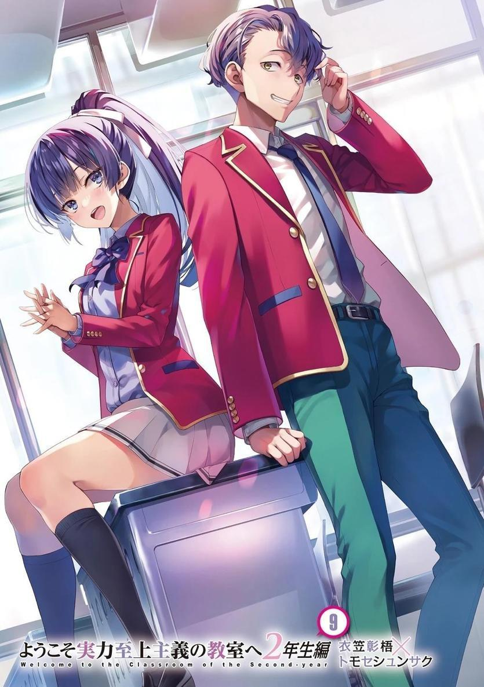
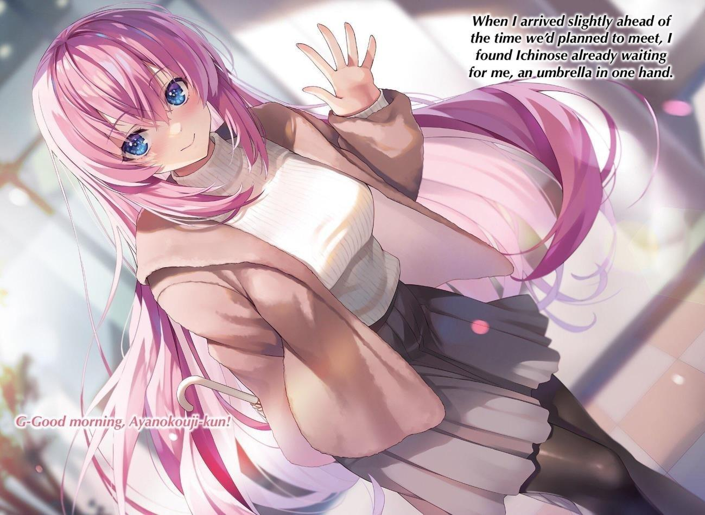
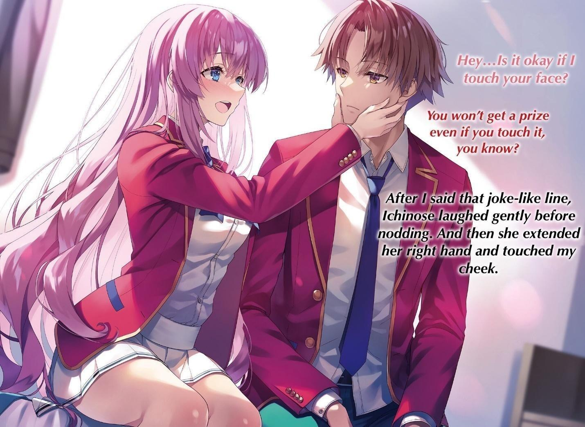
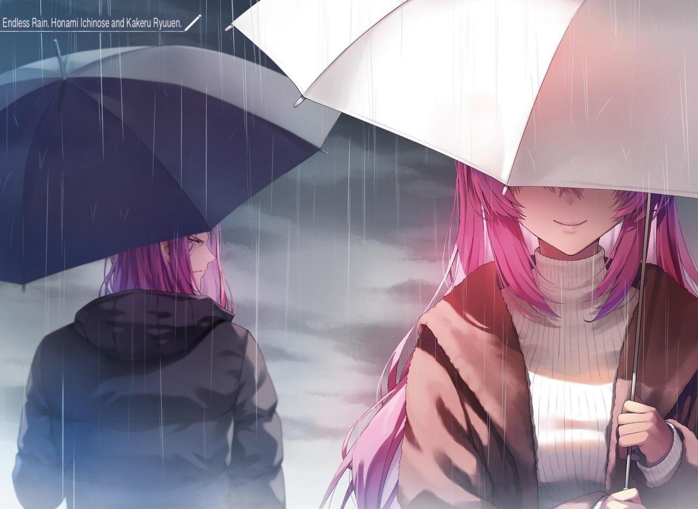
GLADHEIM
TRANSLATIONS
Youkoso Jitsuryoku Shijou Shugi no Kyoushitsu e - Segundo Año Volumen 9
EL MONÓLOGO DE NAGUMO MIYABI
ANTES DE DARME CUENTA, era el mejor tanto en los estudios como en los deportes.
Me di cuenta de que había gente a mi alrededor que intentaba aprovecharse de mí.
No me esforzaba especialmente.
Me enseñaban las mismas cosas en el mismo periodo de tiempo, pero mi capacidad para aprender era mejor que la de los demás.
Era... como un prerrequisito inesperado para llegar a ser popular.
La popularidad es un don.
Desde temprana edad, tuve el talento para ser popular.
Por supuesto, sabía que no le gustaba a todo el mundo.
Especialmente a los que eran rivales.
Pero no importaba.
Para bien o para mal, mientras la gente me considere popular, eso es lo único que importa.
Mi vida como un chico popular siguió siendo la misma durante toda la primaria y la secundaria: un camino deslumbrante.
No obstante, no he podido deshacerme de la pequeña y misteriosa incomodidad que a veces siento.
Una incontenible sensación de incomodidad.
Es lo único que siguió latente en el fondo de mi mente durante toda mi impecable vida.
Aunque me aceptaban y me seguían muchas personas, seguía sintiendo una sensación de malestar que nunca desaparecía.
Pero decidí no preocuparme.
No pasa nada mientras pueda seguir siendo el mejor y el más popular, independientemente de si me siento incómodo o no.
Ese era el plan.
Pero todo cambió cuando entré en la preparatoria.
No pude evitar que una intensa sensación de incomodidad saliera a la superficie.
Horikita Manabu.
El hombre que era un año mayor que yo era alguien objeto del respeto de muchos.
Era mucho más deslumbrante e inteligente que yo, y tenía una convicción que era cualquier cosa menos frívola.
Y luego había otro chico un año por debajo de mí que era diferente de Horikita Manabu, pero tenía un talento especial.
Ayanokouji Kiyotaka... era totalmente diferente. Tenía una actitud arrogante, pero su habilidad era innegablemente real.
Lo que logré no fue menos que aquellos dos.
Con una insaciable sensación de incomodidad, a veces me pregunto.
¿Soy bueno de verdad?
¿O sólo fui un rey desafortunado que nunca tuvo un buen oponente?
No puedo evitar pensar en ello.
Esa es la verdadera naturaleza de mi malestar. Así que tengo que conformarme con hacer desaparecer esa sensación de incomodidad.
Debo derrotar a Ayanokouji y alcanzar el verdadero poder.
De lo contrario...
SEÑALES DE IMPULSO
EL FINAL DEL segundo semestre estaba por fin a la vista.
El viaje de estudios pasó como un sueño fugaz, pero las vacaciones de invierno están a la vuelta de la esquina para los alumnos de segundo año. El invierno es la estación que nos recuerda el final del año y la despedida.
Hoy hace bastante frío, quizá debido a que la temperatura mínima es de un grado centígrado.
Otros estudiantes pasaban a mi lado de camino a la escuela, exhalando nubes blancas mientras hablaban del frío que hacía. Cada día, contemplaba el paisaje casual de la vida cotidiana y lo grababa en mi memoria.
Los que sólo viven el momento pueden preguntarse qué sentido tiene contemplar una escena así. Pero, ¿y si supieras que esa escena sólo se puede contemplar durante un tiempo limitado?
¿Y si supieras que sólo puedes ver este mundo durante un año más?
Tal vez este mundo cotidiano parecería una joya deslumbrante.
Mientras contemplaba ese paisaje cotidiano hasta que llegara la persona a la que estaba esperando, recibí un mensaje.
[Ven a la sala del consejo estudiantil hoy después de clases].
El mensaje de Nagumo era tan imperioso que no tuve más remedio que aceptarlo.
―La sala del consejo estudiantil, ¿eh?
No me gusta mucho esta invitación, pero no puedo rechazarla tan fácilmente teniendo en cuenta el futuro. Además, colaboré con él en el festival, aunque hubiera un conflicto de intereses.
Respondí brevemente y cerré la pantalla.
Cuando volví a mirar a los demás estudiantes y el paisaje, vi a Kushida caminando sola hacia la escuela. Cuando me di la vuelta sin saludarla, ella me saludó con una sonrisa. Levanté la mano en respuesta, pero justo antes de cruzarnos, me lanzó una mirada fulminante.
―¿Pero qué...? ¿A estas horas de la mañana...?"
Ella me saludó y yo la saludé a ella, ¿por qué me miró así?
Creo que lo hizo porque estaba segura de que nadie veía su cara, pero no recuerdo haber hecho nada en particular para merecer eso.
Supongo que simplemente es porque no le caigo bien a Kushida...
Me sentí como si me hubieran atacado por la espalda.
―¡Lo siento, Kiyotaka!
En ese momento, una Kei sin aliento llamó desde la dirección del dormitorio y vino corriendo hacia mí.
―No te preocupes tanto. Sólo llegas unos minutos tarde.
―Sí, pero... es decir, ¿no hace mucho frío esperando fuera?
La miré con curiosidad, ya que habíamos quedado en el vestíbulo de la residencia.
―No pasa nada. Todavía estás un poco despeinada.
Debió de tener prisa, ya que encontré un error poco característico y se lo señalé.
―¡No, no!
Kei agachó la cabeza avergonzada y se apresuró a intentar alisarse la cabellera con un peine. Pero no importaba cuántas veces lo intentara, siempre rebotaba un poco.
―¡Dios mío, qué voy a hacer...!
―¿Por qué te preocupa eso? Hondou e Ike tienen peores hábitos para dormir.
―¡No me pongas en la misma categoría que esos chicos! Ugh, voy a ir al baño cuando llegue a la escuela...
Kei se alejó avergonzada, cubriendo la parte del pelo despeinada con la mano.
Bueno, no estaba mal prestar atención a la moda y a la apariencia de uno mismo.
PARTE 1
Llegué solo al aula y tomé asiento.
―Buenos días, Kiyotaka-kun.
―Oh, buenos días.
Yousuke, que estaba rodeado de chicas, me vio y me saludó. Me alegré de que me saludaran, pero las miradas de "devuélveme a mi Hirata-kun" de las chicas son dolorosas.
―Puede que no sea asunto mío, pero si hay algo que pueda hacer para ayudarte, por favor, házmelo saber.
Me pregunté qué iba a decir, pero volvió a hacer la misma oferta.
―Últimamente ¿no me dices lo mismo todos los días?
Yousuke estaba preocupado por un grupo de tres personas que lo veía a lo lejos.
Como yo solía ser miembro de este grupo, supongo que estaba preocupado por mi salida.
Estaba seguro de que a Yousuke le preocupaba mi presencia tanto antes como después del viaje escolar.
También estaba la cuestión de que Yousuke es el tipo de persona que se preocupa por las cosas aunque diga que no.
―Si pasa algo, te lo diré. Gracias. Si es posible, te agradecería que me vigilaras en silencio.
Volví a decirle con firmeza que comprendía su buena voluntad. Lo más probable es que Yousuke siga llamándome con regularidad hasta que mi relación con el grupo se recupere.
―Eso no está bien. No soporto cuando veo inestabilidad en la clase...
Yousuke sentía disgusto consigo mismo por expresar con palabras sus incontrolables sentimientos. Sentía una molesta culpa sobre él a pesar de no haber hecho nada malo.
―De todas formas, las chicas te están esperando. Eso me preocupa más.
Sus miradas celosas se intensificaban con el tiempo mientras se preguntaban cuánto tiempo se mantendría Yousuke alejado de ellas.
Poco después, Kei entró en el aula y Yousuke volvió con ellas.
Sonó la campana y Chabashira-sensei llegó al aula, comenzando otro nuevo día escolar.
―No debería sorprenderles que no les avisaran, pero antes de las vacaciones de invierno, tendrán que hacer el último examen especial del segundo semestre.
La clase, que hasta ahora se había acostumbrado a tolerar los exámenes especiales, estaba algo más molesta de lo normal, ya que esperaban que las vacaciones de invierno llegaran sin más.
―Uy. Creo que esta vez se sorprendieron un poco.
Fue a causa del festival escolar, el viaje escolar, y otros grandes eventos que habían estado sucediendo.
Para esta escuela, así son las cosas, y un examen especial es un examen especial, supongo.
Sin embargo, aunque se celebrara el examen especial, sólo quedaban poco más de dos semanas del segundo semestre.
No creo que sea algo que requiera preparación o tomar medidas a largo plazo, pero me pregunto qué tipo de contenido incluirá.
―Entiendo su preocupación, pero no hay por qué alarmarse tanto. No es el tipo de examen especial más temido que hará que los estudiantes sean expulsados.
El factor importante, la expulsión, se reducirá al mínimo en este examen especial.
―Sin embargo, por supuesto, los puntos de clase fluctuarán inexorablemente dependiendo de quién gane o pierda. Sin embargo, no podrán permitirse el lujo de perder, ya que a partir de ahora irán directos a la caza de la clase A.
Ganar uno o dos enfrentamientos no basta para alcanzarlos y superarlos.
Hay que estar dispuesto a ganar todas las batallas que nos esperan.
―En este examen especial, no hay reglas complicadas que haya que grabar en sus cabezas. Competirán con otras clases en una prueba académica de uno contra uno.
Competición académica. Como estudiante normal, y particularmente como estudiante de esta escuela, esto no es sorprendente.
Más bien, es lo más normal que puede haber.
Hasta los exámenes parciales y finales normales son competitivos.
Pero ya que se llama un examen especial, no hace falta decir que habrá algunas reglas especiales que determinarán en gran medida el ganador.
―El ganador recibirá 50 puntos de clase del perdedor. Si ganan, obtendrán 50 puntos de clase, y si pierden, perderán 50 puntos de clase.
No es un número muy grande. Más bien, se trata de una baja fluctuación en los puntos de clase.
―Por lo tanto, si se trata de una competencia académica basada en la clase, ¡entonces simplemente no es una buena idea luchar contra la Clase A!
―Puedes estar contento por eso, Ike, porque es exactamente la Clase A contra la que tendrán que luchar ustedes, los estudiantes de la Clase B.
El oponente ya estaba decidido, y Chabashira-sensei nos confrontó con una cruel realidad.
―Es un sistema sencillo en el que la clase con las calificaciones promedio más altas en los exámenes finales recientemente celebrados resulta que se enfrenta a la clase con el segundo promedio más alto, y la tercera compite contra la cuarta. Incluso con algunas reglas especiales, una diferencia significativa en la capacidad académica básica entre las clases inferiores y la clase A, que tiene una gran capacidad académica, puede afectar mucho al resultado.
A principios de diciembre, los puntos de clase eran 1250 para la clase A de Sakayanagi y 985 para la clase B de Horikita.
Si ganamos el mano a mano, cerraremos la brecha a 165 puntos con una diferencia de 100 puntos de clase.
Además, estaremos en camino de superar la marca de los 1.000 puntos de clase por primera vez desde la inscripción.
Por otra parte, la Clase C de Ryuuen tiene 684 puntos y la Clase D de Ichinose tiene 655 puntos. Si Ichinose gana, volverán a la Clase C, pero si pierden, la brecha entre ellos y la Clase A se duplicará. Esta es una situación difícil.
No será una lucha fácil, y en términos de capacidad académica, nunca hemos ganado. Aunque la diferencia entre el primer y el segundo puesto parezca escasa, la brecha académica general no es insignificante.
―Las preguntas versan sobre todos los temas habituales que se plantean en los exámenes parciales y finales. Las preguntas irán de relativamente fáciles
a extremadamente difíciles, y serán tanto o más difíciles que los exámenes escritos normales.
Aunque esta clase haya mostrado un notable ritmo de crecimiento, es poco probable que sean capaces de cambiarlo, aunque la clase estudie duro durante las próximas dos semanas.
―Ahora voy a decirles algo a todos. Todos ustedes tienen una buena oportunidad de ganar.
Los detalles del examen especial, como fue llamado, fueron revelados en el monitor.
[Examen especial de final del segundo semestre. Un examen escrito global cooperativo en el que toda la clase resolverá un total de 100 preguntas].
[Resumen del examen especial]
REGLAS:
● Los alumnos resuelven los problemas uno a uno en un orden predeterminado.
● Un alumno no puede resolver más de cinco problemas, pero deben resolver al menos dos, independientemente de que estén correctos o incorrectos.
● Cada alumno dispondrá de un máximo de diez minutos, incluido el tiempo para entrar y salir del aula.
● Todos los alumnos, excepto los que presenten el examen, deberán esperar en un aula separada.
● Sólo los alumnos que estén esperando su turno deberán esperar frente a la entrada.
● Si se excede el límite de tiempo, el alumno será descalificado y no recibirá ningún punto.
● Dejar una pista o respuesta escrita o verbal a una pregunta es una violación de las reglas.
● Si se descubre que un alumno comete una infracción, se dará por finalizado el examen y el alumno recibirá cero puntos.
BONIFICACIONES ESPECIALES SEGÚN EL TIEMPO RESTANTE:
● Se darán 10 puntos por cada hora de tiempo restante adicional.
● Si quedan más de 30 minutos... 5 puntos.
● Si quedan más de 10 minutos... 2 puntos
● Todos los problemas se puntúan según la habilidad del que resuelve (ver más abajo), independientemente del nivel de dificultad de la pregunta.
● (La capacidad del que resuelve se basa en la capacidad académica OAA a fecha 1 de diciembre).
Capacidad académica A - 1 punto
Capacidad académica B - 2 puntos
Capacidad académica C - 3 puntos
Habilidad Académica D - 4 puntos
Habilidad académica E - 5 puntos
Un examen en el que el número de puntos obtenidos aumenta o disminuye en función de la capacidad del alumno para resolver los problemas, independientemente del nivel de dificultad de la pregunta.
Esta es una regla muy singular en la que no se suele pensar. Es realmente digna de llamarse especial. También hay clasificaciones +/- en las OAA, pero como hay cinco clasificaciones, los estudiantes con + pueden tener una ligera ventaja.
―Esta es una regla especial para el examen escrito. La clase A, que tiene un gran número de estudiantes con alta capacidad académica, parece tener una clara ventaja, pero el porcentaje de estudiantes de la clase A con capacidad académica B o superior en la OAA es alto. Esto significa que el número total de puntos obtenidos será necesariamente menor aunque resuelvan los problemas.
¿Entienden lo que quiero decir?
Aunque en la clase de Horikita hay muchos alumnos que han hecho notables progresos académicos, todavía hay algunos que se sitúan en la parte baja de la clasificación, como Kei, Satou, Ike y Shinohara.
Aunque el porcentaje de respuestas correctas de estos alumnos es bajo, pueden recibir cuatro o cinco puntos por cada pregunta de este examen especial, siempre que sean capaces de encontrar la respuesta correcta. Desde luego, no se trata simplemente de un examen de capacidad académica, y no podemos suponer que estemos en desventaja frente a la clase A. El enfrentamiento es más bien imprevisible, y el resultado va más allá de nuestra imaginación.
El tiempo que queda en el encuentro es una ventaja, pero no estoy seguro de si es realista o no.
El temporizador empezará cuando pongas la mano en la puerta del aula y la abras. El número de alumnos en la clase de Horikita es 38. Será imposible cumplir la hora sin dejar casi dos minutos a cada alumno para que finalice el cronómetro. Los alumnos con menor capacidad académica tienden a cometer más errores por negligencia, y el riesgo de perder puntos debido a la distracción causada por el temporizador es mayor.
La bonificación por el tiempo que resta podría haberse tenido más en cuenta para los estudiantes con mayor capacidad académica en la OAA. No, seguiría siendo peligroso enfocarse en reducir la pérdida de tiempo.
―Así que tenemos una buena oportunidad de ganar, es ese tipo de examen especial, ¿no?
Pronto, Horikita comprendió la posibilidad de ganar a partir de las reglas.
―Así es. Por supuesto, los alumnos de la clase A tienen una buena puntuación en términos de capacidad académica desde los primeros hasta los últimos de la clase. Obtendrán una buena puntuación. Aunque tengamos muchos alumnos en torno al nivel académico D con potencial para obtener puntuaciones altas, si no responden correctamente, obtendrán cero puntos.
Aun así, es mucho mejor que enfrentarse cara a cara.
―También me gustaría añadir algo sobre las trampas, algo que está claramente establecido en las reglas. Está prohibido hablar con un alumno que haya terminado de hacer el examen mientras se espera a que otro tome el relevo. Los alumnos estarán siempre presentes en sus respectivas aulas, pero no se les permite entablar conversaciones innecesarias.
Seguramente todos son conscientes de la fuerte vigilancia de la zona.
―¿Qué ocurre si un alumno falta el día de la clase?
―Si falta un alumno, dos preguntas no se podrán contestar, y si faltan dos alumnos, cuatro preguntas no se podrán contestar, lo que supondrá cero puntos.
Esto sería lo mismo que ser descalificado por quedarse sin tiempo. El número de preguntas sin respuesta se decidiría al azar antes de empezar el examen.
Además, aunque fuera improbable, no habría un cambio en los puntos de clase en caso de empate con un oponente.
La estrategia de dejar que alguien falte a propósito no funcionará, y sólo te pondrá en desventaja.
Las clases con un gran número de alumnos, como las de Ichinose y Ryuuen, tendrán ventaja porque dispondrán de más tiempo para resolver los problemas, pero eso no afecta al número de puntos obtenidos al resolverlos.
El efecto que tiene la población de la clase en la puntuación es mínimo, ya que es más eficiente e ideal que resuelvan las cinco preguntas los alumnos con
puntuaciones bajas de OAA, que son las piezas centrales de la clase y pueden actuar como emboscada.
Sin embargo, la coincidencia de tener el mismo número de alumnos que la clase contra la que te enfrentas hace que esta idea carezca en sí misma de sentido.
―Tenemos que discutir y pensar cómo podemos vencer a la clase A.
Como una madre que vigila a sus hijos, Chabashira-sensei habló.
― Ya tenemos fecha para el examen especial, pero decidimos disponer de tiempo hasta justo antes de las vacaciones de invierno. El alcance del examen es enorme, así que decidimos que necesitamos mucho tiempo. Es bastante trabajo, pero si ganamos, nos acercará todavía más al nivel A. Eso es todo.
El alcance del examen se anunciará mañana, y aquí se acabó la discusión.
Calendario
22 de diciembre... Día de examen especial
23 de diciembre... Anuncio de los resultados del examen especial, Ceremonia de fin del 2º semestre
Era poco antes del final del segundo semestre, justo a tiempo.
Sin embargo, sólo quedan tres semanas para el examen.
Aunque los alumnos más avanzados académicamente suelen tener una actitud diferente hacia sus estudios y requieren un tiempo de preparación mínimo, la clave de la victoria está en los alumnos cuyas capacidades académicas están por debajo de la media.
―Me fijé en cada una de las demás clases en la OAA para ver cómo les va.
La puntuación máxima que puede obtener nuestra clase B es lógicamente superior a la de la clase A, ya que tenemos más alumnos con calificaciones
académicas D y E. Esto significa que si jugamos un partido ideal, podemos ganar el 100% de las veces.
Como las clases que tienen más alumnos con menor capacidad académica en la OAA pueden conseguir más puntos, hay un límite superior para el número de puntos que pueden conseguir los alumnos de la clase A, por mucho que se esfuercen.
Ganaríamos, aunque superáramos en un solo punto la calificación máxima del adversario.
Y, bueno, esto no es más que una teoría vacía. Hablamos de una probabilidad mínima.
Con casi 40 estudiantes participando, es casi imposible obtener una puntuación perfecta. Teniendo en cuenta lo que dijo Chabashira-sensei y las reglas del examen especial, lo normal es que el porcentaje de preguntas difíciles no fuera muy bajo.
Si los problemas pudieran ser resueltos fácilmente por estudiantes con capacidades académicas E o D, sería bastante desequilibrado.
Sería un examen especial poco razonable que perjudicaría a las clases con alta capacidad académica.
Un grupo de estudio resultaba imprescindible, pero dudaba que fuera suficiente para llevarnos a la victoria.
―También es importante tener en cuenta quién resuelve cuántos problemas y a quién pasará el relevo después.
Yousuke, en tono tranquilo, preguntó a Horikita como para confirmar su respuesta.
―Sí. Si lo pensamos de forma sencilla, es fácil entender que los alumnos con baja capacidad académica deben ser los primeros en responder y pedirles que resuelvan todos los problemas que puedan...
El límite de tiempo es de 10 minutos. La capacidad de leer las preguntas también depende en gran medida de la habilidad de los alumnos.
Puede ser un reto simplemente encontrar preguntas fáciles de las 100 del examen.
Si los alumnos más avanzados pudieran resolver primero las preguntas más difíciles, a los menos avanzados les llevaría menos tiempo encontrar las preguntas adecuadas y podrían concentrarse en ellas con más calma.
¿Quién puede y quién no puede resolver qué tipo de problemas?
Saber esto y tomar el mando de la situación también es una forma de ganar.
Puede que hubiera otros métodos. Al final, es importante decidir pronto qué estrategia adoptar y empezar a trabajar en ella.
―Chabashira-sensei dijo que hay posibilidades de ganar, pero... una desventaja es una desventaja.
―Si ellos puntúan bien, no creo que ganemos. Después de todo, el oponente es de clase A.
Algunos de mis compañeros comenzaron a expresar esas opiniones.
La clase A nunca ha estado por debajo de las otras clases en las calificaciones totales de los exámenes puramente escritos. Aunque haya reglas especiales, siguen siendo un oponente formidable.
―Esta vez, nos enfrentamos a la clase A, pero en realidad, nos enfrentamos a nosotros mismos. No nos importan las estrategias de nuestros oponentes, y no necesitamos estar particularmente preocupados por el hecho de que Sakayanagi-san es nuestra oponente.
Hizo hincapié en la realidad de nuestros difíciles adversarios, pero no era lo exterior lo que debíamos afrontar, sino lo interior.
―Pensaré en una estrategia todo lo que pueda. Mientras tanto, necesito que estudien todo lo que puedan.
Hasta ahora, o más exactamente, hasta hace unas semanas, la clase estuvo estudiando para sus exámenes finales. Aunque era obligación de los alumnos estudiar, estaban cansados de tener que volver a hacerlo en tan poco tiempo.
Sin embargo, ningún alumno se quejó.
―Los apoyaremos en todo lo que podamos.
respondió Yousuke en respuesta a Horikita, el estudiante que daba clases en las sesiones de estudio, al igual que Keisei y Mii-chan.
―¡Eh! ¡Me estoy motivando! Personalmente, estoy un poco en conflicto porque mi OAA subió, pero voy a hacer mi contribución.
Sudou, que había recibido una calificación E por su rendimiento académico, ahora había mejorado a una calificación C+.
Los puntos que podía obtener eran menores que antes, pero había dado un gran salto cualitativo en su capacidad.
Si no lo hubiera conseguido, le habría costado mucho resolver los problemas.
PARTE 2
Después de las clases, me escabullí del aula donde habíamos empezado a discutir y llegué a mi destino casi justo a tiempo. Pensé en tocar la puerta inmediatamente, pero pude oír fuertes voces desde el interior de la habitación, como si la gente estuviera discutiendo algo adentro. Sin embargo, como estábamos separados por una gruesa puerta, no pude oír exactamente lo que se decían.
Si hubiera mantenido los oídos atentos durante un rato, habría podido oírlos con claridad, pero se acercaba la hora de la reunión, así que descarté rápidamente la opción de escuchar a escondidas.
―...Gracias.
Aparentemente, dos estudiantes varones ya estaban sentados en la sala del consejo estudiantil, y uno de ellos se levantó de inmediato.
―Siento haberte llamado, Ayanokouji.
―Está bien, pero me pone un poco nervioso cuando el presidente y el vicepresidente del consejo estudiantil son tan listos.
Dije algo que un estudiante típico podría haber dicho.
―Lo siento, pero a mí no me pareces nervioso.
Nagumo, que seguía sentado, cruzó las piernas y dobló el dedo índice para indicarle al otro que acortara la distancia entre ellos.
Kiriyama se situó ligeramente detrás de Nagumo y se colocó en una posición en la que se le pudiera ver con facilidad.
En ese momento, miró la pantalla del celular que sacó de su bolsillo.
Sin embargo, en menos de un segundo, apagó la luz de la pantalla y lo devolvió al lugar de donde salió.
El siguiente en abrir la boca no fue Nagumo, el presidente del consejo estudiantil, sino Kiriyama, el vicepresidente.
―Después de esto, también convocamos a los miembros del consejo estudiantil Horikita e Ichinose ―dijo.
―¿Horikita e Ichinose?
O es una coincidencia, o mencionaron a propósito los nombres de las dos estudiantes de segundo año del consejo estudiantil.
―No hay necesidad de precipitarse, Kiriyama... Ayanokouji podría querer tener una pequeña charla contigo también...
―Lo siento, pero a mí no me lo parece.
Sentí gratitud en mi corazón por el buen juicio del Vicepresidente Kiriyama.
―Además, tengo algunas cosas que quiero hacer para prepararme para el próximo examen especial.
―¿Examen especial? No habrá más exámenes especiales durante el segundo semestre para nosotros, los estudiantes de tercer año. Además,
¿acaso todo esto no es de tu incumbencia, puesto que ya decidí quién ganará?
Nagumo miró a Kiriyama inquisitivamente, sin entender por qué.
―A pesar de todo. Siempre hay que estar preparado para lo inesperado.
Hay más estudiantes de tercer año de los que crees esperando ansiosos su billete a la cima. ¿Y si uno de ellos intenta arrancarte la cabeza?
―Esos idiotas ya cayeron. No queda nadie para luchar.
―Eso espero.
A los estudiantes de tercer año no les quedaba mucho tiempo.
Con Nagumo ostentando todo el poder, debían conseguir de alguna manera el billete de 20
millones de puntos, y todavía estaban luchando esa batalla.
No es de extrañar que Nagumo se mostrara optimista por no tener enemigos.
Dado que tenía todos los boletos necesarios, era imposible que alguien fuera contra él, incluido Kiriyama, que corría el riesgo de verse privado de su boleto a la victoria si no seguía las órdenes de Nagumo.
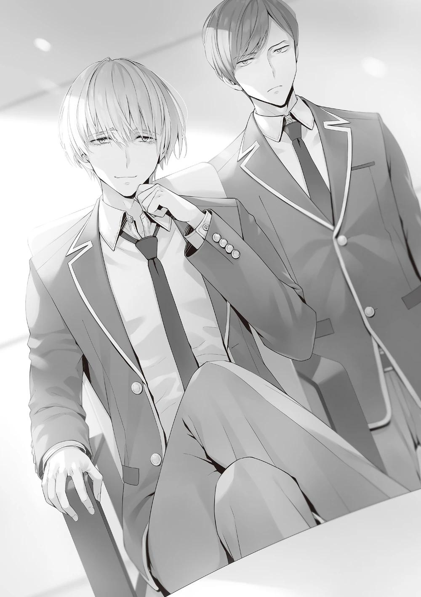
En otras palabras, aquellos a los que no les habían dado una entrada no estaban sujetos a las mismas restricciones.
Sería un poco exagerado decir que pueden expulsar de la escuela a Nagumo y acumular puntos privados a partir de ahí... No. Aunque así fuera, no estoy seguro de que merezca la pena.
Si expulsaran a Nagumo de la escuela, su enorme suma de puntos privados iría a parar a la caja fuerte de la escuela. Nagumo no podría protegerse sin ese contrato.
Exceptuando los puntos privados de Nagumo, la cantidad de puntos privados recolectados sólo en el tercer trimestre apenas alcanzaría para salvar a una o dos personas como máximo.
―¿Tienes idea de lo que estás hablando, Kiriyama? Kiriyama... me has estado fastidiando toda la mañana, ¿verdad?
―No voy a parar ahora, digas lo que digas, porque mantengo mi postura en este asunto.
Nagumo sonrió y asintió ante la confirmación de que su voz tenía tanta presión.
―Lo siento, Kiriyama, pero es una decisión personal que tengo que tomar mientras sigo en la escuela.
―Entonces espero que puedas entender mi deseo de acabar con esto.
Se produjo una pequeña discusión en la sala del consejo estudiantil antes de que yo entrara.
El comentario de Nagumo acerca de que Kiriyama estaba encima de él desde esta mañana ciertamente indicaba que este encuentro no era algo que Kiriyama recibiera con agrado.
No, tal vez sea lo mismo para mí.
―Está bien, está bien. Mantendré la charla al mínimo. ¿Está bien?
Nagumo confirmó con Kiriyama que no había más remedio que seguir avanzando en la conversación.
―Tengo otro caso que atender relacionado con el consejo estudiantil después de esto, así que dame un minuto.
―Dijiste que tenías algo que contarme. Muy bien, hagámoslo rápido.
Al final, Kiriyama accedió, y Nagumo comenzó lo que consideró una charla necesaria.
― Los de segundo año están en una carrera inusualmente reñida, ¿no?
―Eso parece.
―En nuestra generación y en la de Horikita-senpai, la clase A se impuso en solitario a mediados del segundo año. Me da un poco de envidia que puedas disfrutar de la batalla todo este tiempo.
En el pasado, se decía que las batallas entre clases generalmente se resolvían al final del primer año hasta mediados del segundo, con una gran diferencia en los puntos de clase.
La clase que comenzó el año como Clase A se graduó por delante de la Clase B
e inferiores.
Hubo algunos casos raros, como el del Presidente del Consejo Estudiantil Nagumo y otros, en los que la Clase B pasó a la Clase A, pero en cualquier caso, a mediados del segundo año, la Clase A estaba en una posición dominante. Por otro lado, en nuestro año, sigue habiendo una diferencia de puntos que permite una remontada hasta para la clase D.
―Todo indica que existe una posibilidad para cada una de las cuatro clases, pero seguramente sólo se mantendrá hasta el examen final ―afirma.
―Eso es lo que yo también pienso. Dos o, como mucho, tres clases competirán por las plazas de la clase A.
Tanto Nagumo como Kiriyama emitieron el juicio sin vacilar.
―El examen final para los estudiantes de segundo año será una batalla feroz.
―Sí. Los exámenes son completamente diferentes, por supuesto, pero los resultados son casi siempre desastrosos. El año pasado, yo tenía el control de los alumnos de segundo año en el momento de los finales y tenía el control sobre los exámenes. Intenté reducir las heridas al mínimo, pero aun así tres alumnos fueron expulsados.
Dijo que, a pesar de sus esfuerzos por evitarlo, hubo bajas inevitables.
―Hubo forma de evitar las expulsiones, pero tuvimos que sopesar la pérdida de puntos de clase y puntos privados frente a la ganancia.
Esta historia puede ser cierta, aunque puede o no ser útil.
Es poco probable que los exámenes finales de curso que hagamos sean iguales a los que vivieron Nagumo y las generaciones anteriores. Sin embargo, la escala será más o menos la misma. Esto es algo que podemos ver naturalmente a través de nuestra experiencia en la vida escolar hasta ahora.
―Ya está bien de tanta palabrería. Es hora de ir al grano, Nagumo.
Kiriyama le instó con calma, y Nagumo se encogió de hombros y mostró sus blancos dientes.
―Es hora de que termine mi papel como presidente del consejo estudiantil.
Pero antes de eso, tenemos que decidir quién será el próximo presidente.
―En cuanto a la duración del cargo, ya llevas más tiempo que los anteriores presidentes, ¿no?
Manabu Horikita a Nagumo Miyabi. Esta vez el bastón de mando del presidente del consejo estudiantil debe pasarse un poco antes. Aunque también recordé que el propio Nagumo dijo que alargaría el mandato a su cargo.
―Íbamos a ampliar el mandato, pero la escuela se puso en contacto con nosotros varias veces. Dijeron que si lo retrasábamos demasiado, estaríamos negando a los menores la oportunidad de adquirir experiencia. Bueno, tienen razón.
―Todos los estudiantes de tercer año ya cumplieron sus funciones en el consejo estudiantil, excepto Nagumo y yo, y todos los procedimientos se completaron.
Así que todo lo que queda es decidir quién será el próximo presidente del consejo estudiantil y entonces estos dos estarán al margen.
Ya veo. Así que Nagumo decidió renunciar a su puesto como presidente del consejo estudiantil.
Eso explica por qué estaba diciendo los dos nombres antes mencionados.
Suzune o Honami. Tenían que decidir quién era más adecuada para ser la próxima presidenta del consejo estudiantil.
―Nagumo, tú tienes la autoridad para nombrar al presidente del consejo estudiantil, ¿no es así?
―Sí. Tengo ese derecho.
―Entonces, ¿no deberías estar hablando con Horikita e Ichinose en vez de conmigo?
Le dije lo obvio, pero él ya parecía ser consciente de ello, puesto que no se sorprendió por mi respuesta.
―Sería una pérdida de tiempo tomar una decisión así, ¿no?
―Teniendo en cuenta que me invitaron aquí... Bueno, puedo adivinarlo.
―Tú y yo vamos a decidir quién será el próximo presidente del consejo estudiantil.
―Va a ser algo más que animarlas, ¿no?
―He estado pensando en varias formas de competir contigo, pero esto debería funcionar. Horikita e Ichinose llevan aquí dos años, como tú. Estoy seguro de que tienes tanta información como nosotros.
Es comprensible que Nagumo, a quien no le queda mucho tiempo, quiera que la pelea se resuelva lo antes posible.
Nagumo no cree que esta sea la forma ideal de luchar.
Aún así, debió decidir que es mejor que no enfrentarse.
―Todavía hay una forma de posponerlo. No me sorprendería que hubiera un examen especial como el campo de entrenamiento mixto del año pasado, donde los estudiantes son emparejados y compiten contra otros grados.
―Bueno, cuando llegue el momento, podemos llamar a esto un encuentro preliminar.
No siendo de los que posponen las cosas, Nagumo trató de mantener a Ichinose y Horikita en un círculo cerrado para que no pudieran escaparse.
―Acepté disputar el combate, pero no acepté competir más de una vez.
Tenía cierto interés en el Nagumo que tenía delante, pero no podía dedicarle todo mi tiempo.
Ya tenía algunas cosas que quería hacer en el futuro.
―¿Crees que tienes poder de veto?
―No quiero que me retes a un combate sólo por diversión. Si quieres tener esta batalla conmigo para decidir el presidente del consejo estudiantil, tendrás que estar preparado para tener una pelea real aquí.
―Lo haré, pero es una pelea que seguramente perderás. Lo sabes,
¿verdad?
―Ya que los estudiantes actuales podrán votar, todos los votos emitidos por los estudiantes de tercer año serán a tu discreción, presidente del consejo estudiantil. Así que un tercio de los votos ya fueron emitidos, ¿es eso lo que estás diciendo?
―Sí. Si juntas a todo el segundo año, apenas estaríamos empatados.
Bueno, eso tampoco va a pasar.
Como el oponente es Ichinose del mismo año, el voto de los de 2º se dividiría de forma inevitable.
―Si pudieras hacerme un favor, creo que sería un buen enfrentamiento.
―Interesante. Dilo.
―La votación será anónima, eso es todo. Si sólo la escuela sabe quién votó a qué candidato, creo que estaremos empatados.
―No lo entiendo. Entonces, ¿los de tercer año no votarán por el candidato que yo apoyo?
―Te puedes imaginar cómo aumentarán las posibilidades de que eso ocurra, ¿verdad?
Si el anonimato está asegurado, no hay necesidad de seguir las reglas.
Aunque prometiera algún tipo de recompensa, como puntos privados, esto es imposible de probar a menos que el bando de Nagumo obtuviera cerca de cero votos.
―Aunque así fuera, ¿cómo esperas que la mitad de los de tercer año estén de tu lado? Eso es imposible.
―No lo sabrás hasta que lo intentes.
Kiriyama observó en silencio mientras Nagumo y yo discutíamos.
―Entonces, estás dispuesto a jugar siempre y cuando añada esa condición, ¿es eso?
―Sí, no habría problema.
―Sigues mostrando una extraña confianza, pero no pasa nada. Si confías en que puedes competir contra nosotros sobre esa base, entonces no tengo ninguna queja. Pero antes de zanjar el asunto, déjame decirte que me gustaría que hubiera algo que apostar en el juego.
Supongo que si no hubiera nada por lo que apostar, no dolería ni escocería perder.
Para Nagumo, evitar ser superado por mí es una necesidad absoluta.
Es inevitable que Nagumo apueste a que no hay más posibilidades que su victoria.
―¿Puedes apostar algo, Ayanokouji?
―¿Puedo repetirte esas palabras tal y como son? Aunque eso signifique que me expulsen.
―Me gustaría decir que sí, pero es una pregunta difícil.
―Estoy seguro de que tienes razón. Nadie aceptaría el riesgo de ser expulsado en un lugar como éste. Estoy dispuesto a apostar por la expulsión, pero en ese caso, permíteme exigir una contrapartida.
―¿Quid pro quo?
―Si gano, quiero que me des algunos puntos privados. Preferiblemente el dinero suficiente para comprar un billete para pasar a la siguiente clase. Según las reglas de los exámenes especiales, se necesitan tantos puntos privados para evitar la expulsión. No es mucho pedir.
―Bueno, vale la pena arriesgarse a la expulsión, ¿no?
Dado que los intereses de ambas partes están alineados, se puede llegar a un consenso sobre la dirección del juego.
Sin embargo, Kiriyama, que estaba escuchando la conversación, puso fin a la misma.
―Me dijeron previamente que ibas a jugar con Ayanokouji, pero no estoy de acuerdo con los términos de la apuesta, y no puedo permitir que apuestes una suma tan grande de dinero en un juego que nunca has jugado antes.
―Espera un momento Kiriyama... ¿Crees que voy a perder con estas reglas? Ayanokouji dijo que estaríamos empatados siendo anónimos, pero se equivoca.
―No creo que pierdas, pero aún así no es una probabilidad del cero por ciento. La probabilidad cambia dependiendo de si eliges a Horikita o a Ichinose.
Sobre todo, 20 millones de puntos es demasiado. Si te parece bien pagarle a
Ayanokouji, entonces usa el dinero para salvar a uno de los estudiantes de tercer año.
No es de extrañar que Kiriyama le desaconsejara enérgicamente hacerlo, pero Nagumo no dio muestras de retractarse.
―Soy libre de hacer lo que quiera con el dinero que he obtenido gracias a mi poder real. Siempre ha sido así y siempre lo será.
―...¿Insistes?
―Por supuesto. Voy a ganar esta guerra y expulsar a Ayanokouji de la escuela.
―Dejemos al segundo año en paz. No estoy de acuerdo con ese enfoque.
Replicó Kiriyama, pero Nagumo no iba a seguir escuchándolo.
―Te concederé tu deseo, Ayanokouji. Si me ganas, estarás en la Clase A.
―Gracias, Presidente.
―¿Estás seguro de esto? Si la apuesta fuera pequeña, lo único que tendrías que hacer es ponerte de rodillas, pero con 20 millones, tendré que pedirte que cumplas tu promesa respecto a la expulsión de la escuela, aunque no quieras. Si quieres rebajar el peso de tu oferta, ahora es el momento de hacerlo.
―¿Es eso lo que quieres?
―Ja. Pensé que te asustarías un poco si te amenazaba así, pero no te mostraste molesto.
―Desde el principio ya acepté el riesgo que supone procurarte mucho dinero.
―Te conseguiré el contrato. Una de dos: expulsión o 20 millones.
Lo único que quedaba era que ambas partes decidieran a quién apoyarían, y entonces el montaje del combate estaría completo.
―Sé que vamos a jugar, pero no sé si funcionará o no.
Justo cuando Kiriyama estaba a punto de hacer su última resistencia para detener el juego, en el que una gran cantidad de puntos estaría en juego, se oyó un golpe en la puerta de la sala del consejo estudiantil.
―Nagumo-senpai, soy Ichinose.
Una voz clara. Parecía que ambas candidatas habían llegado.
―...Nagumo, si puedes, no les cuentes lo del duelo. Y por supuesto, no hables de la apuesta.
Kiriyama tiene razón, y no es algo que debamos decirles a Horikita e Ichinose.
Sin duda no se sentirán bien si saben que son el blanco de un juego o una apuesta.
―¿No tienes objeciones a esta propuesta, Ayanokouji?
―No, no tengo ningún problema.
―Pero... ¿Estás seguro de esto? Si traemos a esas dos aquí, el juego básicamente habrá comenzado.
Kiriyama me miró y me detuvo, diciendo que este es el único punto en el que puedo dar marcha atrás.
―No tienes que arriesgar tu expulsión para seguirle el juego a Nagumo.
―Pero no es fácil conseguir una entrada a la clase A, ¿verdad? Entonces,
¿no es natural correr un riesgo razonable?
―Parece que ya no ocultas tu verdadera naturaleza.
Kiriyama estaba más que enfadado y volvió a mirar la pantalla del celular.
―De acuerdo. Hagan lo que quieran... Pasen, las dos.
Instó Kiriyama mientras se acercaba a la entrada y abría la puerta.
El puesto de Nagumo como presidente podía causarle muchos problemas, ya que siempre actuaba a su antojo como individuo. En ese sentido, no era mala idea adelantar el cambio de presidente del consejo estudiantil.
Las dos estudiantes se percataron de mi presencia nada más entrar en la sala.
Era obvio que yo era un extraño que no era miembro del consejo estudiantil, así que no había necesidad de hacer una mención especial de ello.
―Ven a sentarte al lado de Ayanokouji.
―Disculpa.
Horikita se sentó a mi lado e Ichinose al lado de Horikita.
Por un momento, la mirada de reojo de Horikita expresaba: "¿Estás metido en algo raro otra vez?".
La conversación se reanudó de nuevo cuando todos, excepto Kiriyama, que había vuelto detrás de Nagumo, se sentaron en sus sillas.
―Les pido a ustedes dos que celebren una elección para decidir quién será la próxima presidenta del consejo estudiantil.
―¿Elección?
―¿No es una práctica común en las secundarias? Daré un discurso y dejaré que los alumnos decidan quién de ustedes es la más adecuada para ser presidenta del consejo estudiantil y emitan sus votos. La alumna que obtenga más votos será la próxima presidenta del consejo estudiantil.
―Ya veo. Pero no recuerdo ninguna elección así el año pasado.
―Sí. En años anteriores, el presidente en funciones del consejo estudiantil, que sería yo, decidía quién sería el próximo presidente del consejo estudiantil.
Siempre y cuando la persona a la que le pasé la batuta esté de acuerdo, será el próximo presidente del consejo estudiantil. Por supuesto, no nominaré a nadie que no haya conseguido resultados que satisfagan a la gente que le rodea.
El presidente del consejo estudiantil no se decidió al azar, sino sobre una base sólida. Nagumo añadió que no olvidaría este punto.
―Sin embargo, la situación es un poco diferente para ustedes, los estudiantes de segundo año. Sólo Honami formó parte del consejo estudiantil el
año pasado, y Suzune, que se unió durante su segundo año, no ha sido miembro durante un año completo.
―Tengo entendido que no hubo otros estudiantes que se unieran al consejo estudiantil al mismo tiempo. Creo que Ichinose-san sería una buena elección para presidenta del consejo estudiantil. No creo que tenga ningún defecto.
Aunque estaba dándole el puesto de presidente del consejo estudiantil a su oponente, Ichinose, Horikita no dudó en su decisión. Al principio no se unió al consejo estudiantil porque quisiera ser la presidenta del mismo.
―¿No te gustaría ser la presidenta del consejo estudiantil?
―No, para nada. Me siento optimista por seguir los pasos de mi hermano.
Estoy dispuesta a presentarme a las elecciones si eso es lo que quieren los estudiantes actuales, pero al mismo tiempo, me parece perfectamente bien que sea Ichinose-san.
―Desde luego, Honami no tiene defectos. Sería la elección esperada.
Pero hay algo más que me inquieta.
Ichinose reaccionó con un ligero temblor en los hombros.
―En este momento, las posibilidades de que Honami se gradúe en la clase A han disminuido drásticamente. Esto es un problema. Todos los presidentes del consejo estudiantil del pasado se han graduado en la clase A.
No es una tradición oficial, sino tácita. Por supuesto, yo seré uno de ellos.
De hecho, el puesto de Ichinose estaba en peligro dependiendo de si se graduaba o no en la Clase A. Horikita, por otro lado, estaba en persecución de la Clase A como estudiante de la Clase B, por lo que seguramente estaba cerca de esa suposición tácita.
―Está Honami, que tiene un historial perfecto, y Suzune, que no tiene un historial sólido pero está cerca de la Clase A. Después de tener en cuenta varios factores, decidí que las dos están casi igualadas en este momento. Por eso decidimos hacer una campaña electoral.
Dado que Nagumo tiene la autoridad para decidir al presidente del consejo estudiantil, no nos queda más remedio que aceptar la decisión si se presentan pruebas claras, aunque en distinto grado.
Sólo faltaba que fueran las propias estudiantes las que decidieran si aceptaban o no el cargo.
―Lo comprendo. Si es así, me presentaré al cargo.
Entonces se decidió.
Esto significaba que Horikita e Ichinose competirían por el puesto de presidenta del consejo estudiantil. Sólo faltaba que Nagumo y yo decidiéramos a cuál de las dos apoyaríamos.
―Ayanokouji, te dejaré elegir a cuál quieres apoyar.
―¿Estás seguro?
―Al menos te daré eso.
―Horikita o Ichinose. Para ser honesto, para mí no hay diferencia en a cuál respalde... Si me vas a dar el derecho a tomar una decisión, bien podría elegir la que sea más beneficiosa en el futuro.
Pero Horikita se levantó más rápido de lo que yo pude decir los nombres.
―Un momento, Presidente. Ayanokouji-kun está aquí porque...
―Voy a hacer un certamen para ver entre tú y Honami quién será elegida presidenta del consejo estudiantil.
Se suponía que no debía hablar de eso delante de ellas.
Kiriyama estaba sujetándose la frente, pero no había forma de que Nagumo escuchara a Kiriyama.
―...Tú también...
―No, yo no saqué el tema, ¿bien?
―Aun así, debe haber habido un problema con el curso de la conversación que llevó a ello.
Era cierto. No podía negarlo. Nagumo tenía conciencia y no mencionó la apuesta.
―Vamos, elige a quien te guste más.
―Entonces...
Estaba a punto de mencionar el nombre por el que me decidí cuando de nuevo me interrumpió una voz que dijo: "Espera. Esta es una empresa sin precedentes.
Quizá debería añadir algunas cosas más".
Kiriyama, que había estado escuchando, interrumpió en ese momento.
―¿Qué? ¿Sigues insatisfecho con el flujo de la conversación?
―Se trata de una elección del consejo estudiantil. Quiero asegurarme de que realmente quieren presentarse y de que tienen las cualificaciones adecuadas.
―Te has asegurado lo suficiente.
―No, no es suficiente. Me ha contestado Horikita, pero no Ichinose.
―No tienes que preguntarle eso.
―No estoy de acuerdo.
Kiriyama se volteó para mirar a Ichinose, y sin previo aviso, la puerta de la sala del consejo estudiantil se abrió con fuerza.
―Permíteme interrumpirte, Nagumo.
Como si estuviera visitando la habitación de un amigo, Kiryuuin, una estudiante de la clase B de tercer año, entró en la sala sin permiso. Era la primera vez que la veía tan cerca desde el verano, pero no tenía su habitual sonrisa desenfadada en la cara y por lo visto estaba de bastante mal humor.
―Eres una invitada inesperada. ¿No se te ocurre llamar a la puerta al menos una vez?
La elección del consejo estudiantil estaba a punto de discutirse, y Nagumo no habría dado la bienvenida a esta invitada.
―Ahora estoy ocupado. Puedes volver más tarde.
Nagumo intentó deshacerse de ella, pero Kiryuuin no le hizo caso.
―Le pedí a Kiriyama que me hiciera un hueco por adelantado, ¿y tú me lo pospones?
―Lo siento, pero no he escuchado nada sobre ti.
Nagumo parecía molesto por la aparición de Kiryuuin y miró a Kiriyama en busca de confirmación.
―Lo siento Nagumo, pero lo que Kiryuuin está diciendo es técnicamente correcto. Fue culpa mía por el acomodo temporal.
―Fue un error descuidado de tu parte.
―No puedo explicarme. Está involucrada en otro asunto que esperaba que pudieras ayudarme a resolver hoy.
No conocía los detalles de lo que estaban hablando, pero se produjo este tipo de conversación entre Nagumo y Kiriyama.
―De eso estaba hablando. ¿Te importa escuchar lo que tengo que decir, Nagumo?
―Entiendo la situación, pero tengo una discusión importante con estos chicos sobre el consejo estudiantil.
―Veo que estás ocupado, pero yo tampoco tengo mucho tiempo libre. He concertado una cita a esta hora, así que tendrás que ocuparte de ello.
Desde luego, Kiryuuin no tenía motivos para echarse atrás. Era culpa de Kiriyama por equivocarse al concertar la hora de la cita.
―Por ahora, mi prioridad es hablar con Suzune y Honami. Si insistes en venir antes, siéntate y espera en silencio.
Nagumo trató de explicar que la cita de Kiryuuin sólo la conocía Kiriyama en este momento. Nagumo intentó insinuarse a Kiryuuin, pero ella parecía un poco diferente y no ocultó su irritación.
―Me niego.
Kiryuuin contestó con un tono ligeramente severo y puso el pie en uno de los asientos vacíos de la sala del consejo estudiantil.
―¿A quién estás imitando?
―En primer lugar, voy a hacerte una pregunta ahora mismo. Dependiendo de tu respuesta, sac rificarás esta silla.
¿La pateará o la destruirá?
Era evidente que el destino de la silla en la que Kiryuuin había puesto el pie estaba en juego.
Kiriyama miró a Kiryuuin, que no mostraba señales de irse y volvió a disculparse ante Nagumo.
―Si se trata de Kiryuuin, puede ser contraproducente rechazarla. Lo más seguro es dejar que los de segundo año esperen temporalmente y escuchemos lo que tiene que decir.
Aunque Horikita e Ichinose tuvieran prioridad, si Nagumo les pedía que esperaran, lo harían. Por otro lado, aquí estaba claro que Kiryuuin, que se veía de mal humor, no lo haría.
Si no podía rechazar a alguien o hacerlo esperar, lo más rápido sería preguntarle primero.
―No te preocupes por nosotros, hablemos primero de Kiryuuin-senpai.
¿Te parece bien, Horikita-san?
―Sí, eso sería mejor.
Dado que ambas partes llegaron a esta conclusión sin esperar una confirmación directa, Nagumo no tenía más remedio que ocuparse del asunto de Kiryuuin.
―Oh vaya... Muy bien, déjame preguntarte. ¿Qué es lo que viniste a hacer aquí?
―Tampoco se lo contaste a Nagumo, ¿verdad, Kiriyama? Realmente no es un buen plan.
―Entiendo tu deseo de culparme, pero estoy en medio de muchas cosas.
Además, decidimos que sería mejor que le contaras tu desastrosa historia tal y como es.
Dejó el motivo de su visita sin anunciar a propósito.
Kiryuuin miró a Kiriyama con ojos fríos, pero tuvo que dejarlo pasar.
―Ahora, déjame ir al grano. No quiero ser tan crítica todavía. Así que, me atrevo a preguntarte lo siguiente. ¿Quién es el que decidió acosarme de esa manera tan maliciosa?
―¿Acoso? Eso no cuenta toda la historia.
―Entonces seamos más específicos. ¿Organizaste un acto despreciable y malicioso, intentando inculparme como ladrona de tiendas y obligando a tus amigos a llevar a cabo el plan?
Apareció una palabra demasiado inesperada: ladrón de tiendas.
Fue Ichinose quien reaccionó antes que nadie.
Aunque intentó mantener la compostura, era obvio que debía de estar nerviosa por dentro. No era una reacción sorprendente cuando uno tenía antecedentes de conducta delictiva, aunque fuera por el bien de su familia.
―¿Robo en tiendas? Cada vez lo entiendo menos.
―Kiryuuin casi fue acusada de hurto en el centro comercial Keyaki el otro día después de clases. Mientras compraba en una tienda de cosméticos, Yamanaka, una estudiante de tercer año de la clase D, se acercó a Kiryuuin por detrás e intentó meterle un lápiz labial en su bolso. Cuando Kiryuuin se dio cuenta y se enfrentó a Yamanaka, ésta le dijo que tú se lo ordenaste, Nagumo.
Kiriyama hizo que las palabras reprobatorias de Kiryuuin fueran fáciles de entender.
―Ya veo. Así que por eso viniste a mí tan osadamente.
―La razón por la que no te dije directamente de qué estaba hablando era porque sabía que nunca ordenarías a alguien que hiciera algo así. ¿Estoy en lo cierto?
Kiriyama dio a entender que confiaba en Nagumo en este punto.
Nagumo respondió tanto a las preguntas de Kiryuuin como a las de Kiriyama con una actitud evasiva.
―¿Puedes asegurar que no estás involucrado?
Obviamente, Kiryuuin sospechaba que Nagumo estaba involucrado.
―No lo sé. Al menos pareces creer que fue orden mía.
―Yamanaka, la autora del crimen, testificó lo mismo. ¿No es suficiente?
―Podría haberme utilizado para salirse con la suya, ¿verdad?
A la respuesta de Nagumo, Kiryuuin sacudió ligeramente la cabeza.
―Si mencionara tu nombre, Yamanaka no podría salirse con la suya. Sería menos problemático para Yamanaka si le echa la culpa a otro. ¿Me equivoco?
El punto de vista de Kiryuuin sin duda tenía sentido.
Nagumo tiene un control casi absoluto sobre la totalidad de los de tercer año. No importaba si tenías un boleto o no. No podía pensar inmediatamente en ninguna ventaja de mentir sobre ser una orden de Nagumo. Si perdía el favor de Nagumo por este incidente, sería un gran escollo para la estudiante Yamanaka. Por eso no era descabellado sospechar que Nagumo era el verdadero culpable ya que su nombre salió a relucir.
Aunque yo pasara por lo mismo, Nagumo seguiría siendo la primera persona de la que sospecharía.
―Aun así, pareces muy enfadada por un simple incidente de hurto. No es propio de ti.
―No me entiendes tan bien como para decir 'no es propio de ti'. Por desgracia, me desagradan mucho actos como el hurto. “Si no me atrapan, no es gran cosa”, pero odio ver a la gente hacer daño a los demás sólo por su propio bien.
Por la forma en que Kiryuuin hablaba, daba la impresión de que desconocía el pasado de Ichinose. Mientras Kiryuuin expresaba abiertamente su desagrado, la expresión de Ichinose se ensombreció. Nagumo se dio cuenta de este cambio de actitud y la interrumpió, quizás porque era consciente de la situación.
Nagumo trataba de minimizar el robo frente a Ichinose, pero consiguió el efecto contrario.
―¿Lo admites? Intentaste inculparme por ello.
―Eso es otro asunto, ¿no?
Cuando Nagumo se negó a reconocerlo, Kiryuuin añadió, como si lo intuyera.
―Puedes estar tranquilo. Si escucho una disculpa de tu parte, te prometo que este asunto quedará zanjado.
Si Nagumo dio la orden, él fue el instigador.
En un caso como este, obviamente recibiría un castigo más severo que el perpetrador.
Aunque Nagumo fuera un representante de los de tercer año, Kiryuuin se mostraba a favor de armar un gran problema a travé de este escándalo.
―Por otro lado, ¿y si no me disculpo? ¿Te conformarás con romper la silla?
―No creo que reciba una disculpa.
―Ya veo. Bueno, entonces...
Nagumo se separó de Kiryuuin y se volteó hacia nosotros.
―He terminado de hablar contigo, Kiryuuin.
Nagumo no se disculpó, no lo admitió, ni siquiera lo reconoció, y simplemente dejó que la conversación se diluyera.
―Esto es algo que nunca pensé que llegaría.
Nagumo le dijo fríamente a Kiryuuin, que se quedó atónita.
―Dijiste que le sacaste la verdad a la fuerza a Yamanaka, pero ¿cuánta credibilidad tienes en esa afirmación cuando se la sacaste con amenazas?
Aunque te saltes el consejo estudiantil y lo denuncies a la escuela, ¿de verdad crees que se lo tomarán en serio?
―Como mínimo, es posible que el intento de Yamanaka de inculparme por hurto haya sido grabado por la cámara de la tienda. No es un problema que se pueda ignorar.
―Entonces sube primero la grabación. Pero ya está. Si no sacas algo que me relacione directamente con Yamanaka, es una historia sin sentido.
Yamanaka era la única que sería castigada. Nunca habría pruebas de la implicación de Nagumo.
Exudaba tanta confianza.
La escuela haría todo lo posible por investigar la denuncia de Kiryuuin, pero habría límites.
La mentira de Yamanaka tenía como objetivo la caída de Nagumo, el presidente del consejo estudiantil y líder de los estudiantes de tercer año.
A menos que se encontraran pruebas definitivas, ese resultado era obvio.
―Siento interrumpir, pero quiero hablar de lo que dijiste antes. ¿Segura que no estás en desacuerdo conmigo sobre la elección?
Nagumo comenzó a obtener la confirmación final como si realmente quisiera ignorar a Kiryuuin.
―Sí, Presidente. Estoy de acuerdo.
Horikita estuvo de acuerdo, aunque le preocupaban las piernas de Kiryuuin todavía sobre la silla.
Creía que estaba a punto de apartar la silla de una patada, pero Kiryuuin siguió observando como si intentara ver dentro de la mente de Nagumo.
Poco después, Nagumo pasó a la respuesta de Ichinose.
Si todo iba bien, ella debería dar una respuesta inmediata, pero...
La expresión en el rostro de Ichinose todavía no era clara, como si las palabras sobre el ladrón de Kiryuuin todavía estuvieran en su mente.
―Honami, tú también vas a presentarte a las elecciones, ¿verdad?
―...Bueno, sobre eso... ¿Puedo hablar contigo, Nagumo-senpai?
―¿Qué?
―Esta vez no voy a presentarme al consejo estudiantil.
En ese momento, Ichinose hizo una declaración que no esperaba escuchar.
―¿No quieres ser la presidenta del consejo estudiantil?
―No, creo que no es tanto que no quiera ser presidenta del consejo estudiantil, creo que es un problema que va más allá. Siempre he creído que pertenecer al consejo estudiantil y llegar a ser presidenta era por mi propio bien y por el bien de los que me rodean. Pero ahora me doy cuenta de que no es más que mi propio egoísmo. Como has mencionado, Nagumo-senpai, el hecho de que mi clase esté muy lejos de la clase A también es prueba de ello.
Así que estaba rechazando el premio a la luz de su inmerecida posición en la clase.
―Además, una persona como yo no puede ser la presidenta del consejo estudiantil. Una criminal, por eso...
Las palabras involuntarias de Kiryuuin proyectaron una gran sombra sobre Ichinose.
―¿Criminal?
Kiryuuin, que no sabía lo que estaba pasando, murmuró con curiosidad, pero yo no podía explicar la razón en este momento.
―Eso es otra historia. Ahora mismo no tiene nada que ver contigo.
―No lo creo. Por mucho que pase el tiempo, los pecados del pasado no desaparecerán.
Tras responder, Ichinose continuó ante Nagumo como si aún tuviera algo en mente.
―Antes de las elecciones, me gustaría dimitir hoy mismo del consejo estudiantil.
―Espera, Ichinose-san. Creo que es una decisión demasiado precipitada.
No has...
―No, no tiene nada que ver con lo de hoy. Es algo que he estado pensando desde un poco antes del viaje.
Ichinose sonrió y confesó que no había tomado su decisión en este momento.
―Sabes tan bien como yo que el servicio en el consejo estudiantil no es sólo una carga para los alumnos. Hay algunas tareas tediosas, pero básicamente, sólo es algo positivo en esta escuela. Tú también te has beneficiado de ello, aunque no sea tan visible como te gustaría.
Nagumo tenía razón, ser miembro del consejo estudiantil no era algo malo. Si has estado en esta escuela durante algún tiempo, sabrás que ser miembro del consejo estudiantil contribuye a los puntos de tu clase, aunque sólo sea un poco.
Para la clase de Ichinose, estando en el aprieto en el que está, es como tirar una de sus armas.
―Lo siento, pero no voy a cambiar de opinión.
No sólo no quería presentarse como candidata a la presidencia del consejo estudiantil, sino que también quería dimitir del mismo.
Kiriyama se mostró sorprendida por semejante declaración.
―Se ve que vas en serio con esto, Ichinose.
―Me has ayudado mucho... Siento no haber podido ayudarte hasta el final.
―No, claro que es decisión de la persona continuar o no. No tengo derecho a detenerte...
Kiryuuin pareció adivinar esto hasta cierto punto, pero sería más irrazonable no relacionar a Ichinose con el asunto del hurto. Sólo podía resentir mi mala suerte de que el tema surgiera de forma coincidente y oportuna. No, aunque no existiera el incidente del hurto, la voluntad de Ichinose de renunciar era firme.
―Me disculpo por no poder estar a la altura de tus expectativas.
Ichinose se levantó y se inclinó profundamente ante Nagumo y Kiriyama.
―Estoy segura de que serás una maravillosa presidenta del consejo estudiantil, Horikita-san. Te estaré apoyando.
―Ichinose-san...
Ichinose, que se suponía que iba a ser su rival en las elecciones, sonrió y le dio ánimos.
―Me siento un poco indispuesta, así que los dejo aquí. Si hay que rellenar algún formulario, por favor, entrégamelo más tarde. Hasta luego, Ayanokouji-kun.
Con un pequeño gesto de la mano, Ichinose abandonó la oficina del consejo estudiantil sin vacilar.
Puede que el incidente del hurto le dejara cicatrices emocionales, pero hasta el final no dio muestras de cambiar de opinión sobre su renuncia, ni tenía remordimientos.
Es probable que fuera algo en lo que pensara de verdad, no algo que se le ocurriera por casualidad.
Nagumo y yo no fuimos los únicos que pensamos que se trataba de un giro inesperado de los acontecimientos.
Horikita, que había anunciado su candidatura a la presidencia del consejo estudiantil, pensaba lo mismo.
―Ichinose-san dejó el consejo estudiantil, ¿qué debo hacer?
El hecho de que Ichinose abandonara el consejo estudiantil había puesto fin automáticamente al encuentro que yo había estado llevando a cabo hasta ahora.
Pero ahora que esto ocurrió, no había nada que ni siquiera Nagumo pudiera hacer al respecto.
―Es imposible reemplazar a Honami ahora.
No sabía las reglas de otras escuelas, pero al menos en esta escuela, un estudiante que no estaba en el consejo estudiantil no podía estar calificado para ser el presidente del mismo.
―No me gusta cómo va esto, pero vas a ser la presidenta del consejo estudiantil, Suzune.
Lo más importante a evitar es la ausencia del presidente del consejo estudiantil.
Sería demasiado exagerado nombrar de repente a una estudiante de segundo año sin experiencia como presidenta del consejo estudiantil.
―Estoy un poco distraída porque pensaba que iba a ser una elección, pero... lo comprendo.
Con su victoria sin oposición, Horikita sería elegida presidenta del consejo estudiantil en poco tiempo.
―Antes de eso, tengo un trabajo para ti.
―¿De qué se trata?
―Ocupar la vacante dejada por Ichinose lo antes posible. Trae al menos un nuevo miembro del consejo estudiantil de segundo año.
Efectivamente, la marcha de Ichinose dejaba sólo a Horikita como miembro de segundo año.
Si ocurría algo imprevisto, el consejo estudiantil podría resultar disfuncional.
―¿Hay alguna condición para el reclutamiento?
―Sólo hay una cosa: que la gente de tu alrededor piense que es digno de ser miembro del consejo estudiantil.
―Ya veo, eso tiene mucho sentido.
Aunque puede ser inapropiado sacarlo a colación, era probable que la discusión versara sobre cómo a alguien con una reputación como la de Ryuuen no se le podía permitir entrar en el consejo estudiantil.
Me parecía que no había restricciones en cuanto al número de estudiantes de la misma clase o de otra...
―¿Así que cualquiera puede pasar a formar parte del consejo estudiantil siempre que cumpla estas condiciones?
―Simple y llanamente. Eres libre de traer a cualquiera de tu propia clase.
Incluso tu predecesor, Horikita-senpai, tenía un miembro del consejo estudiantil de su misma clase, ¿no?
―Sí, lo entiendo.
―Y una cosa más... Nombra también a un miembro del consejo estudiantil de primer año. Yagami abandonó inesperadamente la escuela y tenemos una vacante.
Nagumo dio lo que parecía una orden muy difícil, y la expresión de Horikita se endureció.
―No importa si tengo que reclutar a una o dos personas. Haré lo que pueda.
No había forma de que pudiera negarse, así que respondió con sinceridad.
―Creo que llegamos a un acuerdo.
Kiryuuin, que había estado vigilando la reunión, volvió a llamar a Nagumo.
Tal vez pensaban que no podían decir la verdad en presencia de estudiantes de segundo año.
Horikita, que había recibido una nueva misión, leyó el ambiente y se levantó.
―Los dejo solos. Te informaré en cuanto tenga dos nuevos miembros.
―Sí. En ese momento, te cederé oficialmente el cargo de presidenta del consejo estudiantil.
Haciendo una reverencia a Kiryuuin, que estaba observando la situación, Horikita abandonó la sala del consejo estudiantil.
Con las elecciones al consejo estudiantil fuera del camino, la batalla entre Nagumo y yo debería haberse alejado de forma natural.
Este sería el mejor momento para marcharse.
―Lo siento, pero voy a tener que irme ahora.
―Espera un momento, Ayanokouji, todavía no he terminado de hablar contigo.
Nagumo me detuvo con una mirada mordaz, como si no fuera a dejarme marchar tan fácilmente.
―No entretengas más el asunto. La conversación con Ayanokouji terminó con la negativa de Ichinose. Creo que es mejor dar marcha atrás y quitarnos de encima lo de Kiryuuin cuanto antes.
Kiryuuin estuvo de acuerdo con Kiriyama en que no se podía dejar el problema sin resolver.
―Estás lleno de defectos, pero aprecio lo que dijiste. Espero que tomes una sabia decisión, Nagumo.
―Maldita sea...
Nagumo chasqueó la lengua con frustración, pero las circunstancias lo obligaron a admitirlo. Sin embargo, añadió esto al final, quizá porque no quería dejarme marchar.
―Eres alumno de la clase de Suzune. Por favor, ayúdame a reunir miembros para el consejo estudiantil.
―Yo, ¿eh?
―En segundo año, no hay más miembros para el consejo estudiantil.
Además, el presidente del consejo estudiantil será elegido incondicionalmente de la clase 2-B. No puedo dejarlos sin trabajo.
Creo que podrías decirle eso a cualquiera de nuestros compañeros de clase...
Además, eso no tiene nada que ver con si lo ayudaré o no.
Me dio la impresión de que la estaba tomando conmigo, pero no creí que valiera la pena discutir acerca de esto.
―Bueno, no sé en qué puedo ayudar, pero haré lo que pueda. Tal vez.
Nagumo no me dejó escapar para buscar una vía de escape.
―Me aseguraré de que Suzune sepa que la ayudarás después de esto. No faltes al trabajo, ¿de acuerdo?
Me estaba planteando no seguirle la corriente, pero se me adelantó.
―Está bien, te ayudaré. ¿Te parece bien?
En ese momento, Nagumo comprendió por fin, y su resistencia a dejarme ir desapareció.
―Eso es. Aquí tienes un recuerdo de nuestro viaje.
Saqué unos cuantos recuerdos más que había comprado en Hokkaido y se los entregué a Nagumo, bolsa por bolsa.
―De una forma extraña, eres un tipo muy disciplinado, ¿verdad?
―A fin de cuentas, me reuno con el presidente del consejo estudiantil.
Pensé que sería buena idea traer al menos un recuerdo.
No sabía cuándo hacerle este tipo de regalos, y era un error hacerlo en el último momento.
―¿No recibo ninguno?
―No esperaba que estuvieras aquí, Kiryuuin-senpai. Si lo quieres, por favor pídele al Presidente del Consejo Estudiantil Nagumo que lo comparta contigo.
Nagumo le dio un recuerdo al cercano Kiriyama y murmuró algo como si acabara de recordarlo.
―Hablando de después del viaje escolar... ya es hora de que se anuncie el próximo examen especial, ¿no?
Seguía hablando conmigo como si no se sintiera cómodo hablando con Kiryuuin.
―Se anunció justo hoy.
―Escuché que es costumbre que un examen especial se celebre después del viaje escolar. Así que eso significaría que el oponente será Sakayanagi de la Clase A.
―No sabía que se podía predecir tanto.
Por la forma de hablar de Nagumo, me pregunto si es un evento anual y si también se deciden los enfrentamientos entre los equipos de arriba y los de abajo.
―El año pasado, ¿se enfrentaron tú, el presidente del consejo estudiantil, y Kiriyama, el vicepresidente?
―Supongo que sí.
―¿Cuál fue el resultado?
―Creo que fue tu clase la que ganó, Kiriyama.
―...Sí.
Kiriyama respondió sin ningún placer en particular.
Kiryuuin, que también estaba en la clase B, no parecía tener ningún pensamiento particular sobre el asunto, y tranquilamente lo dejó pasar.
―Normalmente es difícil ganar contra la Clase A, pero creo que tienes una buena oportunidad, ¿no?
―Supongo que depende de cómo se mire.
―Creo que los exámenes especiales que se celebran en esta época del año están diseñados para dar ventaja a las clases inferiores con el fin de que todas las clases sean más competitivas. También significa que cuanto más baja es la clase inicial, más fácil es ganar.
Por supuesto, los protagonistas de este examen especial son las clases de Horikita y Ryuuen.
Ambas eran originalmente clases de rango inferior.
Esto significa que Nagumo también permitió a Kiriyama y a los otros estudiantes de la clase B ganar.
―Pensé que Nagumo, el presidente del consejo estudiantil, ganaría bajo cualquier circunstancia.
―No digas eso. Ni siquiera puedo tomármelo en serio si no afecta al resultado, gane quien gane.
La clase de Nagumo ya estaba en condiciones de correr sola y no le preocupaban las victorias triviales.
―En tiempos de Horikita-senpai, como era costumbre, la clase A competía sola desde el principio y se alzaba con la victoria. Yo estaba en la clase B, pero pasé pronto a la clase A y competí solo. Como resultado, la diferencia entre la A y las inferiores fue enorme durante este periodo. La Clase A definitivamente lidera, pero no está en una zona absolutamente segura como lo ha estado en el pasado.
Ciertamente, la motivación de la clase de Horikita era alta en este momento porque podían ver claramente la espalda de la clase A. Me pregunto qué habría pasado si la diferencia entre la Clase A y la Clase B hubiera estado más cerca de los 1000 puntos en este momento. Aunque ganáramos, no podríamos alcanzar la espalda de la Clase A.
―Haz tu mejor esfuerzo.
―Sí. Estaremos en contacto.
Después de decir esto, finalmente me permitieron salir de la sala del consejo estudiantil.
―Finalmente fui liberado.
Con la retirada de Ichinose, la elección del consejo estudiantil fue cancelada y el contrato de 20 millones de puntos también se perdió, pero eso estaba bien para mí ya que no interferiría con mis planes.
Sin embargo, ese alivio duró poco, ya que una persona que me había estado observando desde la distancia se acercó.
―No te soltaron enseguida, ¿verdad?
―Me estabas esperando...
―Era una discusión con demasiadas cosas en mi cabeza. ¿Te dieron alguna orden?
―No, dijo que había terminado conmigo.
―Sin embargo, me pareció que hablaron durante mucho tiempo.
―Le estaba dando recuerdos del viaje escolar y haciendo otras cosas que no tienen nada que ver.
No iba a mencionar ahora que me pidieron ayuda.
La idea era salir del paso hasta que Nagumo le transmitiera el mensaje a Horikita y le pidiera ayuda directamente.
― Horikita, es sólo parte de su trabajo hacerte presidenta del consejo estudiantil.
―Nunca pensé que Ichinose-san dimitiría o incluso dejaría el consejo estudiantil.
―Estoy de acuerdo. Pensé que ella sería miembro del consejo estudiantil hasta el final, sin importar si yo ganaba o perdía la competencia por el puesto de presidente del consejo estudiantil.
No estaba en mi mente que ella renunciara a su posición voluntariamente.
Una de las razones de las lágrimas que mostró durante el viaje escolar puede haber estado relacionada con este incidente.
―¿Va a quedarse Kiryuuin-senpai y continuar la discusión con el Presidente del Consejo Estudiantil Nagumo?
―Se notaba que estaba bastante enojada, ¿no?
―Sí. No sé mucho sobre ella, pero podría ser problemático enemistarse con ella. Me dio la impresión de que el presidente del consejo estudiantil Nagumo lo estaba pasando mal.
Desde el punto de vista de los miembros del consejo estudiantil, normalmente sólo veían a Nagumo siempre en una posición dominante, así que era comprensible que tuvieran esa impresión.
―El presidente del Consejo Estudiantil Nagumo instruyendo a un compañero de tercer año para inculpar a Kiryuuin-senpai por robar en una tienda-¿cuánto de eso crees que es verdad?
―No lo sé. Pero al menos es cierto que Yamanaka intentó inculpar a Kiryuuin del delito.
Seguía sin estar claro si había una tercera parte implicada.
―Nagumo o no, no veo ninguna razón o propósito para inculpar a Kiryuuin.
―¿Podría ser una venganza por una disputa que tuvo anteriormente con ella?
―Por supuesto, hay una posibilidad. No es raro que una persona le caiga mal a otra.
Pero no tenía sentido pensar en ello.
―¿No deberías centrarte en el consejo estudiantil en vez de eso?
―Si pudieras ser miembro del consejo estudiantil, eso resolvería la mitad del problema, ¿no? Seguro que cumplirías todos los requisitos que quiere el presidente Nagumo.
―No estoy tan seguro de eso. Al menos, no soy el favorito de Nagumo.
―No es una cuestión de gustar o no gustar.
―Debe ser desagradable para Nagumo.
―Es que no quieres unirte al consejo estudiantil.
―A eso me refiero.
Si te unes al consejo estudiantil, tendrás mucho menos tiempo libre. Eso es lo que quiero evitar.
―Entonces, al menos puedes ayudarme a encontrar gente. Confío en que no me rechazarás, ya que eres responsable de traerme al consejo estudiantil.
Ella dijo esto rápidamente como para bloquear mi ruta de escape.
―No, no me van esas cosas. Lo siento, pero paso. Los asuntos del consejo estudiantil los tienes que resolver tú, ya que participas en él.
Horikita suspiró y se retiró como si estuviera acostumbrada a que yo no ayudara.
―Me gustaría incorporar a uno de nuestros compañeros de clase. Como dijo el propio presidente del consejo estudiantil, unirse es algo positivo para la clase.
―Estoy seguro de que Yousuke estaría dispuesto a ayudar en casi todo en un momento.
―Estoy de acuerdo, pero sería una pena quitarle las actividades del club.
Yousuke era miembro del club de fútbol y había alcanzado cierto éxito en él. No había mucho que ganar quitándole las actividades del club.
―Me voy.
Intenté salir de allí, pero antes de que pudiera hacerlo, Horikita se dio la vuelta y me bloqueó el paso.
―Ayanokouji-kun, sobre el examen especial...
―Lo siento, pero tampoco puedes hacer nada para que tome la iniciativa.
―'El problema del consejo estudiantil es responsabilidad del consejo estudiantil resolverlo', es lo que estás diciendo. Pero el examen especial es un problema de la clase. ¿No deberían los compañeros de clase cooperar?
―Hay otras personas a las que recurrir. Hay casi 40 compañeros.
No tienes que dirigirte a mí.
―Para nada. A fin de cuentas, no quieres ayudarme.
―No voy a cambiar las cosas drásticamente si coopero.
―Creo que estás siendo demasiado modesto. Me alegro de que nos ayudes. El enemigo es Sakayanagi-san. Si me ayudas desde la fase de planificación, tendremos más posibilidades de superarlos como en el Festival Deportivo.
Si perdemos, la brecha con la Clase A aumentaría en 100. No podíamos perder.
Pero aunque lo hiciéramos, podríamos compensarlo.
―No tengo ningún consejo que dar. Sin embargo, como compañero de clase, seguiré tus instrucciones. Si me ordenas responder correctamente a una pregunta difícil, lo haré.
No intervendré en la elaboración de estrategias en la fase preliminar, pero sí participaré en el examen.
―...¿Quieres
decir
que
resolverás
cualquier
problema,
independientemente de la materia o el nivel de dificultad?
―Sí. Mi calificación es B en la OAA a partir de diciembre. No puedo obtener una puntuación alta, pero desde luego puedo responder correctamente si quiero, tanto si se trata del límite inferior de dos preguntas como del límite superior de cinco preguntas necesario para aprobar el examen.
Sería una puntuación importante para Horikita. Podría asegurarlo.
―No te importa que se confíe en ti como individuo, pero no puedes ayudar en la fase preliminar. Eso es lo que quieres decir, ¿verdad?
―Así es.
―¿Cuál es la posibilidad de que te equivoques?
―Es lo más cercana a cero posible.
A menos que hubiera alguna trivialidad que no tuviera nada que ver con el tema básico, no habría ningún problema.
―Eso dices tú, pero me dijeron que lo único que se te da realmente bien son las matemáticas.
―No me acuerdo de eso.
No me acuerdo. Masculló algo parecido y enseguida asintió como aceptando mi propuesta.
―Me ocuparé de ello. Definitivamente, la carga se reducirá si un estudiante con una calificación académica OAA de B es capaz de responder correctamente cinco preguntas, especialmente si son de alta dificultad.
Esta ha sido una de las experiencias más importantes para Horikita como líder.
Espero que aprenda algo más importante que ganar o perder en este examen especial.
―Simpatizo contigo. Has sido nombrada presidenta del consejo estudiantil en un momento muy difícil.
Un problema que hubiera preferido resolver en una época del año menos ajetreada.
―No se puede evitar. Cuando decides unirte al consejo estudiantil, este tipo de cosas están destinadas a suceder.
Si te remontas a sus orígenes, fue porque alguien como yo, (en realidad no fui yo) influyó en el camino del consejo estudiantil.
Aunque había algunas preocupaciones, Horikita, caminando a mi lado, parecía relativamente optimista.
―Es inútil pensar en ello de forma negativa. Adoptemos un punto de vista positivo. Si llego a ser presidenta del consejo estudiantil, la escuela me dará una evaluación más alta que la que tengo ahora, y me darán cierta autoridad. No voy a abusar de mi autoridad, pero estoy dispuesta a llegar a hacer cosas en la zona gris que puedan estar cerca de abusar de ella.
Estaba decidida a hacer lo que hiciera falta para llegar a la clase A.
En el caso de Horikita, podría ser mejor ser más codicioso.
―Tú también puedes ayudarme, ¿sabes? Con la selección del nuevo miembro del consejo estudiantil.
―No lo repitas tantas veces.
―Pensé que lo habías olvidado.
―Mantendré mi distancia.
Espero que puedas hacer una selección antes de darte cuenta de que Nagumo me pidió ayuda.
PARTE 3
Aunque fue una semilla que yo mismo sembré, me involucré en algo con lo que no tenía nada que ver.
Me hubiera gustado tener una elección del consejo estudiantil o algo así para dirimir el valor de mi relación con Nagumo, pero como nadie pudo predecir la dimisión de Ichinose, supongo que fue inevitable.
Decidí llamar e informar a Kei, que estaba esperando en el dormitorio.
―¿Aún no llega a casa?
Nada más empezar la llamada, la voz frustrada de Kei fue lo primero que salió de su boca.
―Acabo de salir de la sala del consejo estudiantil. Volveré en unos 15
minutos.
Seguía pensando que se enfadaría conmigo, pero se la veía contenta de que le hubiera dado una hora clara.
―Ok. Esperé sin presionarte, ¿no soy genial.
De repente cambió su tono a uno más suave y me preguntó eso.
―¡Genial, genial!
Las chicas como Kei son buenas con los celulares. Así que seguro que es muy hábil enviando un mensaje cada pocos segundos.
―Jejeje.
No sabía si era un cumplido o no, pero parecía contenta de verme.
[Te estaré esperando].
Después de tan breve conversación, guardé el celular en mi bolsillo.
La fase romántica avanzaba y me di cuenta de que se había establecido una relación sin largos intervalos de conversación. Sólo los miembros de una familia pueden detectar la más mínima diferencia entre ellos, y no sólo porque sean listos o avispados. Significaba que son capaces de notar cambios que sólo se consiguen pasando mucho tiempo juntos. No se trata de pensar y leer los pensamientos del otro, sino de sentir su verdadera esencia.
Un rencor momentáneo podía convertirse en una dulzura momentánea.
Las dos caras de una moneda.
Esto era cierto para muchas cosas además de este escenario.
Las últimas páginas del libro de texto disminuían a cada minuto.
Pero las últimas páginas del libro de texto se hacían más difíciles y llevaban más tiempo que las primeras.
Ahora... la siguiente tarea...
NUEVO MIEMBRO DEL CONSEJO ESTUDIANTIL
CON EL ÚLTIMO examen especial del segundo semestre a la vuelta de la esquina, Horikita tenía un problema inmediato que resolver.
Es decir, tomar el relevo de Nagumo como presidenta del consejo estudiantil.
Al día siguiente de su nombramiento como nueva presidenta del consejo estudiantil, decidió actuar inmediatamente después de clases.
Como era de esperar, me llamaron y esperé la llegada de Horikita en el pasillo fuera del aula.
En ese momento ella estaba en una pequeña reunión con los alumnos reunidos en la clase.
El consejo estudiantil tenía algunos asuntos de los que ocuparse, pero no podíamos descuidar nuestros preparativos para el próximo examen especial.
Si me iba sin decírselo, tendría que prepararme para la doble venganza que me daría más tarde. No quería pasar por eso.
Después de unos diez minutos de pensar en esta desafortunada posibilidad, ella apareció sin disculparse.
―Bueno, vamos a ir directamente al grano, ¿de acuerdo?
―¿Terminaste con la reunión estratégica?
―Tuve una discusión a fondo con Hirata-kun y los demás ayer. Hoy estuve escuchando el informe de progreso. Afortunadamente, la mayoría de nuestros compañeros están muy motivados. Son optimistas con sus estudios aunque normalmente no les guste. Hay muchas señales que apuntan a que todo va por buen camino. Por ejemplo, el ascenso de Sudou-kun a pesar de ser el último de la clase el año pasado, la presión mental por la retirada de Sakura-san, la diferencia de puntos entre la clase A y nosotros que estamos a su altura, y
nuestro enfrentamiento directo con ellos también ―Al mencionar el nombre de Airi, Horikita me miró brevemente―. ¿Sigues preocupado?
―No soy tan insensible como para ignorarlo, pero esa es la realidad.
―No estoy de acuerdo. Eres perfectamente capaz de mantener la cabeza alta.
―A medida que pase el tiempo, deberías ser capaz de procesar y asimilar mejor lo que ocurre, Horikita.
Cuando empecé a alejarme, Horikita me siguió, algo nerviosa.
―Nagumo-senpai me dijo que estás dispuesto a cooperar conmigo, lo cual es sinceramente tranquilizador.
―Suena como si sólo hubieras oído las partes buenas. Sólo quiero que sepas que, personalmente, no me entusiasma para nada.
No será fácil más adelante cuando haya malentendidos y falta de comunicación en el tema de la motivación.
―Bueno, no hace falta que lo diga explícitamente. Seguramente ya lo entiendes bien.
―Supongo. Parece que te callaste a propósito cuando te pedí que me ayudaras. Ibas a ignorar la orden de Nagumo-senpai si yo no te hubiera hablado,
¿verdad?
Ella dijo que sabía y dijo a propósito esas palabras instigadoras.
―Si realmente te preocuparas por mí, podrías haberlo pasado por alto.
―No.
La respuesta inmediata echó por tierra mis planes de encontrar una salida a la situación.
Últimamente, su forma de tratarme era algo refinada, aunque no sabría decir si en el buen sentido o en el malo.
―Pero no te preocupes. No voy a pasarme días y días intentando conseguir miembros para el consejo estudiantil. Ayer elegí a algunos candidatos, y me gustaría decidir hoy. El consejo estudiantil es importante, pero se acerca un examen especial en el que tengo que concentrarme más.
Me alivió escuchar que está dispuesta a tomar una decisión que nos beneficiara a corto plazo.
―Era uno de segundo año y otro de primero, ¿verdad?
―Sí, y cuando volví a reunirme con el consejo estudiantil, fueron un poco más específicos sobre lo que querían... Dijeron que el requisito mínimo es que el estudiante debe tener una B o superior en la calificación de logros académicos de la OAA.
―Bueno, si vas a estar en el consejo estudiantil, no es sorprendente que haya un requisito académico mínimo para unirse.
Por lo visto, no se hacía hincapié en la contribución social, por lo que era posible un amplio abanico de candidatos.
―Hablando de eso, me enteré de que alguien, en algún lugar, mejoró su capacidad académica hasta una B. Me pregunto quién habrá sido.
―De repente, me duele el estómago. Creo que me iré a casa.
―¿No aguantas una broma?
―En realidad no, porque lo más probable es que lo digas en serio.
―Voy a sustituir a Ichinose-san en el puesto de segundo año. Aunque no te elegiré a ti.
―Eso es obvio. ¿Así que dices que ya decidiste un candidato?
―Sí. Los únicos requisitos para ser miembro del consejo estudiantil son no pertenecer a ningún club y tener una calificación de B o superior en rendimiento académico. El resto queda a discreción y juicio del presidente del consejo estudiantil.
Mientras se cumplieran los criterios, Horikita era libre de elegir a quien quisiera para formar parte del consejo estudiantil.
―El consejo estudiantil funcionará mejor si sus miembros poseen diversas habilidades.
Si los miembros fueran elegidos al azar y estuvieran desmotivados, las actividades del consejo estudiantil seguramente estarían en peligro.
―Voy a seguir haciéndolo agresivamente. No quiero traer a alguien de una clase rival fuerte, como la clase A, ya que obtenemos algunos puntos extra sólo por ser miembros del consejo estudiantil.
Se veía que quería asegurarse todas las ventajas posibles, por pequeñas que fueran.
―Entonces... el estudiante ideal sería un estudiante matriculado en nuestra clase.
―Así es. Nombrar a alguien de la misma clase puede revelar segundas intenciones, pero no viola las reglas.
Creo que encontré la respuesta a por qué hemos estado esperando aquí en lugar de salir.
―¿De qué quieres hablarme, Horikita-san?
Una de mis compañeras de clase, Kushida, salió del aula y se acercó a nosotros.
Horikita me hizo una breve señal con los ojos, como preguntando: "¿Qué te parece?".
Kushida era sin duda una alumna con una reputación muy alta fuera de clase, incluido su aspecto visual. Su capacidad académica estaba sin duda por encima de la B, y sus especificaciones eran comparables a las de los miembros del consejo estudiantil.
Sin embargo, esto sólo era así desde el punto de vista de un extraño. En realidad, Horikita y Kushida eran como el agua y el aceite.
―En realidad, tengo que pedirte un favor.
La pregunta formulada se asemejaba al peligroso acto de verter mucha agua en una olla de aceite.
―Extraoficialmente, se decidió que Ichinose-san dejará el consejo estudiantil.
―¿Qué...? Ya veo. ¿Hubo algún problema?
―Se debió a motivos personales.
Kushida seguía tratando de entender las cosas, y el aceite empezaba a calentarse.
Sin embargo, todavía no estaba a una temperatura alta.
―Ahora hay una vacante, debido a la disminución del número de miembros en el consejo estudiantil, y me preguntaba si podrías cubrirla.
Esa frase decisiva transmitía el mensaje, ¿no?
El aceite, que cada vez estaba más caliente, empezó a emitir un zumbido, como si repeliera el agua.
―¿Seguirá Nagumo siendo el presidente del consejo estudiantil?
―No, y como soy el único miembro del consejo estudiantil que queda en segundo año, me ascienden automáticamente.
―Eso significa que... Horikita-san será la presidenta del consejo estudiantil.
―Ese es el plan si no hay problemas después de esto.
Kushida parecía un poco sorprendida por la repentina selección del próximo presidente del consejo estudiantil, pero ese no era el punto importante. Era un hecho que Ichinose u Horikita serían la presidenta del consejo estudiantil.
―Por eso decidí seleccionar a los miembros personalmente. Como mínimo, tienes los requisitos para ser miembro del consejo estudiantil, y estoy segura de que lo harás muy bien.
Ya había empezado a salpicar mucha agua y aceite alrededor de la olla, suficiente para causar quemaduras si te quedabas cerca de ella.
―Entonces, si me uno al consejo estudiantil... ¿seré tu secretaria o algo así?
Kushida hizo la pregunta, expresando su preocupación sobre ese punto en particular.
―Todavía no he decidido tu puesto, pero lo haré.
―Jajaja, qué chiste más gracioso.
A pesar de que Kushida decía estas cosas con una sonrisa natural, se podía percibir la pesada atmósfera de intimidación y la fuerte sensación de "¿quién trabajaría para ti, idiota?".
―Dependiendo de tu motivación, puedes ser elegida vicepresidenta inmediatamente.
―Um, sabes que no se trata de eso, ¿verdad?
Aunque sutil, está claro que intenta indicar que esta conversación y nuestra inútil proposición son una pérdida de tiempo.
―Me pregunto si soy la persona adecuada para el consejo estudiantil.
Como estamos en los pasillos, por donde pasan los estudiantes, la única excusa que podía dar para negarse era su propia falta de capacidad.
―Tienes buena reputación según la OAA y eres muy querida por muchos de segundo y primer año. Además, el año que viene te llevarás bien con los de primero. Te elegimos por tu capacidad.
Enfatizó que no estaba tratando de manipular a Kushida de ninguna manera, sino que estaba genuinamente interesada en sus habilidades innatas.
Para Kushida, sin embargo, no había ninguna diferencia.
―Trabajar para Horikita ―este arreglo era inaceptable.
―Me alegra oír eso, pero no estoy segura de que vaya a ser fácil. No tengo experiencia en el consejo estudiantil...
Horikita había sido persistente hasta ahora, pero no iba a ser fácil. A Kushida le costaba aceptar la idea de trabajar a las órdenes de Horikita.
―Que te unas a nosotros dará a la clase una ventaja, aunque sea pequeña. La ventaja de tener a un compañero de clase en el consejo estudiantil debería ser un arma en nuestro intento de alcanzar la clase A.
―Sí. Sé lo que quieres decir, pero... sigue siendo imposible. Lo siento.
La intención de Horikita de atacarla mientras los estudiantes se marchaban era quizá dejarles mirar para obligar a Kushida a permanecer bajo su falsa apariencia.
Si esto fuera un dormitorio vacío, ella habría rechazado su oferta de un solo golpe.
―Necesito tu ayuda.
Con un comentario lleno de fuerza, Horikita alargó la mano hacia Kushida en un dramático llamado.
Los estudiantes que pasaban por allí miraron, preguntándose qué estaba pasando.
―...
Kushida siguió fingiendo sorpresa y confusión.
Le estaba costando rechazar la petición de ayuda de Horikita.
En ese momento, desvié un instante la mirada hacia delante.
―¿Qué ocurre?
―Nada.
Horikita, que se dio cuenta de mi reacción, pareció preocuparse y me preguntó al respecto, pero no quise interrumpirla diciendo algo irrelevante.
Hubo una ligera pausa, pero Horikita siguió hablando a la ahora silenciosa Kushida.
―No te estoy pidiendo que trabajes para mí. Sólo quiero que me ayudes a llegar a la clase A.
―Pero... podría ser otra persona. No sé nada de esto.
―Tú eres la que más se beneficia de aceptar este proyecto.
Ella no quería unirse al consejo estudiantil, que sería dirigido por Horikita.
Sin embargo, Kushida sería quien más se beneficiaría.
―¿Qué quieres decir?
Kushida no entendía la lógica y preguntó.
―Si te unes al consejo estudiantil, Kushida-senpai, aunque haya gente a la que le caigas mal, no podrán ponerte las manos encima~.
La respuesta no la dio la propia Kushida ni Horikita, sino otra estudiante: Amasawa Ichika.
Ella había estado acercándose en secreto a nosotros desde hace unos momentos, pero no esperaba que de repente se involucrara.
―...¿Por qué está Amasawa-san aquí con los de segundo año?
Kushida estaba siendo arrinconada cada vez más por su repentina enemiga.
―Puedo unirme a donde están los senpais, ¿no?
―Ahora mismo estoy algo ocupada. ¿A quién necesitas?
―A nadie en particular... Si tuviera que elegir... diría Kushida-senpai.
―¿Yo...? Ah, ya veo. ¿Qué clase de asunto es?
Con una vena casi saliéndole de la sien, estaba claro que estaba enfadada.
―¿Eh? ¿De qué se trata? ¿Qué crees que quiero?
―No tengo ni idea de lo que estás pensando.
Yo tampoco tengo ni idea de lo que está pensando. Me pregunto si Horikita lo sabe.
―Estoy teniendo una discusión importante con Horikita-san y los demás ahora mismo.
―No. Seguro que sólo te da miedo quedarte a solas conmigo, Kushida-senpai.
Obviamente, Amasawa dijo esto abiertamente para provocar a Kushida.
Viendo la dinámica entre ellas, Horikita seguramente lo entendió todo, incluso el trasfondo. Por supuesto, era posible que ya supiera previamente de su rivalidad.
Pero, ¿acaso vino hasta aquí para ver a Kushida? Miré a Amasawa, esperando descifrar sus verdaderas intenciones sólo con la mirada.
―En realidad vine a ver a Ayanokouji-senpai, pero lo encontré hablando con Horikita-senpai y Kushida-senpai. Por eso los estaba escuchando en secreto.
Sin ninguna disculpa, confesó que había estado escuchando la conversación.
―¿Cuánto tiempo has estado escuchando nuestra conversación?
―Empecé a escuchar hace poco. Más o menos cuando Horikita-senpai dijo: 'No te estoy pidiendo que trabajes para mí~'. Juro que es la verdad.
Aunque Amasawa estaba siendo sincera, era evidente que desconfiaba de Kushida y Horikita, quizá porque no se fiaban de ella.
―Es verdad. Ni más ni menos. Vi a Amasawa acercándose a mí.
―Ya veo. Por eso apartaste la vista un momento.
―¿Ves lo que quiero decir? Sólo digo la verdad, ¿no?
―Pero, ¿dónde quedó la mentira de venir a ver a Kushida-san? Y ni siquiera sabemos si es verdad que viniste a ver a Ayanokoji-kun.
Cuando empiezas a dudar de una cosa, todo lo demás empieza a parecer sospechoso.
―Bueno, bueno, no te preocupes por los detalles. Por favor, continúa con los esfuerzos de reclutamiento.
Amasawa dijo esto mientras daba un paso atrás y reclamaba que no interferiría más.
―....Bueno. Dejemos de lado el asunto de Amasawa por ahora. ¿Podemos obtener una respuesta?
Para darle la vuelta a la mala situación, Horikita ignoró de momento a Amasawa para seguir persuadiendo a Kushida.
―Creo que ya te di una respuesta. No puedo aceptarlo.
―¿No puedes?
―Lo siento, no puedo estar a la altura de tus expectativas. El consejo estudiantil no es para mí...
―¿Por qué no te unes al consejo estudiantil en vez de decir eso?
En cuanto dijo que no interferiría, Amasawa, que había roto su promesa menos de diez segundos después, abrió la boca.
Al contrario, Amasawa se dejó llevar por Kushida, convencida de que no podía contrarrestarla directamente.
Empezó a tocar a Kushida y a jugar con ella, pinchándole en la mejilla con el dedo índice.
―Eres una chica muy bonita y con buena figura, Kushida-senpai. También eres lista, ¿verdad?
Siguió susurrando como un demonio, intentando persuadirla... o incluso inquietarla.
Sin embargo, ninguna de ellas eran expresiones de elogio sincero.
― ¿Sabes?... Si vamos a seguir hablando, ¿podemos cambiar el lugar, por favor?
Aunque siguiera negándose, Kushida se veía muy estresada ante el público.
Debió sentir que sería difícil continuar la conversación por más tiempo.
Normalmente, habría sido aceptable terminar la conversación y salir corriendo, pero Kushida no fue capaz de hacerlo.
―Ayanokouji-kun, ¿por qué no hablas un rato con Amasawa-san?
―¿Eh~? ¿Estás tratando de excluirme y ser una senpai fría?
―Es por eso que estoy tratando de prestarte Ayanokouji-kun.
Horikita se cruzó de brazos y le dijo que debería estar agradecida de que no intentara rechazarla ella sola.
―Ahora no sólo quiero estar con Ayanokoji-senpai, sino también con ustedes dos.
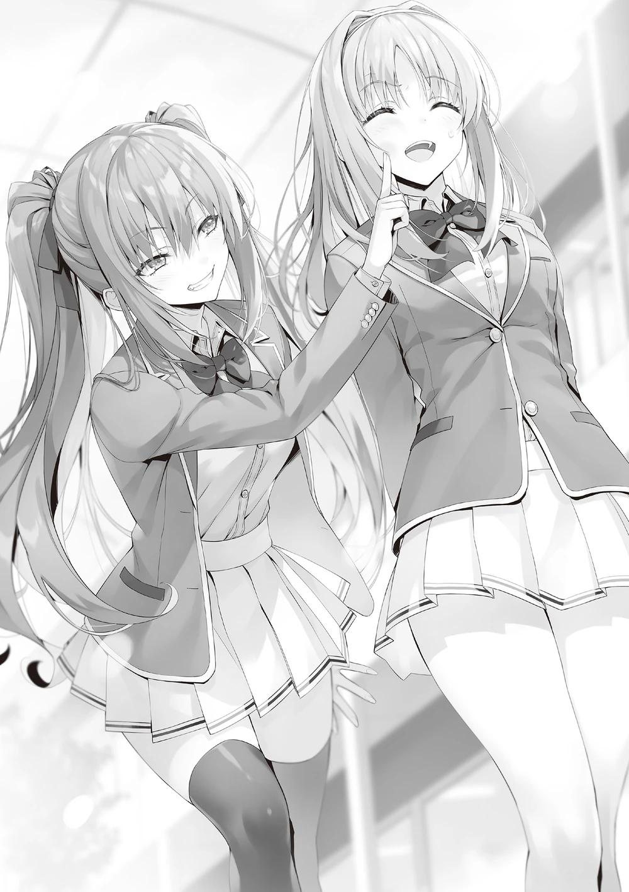
Estoy seguro de que simplemente encontró nuestra conversación interesante.
―Además, si me obligan a alejarme, podría revelar algunos secretos desagradables.
Haciendo amenazas, aunque fueran vacías, no podemos echarla por la fuerza.
―¿Cambiamos el lugar como pidió Kushida-san?
Horikita intentó rodearnos con un gran número de personas, pero eso nos permitió enfrentarnos a las despiadadas palabras y acciones de Amasawa y sólo empeoró la situación.
Decidió cambiar el lugar de la reunión debido a la amenaza de Amasawa.
PARTE 1
Horikita llevó a Kushida escaleras arriba hasta el ala especial, que seguramente estaba vacía.
―Por ahora esta zona debería seguir tranquila.
―De momento, esta zona no debería llamar la atención ―dijo, buscando la aprobación de Kushida.
―Bueno, ya sabes.
Kushida suspiró, probablemente sin ganas de secundarla.
―Es un lugar seguro. Si alguien se acerca, lo sabrás enseguida, ¿verdad?
―Realmente me sigues a todas partes, Amasawa-san.
―Tengo curiosidad por saber si te unirás al consejo estudiantil o no.
Seguro que no se irá hasta que sepa cómo terminó.
―Horikita es molesta, pero tú eres tres veces más molesta.
Kushida, que ahora estaba fuera del ojo público y ya no necesitaba mantenerse reservada, se mostró insoportable. Sin previo aviso, empezó a mostrar su verdadera cara.
Era toda una hazaña que la llamaran tres veces más molesta que Horikita, que era la más consciente de cuánto la odiaba Kushida.
Kushida, sin dudarlo, dirigió sus fríos ojos hacia Amasawa. Mientras tanto, Amasawa sonrió como nunca en todo el día.
―Me encanta ver esa expresión en tu cara~
En lugar de mostrarse tímida, Amasawa aplaudió con alegría, como si por fin hubiera llegado el momento de divertirse.
―Me alegro por ti~ Ahora que tienes más gente a la que exponer tu verdadero yo, como Ayanokouji-senpai y Horikita-senpai, ¡ya no me tienes miedo!
―No sé si intentas meterte con mi estado mental o qué, pero ¿por qué no dejas de perder el tiempo?
―No voy a parar. Si quieres, puedo volver a causarte problemas.
Amasawa tomó la decisión de quedarse en la escuela. Me pregunto si encontró placer en burlarse de Kushida.
¿Realmente buscaba a Kushida cuando visitaba a los estudiantes de segundo año?
―¿Eres de las que están convencidas de que nunca te expulsarán de la escuela?
―¿Qué~? ¿Quién podría expulsarme? Me gustaría ver si hay alguien.
―¡Basta ya! Amasawa-san, tus burlas son demasiado ―dijo Horikita.
Es cierto que Amasawa estaba siendo inusualmente odiosa hoy, provocando la hostilidad de Kushida.
Yo no quería
involucrarme en la selección de miembros del consejo estudiantil durante mucho más tiempo.
―Si continúas, Horikita tendrá problemas. Por favor, deja de hacer esto.
―Si tú lo dices~, Ayanokouji-senpai. Seré una buena chica ―dijo, levantando las manos para indicar que realmente no se burlará más de Kushida.
―Kushida-san, olvidémonos de ella por un momento... ¿Reconsiderarás unirte al consejo estudiantil?
―No.
―¿Ni aunque insista?
―Es que no quiero. ¿Puedo irme ya?
Viendo que Kushida intentaba salir de esta situación, decidí moverme un poco.
―Creo que deberíamos darle a Kushida un incentivo más directo, ¿no crees?
―...¿Un incentivo directo?
―Es cierto que Kushida se beneficiará de unirse al consejo estudiantil.
Pero al mismo tiempo, tú también te beneficiarás. Es inevitable que la persona que es invitada a unirse al consejo estudiantil pueda estar un poco insatisfecha con ello.
―Bueno, ya sabes...
Kushida me miró y me fulminó con la mirada, pero con cierta brusquedad dejó que su mirada se desviara.
―Creo que es ingenuo pedir un favor gratis.
Kushida le lanzó esas palabras a Horikita como aprovechándose de mi orientación.
―Si te hago una oferta, ¿la considerarás? Obviamente, no voy a dejar la escuela. Así que no lo pidas como la última vez.
Puede que Kushida lo estuviera considerando, pero claro, las condiciones tenían limitaciones realistas. ¿Qué clase de oferta haría que Kushida accediera a unirse al consejo estudiantil?
―Si de verdad quieres mi ayuda, arrodíllate y pídemelo.
―...¿Arrodillarme?
―Sí. Si me muestras una actitud de 'por favor, Kushida-san', lo consideraré... No, ¡definitivamente me uniré al consejo estudiantil!
En lugar de dar a Horikita una respuesta evasiva, le aseguró que se uniría al consejo estudiantil.
Por supuesto, ésta era una afirmación hecha bajo el supuesto de que no había forma de que Horikita se arrodillara en primer lugar.
Sin embargo, Horikita no era tan orgullosa como Kushida.
Kushida nunca se arrodillaría en esta situación, ni siquiera por el bien de la clase.
―Sí, arrodillarme... Ésa es tu condición. Lo comprendo.
Murmuró Horikita y se sentó en el frío suelo del pasillo.
―¿Qué? Te estás tirando un farol, ¿verdad?
―Si hago esto, te unirás al consejo estudiantil. Me lo acabas de prometer,
¿verdad? Ayanokouji-kun y Amasawa-san son testigos. Es ahora o nunca si quieres retractarte...
Era como si realmente fuera a hacerlo para conseguir que Kushida se uniera.
Horikita emitía una sensación tan seria que Kushida, que se suponía que tenía la sartén por el mango, se quedó sin palabras.
―... Te estás tirando un farol, ¿verdad? Nunca harías eso por mí.
―No sé por qué piensas eso, pero no te odio tanto como crees. Si arrodillarme es beneficioso para la clase, entonces vale la pena.
Horikita respondió con seriedad, sus ojos agudos desde una posición baja.
Tras prometer que no interferiría, Amasawa observó en silencio la situación y pareció disfrutarla.
―¡No, no puedes hacer eso! No puedes.
La conclusión a la que llegó Kushida, a pesar de sus dudas, fue: "No lo harás".
―Entonces... ¿sólo arrollarme y pedirte que te unas al consejo estudiantil?
Diciendo esto, Horikita empezó a estirar lentamente las manos como si fuera a ponerlas en el suelo.
Pero antes de que pudiera tocarlo, el movimiento se detuvo.
Y después de unos segundos, no se movió más allá de ese punto.
―¿Qué pasa, Horikita-san? ―Kushida gritó alegremente. Pensó que Horikita había dejado de moverse porque no podía soportar más la humillación.
―¿Puedo ir un paso más allá? ¿Estás satisfecha con que me arrodille de una forma tan trivial?
―¿Eh?
―Trabajarías para mí sólo por hacer esto. Yo soy quien se beneficia de esto, no tú.
Si esto ocurriera, sería posible grabar a fuego en los ojos la imagen momentánea de Horikita postrándose.
Pero al mismo tiempo, Kushida pagaría el precio apoyando a Horikita, que dirigiría y administraría el consejo estudiantil por encima de ella. No era un intercambio barato.
―Sé que no te caigo bien. Entiendo que quieras que me ponga de rodillas.
Pero creo que la verdadera alegría y el placer vendrán cuando hagas que yo me sienta obligada a inclinarme ante ti, no cuando me obligues a hacerlo. ¿Me equivoco?
Esta era la táctica de Horikita.
Horikita definitivamente no quería inclinarse ante Kushida.
En otras palabras, la lectura de Kushida era correcta. Sin embargo, Horikita se estaba dando un aire exquisito y no parecía tener miedo de hacerlo aquí mismo.
―No lo entiendo. Si te parece bien arrodillarte, ¿por qué no lo haces rápidamente? Olvídate del placer o el disfrute, sólo inclínate y me uniré.
Evidentemente, Kushida no se dejó convencer fácilmente. Ella no se habría unido al consejo estudiantil sin una condición a cambio, así que era natural que enfatizara ese punto.
―Si hay alguna resistencia para que me arrodille, es porque seguro que te arrepentirás. Si me arrodillo ante ti aquí y ahora, te unirás al consejo estudiantil aunque no quieras. No quiero que te hagas miembro con tan poca motivación".
Si iba a unirse al consejo estudiantil, Horikita quisiera aprovechar al máximo las habilidades de Kushida Kikyo. Eso significaba que su incorporación no podría llevarse a cabo a menos que ella realmente quisiera unirse.
―Es difícil que me incline ante ti si mantienes las distancias conmigo en tu vida personal. Pero si te unes al consejo estudiantil, tendrás más tiempo para interactuar conmigo, y tendrás más oportunidades de demostrar tu capacidad.
Cuando eso ocurra, tendré la oportunidad de confiar en ti. Si eso ocurre, puede que tenga que inclinarme ante ti más de una o dos veces.
En lugar de que Kushida obligara a Horikita a doblegarse, podría crear una situación en la que ella misma se sintiera obligada a inclinarse ante Kushida.
Un comentario tan provocador como éste pareció escocer a Kushida más de lo que esperaba.
―Seguiré trabajando para ti, ¿verdad?
―Da la impresión de que crees que trabajarás a las órdenes del presidente del consejo estudiantil, pero te equivocas. No es el cargo lo que determina la verdadera posición de uno, sino las relaciones entre las personas.
Es sólo cuestión de construir una relación en la que el vicepresidente tenga más poder real e influencia que el presidente del consejo estudiantil.
Horikita continuó encajonando a Kushida desde una posición inferior.
―Un nuevo miembro se convierte de repente en vicepresidenta y tiene la capacidad de convertirme a mí, la presidenta del consejo estudiantil, en su juguete... Estoy segura de que es una gran imagen para satisfacer tu necesidad de aprobación.
Como ya habíamos diseccionado a Kushida, sabíamos lo que buscaba y lo que quería.
Desde ese punto de vista, estaba claro una vez más que Kushida era la persona adecuada para el consejo estudiantil.
―No me gusta.
―Está bien si no te gusta ahora. Es un asunto trivial.
Con una expresión sombría, Kushida se apartó de Horikita, que estaba dispuesta a arrodillarse en cualquier momento.
―Mi posición será más alta si me uno al consejo estudiantil. Eso no sería tan malo.
―Sí, es cierto. No es una idea divertida imponer condiciones.
―Odio dejarme convencer por zalamerías, pero ¿estás sugiriendo que podría utilizarte de la misma forma que tú me utilizarás a mí?
―Sí...
Horikita sonrió ligeramente e intentó retirar las manos extendidas, pero...
―Pero ya sabes, Horikita-san, ¡igual me gustaría ver cómo te arrodillas ante mí! ―replicó Kushida mientras se daba la vuelta con una sonrisa de oreja a oreja.
―...Eso no sería hacerlo yo por obligación, ¿verdad?
―No te preocupes. Eso lo cumpliré en otra ocasión. Ahora, arrodíllate.
El plan de Horikita iba a buen ritmo hasta ese momento, pero sus cálculos se torcieron en el último momento.
Kushida, ahora más decidida, le dio la vuelta a la situación, revelando más de su personalidad malvada.
―¿Qué vas a hacer? ¿Rechazar? Entonces no me uniré al consejo estudiantil.
Cuando Kushida vio que tenía las de ganar, procedió a impulsar el juego de inmediato.
Era una situación desventajosa para Horikita intentar que Kushida, que al principio estaba en conflicto con ella, entrara gratis en el consejo estudiantil.
Si evitaba someterse, Kushida podría desechar la oferta.
Puede que la partida estuviera perdida desde el principio.
―Ayanokouji-kun y Amasawa-san...
―¿Sí?
―Lo siento, pero ¿podrían disculparnos un momento?
Horikita, que estaba claramente de mal humor, nos pidió que nos fuéramos.
No quería que más de una persona viera esta humillante exhibición.
Me llevé a Amasawa conmigo mientras abandonábamos la escena.
Horikita había conseguido su objetivo de que Kushida se uniera al consejo estudiantil sin coacciones.
Pero a un precio.
PARTE 2
―Eh~ Cómo me hubiera gustado verlo, Horikita-senpai arrodillándose ante Kushida-senpai.
―No vuelvas a mencionarlo. Fue un error fatal.
Sujetándose la cabeza, Horikita tembló de rabia al recordar lo ocurrido hace unos minutos.
―Kushida se aprovechó de ti, aunque tú te lo buscaste.
―Subestimé su necesidad de aprobación.
Amasawa y yo vimos la cara de felicidad de Kushida cuando se marchó.
―Me vi obligada a arrodillarme.
―...Aun así, al final, Kushida-san dijo que sí, y fue su decisión. Ella tiene la autodisciplina para decir que no si realmente no quisiera. Lo sabes, ¿verdad?
―Sin embargo, fue impresionante que pudiera anticiparse tanto.
Por fuera, sonreía a todo el mundo, pero por dentro, como dijo Horikita, las acciones de Kushida se basaban en sus propios intereses.
Aquella situación era una oportunidad perfecta para que Kushida mostrara su verdadero rostro, y no había necesidad de que se mostrara tímida. Kushida podría haber rechazado la oferta después de ver a Horikita ponerse de rodillas, pero al final decidió aceptarla sólo porque en realidad era beneficioso para ella unirse al consejo estudiantil.
―Sé que odiará trabajar para mí con toda su alma, pero eso no es lo importante. Unirse al consejo estudiantil definitivamente aumentará su poder de cohesión. También será un gran trampolín para que recupere su posición en la clase, teniendo en cuenta que antes estaba arrinconada y aislada.
―Pretendes utilizar a Kushida al máximo.
―Por supuesto. Tomé la decisión de conservarla. Tenemos que mostrar suficientes resultados para convencer a todos los de la clase. Hasta me hizo arrodillarme.
Parecía que el hecho de arrodillarse aún permanecía en su mente. Sin embargo, no podía evitarse, ya que fue un error creado por su propia estrategia.
Si Horikita no se hubiera arrodillado en aquella situación, Kushida no se habría unido a ella.
―Deberías haber encontrado otra forma de luchar en lugar de arrodillarte.
―No vuelvas a mencionarlo. La aprovecharé al máximo en el futuro...
El daño estaba hecho, pero era un comienzo. No todo el mundo podía ser miembro del consejo estudiantil.
Haciendo que Kushida sirviera en el consejo estudiantil, podríamos hacerla sentir que era necesaria en la clase y evitar que se sintiera apartada. Ella también lo sabía.
Sin embargo, no le gustaba el hecho de que Horikita la estuviera llevando a una situación en la que acabaría bajo su administración. Sus sentimientos infantiles se interponían en su camino.
―Ahora tu clase dominará el consejo estudiantil durante dos años. Eso es una ventaja definitiva.
―Siempre y cuando el Presidente del Consejo Estudiantil Nagumo lo apruebe.
―Él mismo lo dijo. 'Eres libre de traer a cualquiera de tu propia clase.'
―Sí, pero eso incluía sin duda el matiz de: 'Si tienes las agallas para hacerlo, hazlo'.
―Entonces tendrás que demostrarle que tienes agallas.
―Haces que parezca tan fácil.
Puede que Horikita tuviera una expresión recelosa, pero lo que dijo y lo que hizo fue exactamente lo contrario.
No dudó en traer a Kushida a sus filas para acercarse lo más posible a la Clase A, e incluso se arrodilló para hacerlo. ¿Qué otra cosa se podría llamar a esto sino agallas?
―Creo que fue la mejor manera de reclutar a Kushida.
―Yo también creo que fue la mejor manera de reclutarla.
Amasawa mostró interés exagerando y asintiendo detrás de nosotros.
―...¿Todavía vas a seguirme? El espectáculo de bichos raros ya terminó.
―Me interesa ver a quién reclutarás de los de primer año, Horikita-senpai.
―Tú y yo no somos el tipo de personas que charlarían casualmente ¿o sí?
―¿Por qué no? Tuvimos algunos conflictos, pero sólo durante los exámenes especiales. Aparte de eso, ¿no deberían llevarse mejor los senpais y los kouhais?
Horikita enarcó ligeramente las cejas, pero cedió, quizá porque no podía obligarla a alejarse.
―¿Qué tal si ponemos a Amasawa en el consejo estudiantil? Sus calificaciones en la OAA también son perfectas.
―Amasawa-san no es adecuada para el consejo estudiantil aunque no tenga problemas en la OAA.
―¿Qué? Al menos podrías invitarme, ¿no? Podría estar abierta a ello.
―Paso.
Por lo visto, Amasawa no es parte del plan de Horikita para el consejo estudiantil.
De hecho, Amasawa no es adecuada para el consejo estudiantil, lo que requeriría tomar medidas serias.
―Ya que rechazas la idea, ¿tienes algún otro en mente?
―Hay varios candidatos, pero me pregunto si... él sigue en la escuela.
El hecho de que se mencionara la palabra "él" sugería que el estudiante de primer año en cuestión es un alumno varón.
Horikita miró alrededor del edificio de la escuela de primer año, pero no encontró a la persona que buscaba.
Miró desde la clase A hasta la clase D y luego suspiró.
―A lo mejor ya se fue.
Horikita se quejó un poco, diciendo que pasó demasiado tiempo hablando con Kushida y Amasawa.
―Pero no puedo rendirme enseguida ―nos dijo―. Preguntaré directamente a sus compañeros. Esperen aquí.
Con esas palabras, entró en la clase A de primer año.
Amasawa y yo nos miramos y esperamos a que volviera Horikita.
―Entonces, ¿era tu propósito hablar conmigo?
―¿Hmm? Oh, ¿estás preguntando por la razón por la que fui al edificio de segundo año? ¿Tienes curiosidad?
―Te quedas por aquí y no te vas. No puedo decir que no me importe.
―Para ser sincera, fui a ver cómo le iba a Kushida-senpai. Tuvimos un contacto un poco forzado en el festival, así que me preguntaba cómo iban las cosas. Y Takuya también me molestaba, así que...
―Sin embargo, parecía que te burlabas mucho de Kushida.
Amasawa sacó un poco la lengua y sonrió.
―Soy la única que puede burlarse de Kushida-senpai tan descaradamente.
Quería comprobar lo mentalmente fuerte que es.
―Ya veo. Pensé que sólo hacías declaraciones fuertes y agresivas, pero supongo que sólo estabas haciendo tus deberes.
―Creo que fue un error de cálculo por parte de Kushida que los estudiantes de la Habitación Blanca se involucraran, pero al final, le ayudó a salir de su caparazón. Supongo que todo salió bien.
Amasawa esbozó una bonita sonrisa.
―Tengo que ser al menos un poco útil.
―Tu razón para ver a Kushida tiene sentido, pero no responde a por qué la sigues a todas partes.
―Simple curiosidad. Ayanokouji-senpai está preocupado por Horikita-senpai. Como va a ser la presidenta del consejo estudiantil, pensé en observar sus encantos de cerca. Parece una persona seria, pero también interesante y un poco única. Realmente pensé que estaría bien unirme al consejo estudiantil por un tiempo.
―Entonces deberías haber sido más seria. Horikita sabe que eres una persona capaz, así que puede que no te haya rechazado.
―Está bien, está bien. No tiene sentido unirse al consejo estudiantil ahora.
¿No tiene sentido unirse ahora? Aunque ya se acercaba el final del segundo semestre, Amasawa seguía siendo de primer año. Con la partida de Yagami, todavía había tiempo suficiente para que sirviera como reemplazo en el consejo estudiantil.
De repente, recordé la conversación que tuve con Amasawa antes del viaje escolar.
―¿Qué vas a hacer? Todavía no has abandonado la idea, ¿verdad?
Los ojos de Amasawa se agudizaron cuando insinué algo de forma indirecta.
―Como era de esperar de ti, Ayanokouji-senpai. Te diste cuenta de mis sutiles palabras.
―Fui el único que dijo que no tenía intención de causar problemas ni de recibir un trato especial.
No era tan difícil relacionar las circunstancias de la expulsión de Yagami con el consejo estudiantil.
―No me diste la indirecta porque querías que dejara de hacerlo, ¿verdad?
Ese no es tu estilo.
―Tienes razón. Me preguntaba si merecía la pena venerarte.
―Depende de ti lo que quieras hacer. Eres libre de retractarte y dirigir tu venganza contra mí.
―Esto no es sólo yo siendo generosa, sino también algo nacido de un montón de emociones abrumadoras.
Horikita, que llevaba un rato hablando con los alumnos de primero, nos interrumpió con cara de satisfacción.
―Siento haberlos hecho esperar. Vámonos.
Horikita echó a andar, pero sus pasos eran un poco más rápidos de lo habitual.
―¿Con quién pensabas reunirte aquí?
―No creo que lo conozcas. Un estudiante llamado Ishigami-kun.
―¿Ishigami?
Estaba seguro de que era el Ishigami que imaginaba en mi mente. No había otros estudiantes de primer año con el mismo apellido.
―Horikita-senpai debe ser impresionante para fijarse en Ishigami-kun,
¿verdad?
Amasawa, que también era alumna de primer año y compañera de clase, estaba familiarizada con él y, naturalmente, lo reconoció, así que reaccionó de inmediato.
―¿Es un buen estudiante? ¿Es el líder de la clase o algo así?
Decidí fingir ignorancia y pregunté a Horikita y Amasawa por Ishigami.
―Es diferente a un líder. Podría ser más bien el estratega de la clase A.
A diferencia de la mayoría de los otros estudiantes, la actitud de Amasawa no me hace sentir incómodo.
No me estaba aclarando si sabía o no del conocimiento previo de Ishigami sobre mi identidad. Como ahora no tenía nada que ocultar, es posible que no supiera nada, pero era peligroso suponerlo.
―¿Cuál es tu conexión con él, Horikita?
No esperaba que Horikita mencionara el nombre de Ishigami, así que se lo pregunté.
―Lo conozco desde hace poco... Es académicamente sólido en lo que respecta a la OAA, y sus compañeros parecen confiar mucho en él. Creo que es uno de los mejores. Estaba en clase hace unos minutos, y creo que ahora podré alcanzarlo.
Por eso caminaba tan deprisa. Por un momento me pregunté si sería buena idea seguir a Horikita hasta Ishigami, pero no tenía sentido preocuparse demasiado.
No tenemos ninguna conexión extraña entre nosotros, pero es posible que alguno intente establecer un contacto inesperado o que nos asignen al mismo grupo por casualidad, por ejemplo, en algún examen especial.
Intentar evitarlo por la fuerza sería un acto contra el orden natural de las cosas.
Al llegar al pasillo que conducía a la entrada, nos fijamos en un pequeño grupo de chicos que charlaban en un pequeño círculo.
Horikita se fijó inmediatamente entre ellos a Ishigami y se acercó a él.
―Ishigami-kun.
Ishigami se giró al oír su nombre y nos miró a Horikita y a mí en silencio.
Aunque se trataba de un primer encuentro inesperado, Ishigami no mostró ningún signo de agitación.
Al contrario, era como si fuera ajeno a mi presencia.
Puede que esto no resulte sorprendente si se comprende que, en una escuela pequeña, es inevitable que nos encontremos en algún momento. Los demás alumnos de primero, aunque conocían a Amasawa, parecían un poco nerviosos por mi presencia y la de Horikita, siendo ambos alumnos de segundo.
―¿Puedo ayudarles?
―Vengo a pedirte un favor. Me gustaría pedirte que te unieras al consejo estudiantil si no te importa.
―...
Ishigami, silenciado por la petición, se volteó hacia sus amigos.
―Lo siento, adelántense. Los alcanzaré pronto.
Me pregunto si tenían planes para salir juntos después de esto.
―Lo siento. No quería robarte demasiado tiempo.
―Está bien, Horikita-senpai. Pero, ¿por qué yo?
Ishigami usaba honoríficos para los alumnos de cursos superiores. No parecía usar el mismo tipo de descaro que usaba cuando habló conmigo.
―Me relaciono muy poco con los alumnos de primer año. Tú eres uno de los pocos con los que he hablado. Además, estás en la clase A y destacas académicamente en la OAA. No debería sorprenderte que te haya pedido que te unas.
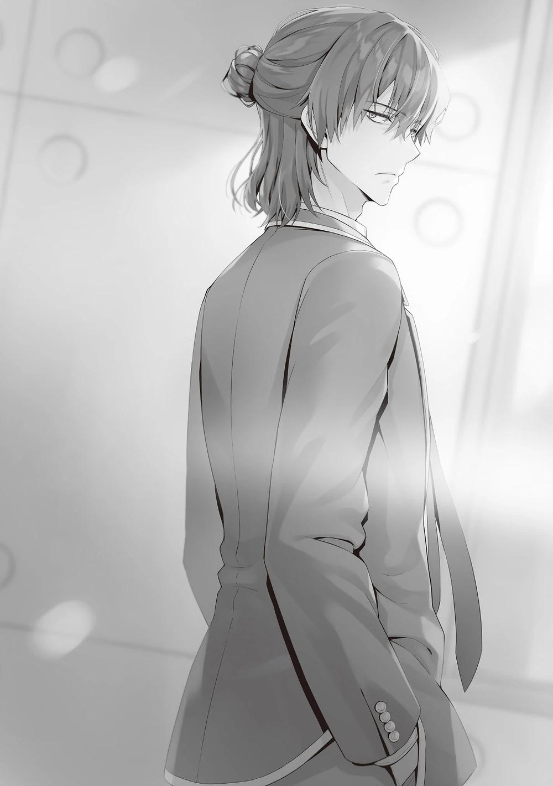
Como dijo Horikita, sin duda es una persona susceptible de ser abordada por el consejo estudiantil por sus talentos.
―Lo siento, pero no estoy interesado en unirme.
Sin siquiera pensar en la oferta, Ishigami la rechazó sin vacilar.
―¿Te molestaría si te pidiera que al menos lo consideraras?
―No tengo ningún interés en las actividades del club ni en unirme al consejo estudiantil. Por favor, busca en otra parte ―Diciendo esto, Ishigami nos dio la espalda y se alejó.
Por un momento, Horikita pareció considerar la posibilidad de detenerlo, pero se dio cuenta de que no podía obligarlo a unirse al consejo estudiantil, ya que por lo visto no tenía ningún interés en el tema.
―No vas a hacer ningún progreso con él.
―Pensé que era un buen candidato, pero supongo que tendré que renunciar a él.
―Hay muchos otros buenos alumnos en la clase A.
―Me gustaría pensar que sí, pero no sé... Creo que los estudiantes motivados habrían solicitado unirse al consejo estudiantil en una etapa temprana, como Ichinose-san el año pasado y Yagami-kun este año, ¿verdad?
Básicamente, los estudiantes no quieren participar en el consejo estudiantil si no han tomado ninguna acción a estas alturas del año.
Sin duda. Él habría tomado acción durante la presidencia de Nagumo si fuera algo que le interesara.
―Entonces... ¿qué pasará después?
―Lo único que queda por hacer es sacar a alguien de la Clase 1-D.
―¿Clase D? Esa es una elección inesperada.
Lo habitual en el consejo estudiantil es elegir alumnos de las clases A y B, que tienen un alto porcentaje de alumnos capaces y serios. ¿Pero se atrevió a elegir de la clase D?
―Para la clase D, la incorporación de un miembro del consejo estudiantil será una inyección de moral. Sin duda, los alumnos de esa clase lo verán como algo positivo. Sólo es cuestión de que conozcan sus ventajas.
―¿Por qué no invitas a alguien como Housen-kun? Podría ser interesante.
Amasawa recomendó hacer una oferta a una persona estrafalaria, como si quisiera provocar el caos dentro del consejo estudiantil.
―No creo que él quiera hacerlo. Y aunque quisiera, ni siquiera lo consideraría con su actual historial de comportamiento. Tendría que crearse un buen historial en los próximos seis meses y un año.
Rechazó la propuesta juguetona, afirmando que no cumplía los requisitos mínimos.
De vuelta a la clase 1-D, Horikita miró a los alumnos que quedaban en el aula.
Uno de ellos reparó inmediatamente en nosotros, se levantó de su silla y se acercó.
―Bienvenidos, Horikita-senpai, Ayanokouji-senpai y Amasawa-san.
Era Nanase Tsubasa, que parecía fuera de lugar en la clase D de primer año, donde había muchos estudiantes de mal comportamiento.
―¡Yoo-hoo!
―Es un poco inesperado ver a Amasawa-san con ustedes dos.
Nanase miró a un lado y a otro entre Amasawa y yo.
―Según parece, la mayoría de los estudiantes ya se fueron.
―Hay menos compañeros míos aquí de lo habitual. Normalmente, se quedan más.
―¿Es así?
―Sí. Uno de nuestros compañeros cumple años y vamos a celebrarlo en el centro comercial Keyaki. Me invitaron a la fiesta de después... ¿Por qué están aquí en el edificio de primer año?
Era una pregunta sensata.
―Takuya Yagami-kun abandonó la escuela y hay una vacante en el consejo estudiantil. Estoy aquí para encontrar a alguien que ocupe esa vacante.
―¿Estás reclutando miembros para el consejo estudiantil?
―Voy a ser la próxima presidenta del consejo estudiantil, y esta es mi primera tarea.
Nanase asintió con la cabeza en señal de admiración y miró alrededor de la Clase D.
―¿Puede un estudiante de la clase D siquiera solicitar un puesto en el consejo?
―¡Claro que puede! De entrada, yo procedo de la Clase D, así que no hay razón para que me niegue.
―En ese caso... ¡¿Podrías por favor dejarme ayudarte?!
―...¿Te gustaría unirte, Nanase-san?
―Sí. Si no tienes ningún problema con alguien como yo, me encantaría ayudar al consejo estudiantil.
―Aunque no sé qué tipo de decisión tomará el presidente del consejo estudiantil Nagumo.
Respondió diciendo que ella no tendría la última palabra.
Puede que Horikita no recuerde los detalles de la OAA de Nanase, así que intervine.
―Está bien, ¿no? Nanase tiene una buena calificación académica en la OAA y es seria, así que creo que es adecuada para el consejo estudiantil.
―Sí, parece adecuada para el puesto.
También era una solución fácil dado que había sido rechazada por Ishigami.
―De acuerdo, Nanase. ¿Podemos contar contigo para ayudar con el consejo estudiantil?
―¡Por supuesto!
Tenía mis dudas sobre el verdadero motivo de Nanase, pero eso es una cosa, y esto es otra.
Si ella puede contribuir al consejo estudiantil, no hay razón para rechazarla.
―Así que no tienes ningún problema con que Nanase-chan se una al consejo estudiantil, ¿verdad?
―No. A diferencia de ti.
―¿Te estás burlando de mí?
―Tengo en alta estima tus habilidades. Es sólo que tu actitud franca, tu forma de pensar y tu personalidad no son adecuadas para el consejo estudiantil.
Horikita asintió con la cabeza, satisfecha por esta incorporación al grupo.
―Umm, ¿qué debo hacer a partir de mañana?
―No creo que haya ningún problema, pero primero, mañana hablaré con el presidente del consejo estudiantil, Nagumo. Me pondré en contacto contigo cuando lo haya hecho y te acepten en el consejo estudiantil.
Horikita intercambió información de contacto con Nanase. Después, Nanase sonrió feliz.
―¡Yo también me alegro de tener más contactos!
―Hasta mañana.
―¡Sí, estoy deseando saber de ti!
Nanase nos despidió con una sonrisa y salimos de la clase D.
―Tenemos a los miembros reunidos. Todo lo que tenemos que hacer ahora es esperar una respuesta del Presidente del Consejo Estudiantil Nagumo.
― Bien, entonces, creo que yo también me iré a casa. ¡Hasta luego, ustedes dos!
Amasawa entró y se fue como una tormenta, y los dos la vimos marcharse.
―Como siempre, no consigo entender qué tiene en la cabeza.
―Sí.
―Gracias por tu duro trabajo.
―Bueno, estuve contigo, pero al final no hice nada. Me lo pusiste fácil.
―Eso no es verdad. Al menos en el caso de Kushida-san, tus palabras parecieron influir en ella. Me alegra informarte de que hiciste tu trabajo.
Supuse que se refería al momento en que convencí a Kushida para que aceptara el trato.
―Estoy seguro de que no recibiré ningún cumplido de Nagumo, pero me alegra tanto oír esto que casi me hace llorar.
―¿Qué significa eso? Oh, por cierto, tengo una sesión de estudio en un café del centro comercial Keyaki después de esto. ¿Quieres venir a ver? Tu novia también estará allí.
―Un grupo de estudio. Bueno, me pasaré un rato.
―¿Eh?
Horikita se sorprendió por mi respuesta a su invitación.
―¿Qué pasa?
―No, me imaginaba que te negarías como siempre. ¿Tanto influye la presencia de Karuizawa-san?
No era el caso, pero no había forma de evitar que ella lo viera así.
―Supongo que sí. Me preocupa si está aprendiendo bien o no ―Respondí y decidí ir al café con Horikita.
PARTE 3
Llegamos a la reunión del grupo de estudio en el café después de clase.
―Siento haberlos hecho esperar.
Diciendo esto, Horikita se unió con naturalidad a sus compañeros de clase.
Me impresionó lo mucho que habían mejorado sus habilidades de socialización.
―¡Oh, Kiyotaka también está aquí!
Kei, que estaba mirando su cuaderno con una expresión de dificultad en la cara, se fijó en mí y sonrió.
―Lo siento, sólo vine a hacer una visita rápida.
―¿Eh?
Kei mostró una expresión descaradamente insatisfecha, pero no siguió quejándose. Eso se debió en gran parte a que ayer le dije que ella debía asistir activamente a las sesiones de estudio y que yo no la ayudaría con eso.
―¡Oh, lo siento, llego tarde!
No mucho después de llegar, Sudou apareció en el café con la voz ronca, cansado de correr.
―Debe ser duro llegar hasta aquí siendo miembro de un club.
―No es para tanto. Lo hago todo el tiempo.
La mirada de Sudou por un momento quedó cautivada por la apariencia de Horikita, pero pronto se sentó en un asiento vacío cercano.
A continuación, colocó su mochila sobre el regazo y colocó un conjunto de materiales de estudio.
A continuación, sacó un estuche rectangular y extrajo un par de gafas.
―¿Qué? ¿Sudou-kun utiliza gafas?
―Ah, hace tiempo. He estado pensando en ponérmelas cuando estudio.
Ah, bueno, la graduación no es tan alta.
En general, la gente con buena vista rara vez usa gafas. Sin embargo, la buena vista no dicta si debes o no usar gafas. A diferencia del baloncesto, donde hay que mirar sobre un amplio campo de visión, estudiar es una batalla cuerpo a cuerpo. Ajustar el enfoque al mirar un objeto puede cansar mucho la vista.
Muchos estudiantes, incluida Kei, todavía se estremecían al ver a Sudou tan estudioso. Probablemente no había asistido a muchas sesiones de estudio multitudinarias.
―¿Por qué me miras así?
―Te ves muy diferente sólo por llevar gafas. Y encima empezaste a estudiar más, ¿no?
Shinohara pellizcó el costado de su novio Ike, que estaba sentado a su lado, con admiración.
―¡Yo también lo intento!
―Ya lo sé. Lo sé, pero todavía hay una gran distancia entre Sudou-kun y nosotros dos.
―Eso es... Ya sabes, bueno, sí...
Ike intentó discutir con ella, pero sus punzantes palabras le hicieron asentir en silencio.
―Oh, lo siento, lo siento. No soy muy dada a hablar, ¿verdad? Pero,
¿tienes algún consejo sobre cómo seguir así durante mucho tiempo? Quiero estar a un nivel similar al tuyo, y me gustaría saber si tienes algún consejo que pueda ayudar. Debe ser difícil compaginar el baloncesto y los estudios al mismo tiempo, ¿verdad? ―Algunos de los alumnos asintieron con la cabeza a la pregunta de Shinohara.
Era cierto que para los alumnos con poca capacidad académica, estudiantes como Yousuke, Mii-chan y Horikita debían de parecer genios natos.
Puede que no confiaran en practicar los trucos y consejos que aprendían de alumnos de tan alto nivel.
Como eran listos desde el principio, parecía que eran capaces de superar cualquier obstáculo.
En comparación, Sudou empezó con la capacidad académica más baja de su clase.
Era natural que quisieran saber qué llevó al desarrollo de Sudou.
―Consejos...
Sudou se cruzó de brazos como si estuviera algo preocupado.
Al principio, Horikita fue el principal factor para los hábitos de estudio de Sudou.
Volviéndose más inteligente, quería convertirse en un hombre digno de Horikita.
Sin embargo, Sudou tendría dificultades para explicar eso en este escenario.
―Ah, supongo...
Durante un rato, Sudou permaneció en silencio, pero al cabo de un rato comenzó a formar palabras en su cabeza.
Comenzó a hablar, aunque todavía se sentía incómodo.
―Por extraño que parezca, empecé a disfrutar estudiando. Luego, el baloncesto se volvió más interesante... ¿algo así?
Empezó a contarles por qué pudo hacer ambas cosas, y que estudiar tenía otras ventajas aparte de esa.
―Al principio, no me gustaba estudiar. Me daba sueño enseguida y no podía resolver los problemas con facilidad. Pero, cuanto más aprendes, más te das cuenta de lo útil que es estudiar para la escuela.
―Pero Ken, estudiar es inútil en el futuro, ¿no? Dependiendo de tu ocupación, no es útil lo más mínimo.
Ike le hizo a Sudou la pregunta que todos deben haber considerado al menos una vez.
―Yo también voy a ser jugador profesional de baloncesto, así que pensaba que estudiar era sólo una distracción. Pero, ¿y si no lo consigo? ¿Qué trabajo puedo hacer si ni siquiera puedo estudiar? Seguramente sólo podré hacer trabajos en los que contratan a cualquiera, ¿no?
No hace falta nombrar profesiones concretas, pero tus opciones serán más limitadas que las de una persona normal.
―Aunque no lo consigas como profesional, tendrás más opciones si estudias, ¿no? Puedes ir a una universidad y estudiar algo más especializado.
Bueno, todavía no tengo un plan concreto.
No tienes por qué quedarte con un solo sueño.
―Estudiar es una inversión en tu futuro. Eso es lo que yo pienso.
Aunque el camino de Sudou para convertirse en jugador profesional de baloncesto, que llevaba muchos años persiguiendo, se cerrara, si encuentra otro gran sueño al que aferrarse, no se quedará atrás en la vida.
Ésta fue la breve narración de Sudou. Su madurez mental había avanzado claramente gracias a su estudio continuo.
Mientras que los que le rodeaban podían haberse reído de esas palabras en el pasado, en su lugar escuchaban con seriedad cada una de ellas sin burlarse de él. Así era como se había añadido peso y verdad a sus palabras, y eso demostraba que había comenzado una nueva era. Sudou, sentado de nuevo con una mirada decidida, se apresuró a abrir su cuaderno.
―Ya está bien de palabrería, ¿no? Sigamos con nuestros estudios.
Sudou, que debería haber estado más cansado que nadie debido a su participación en las actividades más duras del club, avanzó sin mostrar ningún signo de esa fatiga. No es el tipo de persona a la que se le den bien los
discursos, pero por eso mismo sus palabras y su actitud estaban llenas de un sentido de la verdad que no podía ocultarse tras mentiras sin sentido. Eso calaba hondo en el corazón de la gente.
Estoy seguro de que los estudiantes con calificaciones más bajas, como Shinohara e Ike, también se sintieron fuertemente conmovidos aquí.
PARTE 4
Al día siguiente después de clase, cuando ya se habían decidido los nuevos miembros del consejo estudiantil y había comenzado la sesión de estudio para el examen especial, Horikita fue llamada inmediatamente por Nagumo y se dirigía a la oficina del consejo estudiantil. Pensé que nunca volvería a saber de él, pero...
―Me pidieron que te llevara conmigo.
Mostró un mensaje de Nagumo y me señaló la pantalla mientras venía a decírmelo.
―Me duele el estómago como ayer. Tendré que pasar.
―Entonces no se puede evitar. Pero si no puedes venir, te llamarán más tarde, ¿no?
―Reunámonos y acabemos con esto.
Era muy posible que después de un largo intervalo de tiempo, me volvieran a cargar con tareas más tediosas.
Inmediatamente se levantó, con la intención de ir a la oficina del consejo estudiantil, pero se detuvo.
―Kushida-san también viene con nosotros. Esperemos un poco.
Por lo que veo, va a presentar a los nuevos miembros al mismo tiempo.
Miré a mi alrededor buscando a Kushida pensando que estaba en la clase, pero ya se había ido.
―Quizá deberíamos adelantarnos y esperarla en la oficina.
Salí del aula con la exasperada Horikita.
―¿No quieres ir con ella?
―De todas formas, sé que pasaremos más tiempo juntas cuando el consejo estudiantil empiece su trabajo.
Bueno, esa era la razón por la que querrían pasar menos tiempo juntas en áreas que no tuvieran nada que ver, aunque sólo fuera por un segundo.
―Es molesto cuando los rencores se forman y duran sin motivo, ¿no?
―Si hubieras sido un poco más tolerante, quién sabe qué habría pasado.
―¿No habría sido peor? Es peligroso dejar que otra persona tome el control todo el tiempo.
Tenía razón en que había que controlar a Kushida hasta cierto punto.
Cuando llegué a la sala del consejo estudiantil, vi a Kushida y a Nanase de pie, una al lado de la otra, a cierta distancia.
Se conocieran o no, parecían estar pasándoselo bien gracias a su capacidad natural para socializar.
―Parece que se están divirtiendo.
―Sí que parecen estar divirtiéndose.
De alguna manera, mientras las observaba, no paraban de hablar.
Estaban de buen humor, se sonreían constantemente y, si las dejara solas, podrían seguir charlando eternamente.
―Creo que el consejo estudiantil puede funcionar bien sin ti, Horikita, ¿no te parece? Estoy seguro de que ambas serán bien recibidas por los estudiantes.
―Cállate. Vámonos ya.
Para evitar más parloteo inútil, Horikita se acercó rápidamente a ellas.
―Buenas tardes, Horikita-senpai.
Nanase inclinó la cabeza en un saludo cortés, y Kushida mostró una sonrisa innegable.
―Me sentí aliviada antes cuando me enteré de que Nanase-san también se unía al consejo estudiantil. Estaba muy nerviosa por saber quién más se uniría a nosotros.
Kushida se palmeó el pecho en señal de alivio mientras decía algo que no esperábamos oír.
Las tres integrantes del consejo estudiantil entraron primero en la sala.
Me sentí un poco incómodo siguiéndolas hasta aquí, pero como me invitaron, no tuve más remedio.
―Presidente del consejo estudiantil Nagumo, Kushida Kikyo de la clase 2-B y Nanase Tsubasa de la clase 1-D fueron seleccionadas como nuevos miembros del consejo estudiantil. Las trajimos con nosotros.
Tanto Nagumo como Kiriyama saludaron a Horikita, quien explicó la situación en nombre del consejo estudiantil.
―En serio, ¿elegiste a una de tus propias compañeras? Eres una mujer muy descarada, Suzune.
Nagumo se echó a reír.
―Las elegí desde un punto de vista imparcial. ¿Estás descontento con mi selección?
En lugar de admitir que quería la ventaja al elegir a una compañera de clase, mintió al respecto.
Era obvio por qué Horikita eligió a Kushida, pero en lugar de afrontarlo, Nagumo mostró una sonrisa de conformidad.
―No hay nada malo en tu elección. No tengo ninguna queja.
Mirando la nueva composición del consejo estudiantil, la situación se veía poco familiar con la ausencia de Nagumo, Kiriyama e Ichinose, así como con la partida de Yagami.
―Creo que es la primera vez que se invierte la proporción de sexos en el consejo estudiantil.
Kiriyama, el vicepresidente del consejo estudiantil, también notó algo cuando miró la lista de miembros.
―No hay ningún problema. En los tiempos que corren, hombres y mujeres son iguales. Es sólo que los mejores y más brillantes de la próxima generación son desproporcionadamente mujeres. ¿No es así, Ayanokouji?
―En realidad no tengo nada que decir.
El aumento de chicas no era algo malo. Sin embargo, si la proporción ideal entre chicas y chicos es de 1:1, entonces el resultado del cambio de proporción de este año podría decirse que es un reflejo de las deficiencias de los chicos.
―Sirve como presidenta del consejo estudiantil de manera justa.
―Sí, Presidente.
―Bueno, supongo que ahora estoy relevado de mis deberes como presidente del consejo estudiantil.
Palmeó la silla del presidente como si se resistiera a marcharse, y se levantó del asiento.
―Fue un tiempo corto y largo a la vez. Es una sensación indescriptible.
―¿Te arrepientes de algo?
Viendo la expresión desolada de Nagumo, Horikita preguntó.
―Quería crear un entorno en el que los alumnos con talento pudieran graduarse como alumnos de clase A, traspasando los límites de clase. Pero no pude lograr el ideal que imaginé.
Cuando Nagumo se convirtió en presidente del alumnado, insistió mucho en este aspecto.
Como resultado, los actuales estudiantes de tercer año crearon una situación similar a aquella, pero se debió más a las normas que creó Nagumo que a los resultados que obtuvo como presidente del consejo estudiantil.
―Aquí el consejo estudiantil tiene más autoridad que en una preparatoria normal. Pero aun así, era imposible revocar las decisiones de la escuela de forma alguna. Pensé que podría hacer algo más al respecto.
―No obstante, no cabe duda de que hubo cierta influencia por tu parte.
Antes, en la PEA no existían reglas como los boletos de transferencia de clase o los puntos de protección.
―Supongo.
Si esos cambios producirían o no buenos resultados se descubriría en las generaciones venideras.
Horikita Manabu fue presidente del consejo estudiantil, manteniendo las tradiciones de la Preparatoria de Educación Avanzada.
Nagumo Miyabi creó la OAA y aportó un nuevo estilo de transformación al poner más énfasis en los méritos.
¿Qué clase de presidenta del consejo estudiantil será Horikita Suzune, su sucesora, en su primer año como presidenta?
El objetivo más obvio y difícil era...
Debe ser graduarse en la clase A después de empezar en la clase D.
Si logra eso, definitivamente dejará su nombre en los libros de historia como presidenta del consejo estudiantil.
―Tenemos algo de papeleo que hacer ahora. Ayanokouji, por favor vete.
Todos los demás pueden quedarse.
Recibí el aviso de Kiriyama y simultáneamente me dijeron que estaba estorbando.
―Bien entonces, me excusaré.
―Nos vemos, Ayanokouji. Nuestra batalla todavía no ha terminado.
Creo que me llamó aquí sólo para recordarme eso.
―Entiendo.
Haciendo una ligera reverencia, salí de la oficina del consejo estudiantil.
Dejé a Horikita y a los demás en la sala del consejo estudiantil y saqué mi celular.
Vibró varias veces en mi bolsillo, acababa de recibir algunos mensajes.
Pensé que era de mi novia, Kei, pero no.
Era una invitación de alguien inesperado para vernos durante las vacaciones.
Decía que le gustaría encontrarse y hablar conmigo el sábado o el domingo, si tengo tiempo.
Como tenía una cita con Kei el domingo, respondí que el sábado estaría bien.
Cuando llegué a la puerta principal, recibí un mensaje en el que me ofrecían una hora y un lugar concretos para reunirnos: el sábado a las 14:00 en el centro comercial Keyaki.
Respondí al mensaje diciendo que la hora me venía bien y que no habría ningún problema.
Aunque no mencionó nada sobre el contenido de la conversación, no fue difícil adivinar el sentido de la misma teniendo en cuenta quién era el que pedía el encuentro.
Al salir del edificio, me crucé con una estudiante.
―¿Te volvieron a llamar de la oficina del consejo estudiantil?
―Kiryuuin-senpai, veo que tienes asuntos en la oficina del consejo estudiantil de nuevo hoy. ¿Es por lo que pasó el otro día?
―Así es. Después de eso, la conversación terminó yendo por un camino paralelo y aún está sin resolver.
―Eso es problemático.
Por lo visto en aquel momento, Nagumo seguro que acabó ni negando ni confirmando nada.
―Estoy pensando en tomar un enfoque más agresivo hoy.
―Están a mitad de nombrar a Horikita nueva presidenta del consejo estudiantil y de registrar a los nuevos miembros del mismo.
Aunque puede que todavía se obligue a entrar, le transmití la información por si acaso.
Tal vez tuvo un efecto inesperado, Kiryuuin se detuvo y comenzó a reflexionar.
―Entonces, discúlpame.
Mi intuición me decía que, de todos modos, debía marcharme rápidamente, pero ya era demasiado tarde.
―¿Me concedes un momento de tu tiempo, Ayanokouji?
―...¿Se trata del caso sin resolver?
―Si vuelvo a presionar a Nagumo, no lo contará fácilmente.
―¿Por qué no adoptas el enfoque de la mano dura?
―No podemos traumatizar a la nueva presidenta del consejo estudiantil o a los recién llegados, ¿verdad?
No era asunto mío, pero si estaba dispuesta a usar la violencia, podía esperar a que Horikita y los demás se fueran.
―Simplemente pensaste que usarme podría ser una mejor solución que intentar abrirte paso a la fuerza.
―Eres realmente ingenioso.
Me elogió con facilidad, pero eso era algo que cualquiera habría pensado.
―Asumo que te irás a casa desde aquí, ¿verdad? ¿Podrías acompañarme un rato?
―Planeo tener una cita con mi novia en casa.
―Déjala esperar. Es su deber como novia esperar pacientemente a que su hombre vuelva a casa.
Kiryuuin, que nunca se veía que esperara pacientemente, no era muy convincente.
―¿Podemos hacerlo mientras caminamos?
―Hmm. Bueno, eso también estará bien.
Kiryuuin, que se dio la vuelta, empezó a caminar a mi lado.
―¿Tuviste la oportunidad de discutir con Yamanaka-senpai otra vez?
―Nagumo y Kiriyama me lo impidieron firmemente. No creas que puedes esperar mejores resultados si dices que Nagumo es el principal culpable.
―Es una historia curiosa. ¿Cómo pueden impedirte contactar con alguien sospechoso de ser el principal culpable?
Tanto si fue Nagumo quien dio la orden como si no, ya que ella afirmaba que fue Nagumo, Kiryuuin juzgó que la posibilidad de que salieran a la luz otros nombres era baja, aunque ella lo amenazara.
―Es cierto, pero yo opino lo mismo. Cuando amenazas verbalmente a Yamanaka, no puedes esperar que salga el nombre de otra persona. Cuando la interrogaste por primera vez, ya la amenazaste al máximo, excluyendo la violencia y la tortura.
En otras palabras, aquello fue el resultado de obligarla a contarle todo lo que pudo.
―Si lo tomamos en orden, ¿no debería ser el Presidente del Consejo Estudiantil Nagumo?
―Por supuesto que tengo mis dudas. Por eso intento entrar ahí. Pero sin pruebas, no podemos acorralarlo más, ¿verdad?
Y después de pensarlo, pensó en amenazar seriamente a Nagumo.
―Todavía existe la posibilidad de que Nagumo no sea el culpable. ¿Sabes cuál es esa posibilidad?
―Existe la posibilidad de que Yamanaka te haya guardado rencor sin que lo supieras. No conozco los detalles de la situación de los estudiantes de tercer año. Pero parece que hay gente a la que no le gustas.
―Sí que sabes decir cosas que te afectan.
Ella asintió con la cabeza sin negarlo, riéndose en lugar de enfadarse.
―Nagumo o Yamanaka. ¿O hay un tercero completamente distinto acechando en segundo plano?
―¿Qué tal si lo dejamos así? Si los culpables aprendieron la lección esta vez, quizá se escabullan y finjan que nunca ocurrió antes de que se revele su verdadera identidad.
―No. Mi orgullo no me permitirá contemplar su intento de incriminarme.
No iba a parar hasta atrapar al culpable.
―Voy a destacar. Por eso esperaba que pudieras hacer la investigación por mí.
―No siento que tenga ninguna obligación de ayudar. Y yo mismo tengo muy poca interacción con los estudiantes de tercer año, excepto contigo y los miembros del consejo estudiantil como Nagumo-senpai.
Yo no era una persona adecuada para desempeñar el papel de detective y recopilar información.
―Por eso. Puedes tener una perspectiva neutral, ¿no?
―Tiene sentido si pides a alguien con ciertas habilidades comunicativas, pero...
―Desde luego, no puedo esperar que seas bueno en esa parte. Sin embargo, tus otras habilidades son perfectas. Especialmente en términos de sentido de la pelea, puedo decir que no tienes rival. No hay nadie más que me haya convencido de que sería completamente derrotada en una pelea sin mi enfrentamiento directo con él.
Puede que fuera un cumplido, pero no me hizo ninguna gracia.
―Hay gente agresiva en el tercer año. Tienes que ser fuerte.
―No quiero tener problemas con los de tercer año antes de ganar o perder el caso.
―Pues no digas eso. Coopera conmigo. No tengo a nadie a quien pueda llamar amigo. No puedo actuar como detective.
Simpatizaba con que le tendieran una trampa a Kiryuuin-senpai, pero pensé que era mejor que me negara.
―Creo que me debes una por el incidente en la isla deshabitada. Por supuesto, lo habrías manejado bien sin que yo apareciera, pero puede que tenga que llevarlo al consejo estudiantil para cuestionar los méritos de ello.
Bloqueó mi vía de escape con sus tácticas agresivas, diciendo que no me permitiría negarme.
―Si vas a amenazarme, hubiera sido más fácil y rápido si me hubieras amenazado desde el principio.
―No quería equivocarme. Evité este método porque quiero tener siempre una relación amistosa contigo.
Kiryuuin me miró con los brazos cruzados, sin parecer ofenderse.
―...Entiendo. Investigaré, ¿te parece bien?
―Sabía que dirías eso.
Kiryuuin-senpai, con cara de satisfacción, asintió feliz.
Supongo que no puedes simplemente tomar atajos y hacer lo que quieras.
Kiryuuin es una persona muy perspicaz, y dependiendo de lo bien que lo haga, puede que ella se involucre.
CÓMO PASAR EL TIEMPO CON LOS COMPAÑEROS DE
ICHINOSE
PRINCIPIOS DE DICIEMBRE. Eran las dos de la tarde de un sábado, el primer día del fin de semana.
Recibí una llamada de Kanzaki dos días antes y fui al centro comercial como prometí. No teníamos en mente un lugar de encuentro concreto, pero en cuanto entré en el centro comercial, pude encontrar a Kanzaki y a su grupo sin demora.
Kanzaki, que vigilaba la entrada del centro comercial, se fijó inmediatamente en mí y se acercó con la mano ligeramente levantada.
―Perdona por llamarte en tu día libre.
―Suelo tomármelo con calma en mis días libres. Agradezco la invitación.
Le dije en voz baja que no hacía falta que se sintiera mal.
Himeno, Watanabe y Amikura estaban con Kanzaki.
―Me dijiste que sólo era Himeno, pero hay otros.
―Lo siento, hay algunas razones para ello.
Kanzaki trató de explicar la diferencia en los detalles de la comunicación anterior, pero Watanabe y los otros hablaron primero.
―Hola Ayanokouji, hoy vuelve a hacer frío.
―Hola, Ayanokouji-kun.
Watanabe y Amikura se acercaron a mí con sonrisas de la misma manera que lo hicieron en el viaje escolar.
En respuesta, asentí con la cabeza.
Kanzaki ya me había explicado la presencia de Himeno, la única persona que vendría conmigo hoy.
Supuse que sería ese tipo de charla, pero la combinación de estos cuatro me sorprendió un poco, y no pude ver con claridad el propósito o la intención de esta reunión.
¿O es que estos dos iban a ser los primeros interlocutores de Kanzaki y Himeno?
Sin embargo, ¿cómo podía ocurrir semejante coincidencia con estos miembros que casualmente estuvieron juntos en un viaje escolar?
―No me extraña que parezcas desconcertado, Ayanokouji-kun. Yo tampoco esperaba encontrarme con estos dos.
Himeno también parecía algo inquieta y asintió con la cabeza, aunque levemente.
―¿Qué quieres decir?
Cada vez tenía más dudas, pero Kanzaki se mostraba más preocupado por ser visto.
Suponía que la tienda estaría menos concurrida durante un tiempo, pero los estudiantes entraban uno tras otro.
―Ya empezaron las rebajas de Navidad.
Amikura señaló una tienda mientras observaba el bullicioso centro comercial.
En efecto, la tienda ya estaba decorada, y las palabras "Rebajas de Navidad"
colgaban de las estanterías de diversos productos.
―De momento, me gustaría trasladarme a un lugar menos llamativo si es posible. No quiero que nadie que no tenga nada que ver con nuestro grupo sepa de su existencia... especialmente los de las clases de Sakayanagi y Ryuuen.
No teníamos motivos para negarnos, ya que entendíamos la situación sin pedir detalles.
Si sólo fueran ellos tres, no habría problema, pero conmigo en el grupo, no era posible evitar la impresión de una reunión misteriosa.
Además, prefiero discutir las cosas en un lugar tranquilo y silencioso que en este bullicio de gente.
―Entonces, ¿por qué no vamos a un karaoke normal?
Amikura sugirió el karaoke, que solía utilizarse para reuniones de estudio y estrategia. Sin embargo, ese era también uno de los pocos lugares del recinto donde se podía celebrar una reunión secreta.
El karaoke estaba a sólo tres minutos a pie.
―Pongámonos en marcha.
Kanzaki tomó la iniciativa y empezó a caminar conmigo siguiéndolo.
―¿Esto era una discusión seria? Lo siento, no pensé que lo fuera.
Amikura, que venía a mi lado, se disculpó en un susurro.
Por su forma de hablar, se diría que decidió unirse súbitamente a la reunión.
Watanabe, que estaba junto a Amikura, explicó lo sucedido.
―Daba la impresión de que Kanzaki iba a reunirse con Ayanokouji, así que le preguntamos si podíamos acompañarlo.
―Sí. Originalmente planeábamos ir de compras a petición de Watanabe-kun.
Cuando Amikura continuó la explicación, Watanabe lució un poco avergonzado y feliz, pero también algo triste y miró hacia otro lado.
―¿Seguro que no quieres ir de compras?
Ambos tenían las manos vacías y por lo visto no compraron nada.
―No es para tanto. Podemos ir a comprar algo más tarde.
Me di la vuelta cuando Kanzaki, que caminaba delante de mí, oyó lo que estábamos hablando y me lo explicó de nuevo.
―Originalmente, pensé que sólo Himeno y yo necesitábamos reunirnos con Ayanokouji. Sin embargo, cambié de opinión cuando me dijeron que los trataste bien a los dos durante el viaje escolar.
¿Los trataron bien? Esa es mi línea.
Watanabe y Amikura me ayudaron mucho en varios aspectos durante el viaje escolar. Estoy agradecido, pero no hice nada para merecer los elogios.
―¿Así que decidiste que tenías que invitarlos a ellos también?
Cuando le pregunté esto a Kanzaki, asintió con la cabeza con una mirada misteriosa en su rostro.
―Entonces, ¿de qué se trata? ¿De qué vamos a hablar?
―Te contaré los detalles más tarde.
Pude vislumbrar la inquietud de Kanzaki por la velocidad a la que daba su primer paso hacia adelante.
PARTE 1
Después de la recepción en el local de karaoke, entré en nuestra habitación designada con los otros cuatro. Como invitado, me llevaron a la parte de atrás, donde Watanabe, Kanzaki y las chicas tomaron asiento. Todos pedimos bebidas, pero nada más.
―¿Deberíamos cantar una canción o algo...?
Watanabe agarró un micrófono que había sobre la mesa y, bromeando, señaló con la punta hacia Kanzaki como si estuviera realizando una entrevista. Kanzaki, que no era tan bueno como él a la hora de mantener un ambiente tan desenfadado, puso cara de fastidio y apartó ligeramente el micrófono con la mano.
―Lo siento, tendremos que hacerlo más tarde.
―...Cierto.
Watanabe se disculpó y se encogió de hombros, retirando el micrófono.
―En primer lugar... Le dije a Himeno de qué vamos a hablar hoy, pero ustedes dos aún no han sido informados. Ya se los pregunté antes de que llegara Ayanokouji, pero ¿pueden prometerme que todo lo que digamos aquí será estrictamente confidencial?
Por lo visto, Kanzaki les dijo de antemano que se trataba de una conversación confidencial antes de permitirles que nos acompañaran.
―Sí. Está bien.
Amikura y los demás parecían enorgullecerse de su hermetismo.
Sin embargo, Kanzaki desconfiaba de ellos.
―Lo siento, pero todavía tengo mis dudas.
Como para demostrar mi punto de vista, Kanzaki dejó al descubierto sus sinceros pensamientos.
―Eh, eh... ¿Qué debo hacer entonces?
Watanabe empezó a pensar que estaba bajo sospecha a pesar de haber prometido no decírselo a nadie. Sin embargo, Kanzaki tuvo razón en lo que hizo, como pronto llegaríamos a ver.
Si nos hubiéramos encontrado antes, Kanzaki podría haberse negado a decirle a Watanabe y Amikura, que intentaron seguirlo por curiosidad, que lo dejaran para otro momento.
Pero eso no ocurrió, y el hecho de que estuviera comprobando cuidadosamente la situación significaba que invitarlos podía ser una apuesta arriesgada.
Desconfiaba, pero quería confiar y fiarse de estas dos personas.
―¿No puedo firmar un contrato o algo así? No se lo diré a nadie.
―Ya veo. Un contrato firmado. No es mala idea. También se puede grabar con un celular.
Hacerles jurar delante de la cámara que no se lo dirán a nadie y castigarlos si incumplen el contrato.
Esa sería una forma de mantenerlos callados.
Sin vacilar, Kanzaki sacó su celular y lo colocó sobre la mesa a modo de demostración.
―¿Hablas en serio? No sé, eso podría incomodarme un poco.
Amikura mostró parte de su desagrado por la propuesta, sin creerse que la sugerencia viniera de un compañero de clase.
―Ya se los dije. Hoy tendremos una charla importante con Ayanokouji.
Creo que, si se filtra algo de lo que digamos aquí, las repercusiones serán inconmensurables.
―¿No es una exageración...?
Kanzaki no era el único que miraba a Watanabe durante este interrogatorio.
HImeno también lo miraba con la misma intensidad.
―¿Puedes prometer que no se lo dirás a nadie?
Kanzaki puso la mano sobre el teléfono y volvió a pedir confirmación, aceptando la reacción violenta a la que se enfrentaría por sus métodos.
Si no quieres asumir la responsabilidad, deberías irte ahora.
La determinación y el espíritu de Kanzaki calaron hondo en ambos.
―Te lo prometo. Nunca se lo diré a nadie.
―...Yo también. No está bien irse porque no puedo guardar un secreto. Si quieres, puedo hacer que mi celular lo grabe.
Si rompen su palabra y hablan, seguro que serán mal vistos, al menos por Kanzaki y Himeno.
Aunque no parecían ser amigos íntimos, Watanabe y sus compañeros tenían la responsabilidad de protegerse como personas.
Convencido, Kanzaki guardó su celular, apartó la vista de ellos dos y se volteó hacia mí.
―Una vez más, Watanabe y Amikura se quedarán aquí.
―No tengo nada que objetar. Se trata de un problema relacionado con la clase de Ichinose.
Si una entidad extraña se mezcla, es culpa de Kanzaki por cometer un error de juicio.
―Quiero preguntarte una cosa antes de entrar en el tema principal. La mayoría de la clase, incluidos Watanabe y los demás, se enteraron del rumor de que Ichinose va a dejar el consejo estudiantil.
¿Es cierto? No lo preguntaban por casualidad. Es una pregunta intensa.
Como todavía no se ha anunciado oficialmente un sustituto, no se sabe nada de la dimisión de Ichinose.
Sin embargo, a medida que avanzó el proceso de reclutamiento, el rumor se extendió y Kanzaki y los demás se enteraron.
―¿Por qué pensaste que lo sabría?
―Porque tu nombre apareció entre los rumores.
Me quedé un poco sorprendido por la frase implícita, pero mi confusión se resolvió con la declaración de Watanabe inmediatamente después.
―Se corrió el rumor de que ibas a entrar en el consejo estudiantil.
Los rumores son interesantes. Alguien que me vio interactuando con Horikita, la próxima presidenta del consejo estudiantil, puede que pensara eso y difundiera la historia.
―Pronto lo sabrás, pero es cierto que Ichinose renuncia al consejo estudiantil.
―...Supongo que es verdad entonces.
Si le preguntaba directamente, Ichinose no lo negaría, pero Kanzaki y los demás no tenían las agallas para confirmarlo.
Si le preguntaban por qué estaba a punto de dimitir, también surgirían muchas otras preguntas. Si se enteraban de que ya había renunciado, podrían empezar a bombardearla.
Si algo así ocurría, causaría cierta discordia en la clase.
―A Ichinose le hubiera gustado decírselos cuanto antes, pero Nagumo le ordenó que lo mantuviera en secreto hasta que se encontrara un sustituto. Por eso no pudo contárselos aunque hubiera querido.
Me aseguro de que ese punto quede claro para que no me malinterpreten.
―Depende de Ichinose decidir si continúa en el consejo estudiantil. Sé que yo, como su compañero de clase, no tengo derecho a decir nada al respecto. Sin embargo, no puedo deshacerme de esta sensación ominosa.
―Supongo que Ichinose-san renunció a subir a la Clase A.
A diferencia de Kanzaki, que estaba usando una forma indirecta de expresar sus sentimientos, Himeno no trató de endulzarlo.
Dejó al consejo estudiantil en la etapa en la que perseguían a la Clase A y competían con las demás. Era posible que Ichinose transmitiera esta noticia de forma positiva. Sólo con decirles a sus amigos que dejaba el consejo estudiantil para concentrarse en la competición entre clases, podría haberlos convencido de que iba en serio.
Sin embargo, ahora que estaban a punto de abandonar la lucha de clases, veían su salida del consejo estudiantil con otros ojos.
Este acto sería percibido como una rendición de sus armas y una renuncia a su persecución a la Clase A.
De hecho, Kanzaki y Himeno así lo creían ellos mismos.
Por otro lado...
―Eso es un poco exagerado, ¿no es así, Himeno? No creo que Honami-chan renuncie a la Clase A tan fácilmente.
Por el contrario, Amikura, que seguía creyendo sin ningún tipo de dudas, refutó la hipótesis.
―Entonces, ¿por qué Ichinose renunció al consejo estudiantil?
―¿Tal vez está tratando de concentrarse en acceder a la Clase A, por lo que renunció al consejo estudiantil para aliviar la carga?
Amikura habló, negándose a creer que Ichinose se hubiera rendido.
Watanabe, que también parecía estar de acuerdo con la opinión de Amikura, asintió repetidamente con la cabeza.
―Entonces, ¿por qué no nos lo explicó bien? Si lo hiciera, podríamos estar tranquilos.
―El presidente del consejo estudiantil le pidió que guardara silencio al respecto, ¿no? Honami-chan no rompería su promesa despreocupadamente.
En respuesta a la refutación de Himeno, Amikura respondió razonablemente. Si le dijeron que se callara, sería natural que Ichinose guardara silencio hasta que se le permitiera revelarlo.
―Ichinose no ha renunciado a la clase A. Eso es lo que piensa nuestra clase actual.
―Entonces, Kanzaki, ¿estás diciendo que Ichinose renunció al consejo estudiantil porque renunció a alcanzar a la Clase A?
―Eso no es lo que quiero decir. La verdad seguirá siendo desconocida a menos que la escuchemos directamente de ella. Sin embargo, lo que intento decir es que creen en ella muy ciegamente. ¿Por qué nadie ha considerado la posibilidad de que su decisión de abandonar el consejo estudiantil se debiera a que renunció a la Clase A?
Amikura y los demás han hablado ahora por sí mismos, así como el resto de su clase.
―Es obvio... porque Honami-chan no es esa clase de chica.
―Estoy de acuerdo contigo. Y Kanzaki, creo que eres tú quien ha asumido que Ichinose renuncia a la clase A. Si no, no habrías dicho eso.
Al escuchar los comentarios de Amikura y Watanabe, que parecían ser la encarnación de la creencia ciega, Kanzaki abrió la boca sin dudarlo.
―Hay que reconocer que creo firmemente en esa posibilidad. Sin embargo, creo que es sólo una posibilidad de 70/30, en el mejor de los casos.
Kanzaki estaba convencido en un 70% de que se había rendido, lo cual no era una pequeña posibilidad.
Más bien, era bastante alta.
―Siempre eres escéptico, ¿verdad?
Como era de esperar, Watanabe respondió con un tono exasperado.
―Dudo que sea tanto como dijo Kanzaki-kun, pero creo que al menos es un 50-50.
―Himeno-san, ¿hablas en serio?
―Por supuesto que hablo en serio. ¿No deberías ser un poco escéptico?
―No hay nada por lo que ser escéptico. Es Honami-chan.
Himeno y Kanzaki intercambiaron miradas. Querían creer que había otros compañeros de clase que compartían los mismos pensamientos dubitativos que ellos.
La realidad, sin embargo, era que los estudiantes como Amikura y Watanabe eran la mayoría.
En realidad, no tenían en cuenta la posibilidad de que a Ichinose se le hubiera roto el corazón.
―Lo siento por Honami-chan... La están tratando tan mal sólo por renunciar al consejo estudiantil.
―Pero definitivamente perderemos el beneficio de la clase si ella renuncia al consejo estudiantil.
―Ni siquiera sé si deberíamos quejarnos dado que nosotros mismos nunca nos unimos al consejo estudiantil.
La objeción de Watanabe también tenía algo de razón. Nadie podía culpar a Ichinose por sus acciones. Nadie tenía derecho a hacerlo.
Si alguien culpara a Ichinose, sería inmediatamente amonestado.
Si no querían perder los beneficios del consejo estudiantil, debería presentarse a las elecciones y hacer algo al respecto.
Debido a las opiniones encontradas que se intercambiaban, el karaoke se quedó en silencio.
Todavía no habíamos llegado al tema principal, pero el funcionamiento interno de la clase de Ichinose estaba empezando a emerger.
Kanzaki no era ni mucho menos un incompetente, pero hizo algunas afirmaciones que lo dejaron vulnerable, facilitando su refutación.
Quizá se debiera a una discrepancia entre los pensamientos de Kanzaki y su capacidad para articularlos.
Su inexperiencia a la hora de hablar se le notaba en la cara.
―...Avancemos un poco en la conversación. Después de todo, Ayanokouji no sabe realmente por qué Ichinose renunció, ¿verdad?
Angustiado, Kanzaki interrumpió la conversación y me pidió confirmación.
Será mejor ofrecer algo de ayuda aquí.
¿Por qué renunció Ichinose? Todos querían confirmar sus intenciones.
―Siento decir esto, pero no sé lo que Ichinose está pensando ahora mismo. Nunca imaginé que renunciaría al consejo estudiantil.
Después de decir esto, decidí continuar antes de que llegara la respuesta de alguien más.
Si continuaba cediendo la iniciativa a Kanzaki, me arriesgaría a que la conversación fuera de un extremo a otro.
Aunque soy un extraño, debo minimizar el riesgo aquí.
Y podría ser utilizado como un caso de prueba que podría consultar más adelante.
―¿Sus compañeros, que pasan todos los días en la misma clase que ella, no saben más de la situación que yo?
―Eh, eso es cierto... Diste en el clavo, Ayanokouji.
Tanto Watanabe como Amikura estaban dispuestos a confiar en Ichinose, pero no eran capaces de ver la esencia de la situación.
Lo mismo ocurría con Kanzaki y Himeno.
Era bueno que hubiera múltiples puntos de vista escépticos dentro de la clase, pero hasta el momento, esto sólo sirvió para cambiar algunas perspectivas. No cumplió con su cometido: cambiar la clase a su forma ideal.
―Es cierto que es un problema que nosotros, como compañeros de clase, no sepamos nada sobre esto...
Amikura tenía sus propios pensamientos al respecto, sobre los que reflexionó.
Mientras esperábamos la respuesta de los cuatro, vino el camarero a servirnos las bebidas que pedimos.
Al parecer, el karaoke estaba abarrotado desde la mañana y los pedidos tardaban más de lo habitual. El camarero me pidió que pidiera pronto si quería algo más antes de marcharme.
―Kanzaki. Antes de que empieces a sermonear a Watanabe y a los demás, creo que tienes que asegurarte de que puedes confirmar tú mismo la situación con el consejo estudiantil. ¿No crees?
―Pero si actúo ahora...
―¿Actuar? No hay nada malo en confirmar las verdaderas intenciones de Ichinose. Hay muchas formas de contactar con ella, ya sea temprano por la mañana o tarde por la noche, por teléfono o en persona.
Y no sólo Kanzaki, sino también Himeno, se quedó con cara seria.
―¿Te conformas con tener a unos cuantos compañeros comprensivos mientras tú estás por ahí sin hacer nada?
―Pero... Es decir, no estoy especialmente unida a Ichinose, y es imposible que me diga la verdad si se la pregunto.
El problema con la clase de Ichinose no se limitaba a su ciega adoración.
―Entonces, deberías intentar acercarte a ella más que a nadie. Si fueras lo suficientemente cercano a Ichinose hasta el punto de que los dos pudieran confiar en el otro sin guardar ningún secreto, Himeno, aquí no habría dudas ni sospechas.
Todo lo que Himeno tenía que hacer era extraer la información y compartirla con Kanzaki lo antes posible.
Su expresión se puso rígida y no supo qué responder.
―Un momento... Entiendo lo que intenta decir Ayanokouji, pero te estás pasando un poco...
Watanabe, que hasta ese momento había estado en el extremo receptor de las culpas de Kanzaki y los demás, salió en su defensa.
―No es fácil para Ichinose decir lo que piensa... Si fuera fácil compartir sus sentimientos, nadie lo pasaría mal.
Contestó, quizá sintiendo que la tensión se hacía pesada en la sala.
Sus palabras mostraban un alto nivel de conciencia cuando se trataba de proteger a sus amigos.
Aunque hubiera malas noticias, algunas cosas salían a la luz en discusiones como ésta.
―No conozco los detalles de cómo actúa Ichinose con sus compañeros de clase. Por eso se me ocurren algunas preguntas.
―¿Como cuáles?
―Si no puedes preguntarle directamente, puedes observarla y llegar a comprender sus sentimientos tú solo. Si hay un alumno que no se encuentra bien, cualquiera se daría cuenta y le preguntaría: "¿Estás bien?". Si Ichinose no siempre tiene cara de póquer, buscar cambios en su expresión puede ser un método útil.
Un aspecto esencial para comprender las emociones es fijarse en las expresiones faciales de la otra persona.
Independientemente de que conocieran los detalles, quería saber si se habían producido cambios notables en el comportamiento de Ichinose antes y después de abandonar el consejo estudiantil.
Probablemente, los cuatro estaban pensando mucho en el último tiempo que habían pasado con Ichinose.
Me gustaría saber si hubo algún gesto, expresión facial o acontecimiento antes o después del viaje escolar que insinuara algo.
¿Lanzó algún tipo de SOS?
Sin embargo...
―No sé, fue igual que siempre... ¿no?
Tras un rato de silencio, Watanabe afirmó que no pasaba nada raro.
Nervioso, miró a sus compañeros como buscando su asentimiento.
Amikura también expresó sus propios sentimientos en respuesta al comentario de Watanabe.
―Así es. Si es cierto que va a dimitir del consejo estudiantil, puede que no haya ningún cambio, independientemente de su dimisión. Incluso hoy, estábamos discutiendo el próximo examen especial.
―...Estoy de acuerdo contigo.
Kanzaki, que quizás era el que mejor conocía el comportamiento de Ichinose, no lo negó. La mayoría de los compañeros de clase de Kanzaki eran cerrados en sus pensamientos y no compartían nada de información.
Sin embargo, cuando esos cuatro se reunieron y hablaron, las puertas previamente cerradas estaban destinadas a abrirse.
―Sin embargo... esto no es realmente reciente, pero no sé qué decir, ella no ha estado de buen humor desde el final de la prueba de la isla deshabitada.
La razón es... No creo que sea tanto por la clase A.
Dijo Amikura dubitativa, lanzando una mirada casual en mi dirección.
―¿Qué? ¿Ella? No me había dado cuenta para nada... ¿En serio?
No sólo Watanabe, sino también Kanzaki no se dieron cuenta.
―En efecto, fue extraño.
Himeno intervino, mostrando cierta comprensión hacia la afirmación de Amikura.
No me había dado cuenta antes, pero ahora que lo pienso, podría ser el caso.
Los dos chicos no tenían ni idea, pero las dos chicas sí.
―No me extraña que Honami-chan sea tan extraña...
― Se ve que tienes una idea sobre la causa. ¿Quieres compartirla, Amikura?
―Bueno, um, ella no se sentía bien, pero eso no está realmente relacionado con su renuncia al consejo estudiantil, creo...
―¿Por qué lo supones? Aunque así sea, si no se encuentra bien, me gustaría saber la causa lo antes posible. También está relacionado con la cadena de mando en nuestra clase.
―Sé lo que quieres decir, pero... Ayanokouji-kun, ¿qué debo hacer?
Pidió ayuda asustada, pensando que tal vez había dicho algo innecesario.
A diferencia de Amikura, que era buena amiga de Ichinose y sabía lo que estaba pasando, el resto del grupo no lo entendía. Sin embargo, al ver la extraña pausa y la situación en la que me pedía ayuda, Himeno se dio cuenta de repente.
―Ah, ¿quieres decir que esa es la causa?
―¡Eso es lo que quise decir!
Por algo es una chica. A pesar de ser una de las tres que estaban ajenas a las circunstancias, ella se dio cuenta primero y fue un paso por delante.
―No sabía mucho al respecto, pero... creo que tiene sentido.
―Dinos, Himeno. ¿Cuál podría ser la razón de la falta de energía de Ichinose?
Preguntó Kanzaki, que se había quedado al margen, con aire inquieto.
―No quiero decir esto delante de ustedes, pero la baja energía de Ichinose tiene algo que ver con Ayanokouji-kun, ¿no es así?
Amikura asintió vacilante ante el comentario de Himeno.
―¿Qué quieres decir...?
Kanzaki se sorprendió al oír que yo era la razón del comportamiento de Ichinose.
Si continuaban hablando vagamente, Kanzaki y Watanabe sólo se confundirían más.
―Aunque concierne a la vida privada de Ichinose, no es buena idea ocultar información en estas circunstancias, así que se los contaré... Durante el examen de la isla deshabitada, recibí una confesión de Ichinose.
Cuando revelé la información que me había estado reservando, Watanabe fue el más sorprendido de todos.
―¿Una confesión? ¿Eh? ¿Qué? ¿Eh? ¿Le gustas?
―Eso es lo que significa.
―¿De verdad? ¿Esa Ichinose? ¿Con Ayanokouji? ¡Eso es una gran noticia!
―¿¡No puede ser...!? Yo tampoco lo sabía...
Amikura estaba tan sorprendida que se tapó la boca con ambas manos y no pudo hablar.
―¡¿Qué?! ¡¿Entonces de qué estaba hablando Amikura?!
El pánico cundió en el karaoke ya que cada persona tenía una información diferente.
―Sabía que a Honami-chan le gustaba Ayanokouji-kun, pero me sorprendió saber que Karuizawa-san ya se había convertido en su novia.
No creía que la mejor amiga de Ichinose, Amikura, supiera que había expresado sus sentimientos por mí.
―Fue más o menos al mismo tiempo que me enteré de lo de Kei. No es diferente.
Watanabe parecía desconcertado por esto.
―Shibata lloraría si se enterara de esto... No, no se detendría sólo con Shibata...
―Asuntos amorosos... Ya veo...
Kanzaki sacudió la cabeza varias veces mientras se sujetaba la frente, como si el tema le estuviera dando dolor de cabeza.
―No, pero desde luego no suena a una relación, aunque ella no estuviera de buen humor...
Los tres intentaron separar al consejo estudiantil de este asunto, pero...
―Pero no lo sabemos, ¿verdad? No sé cuánto tiempo lleva Ichinose-san enamorada de Ayanokouji-kun, pero un corazón roto es un asunto problemático.
Quizá lo esté arrastrando y haya perdido la calma.
¿Cree que tengo algo que ver con su renuncia al consejo estudiantil?
Iba a negarlo, pero no podía demostrar que era 100% falso con la información actual.
―Si Ayanokouji rompe con Karuizawa y sale con Ichinose ahora mismo,
¿hay alguna posibilidad de que se le pase?
Murmuró Kanzaki para sí mismo, con la esperanza de mejorar de alguna manera su clase.
―Eso es ridículo, ¿verdad...?
―Esa es una sugerencia escandalosa, ¿no? ―Mientras decía eso, el tono de Amikura parecía insinuar: "¿Qué piensas?".
―Lo siento, pero no puedo aceptar una propuesta así de una persona ajena.
―...Tienes toda la razón.
El amor y la guerra entre las clases deben estar separados, aunque se afecten indirectamente.
―Ya compartí esta información con ustedes, pero ahora debemos cortar por lo sano.
―¿Por qué estás tan tranquilo, Ayanokouji? ¡Tienes mucha suerte de gustarle a Ichinose! ¡Ten algo de aprecio por eso!
No me gustaba que hablara de esas cosas tan apasionadamente.
De todos modos, lo primero que debíamos hacer ahora es cambiar la forma de pensar de los cuatro, quienes se han vuelto frívolos.
Redujimos nuestra búsqueda para averiguar por qué Ichinose abandonó el consejo estudiantil.
―¿Hay algún indicio de que se sintiera abatida por luchar contra la Clase de Ryuuen?
Nadie respondió, como si sus mentes todavía no hubieran cambiado.
Tras una breve pausa, mientras tomaba un sorbo, Amikura levantó la mano haciendo un pequeño gesto.
―Hasta ahora, supongo que las cosas siguen como siempre. ¿Intentando ganar de buena manera?
―Estoy de acuerdo. Es como si intentáramos hacer lo mismo de siempre.
―Sí. Escuché algunas formas específicas de luchar.
Kanzaki fue el único que no habló, quizás porque estaba de acuerdo con los tres.
Sin embargo, parecía que estaba pensando en lo que vendría después.
―Esa es la razón por la que se puede ver como la otra cara de presionarse demasiado. Aunque la hayan acorralado lo suficiente como para dejar el consejo estudiantil, está fingiendo para no agobiarnos a nosotros, sus compañeros...
Una vez que empiezas a pensar en ello, a menos que rompas la cadena, te quedarás atrapado en un pantano interminable de pensamientos.
Pero Kanzaki y los demás tienen que pensarlo detenidamente.
Deben profundizar y ampliar sus pensamientos.
Dando a cada individuo el poder de pensar, pueden revitalizar la clase.
―Sé que quieren saber por qué Ichinose abandonó el consejo estudiantil.
Entiendo que Kanzaki y los demás también se debatan entre múltiples opciones.
Pero, ¿cuál es su verdadera intención? ¿No quieren que Ichinose se esfuerce demasiado, o quieren que se esfuerce todavía más por la clase si abandona el consejo estudiantil? Quiero saber más detalles al respecto.
Les dije lo que quería saber y bebí un sorbo de té oolong.
Todos se esforzaban por responder y permanecían inmóviles, intercambiando miradas.
Me di cuenta con sólo mirarlos.
Predicciones de lo que estarían pensando los compañeros de clase de Ichinose que no estaban aquí.
Muchos de ellos estarían preocupados por el estado mental de Ichinose.
Estarían genuinamente preocupados por Ichinose como su compañera de clase antes de preocuparse por si su líder cae o no.
Sin embargo, eso no era todo para Kanzaki y Himeno.
―Permítanme hablar primero. Naturalmente, espero que Ichinose sea una líder. El consejo estudiantil no es realmente importante, y si ella siente que el consejo estudiantil es una carga, debería renunciar sin dudarlo. Lo importante es si Ichinose tiene o no la voluntad de reconstruir la clase actual y llegar a la clase A. Si ha perdido esa voluntad, entonces estamos en problemas.
―Creo que Ichinose todavía tiene esa voluntad. Pero si ella renunció a la Clase A, entonces no es algo de lo que los externos puedan decir algo, ¿verdad?
En raras circunstancias, es una cuestión de libertad personal aspirar a ella o no.
No es de extrañar que Watanabe, que mostró un lado de él que se preocupa por sus amigos, no puede ser obligado a acatarlo.
―Sí... no podemos obligarla, ¿verdad?
Amikura pensó lo mismo y expresó su voluntad de aceptar la decisión de rendirse.
Cuando alguien se da por vencido, sin duda no es una buena idea obligarlo a aspirar a una meta como la Clase A.
―Sin embargo, como líder, no es un comportamiento aceptable. Debería transmitir estos sentimientos a la clase lo antes posible.
Por lo menos, esperaban que no se demorara. En ese sentido, no tenían que preocuparse por Ichinose, alguien que no querría molestar a sus compañeros.
Es fácil imaginar que al menos contribuirá en la medida de sus posibilidades por el bien de sus amigos.
―Si va a renunciar, lo aclarará desde el principio, porque no obtendrá buenos resultados si sigue forzando su posición de líder sin tener la intención de aspirar a la clase A.
―Así que está bien. De hecho, Ichinose no ha dicho nada, ¿verdad?
―Lo que temo es la buena voluntad inherente de Ichinose como persona.
Antes dije algo parecido, pero ¿y si está ocultando la verdad de rendirse como un farol y fingiendo ser fuerte? No hay nada más difícil para la clase que eso.
Debido a su preocupación por sus amigos, ella guardó sus sentimientos de rendirse para sí misma. Pero si Ichinose realmente tiene el corazón roto, no sería sorprendente que fingiera ser fuerte mientras secretamente se siente derrotada.
―Entiendo un poco lo que quieres decir, pero... ¿es necesario cooperar con Himeno-san para evitarlo?
―No sólo eso. Necesitamos reunir a gente que pueda ofrecer opiniones a Ichinose, para proporcionarle otra perspectiva. Es importante tener una segunda opción en lugar de confiar únicamente en el líder.
―De alguna manera, eso se parece un poco a una traición, ¿no?
La clase liderada por Ichinose debe haber sido siempre una clase unida. No, debería serlo. Desde la perspectiva de Amikura, que mantenía ese punto de vista, es inevitable que las posibles acciones de Kanzaki y los demás parezcan una deserción.
―Tenemos que actuar ahora antes de que sea demasiado tarde. Tenemos que prepararnos para eso.
―Eso es lo que estoy diciendo. Como Ayanokouji señaló, todavía hay algunas cosas por hacer...
Watanabe y Amikura, que habían sido lentos al principio, ahora comprendían la situación. Sin embargo, la conversación seguía siendo vaga e inconexa.
Kanzaki parecía ser muy consciente de ello, y el ambiente incómodo no se disipó.
Supongo que este es el final de nuestro intento de encontrar las razones de Ichinose para abandonar el consejo estudiantil.
Aunque siguiéramos insistiendo, seguramente no conseguiremos acercarnos a la verdad con la cantidad de información que tenemos. No tiene sentido seguir perdiendo el tiempo en una discusión que no tiene respuesta.
―Kanzaki... ya es hora de que me digas lo que querías decirme.
―¿Hmm? Ahh.
Kanzaki miró su celular para ver la hora, como si acabara de recordar algo.
―La razón principal para llamarte hoy aquí era presentarte a un nuevo socio. Tenía otros asuntos que atender por la mañana, así que llega tarde, pero debería estar aquí en cualquier momento.
Durante los veinte minutos siguientes, más o menos, charlamos informalmente, sin hablar de nada digno de mención. Esperamos un rato, hablando de lo que había pasado en el viaje escolar.
―Perdonen que los moleste.
―Estás aquí, Hamaguchi.
¿Hamaguchi? Cuando volví la mirada, apareció Tetsuya Hamaguchi, de la clase de Ichinose.
―¿Hamaguchi-kun, en serio...? No puede ser, Esto es sorprendente...
Watanabe y Amikura intercambiaron miradas, y la expresión de Amikura reveló que Hamaguchi no era alguien a quien esperaban ver.
―Hola, Ayanokouji-kun. Me pregunto si nos hemos visto cara a cara así desde el examen de la isla deshabitada1.
―Tal vez. Quedé en deuda contigo por todo lo que hiciste por mí entonces.
Todavía estaba fresco en mi memoria que me recibieran amablemente a mí, un extraño, en medio de la necesidad de conservar comida.
―No hice gran cosa. ¿Dónde debería sentarme?
―De momento... Hamaguchi, siéntate aquí, por favor.
Kanzaki se levantó de su asiento y condujo a Hamaguchi al otro lado de la habitación.
―¿Era Hamaguchi quien se suponía que se uniría a nosotros más tarde?
―Sí. Supongo que se podría decir que es sólo Hamaguchi por ahora.
En otras palabras, salvo Watanabe y Amikura, que inesperadamente decidieron incorporarse, éramos tres.
―Ya hablé con Hamaguchi para que nos ayude en este asunto.
―Eso significa que es oficialmente el tercer miembro del equipo.
Kanzaki y Himeno consiguieron a alguien que podría cambiar a Ichinose. Por supuesto, Watanabe y sus compañeros de clase no entendían la situación.
Sin embargo, fue la voluntad de Kanzaki la que permitió que estos dos estuvieran presentes en la reunión, aunque fuera por casualidad. Si hubiera sentido que eran un obstáculo, podría haber reprogramado la reunión y haberla celebrado otro día.
―Ya llegamos a un punto en el que tenemos que empezar a avanzar.
Himeno asintió en silencio ante la determinación de Kanzaki, que había aumentado un escalón.
―Espera, Hamaguchi-kun. Lo escuché de Kanzaki-kun, pero ¿sabes lo que vas a hacer?
―El estado mental de Ichinose-san está en una condición precaria. No es buena idea dejarla como está. He pensado en esto desde que me convertí en estudiante de segundo año, no porque Kanzaki-kun me lo señalara.
Al parecer, Hamaguchi ya había detectado la ansiedad de Ichinose.
―¿De verdad? Nunca antes habías mostrado un indicio así.
―Es cierto. A la clase no le gusta ese tipo de ambiente. Nadie me seguiría si intentara actuar yo solo, porque todos vimos cómo Kanzaki-kun lo sufría desde hacía mucho tiempo.
Los detalles aquí eran desconocidos para mí, miembro de otra clase, pero la verdad y el peso de ello eran evidentes en los gestos y expresiones de los compañeros aquí presentes.
―No quiero que Ichinose-san sea destituida como líder. Quiero que sea capaz de apoyar a sus compañeros en tiempos difíciles. La invitación de Kanzaki-kun llegó en el momento adecuado.
―Incluso cuando me quedé aislado durante el examen especial votación unánime, Hamaguchi seguía pendiente de mí cuando no había nadie más. Por su comportamiento y su tono, me di cuenta de que entendía cómo me sentía.
Al observar sus acciones y su comportamiento, queda claro que Hamaguchi es fiable y digno de confianza.
Puede ser similar al papel y el potencial de Yousuke en la clase de Horikita.
―¿De verdad estuvo bien contarnos a Amikura y a mí semejante secreto?
―Es una apuesta. Es importante proceder lentamente bajo el radar, pero con la salida de Ichinose del consejo estudiantil, decidimos que ya no es un escenario en el que podamos permitirnos tomarnos nuestro tiempo. Si no podemos incorporar a Watanabe y Amikura, pronto estaremos en un punto muerto.
Por el contacto casual, Kanzaki vio la luz y optó por seguir adelante. Los comentarios de Amikura eran más pro-Ichinose, pero ella también tenía sus propias ideas.
―No me importa que confíen en mí, pero...
―Bueno, prometí no decírselo a nadie, ¿no?
Ambas partes se mostraron confusas, pero no parecían traicionarse.
―No les pido que se pongan de nuestro lado inmediatamente. Sólo espero que cambien de opinión, aunque les lleve un tiempo. Hasta ahora, se han mostrado demasiado partidarios de dejar la decisión en manos de Ichinose.
―Otra cosa sería si estuvieran planeando hacer algo malo, pero entiendo que actúen por el bien de la clase. Lo pensaré, aunque no me decidiré inmediatamente.
Watanabe, que mostraba cierta comprensión, respondió con una leve sonrisa que se dibujaba en sus mejillas.
―Puede que aún no sea capaz de decir nada. Pero como dijo Watanabe, no se lo diré a Honami-chan. Eso es todo lo que puedo decir ahora...
―Es suficiente.
No creo que respondan a las expectativas de Kanzaki si les exigen a la fuerza, aquí y ahora, que hagan más que eso.
―Por cierto, ¿qué es exactamente lo que tú y Kanzaki planean hacer a partir de ahora?
―¿Específicamente? El primer paso es salvar a la clase...
Cuando Kanzaki estaba a punto de continuar con su declaración, de repente miró a la puerta, que se abrió con un estruendo.
―¡Oooooh! ¡Me apartaré de tu camino~!
Tanto Ishizaki como Komiya entraron en el karaoke sin permiso.
¿Alguien de aquí los llamó? Pensé, pero no lo parecía.
Claramente, el ambiente era diferente al de hace un momento.
―¿Qué hacen aquí en su día libre? Por favor, inclúyanme en la conversación.
Los ojos de Ishizaki se dirigieron a mí por primera vez, sin saber que yo estaba allí.
―¿Por qué está Ayanokouji aquí en esta reunión?
―¿Por qué están aquí, Ishizaki y Komiya?
―Por qué, bueno, hay muchas razones. ¿Sabes?
Ishizaki parece algo molesto y deja que su mirada se desvíe hacia Komiya.
―Oh, oh. Estábamos los dos en el karaoke y los vi. Pensé que sería más divertido tener a un montón de gente cantando que sólo a dos chicos que lo hicieran en soledad.
Respondió tocando la puerta de cristal de la sala de karaoke con un golpe.
―No nos llevamos nada bien, ¿o sí?
Amikura cortó en seco a Ishizaki y los demás.
―Eso... eso... ya ves. ¿Por eso? Estamos intentando conocernos a través del canto.
Obviamente, estaban inventando excusas poco convincentes.
No queriendo dejar que la farsa continuara, Kanzaki reveló el propósito de los dos.
―Desde el día en que se anunció el examen especial, hemos estado recibiendo contactos escandalosos de la clase de Ryuuen día tras día.
―¿Otra vez?
Amikura se cruzó de brazos, disgustada, aunque no parecía enfadada.
―¿Qué tiene de escandaloso?
―Estás irrumpiendo en el recinto de otro grupo sin permiso, ¿no?
―Sólo vinimos a ver cómo estaban nuestros compañeros de segundo año.
Sólo queríamos ver qué estaban cantando. Parecían estar pasándoselo bien, así que nos preguntábamos si podíamos unirnos a ustedes.
Ishizaki estaba inventando una retahíla de dolorosas excusas a la altura de las de Komiya, pero nadie le creyó.
―Lo siento, pero hoy no es una reunión del grupo de estudio.
―Parece que...
Ishizaki se dio cuenta de que no había material de estudio sobre la mesa y se rascó la cabeza.
La clase de Ryuuen se enfrentaba a la de Ichinose. El "otra vez" de Amikura sugirió que esto había estado sucediendo repetidamente desde que tomaron la decisión de enfrentarse.
―Entonces, ¿pueden irse?
A menos que estuvieran estudiando, no había razón para que Ishizaki y Komiya se quedaran, ya que solo eran un grupo que disfrutaba del karaoke.
―Tsk. Pasemos al siguiente.
Finalmente, Ishizaki y su compañero de clase abandonaron la sala, chasqueando la lengua en señal inequívoca de admitirlo.
―Son una panda de idiotas. No, son Ryuuen dándoles órdenes.
―Así es. Deberían estudiar en serio, pero sólo piensan en perjudicarnos.
―Es igual que el examen final del año pasado.
En ese momento, Ryuuen también se involucró en comportamientos bastante peligrosos porque estaba tratando de ganar. Dudaba que Ryuuen se excediera esta vez, pero no sabía qué tipo de acciones tomaría.
―¿Están bajo alguna presión para firmar un contrato irrazonable?
―No pasa nada, ya adoptamos una contramedida firme. Por supuesto, no podemos decir que no vaya a haber problemas en el futuro, así que permaneceremos vigilantes.
Kanzaki se levantó y volvió a su asiento después de asegurarse de que Ishizaki y Komiya realmente se hubieran ido.
―Voy a volver al tema principal ahora. El primer paso para salvar la clase es averiguar rápidamente en qué estado mental se encuentra Ichinose. Si no conseguimos que vuelva a la normalidad, no podremos avanzar ni retroceder.
Efectivamente. Ahora es cuando nadie conoce el verdadero estado mental de Ichinose.
―Ojalá hubiera alguna forma de obtener una imagen completa de lo que está pasando...
―Supongo que la única manera es que estemos allí para Honami-chan.
―¿Qué diferencia hay?
―¿Qué? No sé qué es diferente...
―Es porque seguimos sin movernos de esta manera que estamos donde estamos hoy.
―Eh, Kanzaki, no seas tan pendenciero. Se nos permite hablar libremente en esta conversación, ¿no?
Watanabe interrumpió la charla de Kanzaki con un tono ligeramente enfadado y continuó.
―Necesitamos valor para exponer ideas, pero si se suprimen y aplastan así, será más difícil que surja la siguiente opinión, ¿no?
―...Pero...
―No, estoy de acuerdo con la opinión de Watanabe-san. Yo mismo me he abstenido de opinar hasta ahora, pero Ichinose-san no es la única que tiene un gran problema.
En defensa de Watanabe, Hamaguchi expresó con calma a Kanzaki su queja.
―Aprecio lo que estás haciendo por la clase, pero ¿qué sentido tiene si se está descontrolando?
Aunque seguía siendo un grupo pequeño, los miembros individuales tenían más voluntad de lo que pensé. Aunque la mayoría de los miembros creen ciegamente en Ichinose, hay algunos que tienen dudas.
Sin embargo, Hamaguchi y Watanabe no eran necesariamente capaces de destacar en una situación tan seria.
Por eso podían hablar libremente bajo la presencia de Kanzaki, que tomó la iniciativa de dar la cara.
―No creo que sea mala idea estar a su lado. No creo que Ichinose-san responda fácilmente si le preguntamos a la fuerza, y creo que es importante observar y evaluar con naturalidad.
―¿Quieres que me tome mi tiempo? ¿En esta situación en la que no queda más? Tardaría demasiado.
―No, creo que depende de cómo lo enfoques. Sólo conocemos a Ichinose-san como líder, pero Amikura-san es diferente. Creo que tiene muchas oportunidades de salir con sus amigos en sus días libres. Eso debería abrirnos más oportunidades.
Amikura asintió enfáticamente.
―Tener más oportunidades es una ventaja. Sin embargo... también puede haber inconvenientes. Debido a que Amikura-san y los demás están regularmente cerca de Ichinose-san, también pueden ser más fácilmente vigilados y no poder acercarse a ella.
Incluso entre amigos íntimos, todavía había que cumplir la etiqueta. Amikura no podía preguntar cualquier cosa sin ningún miramiento.
Himeno, de quien esperaba que fuera la que menos hablara, levantó una mano antes que nadie.
―Déjame oírlo.
―¿Qué tal si hacemos que Ayanokouji-kun vaya a ver a Ichinose-san durante el descanso? Así podrá preguntarle cosas. Los estudiantes de otras clases normalmente no confían entre ellos, pero si están con alguien que les gusta, se relajarán, ¿no?
―Eso podría funcionar. Incluso a Ichinose-san no le importaría que se lo pidiera alguien que le gusta, y como sugirió Himeno, puede que baje la guardia...
Hamaguchi parecía saber que Ichinose estaba enamorada de mí.
―Pero como dije, Ayanokouji es de otra clase. Esa es mi mayor preocupación.
―Pero confías en él, ¿verdad? Lo invitaste a una discusión tan importante.
La aguda respuesta de Himeno hizo que Kanzaki se detuviera a mitad de la frase.
―Veamos lo que nuestros compañeros no ven.
―Entiendo lo que quieres decir, pero Ayanokouji tiene novia, ¿no? Ya sabes, Karuizawa... Eso es un problema en muchos sentidos, ¿no?
―Honami-chan destaca. Si se encuentra sola con un chico, podrían empezar los rumores. Como mínimo, tiene que pedir permiso a Karuizawa-san y demostrar que no es una cita... pero como a Honami-chan le gusta Ayanokouji-kun, no es cuestión de permiso...
Los otros empezaron a emocionarse y mencionaron mi nombre sin mi permiso.
―En primer lugar, ¿está bien proceder así sin Honami-chan? Sé que es por el bien de la clase, pero es un poco... No me gusta porque es como si tratara de aprovecharme de sus sentimientos.
No sorprendió que Amikura, que tenía una relación especialmente estrecha con Honami-chan, se quejara de esto.
La clase D se había centrado en Ichinose tanto en los buenos como en los malos momentos.
―No estamos tomando esta iniciativa únicamente para el examen especial.
Esto es algo que estamos haciendo por el bien de Ichinose. Sería absurdo decirle que nos preocupa su estado mental.
Kanzaki trató de convencer a Amikura, pero no se dejó convencer fácilmente.
―Sé que quisiste cambiar la clase durante el examen especial por unanimidad. No quiero decir que sea algo malo, pero no creo que lo que estás haciendo en secreto, como consultar secretamente a Ayanokouji-kun y distraer a Himeno-san, sea digno de elogio.
Es un pensamiento natural para un estudiante de la clase de Ichinose, que se suponía que valoraba la transparencia.
―Está claro que si actúas abiertamente, recibirás oposición. Por eso, en lugar de actuar solos, Himeno y Hamaguchi colaboran conmigo. Esto da fuerza a mi oposición.
Era cierto que más de la mitad de los asistentes estaban del lado de Kanzaki.
Si fuera solo Kanzaki, tendría que luchar uno contra cuatro, pero ahora era prácticamente tres contra dos.
Con aliados de su lado, podía esperar ayuda de refuerzos.
―Supongo que concertar una cita con Ayanokouji-kun es el camino a seguir.
Himeno trató de concluir así, pero Amikura seguía teniendo una expresión dura, y no cambió de postura.
―No pareces tener ninguna duda. ¿Tan insatisfecha estás con la forma de hacer las cosas de Honami-chan?
―Lo estoy...
―Kanzaki lo entiende, ¿verdad? Siempre opinaba al lado de Honami, y a veces defendía con fuerza sus propias opiniones. Pero nunca he oído a Himeno hacer algo así.
―Himeno-chan...
Kanzaki intentó argumentar a su favor, pero Hamaguchi lo detuvo con la mano.
―Creo que no tiene sentido si no hablas de cosas importantes como esta.
La capacidad de Hamaguchi para ver el panorama general y juzgar las cosas de forma objetiva y correcta era una gran novedad.
―No me gusta la postura de 'todo el mundo se da la mano y se lleva bien'.
No es algo reciente. Ha sido así desde antes de entrar en esta escuela. No me
gusta socializar con amigos y, en todo caso, me siento más cómoda estando sola.
Hasta ahora, Amikura nunca habría sabido que Himeno había pensado eso.
―Pero no se me da bien expresar mi opinión, y pensaba que era más fácil seguir la corriente de lo que hacían los demás y quedarme callada. Así que siempre que me invitaban a hacer algo con el grupo, me quedaba callada, pensando que era más fácil seguir la corriente si todos los demás iban a seguir a Ichinose-san. Sólo era eso.
Himeno nunca había expresado sus opiniones y se conformaba con dejarse influir por los que la rodeaban.
―Pero siempre pensé que nunca podría llegar a la clase A sólo con los métodos de Ichinose-san. Aunque, no se puede evitar. Si todos los demás van a seguirla sin decir una palabra, entonces no tengo más remedio que seguirla.
Himeno, a quien seguramente aún le costaba establecer contacto visual con los demás, continuó hablando mientras miraba fijamente el monitor donde la pantalla seguía reproduciéndose.
―Pero me enteré de que Kanzaki-kun iba en serio con lo de cambiar la clase. Me enteré de que no quería renunciar a graduarse en la clase A. Así que...
decidí arriesgarme.
―Así que es como elegir entre seguir cómodamente y acabar en la Clase B o más abajo o esforzarse mucho y graduarse en la Clase A, aunque sea difícil.
A eso se reduce todo.
Murmuró Watanabe tras escuchar los pensamientos de Himeno, que nunca antes había escuchado.
―Ya veo. Entiendo cómo se siente Himeno-san. Antes no entendía nada.
―No me extraña. Nunca habíamos hablado de ello.
Pero en otras palabras, lo mismo podía decirse de Ichinose. Era difícil saber cuánto de lo que decía era cierto a menos que ella misma lo dijera.
Aunque expresó cierto descontento con el planteamiento, Amakura también mostró cierto nivel de comprensión.
―Preguntaré como representante de la clase. Quiero saber qué opina Ichinose de su dimisión del consejo estudiantil y sus planes de futuro. ¿Sigue pensando que podemos tener éxito? Quiero escuchar sus verdaderos sentimientos.
Habiendo llegado a una conclusión, Kanzaki dijo esto e inclinó la cabeza hacia mí.
―No tengo ninguna razón en particular para negarme...
Así lo dije, y Kanzaki, que normalmente no sonreía mucho, inclinó la cabeza en señal de gratitud con expresión feliz.
―Pero, ¿qué vas a hacer con el problema de Karuizawa?
―No voy a hacer nada al respecto. Sólo voy a explicarle la situación y hacerla entender.
―La situación tiene que ver con otras clases. Me pregunto si Karuizawa-san aceptará honestamente que admitas ayudarnos. Quiero decir, ¿no sospechará?
―No te preocupes por eso.
Aunque fue una petición repentina, es una buena oportunidad para probar lo que ellos desean.
PARTE 2
Amikura sugirió que disfrutáramos de un poco de karaoke, pero antes tuve que ir al baño. Aunque la reunión dio un giro inesperado, Kanzaki y los demás dieron muestras de crecimiento durante la discusión, lo cual fue un gran punto a favor.
Lo único que queda por hacer es invitar a Ichinose a salir para hablar de las circunstancias de su salida del consejo estudiantil.
Sería preferible que Kanzaki y los demás se encargaran de ello, pero no les recomendé que lo hicieran, ya que sólo podría provocar el caos en la clase.
Me gustaría que siguieran siendo amigos de Ichinose.
No me arrepentí de asumir la tarea en sí, pero lo difícil fue conseguir que Ichinose aceptara la invitación. Si la invitaba a salir en un momento en el que se producían dos acontecimientos importantes seguidos, como la revelación de un examen especial importante y su marcha del consejo estudiantil, era inevitable que sospechara.
¿Debería preguntarle directamente y confirmar la razón?
No, probablemente lo mejor sea comprobar primero el estado mental de Ichinose antes de decidir qué hacer.
Si preguntarle sin rodeos traería consecuencias negativas, no tenía sentido.
―Oye, Ayanokouji.
Watanabe me siguió a toda prisa hasta el baño de hombres.
Pensé que quería hacer algo urgentemente, pero por lo visto no era así.
― ¿Sabes...? Te reunirás con Ichinose la próxima vez, ¿verdad? Tengo que pedirte un favor sobre otro asunto...
―¿Un favor? Espero que sea algo sencillo.
Terminé de hacer mis necesidades, me lavé las manos y volví al pasillo.
―Debe de ser sencillo, pero no estoy seguro... Um...
Watanabe, que normalmente hablaba claro, se volvió muy cortés.
Sin embargo, pensó que no era bueno ausentarse del grupo durante demasiado tiempo, y empezó a hablar.
―Bueno, ¿qué pasa?
―Um... se trata de Amikura.
―¿Amikura? ¿Te preocupa algo?
Estaba seguro de que Amikura era la más molesta por nuestra discusión anterior.
No daba la impresión de necesitar atención después de aquello, pero Watanabe podría haber intuido algo.
―No, no es eso. Bueno, es una preocupación, pero no es eso.
Sus palabras eran incoherentes, pero lo dejé pasar.
―Me preguntaba si hay algún chico que le guste en este momento. Pensé que Ichinose podría saberlo. Si estás dispuesto, ¿puedes preguntarle...?
―Ya veo.
Lentamente empezaba a entender las circunstancias, sentimientos y acciones del amor.
Podía entender el significado de las palabras de Watanabe mientras me lo contaba de forma rebuscada.
―Estás enamorado de Amikura.
―¡Eh, eh, eh! No seas tan directo.
―No pasa nada. No hay nadie aquí ahora mismo.
Lo único que se filtraba al pasillo era la música de fondo que sonaba dentro del restaurante y el canto de las salas de karaoke.
Más bien, la voz alta de Watanabe y el pánico serían el problema.
―¡Aunque eso sea verdad!
Pero nunca se sabe. No me había dado cuenta de que a Watanabe le gustaba Amikura.
―Yo era genial incluso cuando estábamos en el mismo grupo.
Especialmente durante el viaje escolar.
―No eres un estudiante de primaria, no deberías mostrar tus sentimientos de una forma tan obvia.
Ahora que lo pienso, ¿no dijo que hoy iba de compras con Amikura?
Era interesante descubrir ese hecho, y empezó a surgir una conexión.
―¿Por casualidad le pediste una cita hoy?
Si ese fuera el caso, entonces Watanabe sería una persona bastante capaz por méritos propios.
―¿Qué? Ah... Bueno, pretendía algo parecido. Me levanté temprano y me preparé. Y luego quedamos en el vestíbulo de la residencia. Estaba muy nervioso.
Al recordar su encuentro, Watanabe habló con una mirada amarga.
―Pero cuando empezamos a caminar juntos, no pudimos hablar de nada.
Normalmente, cuando estoy con mucha gente, podemos hablar bien juntos, pero de repente no me salían las palabras. Fue un infierno hasta que llegamos al centro comercial Keyaki.
Fue bien hasta que la invitó a salir, pero después de eso, no fue bien.
―¿No te gustó estar a solas con ella?
―No me molesta. Pero me irrité conmigo mismo por no poder hablar bien, y pensé cosas malas como: 'Amikura no debe estar contenta de pasar tiempo conmigo'. Entonces escuché a Kanzaki y a Himeno hablar de reunirse contigo mientras pasaban.
Esto pudo ser un hilo salvador para Watanabe, que se encontraba en una situación difícil.
―Estuvimos en el mismo grupo durante el viaje escolar, así que le pregunté si podía ir con ella.
Puede que fuera una decisión para huir de la situación sin retirarse del todo.
―Ya veo, así que fue eso.
Habría sido una pena quedar los dos solos, pero no había nada peor que una cita que no saliera bien. No, creo que Amikura ni siquiera lo consideró una cita.
―Estaba un poco asustado. No creía que fuéramos a empezar a hablar de algo importante, pero... al final me alegro de haberlo descubierto. Creo que entiendo lo que piensan Kanzaki y Himeno.
Con lo que yo había visto del carácter de Watanabe hasta el momento, si Kanzaki y los demás se hubieran movido antes, tal vez habrían podido ponerlo de su lado más rápido, al igual que Hamaguchi.
Tal vez, esos estudiantes estaban ociosos en la clase de Ichinose.
―Entonces... ¿Puedes por favor sondear sobre Amikura?
―¿Yo?
―Te reunirás con Ichinose después, ¿verdad? Me gustaría que le preguntaras casualmente sobre ella.
―No sé si puedo preguntarle a Ichinose, ya que no hay garantía de que ella sepa sobre la vida amorosa de Amikura.
―No, ella lo sabrá. Si a Amikura le gusta alguien o está saliendo con alguien, seguro que Ichinose lo sabe.
Watanabe respondió con bastante seguridad, aunque no sabía de dónde venía eso.
―¿Es Ichinose algún tipo de red de información para las chicas?
―No creo que Amikura sea el tipo de persona que sale con un chico sin consultar a alguien sobre su vida amorosa. Si Ichinose lo sabe, eso me dará una oportunidad.
―Ya veo. ¿Así que se ha confirmado que Amikura no tiene un chico concreto que le guste?
Watanabe asintió con una sonrisa.
―Bueno... En realidad, lo que quiero es que de alguna manera salga mi nombre, pero no ha habido ni rastro de eso. Supongo que tendré que seguir adelante, ya que ahora mismo no tengo rivales.
Analizó el escenario y llegó a la conclusión de que no tenía ninguna pista sobre la situación. Watanabe no podía comprender realmente sus propios sentimientos cuando se trataba de un romance, así que no podía estar seguro de nada. Sin embargo, se sentía en deuda con Amikura por haber cuidado de él durante el viaje escolar.
Sería difícil pedir ayuda a los compañeros de clase para este tipo de cosas.
Me alegró saber que Watanabe tenía una actitud positiva.
―Intentaré averiguarlo casualmente, pero no te hagas demasiadas ilusiones. Si la presiono demasiado y la hago recelar, será desventajoso para los dos.
―Oh, eso está perfectamente bien.
Watanabe parecía avergonzado, pero al mismo tiempo, se veía feliz y complacido.
PARTE 3
Eran más de las cuatro de la tarde, y yo estaba sentado solo en un banco de la segunda planta del centro comercial Keyaki cuando la reunión se disolvió tras terminar mi papel de silencioso espectador en la sesión de karaoke.
Decidí quedarme, independientemente de si la reunión terminaba pronto o no.
Como no tenía ningún propósito en particular, decidí navegar un rato por Internet en mi celular, pero antes de que me diera cuenta, Kei me había enviado un mensaje y una foto.
Pude ver a simple vista que Satou y ella se estaban divirtiendo, abrazándose mientras hacían el signo de la paz.
Por lo visto, planeaban reunirse en la habitación de las chicas hasta la noche para charlar en el dormitorio.
Kei también estaba con algunas otras. Satou, Mori, Ishikura y Maenzono también estaban allí.
Su capacidad para reunirse así de fácil con sus amigas, aunque no pudiera pasar tiempo conmigo, era uno de los puntos fuertes de Kei.
Me preguntaron cuándo volvería, así que, tras meditarlo un poco, respondí que sería después de las ocho de la noche.
Si le decía que volvería pronto, cabía la posibilidad de que Kei dejara a sus amigas y diera por terminado el día.
Era mejor dejar que disfrutaran del día sin distraerse.
―Bueno...
No había nadie más en las inmediaciones en ese momento, y no había riesgo de que se oyera el teléfono.
Agarré mi celular y llamé a Ichinose, observando de vez en cuando a los estudiantes en la distancia.
Me gustaría concertar la cita mañana si podía, ya que no tenía sentido aplazarla.
La llamada sonó en mi oído durante un rato, pero Ichinose no contestó.
O estaba con alguien y no se había dado cuenta, o estaba durmiendo la siesta.
Otra posibilidad es que se diera cuenta de la llamada y evitara contestar a propósito.
¿Mi contacto con Ichinose la noche anterior al final del viaje escolar cambió el resultado? Mientras miraba mi historial de llamadas con varios pensamientos en la cabeza, recibí una llamada.
―¿Hola? Lo siento, no pude contestar.
Las primeras palabras del destinatario sonaron nerviosas.
Por lo que pude oír de su voz, no había ningún indicio de reticencia.
―¿Estás ocupada?
―No. Me estaba preparando para cenar.
Me di cuenta de que podía ser verdad.
Apenas recordaba haber llamado a Ichinose en esas horas de intimidad.
Oí lo que parecía una débil conversación al otro lado del teléfono.
Pensé que era otra persona, pero al escuchar con más atención, resultó ser el sonido del televisor.
―Es un poco precipitado, pero si mañana estás libre, ¿podemos vernos?
Para ir al grano, le dije inmediatamente lo que quería hacer.
―¿Qué...? ¿Conmigo?
―¿Te parece que estoy invitando a alguien más que a ti?
―Bueno, no, pero... Pero... Dos personas, um, ¿sólo nosotros dos...?
―Sólo nosotros dos, si es posible.
No había necesidad de ninguna forma indirecta de decirlo, así que transmití mi mensaje directamente.
Ichinose no contestó, y se hizo un silencio bastante pesado durante unos segundos.
―No tengo planes... ¿Qué puedo hacer por ti?
¿Qué podía hacer? Dependiendo de lo que fuera, Ichinose podría estar dispuesta a reunirse conmigo. Si era una consulta o algún tipo de problema, entonces sería más fácil que Ichinose aceptara. Sin embargo, no podía revelar que Kanzaki y los demás me pidieron que investigara sin levantar sospechas.
Me pidieron que investigara sin el conocimiento de Ichinose.
―Si no hay ningún asunto en particular, ¿todavía estarías dispuesta a reunirte? ¿Sólo nosotros dos?
―No es eso... Pero, estar a solas contigo...
―Quiero reunirme contigo.
―¿¡...!?
―Pero si es mentalmente agotador para ti, quizá sea mejor no encontrarnos.
Me arriesgué e intenté retroceder un poco.
Intenté hacerme una idea de dónde estaban las emociones de Ichinose.
―...Espera. No... está bien.
No digo que no fuera precavido, pero no parecía que hubiera ningún sentimiento que yo quisiera evitar.
―¿Estás segura de que quieres hacerlo? No quiero forzarte.
―No me estoy obligando... Yo también quiero reunirme contigo...
―De acuerdo. Entonces quedemos delante del centro comercial Keyaki mañana a las 10 de la mañana.
No sabía cuánto tiempo me llevaría, así que era preferible disponer del máximo tiempo posible.
―A las 10:00, ¿verdad?
―Sí, nos vemos entonces. Si no te conviene, llámame cuando quieras.
Podríamos haber tenido una conversación más larga, pero es mejor evitarlo.
―Nos vemos mañana, ¿sí?
Con esas palabras, la conversación terminó algo incómoda.
Con esto, por el momento pude concertar una cita con Ichinose.
Todo lo que quedaba era averiguar más sobre el estado mental de ella mañana.
Sería ideal si pudiera averiguar lo que está pensando.
Se me ocurrió pasarme por una librería después.
Todavía me quedaba mucho tiempo para pasar a solas ese día.
Era diferente del tiempo que pasaba solo cuando no tenía amigos.
También fue un tiempo dichoso del que me di cuenta ahora que tenía un punto de vista diferente.
PARTE 4
Después de divertirme hasta la noche, pasé por el supermercado para comprar una cena tardía, le dije a Kei que me iba a casa y salí del centro comercial Keyaki. La temperatura había bajado considerablemente, y yo llevaba mucho tiempo en un ambiente caluroso, por lo que la diferencia de temperatura era bastante soportable.
El celular de mi bolsillo vibró. Cuando leí el mensaje, Kei me dijo que estaba con amigas cenando y que acababan de separarse. Le envié un mensaje de respuesta en el que le decía que me alegraba de que hubiera tenido un buen día y caminé solo por la calle desierta hasta mi dormitorio.
En el camino de vuelta, vi la espalda de una estudiante parada.
No caminaba y tenía los ojos fijos en el cielo.
Estaba oscuro, así que no estaba claro quién era. Sin embargo, al acercarme a ella, pensando que me resultaba vagamente familiar, la reconocí de inmediato.
No había más estudiantes y estaba sola.
―Me sorprende. Creí que te habías ido a casa.
Himeno se dio la vuelta al oír mi comentario.
―¿Qué? Creí que eras tú quien se había ido a casa.
―Creo que dije que iba de compras y volvía a casa.
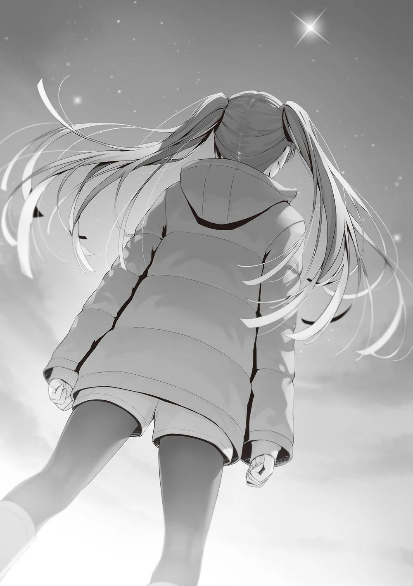
―Ya veo, pensé que dijiste algo así, pero... es demasiado tarde para eso,
¿no?
Al parecer, había estado escuchando la conversación a medias.
Sin embargo, ya habían pasado casi cuatro horas desde que nos separamos, así que no pude evitar preguntarme.
―¿Así que ya estás de camino a casa? ―preguntó Himeno al ver las bolsas de plástico del supermercado, y yo asentí con la cabeza.
―¿Qué hacías hasta tan tarde?
―Hmm... He estado aturdida. ¿Fui al supermercado y fui al cine sin razón alguna?
Parecía estar como yo.
―Tal vez estabas disfrutando de tu tiempo a solas.
Ella estaba un poco sorprendida por esta propuesta, que no era propia de Himeno, pero no se le ocurría ninguna razón para negarlo.
―Todavía hace frío por la noche, ¿verdad?
Se estremeció como si no se hubiera dado cuenta.
―En realidad, después de irnos, Kanzaki-kun y los demás me preguntaron si quería quedarme un rato más con ellos.
―Oh, ya veo.
―Pensé que era importante tener la oportunidad de hablar con compañeros de clase a solas. Pero dije que no.
―¿Por qué?
―Para ser sincera, como que no me gustaba el ambiente y quería evitarlo.
No es que quisiera dejar el grupo ni nada de eso. Simplemente no me gustaba la idea de ir acompañada.
Aunque Himeno estaba aprendiendo a llevarse bien con los demás, puede que todavía le cueste congeniar con un gran número de personas.
―Pensaba: 'Me siento cómoda sola', y entonces se hizo de noche.
―Así que es eso.
―Pero cuanto más tiempo paso sola, más pienso en ello. Especialmente lo que me dijiste. Realmente me golpeó. Me golpeaste justo donde duele.
Por lo visto se preocupó por las dificultades que mostró en la reunión del karaoke.
―Me di cuenta de que no había logrado nada comparado con lo que había imaginado. Tenía la confianza infundada de que estaba haciendo algo especial al formar equipo con Kanzaki-kun, y que era algo increíble por darme cuenta de que Ichinose-san estaba en problemas cuando nadie más lo hizo. Sentí como si alguien me hubiera roto la nariz.
―Lo siento por eso.
―No tienes que disculparte por eso. De hecho, tienes razón.
Exhalando un suspiro blanco, Himeno se volteó hacia mí y sonrió amargamente.
―Pensé que sería más fácil hacer cosas buenas, pero es difícil actuar...
―Eso es cierto para todos. Para ti debe de ser difícil actuar.
No era mi intención consolarla, pero no quería que se preocupara demasiado, así que se lo dije.
―Estoy intentando encontrar una forma de avanzar, pero no estoy segura de si puedo mejorar tomando acciones con Kanzaki-kun y Hamaguchi-kun.
―No está mal estar confundida. No es un problema que se pueda resolver quedándose de brazos cruzados.
―Lo sé, pero... Pensaba que estaba empezando a salvar la clase, pero los engranajes invisibles están empezando a torcerse poco a poco. No puedo evitar sentirme así.
¿Los engranajes invisibles empiezan a torcerse...?
Cuando intentabas hacer algo que nunca se había hecho, la ansiedad asomaba.
―No lo dudo. Pero cuando te preguntan si los engranajes han girado bien hasta ahora, no puedes decir sinceramente que sí, ¿verdad?
―Bueno... es verdad.
Hubo una buena gestión de la clase, pero no hubo resultados.
Eso significa que los engranajes no estaban funcionando correctamente.
―Es un hecho que ahora se avecina un cambio en tu clase.
Todavía no sabía la respuesta de dónde acabarían, por fortuna o no.
No era sólo la presencia de Kanzaki y los demás, sino también la renuncia de Ichinose al consejo estudiantil.
Yo no tenía el control de muchas cosas, y el futuro era incierto y poco claro.
Pero había dos resultados. La vida o la muerte. La clase de Ichinose se salvaría o no se salvaría.
El curso de ese proceso, sin embargo, empezaba a estar envuelto en una espesa niebla que nadie podía prever.
Pronto llegaría marzo, el final del segundo año.
Para entonces, los ojos de Himeno podrían ver los resultados.
―Ayanokouji-kun, ¿crees que todavía hay alguna posibilidad de que alcancemos la Clase A si nuestra clase cambia?
―¿Quieres una opinión objetiva?
―Sí. Si es posible.
―Si pudiera responder a esa pregunta, diría que sí... condicionalmente.
―Je... pensé que dirías que es imposible. ¿Pero condicionalmente?
―La batalla de los de segundo año no es tan fácil como para entrar en la clase A sólo cambiando su mentalidad. De hecho, la brecha entre la clase de Ichinose y la Clase A se está volviendo muy seria. Para compensar la diferencia, hará falta mucho esfuerzo y determinación. Si no hay determinación en toda la clase, no podrán alcanzarla.
―¿Dolor y determinación...? ¿Qué significa eso exactamente?
―Lo siento, no puedo responder a eso ahora.
―No puedes responder a eso, ¿eh? No esperaba una respuesta así.
Pensé que dirías que no lo habías pensado para nada o que lo habías dicho de casualidad o algo así.
―Eso es lo que suele pensar la gente.
―Porque se trata de los problemas de otra clase, de su sufrimiento.
Cuanto más suframos, relativamente más se beneficiará tu clase. ¿No es así?
―Sí.
―Y sin embargo, eres tan complaciente y comprensivo. ¿Por qué?
―Porque estoy ansioso por ver qué pasa con la clase de Ichinose antes de que se conviertan en amigos o enemigos.
―¿Qué quieres ver...? Suenas como si pudieras ver el futuro.
Nadie podía prever el futuro, pero podíamos predecirlo y prepararnos para él.
―Así que por el momento, voy a ayudar en tiempos difíciles. Si te parece bien.
―Estoy segura de que Kanzaki-kun estará encantado. Me siento muy tranquila.
Himeno, que lo veía con buenos ojos, hizo una pequeña pose victoriosa con ambos brazos.
―Espero que algún día puedas mostrar abiertamente ese tipo de confianza".
―¿Qué? Oh, de repente me siento avergonzada...
Diciendo esto, dejó que sus manos se metieran en sus bolsillos y sus ojos se desviaron con ellas.
PARTE 5
Cuando caminaba de vuelta al dormitorio con Himeno, encontré a Kei sentada en un banco tocando su celular.
―Hasta luego.
Himeno, leyendo el estado de ánimo del momento, se apartó de mi lado y empezó a caminar rápidamente.
Hizo una ligera reverencia a Kei cuando se sentó en el banco y se encaminó de vuelta al dormitorio.
―¿Qué haces aquí? Creía que habías vuelto a tu habitación.
―¿Qué estoy haciendo? ¿Qué parece que estoy haciendo?
―Esperando a alguien.
―Correcto. Entonces, ¿quién es esa persona a la que espera? Uno, Ike-kun; dos, Minami-kun; tres, Kiyotaka.
Con cada opción, levantaba un dedo y me interrogaba.
―Es una pregunta extremadamente difícil. Una parece ser la respuesta más probable...
―Si te equivocas, habrá un juego de castigo.
―Antes de responder, vamos a escuchar en qué consiste el juego de castigo.
―Supongo. Voy a escribir 'Amor de Kei-chan' en tu frente con un marcador mágico, y luego iremos a la escuela.
―Muy bien, vamos con el número tres.
―¿Qué? ¿Tanto no quieres que te castigue?
Un poco enfadada, se levantó del banco y se alineó a mi lado.
―¿Y? La chica que acabo de ver era Himeno-san, ¿verdad? ¿Por qué iba contigo?
Tenía una sonrisa en la cara, pero había una fuerte presión detrás de su exigencia de una explicación.
―Te dije que iba a reunirme con Kanzaki, y Himeno era una de las personas del grupo.
―¿Himeno era una de las personas del grupo? Pero Kanzaki-kun y los demás no estaban contigo.
―Nos separamos enseguida. Y casualmente me encontré con Himeno en el camino de vuelta y tuvimos una pequeña charla.
―¿Hmm? ¿Hmm? Bueno, como soy tu novia, creeré tu explicación por ahora, ¿de acuerdo?
Aunque lo dijera, no parecía tener ninguna duda.
―Ustedes se llevan bien.
―Dudo que pudieras darte cuenta de eso en la oscuridad.
―Um... sí, es verdad, pero... ¡Sólo sentí algo! ¡No me importa!
Ella envolvió su brazo alrededor del mío como marcando el asiento a su lado como mío.
―Hablemos de algo divertido.
―Estoy de acuerdo.
―Vayamos juntos al centro comercial Keyaki mañana. Pronto será Navidad.
Me invitó a ir con ella y me sonrió. "Sabes lo que quiero decir, ¿verdad? Eso era lo que me decía la expresión de su cara.
―Ya que la confesión de Sudou no fue muy bien, es justo que reciba un regalo de Navidad, ¿no?
―Así es. Un regalo sorpresa no es mala idea, pero ir a comprar con tu novio lo que quieres tampoco.
Estaba seguro de que estaría más contenta que si se me hubiera ocurrido a mí, así que eso fue una gran ayuda para mí.
―Me encantaría cumplir tus expectativas, pero no puedo hacerlo mañana.
¿Podemos hacerlo la semana que viene, por favor?
―¿Qué? ¿Hiciste otra cita?
Kei había sido informada de que me reuniría con Kanzaki y los demás con antelación.
Como Kei no tenía relación con Kanzaki y los demás y desconocía mi amistad con ellos, sintió curiosidad pero no le prestó atención...
―Así es.
―¿No puedes dedicarme ni siquiera un poco de tiempo? De todas formas,
¿qué tienes planeado para mañana?
Pasar tiempo con Ichinose. Era fácil evitar decírselo y engañarla.
Sin embargo, la desventaja de mantenerlo en secreto era tan grande como la de hablar de Kanzaki y los demás.
La sola presencia de Ichinose era llamativa, y si estaba junto a ella, habría rumores inquietantes.
Además, Kei tenía muchos amigos, y esos estudiantes serían sus ojos y oídos.
―Reunión con Ichinose.
―...¿Reunirse con Ichinose-san?
Kei se detuvo en seco con una reacción claramente distinta a la que tuvo cuando le dijeron que Kanzaki se iba a reunir conmigo.
―¿Quién más va? ¿Kanzaki-kun o Himeno-san?
―De momento no hay nadie más, sólo Ichinose.
―Es sólo Ichinose. Estoy un poco confundida. ¿Te encuentras solo con una chica en tu día libre?
Pude ver que su humor se había agriado claramente, pero supongo que era comprensible.
En la situación opuesta, un chico normal habría reaccionado de la misma manera.
―Bueno, sí.
Observé atentamente la reacción de Kei y respondí a su mirada con la mía.
―¿Y?
―¿Y qué?
―Normalmente, deberías explicar las razones y todo eso, en plan "vamos a vernos, pero no me malinterpretes, no es ese tipo de situación". No es bueno poner nerviosa a tu novia, ¿verdad?
―Hay varias razones para reunirse con Ichinose. Una de ellas es que Kanzaki y los demás me lo pidieron.
―...¿Kanzaki-kun y los otros te lo pidieron? ¿Es cierto?
Ella se sintió un poco aliviada al escuchar que el nombre de Kanzaki se mencionaba.
―Todavía no se ha hecho público, pero Ichinose dimitió del consejo estudiantil. Hay mucha confusión sobre eso ahora mismo.
―Espera un momento. ¿Es cierto? No entiendo qué está pasando.
―Te lo estás preguntando, ¿verdad? Kanzaki y los demás quieren saber la verdad. Pertenecer al consejo estudiantil tiene un efecto positivo a su manera en la clase, así que es comprensible que sus compañeros se enfaden si decide abandonarlo en lugar de ganar tantos puntos como sea posible ahora que han descendido a la clase D.
A pesar de esta explicación, Kei podía entender la ansiedad que sentían Kanzaki y sus compañeros de clase.
―Pero Kanzaki y los demás tienen miedo de preguntarle directamente a Ichinose por qué, porque no pueden soportar escuchar de su líder que haya renunciado a la idea de aspirar a la Clase A.
―Así que... ¿vas a preguntarle a ella por qué en lugar de ellos?
―Eso es lo que voy a hacer.
―Entiendo la situación, pero... ¿por qué estás involucrado en la clase de Ichinose-san? ¿Por qué no los dejas en paz? Si los ayudas, podrían volver a ser rivales.
Era natural preguntarse por qué estaba involucrado con la clase de Ichinose.
Esto no era algo que Horikita y los demás pudieran oír.
―Hay razones para enviar sal al enemigo. Pero tampoco puedo decirte por qué.
―¿No puedes decirme...? ¿Crees que podría decírselo a alguien?
―No, no lo creo. Sé que eres muy reservada. Es sólo que no creo que esté preparado para contarle a nadie lo que intento hacer en este momento.
La expresión de Kei se tensó un poco ante mi tono severo y despectivo.
Pero Kei era Kei, y era natural que no pudiera tomárselo con calma.
Por un momento, trató de contenerse, pero entonces sus pensamientos afloraron.
―Sé que tienes muchas cosas en la cabeza. Sé que estás ayudando a la clase sin que yo lo sepa y que intentas averiguar a través de Ichinose lo que les
pasa a Kanzaki-kun y a los demás. Pero, ya sabes... no está bien... quedar con una chica a solas en un día descanso, ¿no? Al menos hay otras formas de hacerlo, como en la escuela o simplemente durante la hora del almuerzo.
Kei hizo un mohín y giró la cabeza en dirección contraria, como si estuviera enfurruñada.
Sería más fácil si le dijera que lo sentía y que ella era la única que importaba.
Ya había aprendido que en una relación era importante decirle a alguien que no se preocupara.
Entonces, ¿y si fuera al revés? Aunque tuviera una idea de la respuesta, no podía decir que la entendía a menos que realmente intentara averiguarla.
―Entonces, ¿quieres interrumpirme? Puedes irrumpir mientras me reúno con Ichinose en mi día libre.
―Eso es...
―No lo harás, ¿verdad? No tiene ningún sentido hacerlo. Entonces hemos terminado aquí. Iremos juntos a comprar los regalos de Navidad la semana que viene, y no debería haber ningún problema.
El ambiente podía cambiar tan fuertemente en un instante sólo por no decir palabras amables.
La Kei feliz que me había estado esperando bajo el frío había desaparecido.
―Tú tienes tus propias ideas. No tengo derecho a decir nada al respecto.
No sólo la expresión de su cara, sino incluso sus emociones estaban alejadas de ella.
―Voy a pasar por la tienda. Tú vete a casa primero.
Con esas palabras, corrió hacia la tienda sin mirarme. Sin embargo, la zancada de Kei parecía rápida y lenta a la vez mientras se marchaba, y pude ver en su espalda que esperaba que yo fuera tras ella.
Todo lo que tenía que hacer era correr inmediatamente tras ella y decirle que lo sentía y que pensaría en otra forma de reunirme con Ichinose. Eso la devolvería al estado de ánimo que tenía justo antes. Pero decidí apartar mi mirada de su espalda y volver al dormitorio.
Esto sólo profundizaría la brecha entre nosotros. Me preguntaba cómo reaccionará Kei, qué tipo de actitud mostrará y cómo me sentiré y actuaré yo en respuesta. Será una buena oportunidad para experimentar todo eso.
CÓMO PASAR LOS DÍAS LIBRES
ERA DOMINGO, el día después de la reunión con Kanzaki y seguía teniendo ligeros roces con Kei.
Había llegado la hora de reunirme con Ichinose, con quien me había citado el día anterior.
Bajé al vestíbulo un poco antes, pero no la vi por la zona.
Pensé que cabía la posibilidad de que nos encontráramos por casualidad, pero no fue el caso.
Me di la vuelta y miré hacia el ascensor, pero no se movía.
Es poco probable que Kei la siga.
Kei, que estaba preocupada por mi encuentro con Ichinose, no haría algo así.
No, es demasiado pronto para decir que no hará nada. Ella podría estar en su camino hacia Ichinose ahora, o podría estar ya delante de ella.
O puede que se nos una audazmente mientras estamos reunidos. Si analizaba sus patrones de comportamiento pasados, había una posibilidad.
Si eso sucede, tendremos que esperar y ver...
Pero dudo que ella tome alguna acción imprudente, dada la forma en que se comportó ayer. Se necesita valor para ver algo que no quieres ver.
Salí del dormitorio. El cielo estaba despejado hasta el momento, pero, por desgracia, estaba previsto que lloviera por la tarde, así que llevé un paraguas.
Me pregunté cómo se sintió Ichinose esta mañana.
Qué quiere, qué desea. Sea lo que sea, está claro que es más de una cosa. Ser una gran líder, tener una relación exitosa, tener un espíritu fuerte. Tenemos más
deseos que los dedos que uno puede contar con una o incluso con las dos manos.
Aquella noche durante el viaje escolar no fue suficiente para provocar cambios concretos en nuestra relación. Tenía que ver a Ichinose en persona para saber lo que ella piensa, ya que por el momento sigue inestable.
Llegué un poco antes de la hora prevista y vi que Ichinose ya me estaba esperando con un paraguas en la mano.
Se fijó en mí antes de que la llamara y levantó lentamente la mano.
―uenos días, Ayanokouji-kun.
No percibí un ambiente tenso. En todo caso, se notaba un aire fresco e inocente.
A diferencia de la noche sorpresa del viaje, Ichinose también vino preparada con sus emociones externas.
Al principio, estableció contacto visual conmigo, pero cuando seguí mirándola a los ojos para averiguar sus verdaderas intenciones, desvió rápidamente la mirada. Me di cuenta de que había bajado los ojos hacia mi boca, mi nariz y mi cuello para evitar que la notara.
―Siento haber tenido que pedirte que liberes algo de tiempo para esta reunión.
―No es para tanto. Originalmente no tenía planes.
Si fui yo quien invitó a otros, agradecería que lo dijeran, aunque sólo fuera una formalidad. Todavía quedaba algo de tiempo antes de que abriera el centro comercial Keyaki, y como todavía no se nos permitía entrar, hicimos cola junto a la entrada.
Estábamos uno al lado del otro, pero ni muy cerca ni muy lejos. Para un extraño, sería difícil determinar si estábamos esperando juntos o separados a que abriera el centro comercial.
―No suelo venir aquí antes de la apertura, pero sorprendentemente todavía no hay nadie.
―Hoy hace mucho frío. Supongo que todo el mundo sigue descansando en sus habitaciones.
Eso es seguro. A menos que sea un día especial de rebajas, no hay necesidad de hacer cola para que el centro comercial abra temprano por la mañana.
―Hace mucho frío ―murmuró Ichinose para sí misma, repitiendo las mismas palabras una y otra vez.
La conversación se detuvo ahí, ya que yo esperaba poder conversar cuando estuviéramos dentro del centro comercial.
Mi rutina diaria consistía en pasar cada vez más tiempo con Kei, mi novia, lo cual no siempre estaba lleno de conversación.
Compartíamos el mismo tiempo, pero a veces el silencio duraba 10 o 20 minutos.
Al principio, tenía la misma sensación de incomodidad que ahora, pero desapareció e incluso empecé a sentirme cómodo con el silencio.
No se trata de acostumbrarse, sino más bien de sentir que el más mínimo momento de silencio resulta extrañamente pesado con una persona con la que todavía no estás lo suficientemente unido.
No es que no soportara el silencio, sino que me preguntaba si debía abordar el tema ya que yo la invité.
Quizá Ichinose estuviera pensando lo mismo. Pero ninguno de los dos podía hablar con propiedad, y ninguno de los dos podía dar el primer paso.
Un tema en común... Una vez que empiezas un tema en común, puedes contribuir a la discusión dos o tres veces.
Cuando pensé en ello, me vino a la mente un chico.
―Estuve en el mismo grupo con Watanabe en el viaje escolar el otro día.
―Ya veo.
―No lo conocía de antes porque no tuvimos ningún contacto, pero Watanabe resultó simpático y es fácil hablar con él. Es un buen tipo.
Cuando le dije sinceramente lo que pensaba, Ichinose se alegró como si fuera de su propia familia.
―Sí, sus compañeros lo aprecian, tanto hombres como mujeres.
No era tan mandón como Ike, ni tan sociable como Yousuke, pero sabe leer la situación razonablemente bien.
Sólo vi una parte de Watanabe, pero estoy seguro de que también es igual en su clase.
―Llevo casi dos años estudiando en el mismo sitio y con diferentes clases.
Todavía hay muchas cosas que no sé.
―A mí me pasa lo mismo. No sé mucho de otras clases, aunque parezca que sí. Es totalmente diferente de la primaria o la secundaria... Creo que eso es lo que pasa cuando realmente compites con los demás.
En las amistades normales, las personas se muestran sus puntos débiles y se ayudan mutuamente.
Sin embargo, esta escuela es un lugar donde este concepto de normalidad no se aplica. Esta es la creencia común que tienen Ichinose y otros estudiantes.
―Socializar es difícil. Todavía no puedo decir que me lleve bien con mis compañeros. En comparación, Ichinose, que fue capaz de hacer amigos con todos en una etapa temprana, es increíble.
―¿Eh? Realmente no soy tan genial.
En lugar de ser modesta, no parece darse cuenta de lo hábil que es.
―Entonces, ¿tienes algún consejo sobre cómo llevarse bien con todo el mundo?
La construcción de la amistad, no importa cuánto lo hagamos, todavía hay más que aprender.
Todavía no he adquirido las habilidades de gente como Ichinose y Kushida.
Ya sé lo que tengo que hacer.
Sé qué decir, conozco las palabras.
Sin embargo, no puedo ser como ellas. La más mínima diferencia en lo que he acumulado, en mi tono y en mi lenguaje corporal puede marcar una gran diferencia en el resultado.
―Me pregunto si existe algo así. Si existe, no lo sé.
No es posible desglosarlo y hablar de ello teóricamente porque es una habilidad innata. Por lo tanto, aunque lo observes y aprendas, no puedes entenderlo, absorberlo y utilizarlo fácilmente. La conversación continuó de algún modo.
Poco después, al filo de las diez de la mañana, la puerta automática cerrada se abrió.
―¿Entramos?
―Claro.
Así, fuimos los primeros en entrar en el centro comercial Keyaki y nos envolvió el calor del centro comercial climatizado.
―¿Hasta qué hora puedes quedarte hoy?
―Cualquier hora está bien. No tengo planes para después.
Esta es una buena oportunidad, ya que hoy quería hacerle algunas preguntas a Ichinose.
Si tienes un límite de tiempo, entonces tendrías que conversar dentro de ese límite.
Es especialmente importante saber más sobre sus razones para dejar el consejo estudiantil, ya que es un tema relevante planteado por Kanzaki y los demás.
Es muy conveniente que tengamos tiempo para cumplir los deseos de Kanzaki pero... por otro lado, hay algo inquietante en la situación.
Dejando de lado el aspecto amoroso por el momento, Ichinose no es una persona insensible.
Aunque no siempre tiene buenas habilidades de deducción, es más perceptiva que el estudiante promedio.
Ella no es el tipo de persona insensible, porque de lo contrario, no sería capaz de convertirse en una líder. Es muy probable que sepa cómo la perciben sus compañeros, por sus palabras y sus sentimientos, incluso en su estado de ánimo actual.
Si este es el caso, no es buena idea suponer que ha sido bendecida con esta oportunidad por pura casualidad.
Puede que al menos haya adivinado la intención de mi invitación. Dependiendo de las condiciones, también puede ser consciente de que sus compañeros están al acecho de mis propósitos.
Será mejor que siga mi día con eso en mente.
―¿Qué quieres hacer ahora?
El objetivo de esta reunión es sacarle información, pero el propósito aparente de la reunión todavía no se ha establecido. Estuve pensando en cómo pasar el tiempo con Ichinose hoy, y ésta fue la conclusión a la que llegué.
―No tenía en mente nada, pero... supongo que podría preguntarte cómo pasas tus días libres.
―¿Cómo paso mis días libres?
―Sí, me gustaría averiguar qué tipo de vida cotidiana debo seguir para llevarme bien con todos.
―¿Qué? ¿Eso es algo que puedes averiguar fácilmente?
―Sólo digo lo que se me ocurre..., ¿te parece bien?
Como no respondió de inmediato, pensé en hacer otra pregunta, pero Ichinose asintió con la cabeza sin ningún disgusto.
―No sé si podré ayudarte, pero si eso es lo que quieres, ¿por qué no lo intentamos?
Ella pensó positivamente y aceptó de buen grado.
Aquel primer tema de conversación tuvo éxito.
―Entonces..., ¿realmente podemos hacer lo que hago en mis días libres?
―Por supuesto. Ir de compras, al cine, a cafés, etc., iré contigo.
―Puede que no sea capaz de cumplir tus expectativas. ¿Te parece bien?
Ichinose sonrió, como si nada de lo anterior se aplicara a ella.
Se había visto algo torpe desde que se unió a mí por la mañana, pero vi una sonrisa natural en su rostro.
―Bueno, pongámonos en marcha.
Dijo Ichinose y echó a andar mientras se dirigía sin dudarlo a la segunda planta por las escaleras mecánicas.
PARTE 1
En el Centro Comercial Keyaki hay varias instalaciones comerciales, la mayoría de las cuales ya visité antes. Sin embargo, todavía me quedan algunos por conocer.
Una de ellas es el gimnasio de la segunda planta.
―Intento venir aquí sólo los fines de semana y los días festivos. Soy algo atlética, así que espero mejorar un poco.
Llegamos a la entrada del gimnasio e Ichinose sacó su credencial de estudiante.
―Ayanokouji-kun, no has estado en el gimnasio antes, ¿verdad?
―Nunca he estado en uno.
―Entonces es algo bueno.
―Me sorprende que hayas estado yendo al gimnasio. ¿Cuánto tiempo hace?
―Hice una prueba gratuita a mediados de septiembre y me hice socia completa a principios de octubre, creo.
―Así que llevas más de dos meses viniendo al gimnasio. No tenía ni idea.
¿Empezaste sola? No se me da muy bien involucrarme en estos sitios...
Supongo que no me importaría unirme y empezar a asistir, pero la primera o las dos primeras veces serán un obstáculo.
―A mí tampoco. Por eso empecé con mis amigos... porque si no soy lo suficientemente valiente sola, puedo serlo bastante con dos personas. Vas a hacer ejercicio conmigo hoy, ¿verdad?
Asentí con la cabeza y dejé que Ichinose me guiara al interior de las instalaciones.
Ichinose saludó a una amable empleada que estaba en la recepción y le presentó su credencial de estudiante. Le explicó lo que estábamos haciendo mientras yo permanecía de pie detrás de ella.
―¿Tienes tu credencial de estudiante?
―Sí.
Al parecer, si presentas tu credencial, puedes conseguir fácilmente una prueba gratuita sin tener que rellenar ningún formulario.
―Nos vemos en un rato, Ayanokouji-kun. A partir de aquí tendrás que dejar que el personal te lo explique.
Después de eso, un entrenador masculino me guio hasta los vestuarios, y me pidieron que me cambiara de ropa tras una breve explicación sobre cómo utilizar los casilleros, los vestuarios y las duchas.
El gimnasio estaba diseñado para entrar con las manos vacías y no llevar pertenencias.
Me quité la ropa, la guardé en un casillero, me puse la ropa de entrenamiento alquilada y me dirigí a la sala de entrenamiento, al fondo del gimnasio.
Ichinose todavía no había terminado de cambiarse y no había nadie a la vista.
Como acaba de abrir, supongo que es normal.
Pero me resultaba un poco incómodo ser el primero, ya que sólo estaba aquí para una prueba gratuita.
Un entrenador varón se mostró dispuesto a enseñarme algunas cosas, pero decliné su oferta. Pensé que sería mejor aprender de Ichinose. Sin saber cómo comportarme, miré el equipo por todas partes.
Sin embargo, estaba familiarizado con el equipo de entrenamiento en sí, así que me sentí cómodo con él.
Cuando estaba en la Habitación Blanca, teníamos todo lo último en equipamiento para entrenamiento físico. Aunque la marca y el año de los equipos son un poco diferentes, todos se ven seguros de usar.
Sorprendentemente, mientras tenía estos pensamientos, los miembros del gimnasio empezaron a entrar uno tras otro.
Pensé que el gimnasio estaría bastante vacío, pero por lo visto es bastante popular.
―Oh, parece que algunos de los chicos ya empezaron.
Me sorprendió un poco el atuendo de Ichinose al salir con su ropa de entrenamiento, pero no hablé al respecto.
―También había un par de personas en el vestuario femenino.
―Yo vi adultos en los vestuarios, así que supongo que los que no son estudiantes también pueden usarlos.
Sabía que no todos los cines y supermercados eran exclusivos para estudiantes, y este gimnasio no parecía ser una excepción.
―También suelo ver aquí a Mashima-sensei.
Ya veo. Los profesores tampoco son una excepción. Para los que vivimos en los terrenos de la escuela, un lugar donde hacer ejercicio es importante.
Hacía tiempo que rehuía ese tipo de instalaciones, pero si hay alumnos conocidos como Ichinose, podría estar dispuesto a unirme a ellos.
Mientras empezaba a pensar en ello, Ichinose me explicó detenidamente el equipo.
Me habló de cómo utilizarlo con un poco de práctica. No quise hacer ninguna pregunta que no necesitara explicación, y me quedé sentado en silencio y escuchando la información, fingiendo no saber nada.
Ichinose había adquirido bastantes conocimientos, pero tenía aspecto de utilizar poco el equipo en la práctica, probablemente porque llevaba poco tiempo yendo al gimnasio.
Después de unos 10 minutos de que me enseñaran a utilizar el equipo, el número de personas que acudieron al gimnasio aumentó gradualmente, y unos siete hombres y mujeres, excluyéndome a mí, empezaron a hacer ejercicio.
Es hora de que nosotros también hagamos algo...
―¡Oh, Mako-chan, buenos días!
Justo cuando íbamos a empezar a hacer ejercicio, Ichinose vio una cara conocida y la llamó.
―¡Ah, Honami-chan!
Era Amikura, que acababa de salir de los vestuarios después de cambiarse.
Se veía realmente sorprendida de ver a Ichinose, ya que sabía que ella y yo íbamos a salir hoy.
―¿Q-qué estás haciendo en el gimnasio?
Es probable que sus pensamientos se escaparan de su boca, ya que estaba visiblemente inquieta.
―¿Recuerdas cómo empezaste a asistir al gimnasio en tus días libres?
Pensé en introducir a Ayanokouji-kun un poco.
Ichinose respondió con una expresión despreocupada.
―Ah, ya veo.
Amakura no podía imaginarse a los dos juntos en el gimnasio e Ichinose no podía entender sus sentimientos para nada, así que simplemente se desentendió con una cara indiferente.
―Bueno, no me interpondré en tu camino.
―...No es como si estuvieras estorbando o algo así...
Amikura me lanzó una mirada aguda que parecía decir: "No digas algo innecesario".
Por 'algo innecesario', supuse que se refería a lo que me dijo el otro día en el karaoke. Por supuesto, yo no haría eso. No sabía hasta qué punto lo entendería, pero me comuniqué con ella con la mirada.
―Ayanokouji-kun y el gimnasio son muy diferentes.
―¿De verdad?
―No me imagino haciendo este tipo de cosas. No me gustan los lugares donde se reúne la gente.
Me gustaría decir que esto no son más que prejuicios, pero era cierto. Me sentía reticente a hacer ejercicio delante de alumnos normales. Además, tenía la imagen de que este tipo de gimnasio no era para hacer ejercicio en silencio, sino con amigos, así que me resultaba difícil venir aquí. Tenía que admitir que me mantenía alejado por esa razón.
―.... Quiero decir, ven aquí, Honami-chan.
Amikura notó algo y apartó el brazo de Ichinose de mí. Luego susurró algo. Por alguna razón, los ojos de las dos estaban puestos en mí.
―¿...?
Ichinose saltó sorprendida y se agachó detrás de Amikura.
―No me había dado cuenta, Honami-chan...
Amikura, que contestó así, también parecía algo avergonzada.
―¿Qué pasa...?
―Oh, no, quiero decir... Bueno, ya sabes, es un poco embarazoso vestirse así delante de los demás. ¿Verdad?
Recibí una mirada que parecía decir: 'Lee el ambiente. ¿Entiendes?
―Ya veo.
Al parecer, le daba vergüenza que la vieran los chicos con la ropa del gimnasio.
Sin embargo, el gimnasio era un lugar donde había que restringir la ropa para tener facilidad de movimiento y absorción del sudor. A menudo es mejor evitar introducir la noción de vergüenza, ya sea al mencionarla explícitamente o al evitarla por completo Ichinose no se había percatado de este hecho, pero Amikura se lo hizo notar.
La expresión de Amikura sugería que había cometido un error al ser tan directa al respecto.
Como miembro del sexo opuesto, podía ser comprensible estar preocupada a su edad, pero esto es un gimnasio. Lo mejor es dejarlo pasar y no preocuparse.
―En momentos así, lo mejor es sudar, ¿no? Dime cómo hacerlo, me gustaría probarlo.
Lo dije para que pensara en otra cosa, porque pierde la cabeza cuando empieza a preocuparse por lo que el sexo opuesto piensa de ella. Ichinose se dio cuenta de lo que acababa de decir.
―Creo que tienes razón. Veamos, ¿qué deberíamos hacer, Mako-chan?
―¿Por qué me lo preguntas a mí?
Evidentemente aún en estado de pánico, le pidió ayuda a Amikura.
Las dos chicas hablaban entre ellas mientras se susurraban al oído, y asentían con la cabeza casi simultáneamente para demostrar que se estaban comunicando.
―Todavía somos nuevas en esto, ¿podemos empezar en la caminadora, que es a lo que estamos acostumbradas?
―Por supuesto.
Las dos chicas se subieron a la caminadora, que parecía ser un elemento básico en los gimnasios, y empezaron a correr en el modo que más les convenía.
Naturalmente, las máquinas eran de distintos fabricantes, pero yo las había utilizado repetidamente cuando era niño, así que no estaba desorientado sobre qué hacer.
Se trata de una máquina de cardio estándar, indispensable para el entrenamiento en interiores.
Ichinose y Amikura tenían configuraciones similares, así que dejaré ésta también más o menos al mismo nivel.
―Es tu primera vez en un gimnasio, ¿verdad? Tómatelo con calma, Ayanokouji-kun.
Amikura lo dijo como si estuviera preocupada por mí, y yo le contesté ligeramente con la mano que estaba bien.
Después de eso, empezamos a entrenar en silencio en la caminadora durante un rato.
Al principio, Ichinose se veía nerviosa y avergonzada, pero la sensación se desvaneció gradualmente, y después de unos 30 minutos, empezó a acostumbrarse a la caminadora hasta cierto punto.
Cuando pasaron los 30 minutos establecidos y la máquina se detuvo, Ichinose levantó la vista.
―¡Uf! ¡Estoy tan cansada!
Parecía estar más agotada que Amikura, quizá porque decía que no se le daba bien hacer ejercicio. Exhaló profundamente y movió los hombros arriba y abajo.
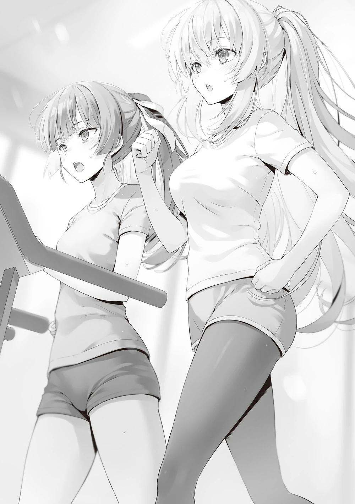
―Voy a rehidratarme ―dijo Ichinose y abandonó la zona tras despedirse de nosotros con la mano.
Según recordaba, había un punto para rellenar botellas de agua junto a los vestuarios.
Como Amikura y yo éramos los únicos que quedábamos, decidimos hablar un rato.
―Llevas tiempo viniendo aquí, tienes buen aspecto.
―Ayanokouji-kun, no estás nada cansado aunque hayamos hecho la misma rutina.
―Soy un chico, así que tengo más fuerza física básica que las chicas.
―Ya veo. Pero me sorprendió. Imaginé que podría haber una posibilidad de que nos encontráramos en el centro comercial Keyaki, pero no pensé que nos encontraríamos en el gimnasio tan temprano por la mañana.
Al parecer, encontrarse en este lugar no era algo que ni siquiera Amikura hubiera esperado que ocurriera.
―Entonces, ¿cómo te fue? ¿Conseguiste algo de... Honami-chan?
―Nada todavía. Fuimos al gimnasio nada más encontrarnos, nos unimos a ti y aquí estamos.
―Ya veo. Pero Honami-chan se divierte mucho, así que eso es bueno.
Secándose el sudor de la cara con una toalla, los ojos de Amikura se entrecerraron de placer.
―Sabes ese tipo de cosas cuando eres su mejor amiga, ¿eh?
―Sí que lo sé. Suelo sonreír mucho, pero hoy siento que reviento de felicidad.
Ahora que Ichinose había abandonado la conversación y estábamos solos, intenté casualmente sonsacarle información a Amikura para cumplir mi promesa con Watanabe.
―Ya casi es Navidad, ¿verdad?
―Efectivamente. Vas a pasar la Navidad con Karuizawa-san, ¿verdad?
Antes de que pudiera obtener más detalles, me hicieron una pregunta.
―¿Hmm? Bueno, ese es el plan.
―Bueno... déjame preguntarte francamente... ¿Qué vas a hacer con Honami-chan?
―¿Qué quieres decir?
―Porque sabes cómo se siente, ¿no? Entonces, lo sabes, ¿verdad?
Amikura intentó transmitir sus sentimientos de forma confusa, como si dudara en expresarlos sin rodeos.
―¿Con qué tipo de persona crees que debería estar?
―¿Qué? ¿Me estás preguntando eso?
―Tienes al menos una idea de que ella tiene un interés especial en ti,
¿verdad?
Lucía preocupada y se secó ligeramente la frente con la toalla que llevaba al cuello, como si estuviera empezando a sudar.
―A mí... nada me gustaría más que Honami-chan sonriera, como su amiga. Pero Ayanokouji-kun tiene ahora a Karuizawa-san. Y es un poco diferente considerando que no debería romper con ella. Creo que lo mejor sería que Honami-chan se enamorara de otra persona y fuera feliz con ella.
Ella llega a sus propias conclusiones mientras piensa y habla sobre sus propios ideales.
Como dijo Amikura, la situación actual en la que Ichinose me muestra afecto es bastante problemática. Así que, si el afecto se dirige a otra persona sin relación, entonces esta situación podría haberse resuelto sin problemas.
―Estoy de acuerdo. Yo tampoco conozco a muchos chicos, pero Watanabe es fácil de tratar y encajaría bien con Ichinose.
Lancé el nombre de Watanabe dentro de la conversación como si intentara meterme en la de Amikura.
Dependiendo de su respuesta, podré averiguar qué impresión tiene Amikura de Watanabe. Amikura aprecia a Watanabe lo suficiente como para acompañarlo cuando va de compras en sus días libres.
Esto podría ser suficiente para explorar la posibilidad.
―Watanabe-kun, ¿verdad? Es el de nuestra clase.
―Sí. Tuvimos muchas oportunidades de hablar durante el viaje escolar.
―Hmmm ... Supongo que sí...
Ella pareció pensar por un momento.
La vaga brecha entre lo positivo y lo negativo es difícil de discernir.
―En cuanto a mí... Creo que Honami-chan puede aspirar a algo mejor.
―Ya veo. Watanabe no es lo suficientemente bueno.
―No estoy diciendo nada malo de Watanabe-kun, ¿de acuerdo? Creo que una chica normal sería lo suficientemente buena.
―Ya veo. Por cierto, ¿y tú?
Como no estaba seguro, decidí preguntar con un poco de fuerza. Si tardaba demasiado, Ichinose volvería.
―¿Yo?
―Parece que sabes mucho de amor.
―En absoluto. Ya estoy enamorada de alguien.
―Ah. Alguien que te gusta, ¿eh?
―Pues claro que hay alguien que me gusta. Estoy en preparatoria.
¿Quién es? Sería mejor si pudiera averiguarlo.
―Estoy enamorada de él desde hace casi 5 años. ¿Cuándo pasaré a mi próximo amor?
Murmuró para sí misma. Cinco años. Eso significa que el amor ya existía desde antes de que entrara en la escuela.
Aparentemente no hay necesidad de ir más lejos, pero me pregunto si esto será una buena noticia para Watanabe. Al menos no tiene rivales en la misma escuela...
Estaba a punto de preguntarle a Amikura qué tipo de chico era, pero Ichinose regresó después de terminar de rehidratarse. Amikura se apartó apresuradamente de mí, no quería que Ichinose supiera que había estado hablando de su vida amorosa sin su permiso.
―Siento haberte hecho esperar.
―No, en absoluto. ¿Estás bien ahora?
Si insisto más sobre la situación de Ichinose, sólo conseguiré que sospeche de mí.
Le preguntaré más tarde si puede profundizar un poco más.
PARTE 2
Durante una hora más o menos, continué mi experiencia en el gimnasio con Ichinose y Amikura.
Mientras hacíamos ejercicio, Amikura dijo que se quedaría un rato, quizá para seguir con el ambiente del gimnasio, así que Ichinose y yo nos adelantamos y nos cambiamos de ropa. Nos encontraríamos en la recepción.
Mientras esperaba a Ichinose, tomé un folleto del gimnasio para considerar la posibilidad de apuntarme oficialmente. Es un fastidio gastar unos cuantos miles de puntos más cada mes, pero no es mala idea sudar de vez en cuando.
Volví a recordar que mi cuerpo había decaído hasta el punto de que ni siquiera podía compararlo a cuando entré en la escuela, ya que apenas había hecho ejercicio de forma voluntaria en los últimos dos años. Llegué a la conclusión de que sería una buena idea elevar el nivel de mis capacidades físicas hasta cierto punto, si es que no las devolvía a su estado anterior.
Después de cambiarnos, Ichinose y yo salimos del gimnasio y nos dirigimos de nuevo al centro comercial.
―¿Conseguiste un folleto?
―Sí, he estado considerando ir al gimnasio más en serio.
―Ah, bueno, quizá entonces nos veamos más a menudo...
―Sí.
―Ya veo...
―¿Qué hacemos ahora?
El encuentro no debería terminar solo en el gimnasio, así que le pregunté qué pasa después.
―Suelo ir a librerías. También suelo comprar en tiendas de comestibles.
Pero hoy estoy un poco más cansada de lo habitual, así que me apetece tomarme un descanso. ¿Podemos sentarnos en un banco o algo?
El entorno en el que te encuentres puede influir en tu agotamiento físico, incluso fuera de la rutina habitual de entrenamiento. Es importante elegir cuándo tomarse un descanso en lugar de obligarse a seguir una rutina.
―¿Estás segura de que no quieres ir a un café?
―Sí. Ya sabes, como que destaca.
Me parece que hizo la sugerencia pensando en mí.
―Aprecio el sentimiento, pero no te preocupes. Podemos ir a un café.
―¿Sí? Si... a ti te parece bien, a mí también.
Si intentas evitar que te vean, sólo consigues parecer más sospechoso.
Tomar una taza de té con el sexo opuesto en un café es algo habitual en la vida cotidiana. Sólo porque eres consciente de ello puede parecer especial.
Fuimos a la cafetería, intentando mezclarnos con el entorno. Elegimos una pequeña cafetería en el segundo piso en lugar de una cafetería en el primer piso, donde la gente tiende a reunirse.
Ambos compramos una bebida de nuestra elección y tomamos asiento en una mesa.
―¿Puedo hacerte una pregunta?
―¿Una pregunta? Pregúntame lo que quieras.
―...¿La razón por la que me invitaste hoy aquí tiene algo que ver con mi dimisión del consejo estudiantil?
Ichinose me preguntó vacilante, pero se veía segura de ello.
Supongo que lo supo cuando de repente la invité a salir en un día no laborable.
―Mentiría si dijera que no tiene nada que ver.
―Cierto. Me alegro de que hayas contestado con sinceridad.
La boca de Ichinose se relajó al decir esto, aunque su mirada seguía apartada de mí.
―Me sorprendió que dimitieras del consejo estudiantil. Creía que tenías muchas posibilidades de ganar las elecciones contra Horikita.
La personalidad y habilidad de Ichinose contribuyeron al consejo estudiantil a principios del primer año. Horikita, por su parte, entró en el consejo estudiantil un período más tarde que Ichinose. Con su hermano mayor como anterior presidente del consejo estudiantil y su actual impulso en la clase B, pensé que ambas estarían igualadas.
―Si hubiera elecciones al consejo estudiantil, ¿a quién habría apoyado Ayanokouji-kun? ...Lo siento, fue una pregunta tonta.
Te guste o no, Horikita es actualmente mi compañera de clase. Por el bien de la clase, sería más beneficioso tener a una de mis compañeras como presidenta del consejo estudiantil.
―No siento la necesidad de apoyar a Horikita sólo porque seamos compañeros de clase. Si Nagumo hubiera dicho que apoyaría a Horikita, yo te habría apoyado a ti.
Esta también fue una respuesta honesta, pero Ichinose debió tomarla como un halago.
Parecía más arrepentida que contenta.
―Pero si lo hubiera hecho... no habría ganado. No soy rival para Horikita-san.
Ichinose no creía que pudiera ganarle a Horikita incluso antes de la pelea. Pero eso era porque ella fue derrotada no sólo en habilidad sino también en espíritu.
―Probablemente fue bueno que renunciara, porque me evitó ser humillada.
―No sabes el resultado hasta que realmente lo intentas.
―Me alegro de que digas eso. Gracias.
―Pero decidiste dejar el consejo estudiantil antes de eso, ¿verdad?
―Sí.
―¿Es posible que aquel incidente en el viaje escolar tuviera algo que ver?
Si es así...
―Eso no es cierto.
Ichinose interrumpió mis palabras y las negó con un fuerte tono de voz.
El vaso de papel que ella tenía en la mano se dobló con tanta fuerza que pareció desmoronarse.
―Ya estaba pensando en dejarlo antes de eso. No sirvo para el consejo estudiantil. No soy lo bastante buena, no tengo talento, y sobre todo... Tengo un pasado que no puedo borrar.
El perfil de Ichinose me recordó por un momento al de aquella noche en el viaje escolar, pero no se echó a llorar como aquella vez. No tenía intención de seguir siendo débil.
―Pero ¿sabes...?, no renuncié a todo. Sé que a algunas personas de la clase les preocupa que haya renunciado a ascender a la clase A, pero no es cierto.
―¿Así que vas a seguir intentando entrar en la clase A?
―Me dijiste: 'Si no tienes valor para dar el primer paso, yo puedo ayudarte'.
Al oír esas palabras, pude decidirme aquella noche del viaje escolar.
Ichinose, que había establecido contacto visual conmigo, se rio.
―Todavía puedo luchar. Pero pensé que no era una batalla que pudiera ganar tal y como soy ahora. Pensé que seguir siendo miembro del consejo estudiantil sería un lujo o una carga innecesaria.
¿Esa es la razón por la que dejaste el consejo estudiantil?
―Oh... pero entonces la razón por la que dejé el consejo estudiantil podría ser por el incidente del viaje escolar. Supongo que eso es lo que estoy diciendo.
Ichinose rio entre dientes con una ligera broma y entrecerró los ojos.
―Voy a contarles a todos los de mi clase a principios de la semana que viene lo que acabo de decirte, Ayanokouji-kun. Respecto a lo que pensaba antes de dejar el consejo estudiantil. No es bueno que se malinterprete.
―Eso está bien.
Si sus compañeros continúan sondeándola sin conocer sus verdaderas intenciones, hará más difícil la lucha contra la clase de Ryuuen. Todo lo que Ichinose ha dicho aquí puede ser considerado como sus verdaderos sentimientos.
Fue una gran ventaja que Ichinose fuera capaz de recomponerse a lo largo del tiempo de la inestable etapa previa al viaje escolar. Aunque perdió su puesto en el consejo estudiantil, que era una de sus armas, lo que ganó fue mayor que eso.
Creo que es seguro decir que salió temporalmente de la situación que yo temía.
Ahora podré dar un buen informe a Kanzaki.
―Sí. Esto no tiene nada que ver, pero tengo una duda. ¿Puedo preguntarte algo?
―Claro. ¿Qué es?
Me gustaría investigar un poco más por el bien de Watanabe.
―¿Sabes qué tipo de chico le gusta a Amikura?
―¿Qué?
Ichinose, que se había llevado la taza a la boca, se quedó helada. Sus ojos, que hacía unos minutos habían estado evitando los míos, ahora los miraban directamente y no los soltaban. En todo caso, me asaltó una sensación de querer salir corriendo.
―¿Por qué me preguntas eso?
Su voz era la misma. No parecía enfadada. Pero no sé por qué.
La atmósfera que rodeaba a Ichinose, que se suponía era la misma de antes, ahora era diferente comparada con la de hace unos segundos.
―Bueno... no sé qué decir cuando me preguntas por qué, sólo tengo un poco de curiosidad al respecto.
―¿Un poco? ¿Por qué quieres saber el tipo que le gusta a Mako-chan? No es propio de ti en modo alguno.
Si ella lo dijo, entonces eso es todo lo que hay, pero el aire estaba cada vez más pesado.
No sabía qué decir. Sin embargo, no podía insinuar fácilmente la existencia de Watanabe.
―Creo que Amikura es linda y bastante popular.
―Sí, ya sé que Mako-chan es linda. ¿Y? ¿Es tu tipo?
―No lo creo.
―¿No es tu tipo, Ayanokouji-kun?
Por lo visto, no soy de los que hacen ese tipo de preguntas, o eso me dijeron.
Ella tampoco apartó la mirada en ningún momento.
―No..., bueno, tal vez...
¿Adónde fue a parar el ambiente tranquilo que había experimentado? Ichinose, con la taza aún en la boca, me miraba fijamente con la misma expresión tensa.
―¿Por qué quieres saber el tipo que le gusta a Mako-chan?
―Por ninguna razón en particular...
―¿Ninguna razón?
―Por supuesto que no. Te lo pregunto porque...
Renuncié a hacer contacto visual con ella y en su lugar intenté hablar sobre el empleado del café.
―Parece que acaban de recibir un pedido o están preparando una bebida con chocolate.
―¿Te encontraste con Mako-chan en algún otro sitio antes de encontrarte conmigo?
La persecución de Ichinose continuó sin reparar en el hecho de que mi mirada se había desviado.
―¿Qué quieres decir con...?
―Cuando se encontraron hoy en el gimnasio, sus miradas se encontraron de una manera extraña. ¿No se llama conversar con los ojos?
Cuando estaba tan convencida, negarlo sólo empeoraría las cosas.
―Te diste cuenta.
―Lo noté. Porque estoy... siempre observándote y pensando en ti, todo el tiempo...
En este punto, Ichinose finalmente desvió su mirada. Debió darse cuenta de que había dicho una frase embarazosa sin dudarlo.
―Aquí está mi conjetura. Mako-chan y el resto de la clase deben estar preocupados cuando oyeron el rumor de que iba a dejar el consejo estudiantil.
Por eso te pidieron consejo. ¿Te pidieron que me investigaras si podías?
Como para demostrar que se había recuperado mentalmente, Ichinose demostró que comprendía bien la situación. Era consciente de lo que la rodeaba.
―Tienes razón.
Me gustaría aplaudirle, pero me abstengo de hacerlo.
―Pero no lo entiendo... ¿por qué quieres saber cuál es el tipo de Mako-chan?
Aunque podamos deducir que tuve una discusión con Amikura hace algún tiempo, no es razonable suponer que me llevó a preguntarle qué tipo de hombre le gusta.
―¿Por qué crees que es eso?
Le preguntaré si puede pensar y adivinar. Más bien, esta era la única manera que quedaba para ocultar la existencia de Watanabe. Sería mejor trabajar hacia atrás a partir de la intuición de Ichinose e inventar una respuesta adecuada.
―No es porque te interese Mako-chan, ¿verdad? Sí, no me gusta cómo suena eso, así que no pensaré en ello.
Ella lo hizo una opción, pero se detuvo como si se estuviera separando de ambos lados de la cuestión.
Quiero decir... eso es algo muy atrevido de decir, incluso en un lugar privado.
Todavía le gusto, y ni siquiera trató de ocultar su intención.
¿O es que no piensa profundamente en este tipo de cosas y está murmurando inconscientemente?
No pude ver la verdadera intención de Ichinose aunque la observé.
―Si es otra cosa, podría ser que hay un chico al que le gusta... Mako-chan, y te pidió que lo averiguaras. Sí, eso encajaría bien. Supongo que pensó que yo lo sabría.
Cuando ella conecta los puntos en tantas cosas, se vuelve un poco aterrador.
―Quiero decir, un hombre que conoce la relación entre Mako-chan y yo. Y
un estudiante de mi clase que tiene contacto contigo...
―De acuerdo. Seré honesto contigo.
Lo siento, Watanabe. No creo que tu pequeño engaño vaya a funcionar con alguien tan perspicaz como Ichinose. Incluso si no la hubiera detenido aquí, me habría dado el nombre en un segundo.
―Me pidieron que averiguara si había alguien que le gustara a Amikura.
Pero no puedo decirte quién es ese chico. Me pareció un poco tendencioso.
No estaba diciendo que averiguar indirectamente quién le gusta al sexo opuesto sea algo malo. Sin embargo, si es algo bueno o no desde el punto de vista de Amikura es otra cuestión.
―Lo siento. Olvidémonos de esto.
―No. Es natural que todo el mundo quiera saber sobre la persona que le gusta y sé el valor que requiere preguntar directamente. Mako-chan es una chica muy agradable. Sinceramente, no sé cuál es su tipo. Nunca se lo he preguntado.
Pero por lo que he oído de ella, no creo que le guste nadie en esta escuela.
La parte "en" implica que su tipo no está en esta escuela.
Esto está relacionado con lo que Amikura dijo antes.
―Creo que tenía un compañero de clase que le gustaba en la secundaria.
No creo que estuviera saliendo con él, pero llevaba mucho tiempo pensando en ello. No creo que se haya enamorado de nadie todavía.
Esta es una situación que Watanabe nunca imaginó en la vida amorosa de Amikura. Puede que sea un obstáculo sorprendentemente alto ganarse el afecto de una persona que ha tenido un amor no correspondido desde la secundaria.
Aun así, no significa que sea imposible. Si puedes establecer una relación cercana ahora o en el próximo año, puede que aún tengas una buena oportunidad.
―Esto es todo lo que puedo decirte, ¿pero fue útil?
―Fue suficiente. Gracias, Ichinose.
―Ayanokouji-kun, Watanabe-kun ha llegado a depender mucho de ti,
¿verdad?
―Nunca dije nada sobre Watanabe.
―Ah, ya veo. Lo siento, lo siento.
La mayor razón de mi derrota fue que tenía muy pocas relaciones sociales aparte de él, más que el hecho de haber mencionado su nombre por la mañana.
PARTE 3
Después de eso, pasamos un rato disfrutando del centro comercial Keyaki.
Como dijo Ichinose, nos limitamos a pasear sin rumbo más que a ir de compras.
Pasamos la mitad del día juntos mientras ella me enseñaba su rutina.
Luego, salimos del centro comercial cuando llegó la hora de comer.
―¿Ya está lloviendo?
No diría que llovía mucho, pero se veía como si hubiera estado lloviendo durante un rato.
―Eso parece.
Como ambos trajimos nuestros paraguas, los levantamos y comenzamos a caminar.
―Siento haberte acompañado hoy manteniendo ocultas mis verdaderas intenciones.
―No pasa nada. Ahora sé que hay gente que todavía se preocupa por mí.
Todo lo que hice hoy fue para obtener información de Ichinose. No podía reprocharle por estar enfadada, dada su posición actual.
―Gracias Ayanokouji-kun.
Pero a ella no le importaba en lo más mínimo, más bien estaba siendo agradecida
―No hace falta que me lo agradezcas. Siento haberte preguntado más de frente en vez de andar con rodeos.
―No seas así. Diste un rodeo para que yo pudiera pasar tiempo con... tigo.
Murmuró Ichinose con un tímido rubor en las mejillas.
―¿Estás seguro de que Karuizawa-san no se enfadará? Ya hablamos de eso hoy, ¿no? Sean cuales sean las circunstancias, seguro que le sentó mal que su novio pasara el día a solas con otra chica.
Ichinose estaba preocupada por Kei, que estaba en una posición contraria a sus propios sentimientos. ¿Ésta es su verdadera intención, o es sólo un pretexto?
―Tal vez.
De camino a casa, empezaron a formarse charcos y el agua salpicaba el suelo mientras caminábamos.
El silencio llegó inesperadamente. Sin embargo, a diferencia de esta mañana, la sensación de incomodidad del silencio había disminuido.
―¿Puedo preguntarte algo? ¿Te confesaste tú? ¿O fue Karuizawa-san quien confesó?
Sus ojos se clavaron en mí.
No podía darle la respuesta que quería.
―Yo me confesé.
―Ya veo. Te gustaba a ti, Ayanokouji-kun. Estoy celosa...
En el pasado, nunca pensé que tendría este tipo de charla con Ichinose.
Sin embargo, ella, que caminaba a mi lado, era bastante reservada, o al menos estaba dispuesta a aceptarlo. Normalmente, este tipo de situaciones suceden cuando la persona ya renunció a sus sentimientos por la otra.
Sin embargo... el amor de Ichinose por mí seguía siendo fuerte.
Entonces, ¿cuál es el estado psicológico actual de Ichinose?
¿Es sólo terquedad? ¿O estaba a punto de rendirse?
No importaba cuál de las dos cosas asumiera, no podía llegar a una conclusión que tuviera sentido en mi cabeza. Extrañamente, los ojos de Ichinose parecían tener más brillo justo después de oír lo de Kei.
―¿Causaste algún malentendido innecesario con Karuizawa-san?
―No fue muy fácil. Intenté explicárselo, pero creo que la ofendí un poco.
―Ya veo. Si quieres, puedo contarle lo que pasó hoy, ¿de acuerdo?
―No es algo por lo que debas preocuparte. Es culpa mía por no explicárselo con suficiente antelación.
―Pero...
Volvió otro momento de silencio, que duró hasta el final.
Eventualmente llegamos al vestíbulo de la residencia, y ambos entramos en el ascensor que bajaba.
―Hoy lo pasé muy bien. Gracias, Ayanokouji-kun.
Cuando llegamos a la cuarta planta y me bajé, me dijo adiós con la mano.
―Hasta luego, Ichinose.
Ichinose y yo mantuvimos el contacto visual durante unos segundos hasta que se cerró la puerta.
Finalmente, Ichinose desapareció de mi vista.
Cuando volví a mi habitación, me puse en contacto con Kanzaki a través de una aplicación de chat e informé del incidente.
[Ichinose no ha perdido la esperanza de llegar a la clase A. La razón de su renuncia al consejo estudiantil es para poder concentrarse más en la batalla.
Mañana o el lunes se dará a conocer al público un comunicado sobre su dimisión].
Después recibí un mensaje de Kanzaki, preguntándome si hablaba en serio.
Al menos, por lo que pude ver, no hubo una falsa impresión.
Sobre todo, pude vislumbrar una agresividad inusual que Ichinose nunca había mostrado antes.
Quedaba por ver si esto sería bueno o malo, pero tenía la sensación de que veríamos un lado diferente de Ichinose.
Le dije que velaría por ella y la apoyaría, y que debería tener más gente con la que expresar sus opiniones.
Kanzaki me envió un mensaje de profunda gratitud, quizá con una sensación de alivio.
―¿No se sabe nada de Kei?
Podría haberle dicho que se acabó, pero de todas formas me reuniría con ella mañana en la escuela.
Si le doy una explicación entonces, será más que suficiente.
Así que decidí dejarlo así, sin ningún contacto por hoy.
EL EXAMEN ESPECIAL SE ACERCA
HAN PASADO UNOS DÍAS desde que el asunto del consejo estudiantil de Kanzaki e Ichinose llegó a su fin.
Los estudiantes de segundo año estudiaban y estudiaban día tras día para el próximo examen especial.
Esta vez, los estudiantes con menores capacidades académicas tenían que cargar con una mayor responsabilidad, lo que sin duda produjo un gran cambio con respecto a los anteriores exámenes escritos.
En cuanto empezó la pausa para el almuerzo, para muchos era una rutina diaria ir a la cafetería de la escuela, pero más de la mitad de los alumnos salieron de clase y sacaron los almuerzos que trajeron o compraron en una tienda de comestibles.
Y en sus pupitres, había una extraña escena de tabletas, libros, cuadernos, etc.
todos desperdigados
―Uf... Necesito dormir bien...
―Quiero jugar, quiero jugar, quiero jugar, quiero jugar...
―¿No es ruidoso el pasillo? Me desconcentra. ¿Puede alguien hacerlo más silencioso?
Diversos deseos llenaban el aula, y cada vez más gente tarareaba lo que quería.
En particular, a muchos estudiantes parecía faltarles sueño, y Sonoda era una de ellas.
―Quiero dormir...
Se agarró la cabeza con las manos y la sacudió, intentando desesperadamente que desapareciera el sueño.
―Vamos a esforzarnos un poco más. Cuando hayamos hecho todo esto, nos tomaremos un descanso.
Mii-chan, que estaba enseñando a Sonoda, le dio una pequeña arenga.
Por otro lado, algunos alumnos mostraban un progreso sorprendente.
―Satsuki, ¿ya terminaste?
―De repente ahora estoy motivada y en la cresta de la ola. Estoy de buen humor.
Una pareja, Ike y Shinohara, estudiaban juntos en unas sillas.
Shinohara tenía una reacción que nunca antes había sentido.
―Has estado asistiendo a grupos de estudio durante los últimos días,
¿verdad?
―Ha sido duro, siento que estoy pagando por todo el tiempo que he estado holgazaneando...
Shinohara bostezó somnolienta pero se mostraba positiva.
―Siento que voy mejorando poco a poco.
―Oh, todavía no estoy ahí del todo...
―Bueno, trabajemos juntos.
―Eres tan confiable. ¡Esa es mi novia!
Cuando Ike gritó e intentó abrazarla, el libro de texto de Shinohara le cayó sobre la cabeza.
―Te veré luego cuando termines.
―Ugh...
―No podemos seguir repitiendo estupideces una y otra vez. Vamos, afronta el problema y lidia con él.
―Shinohara-san, pareces estar muy motivada.
Yousuke, que estaba observando la situación de cerca, llamó a Shinohara.
―El examen especial de esta vez es una oportunidad para aprovechar a los alumnos de la clase que no han sido más que cargas. Tenemos que contribuir a la clase al menos un poco. Además, no quiero que me expulsen.
La realidad era que, si no mejoras tus habilidades, perderás tu puesto en la clase. Ya se había demostrado en el caso anterior que, llegado el momento, se volvería en tu contra por no esforzarte lo suficiente.
―Parece que tú también te esfuerzas, Ike. Pero ten cuidado de no esforzarte demasiado. No significará nada si te derrumbas antes del examen de verdad.
―Ah.
Yousuke felicitó a Ike y le aconsejó que tuviera cuidado.
Así fue la conversación. Naturalmente, los estudiantes que no estaban motivados para estudiar en primer lugar no querían perder el tiempo en hacerlo.
Sin embargo, era importante ser capaz de esforzarse en una situación así.
No importaba si era por su novio o novia. Encontrar una razón que les conviniera les facilitaría el esfuerzo. Sudou también se sintió motivado por Horikita.
Hasta ahora, para muchos estudiantes era complicado hacer ese esfuerzo, pero ahora que la clase en su conjunto se estaba uniendo, se convertía poco a poco en una realidad.
―Pero aún así... los pasillos son ruidosos.
Durante el tiempo en que los alumnos querían concentrarse en sus estudios, había mucha gente pasando por los pasillos, o se oían constantes charlas y pisadas.
En un momento en que intentaban concentrarse, este ruido era como un huésped no invitado.
―Voy a ver qué pasa. Sé que hay muchos alumnos preocupados.
Aunque no pudiera detener el alboroto, al menos podría averiguar la causa.
Averiguar qué estaba pasando debería tener algún efecto estabilizador en los inquietos estudiantes.
―Estoy de acuerdo. ¿Puedes hacer eso por mí?
Será mejor que vaya a ver a los estudiantes para que no molesten a los que están estudiando.
PARTE 1
Cuando salí al pasillo, los estudiantes de la clase de Ichinose pasaron corriendo despavoridos. Algunos alumnos de la clase de Ryuuen iban en la misma dirección. No tardé en descubrir el origen del alboroto: una multitud se congregaba frente a un aula.
Ishizaki y Albert se abrían paso entre la multitud, gritando a Ichinose que saliera porque Ryuuen acababa de llegar. Pero Shibata, que ya había salido al pasillo, los detuvo.
―¿Por qué irrumpen así? Ahora mismo estamos en medio de algo.
―¿En medio de algo? No sé nada de eso. ¡Date prisa y trae a Ichinose!
Ryuuen estaba de pie detrás de ellos, con una sonrisa de suficiencia en su rostro, dando órdenes a Ishizaki. Sin embargo, no sería prudente asediar de forma tan obvia. Con tantas cámaras de vigilancia alrededor, será fácil para la escuela detectar su problemático comportamiento en el abarrotado pasillo durante la hora de comer.
¿Podría ser que los que detectaron las acciones de Ryuuen estuvieran escondiéndose con Ichinose en el aula?
La situación, que parecía congelada desde hacía un rato, cambió rápidamente.
La puerta del aula se abrió e Ichinose apareció, acompañada de varias chicas que le aconsejaban que se detuviera. Además, también aparecieron estudiantes importantes como Kanzaki y Hamaguchi.
―Vaya, vaya, vaya. Por fin saliste. La líder tonta que renunció al consejo estudiantil.
Ryuuen dijo en su estilo habitual.
El anuncio de la nueva estructura del consejo estudiantil acababa de hacerse público ese día. La dimisión de Ichinose no fue una sorpresa propiamente dicha, ya que era bien conocida por todos.
El motivo de su dimisión era, según se decía, concentrarse en sus estudios, pero si eso era cierto o falso no era asunto de Ryuuen. Vino a estremecerla lo antes posible, pensando que podría utilizar esta situación como una debilidad.
Daba la impresión de que el momento de la reunión era intencional. Decidieron que sería más efectivo si conseguían llamar la atención de la gente. De hecho, hubo muchos alumnos de otras clases que oyeron el alboroto y se acercaron a ver qué pasaba.
Hashimoto, de la clase A, hizo contacto visual conmigo de forma obvia y rápidamente se mezcló entre la multitud de otros estudiantes.
―Esto se está poniendo muy ruidoso, ¿verdad?
comentó Ishizaki sobre el alboroto que estaba causando.
―Pues claro. Se infiltró en el consejo estudiantil desde el principio para sacar buenas notas. Es natural que el público quiera oír hablar de la sensación de no poder mantener ni siquiera eso. ¿No te parece?
―Ajá ―respondió Ishizaki, extendiendo ligeramente los brazos en respuesta a la voz de Ryuuen.
―Les dije que iba a concentrarme en mis estudios.
Ichinose, que lucía un poco preocupada, volvió a explicar la razón por la que abandonó el consejo estudiantil.
Sin embargo, a Ryuuen no le importó la respuesta.
―En realidad te echaron, ¿no? O tal vez te dijeron que una persona incompetente no puede servir en el consejo estudiantil.
―Si así es como lo ves, entonces tal vez sea así.
Ichinose, dándose cuenta de que era inútil responder seriamente, igualó las palabras de Ryuuen.
―Kukuku. ¿O quizá ahora se cuestionan tus pecados pasados? No quedaría bien que la presidenta del consejo estudiantil fuera una ladrona. Puedo entender la sensación de querer huir.
La presión verbal de Ryuuen, que desde el principio no tenía intención de conformarse con la simpatía, continuó.
Aunque la mención de "ladrona" podría haber despertado algunos pensamientos en sus mentes, Ichinose también parecía haber desarrollado ya una resistencia a ese tipo de discusiones después de los sucesos con el consejo estudiantil. No dio muestras de inmutarse ante las palabras de Ryueen.
―No sé qué decir, pero no es bueno causar problemas a los demás.
―La verdad es que no. Mucha gente quiere saber, ¿no crees? La verdad sobre por qué dejaste el consejo estudiantil.
No queriendo quedarse de brazos cruzados como un compañero de clase, Kanzaki intervino entre los dos.
―Déjalo ya, Ryuuen. La razón de la retirada de Ichinose del consejo estudiantil es la anunciada por ellos mismos.
―No me importa la razón ostensible. ¡Ya debes tener muchas cosas en la cabeza desde que dejaste el consejo estudiantil! Si pierdes contra mí en el próximo examen especial, vas a caer por un precipicio.
Esta era la típica afirmación de Ryuuen, que estaba seguro de que no perdería contra Ichinose.
La clase de Ichinose, que estaba en declive, no tenía ninguna posibilidad de llegar a la cima.
Además, la brecha entre Ichinose y la clase A se duplicaría, lo que les desesperaría más que nunca.
Los compañeros de clase de Ichinose, que ahora no se sentían amenazados, empezarían a darse cuenta de este hecho.
―Es demasiada molestia preocuparse por cada uno de los exámenes, así que sugerimos que su clase renuncie.
―No hagamos más comentarios jocosos. No vamos a renunciar a la clase A. Y estamos trabajando duro para asegurarnos de no perder este examen especial.
―¿Trabajando duro? Es verdad que lo único que tienen a su favor es su estúpida seriedad. No me extraña que no pierdan la esperanza en este examen especial, que podrían ganar si hablan con sus libros de texto.
No había absolutamente ninguna posibilidad de que la clase de Ichinose renunciara al examen sólo por este altercado.
Si podemos agitarlos un poco más, debería ser suficiente.
De acuerdo con Kanzaki y los otros, ya habían comenzado muchos sabotajes contra sus estudios.
Ichinose permaneció en silencio desde la aparición de Kanzaki, quien interrumpió.
Era como si no tuviera nada que decir, pero su expresión no mostraba indicios de melancolía.
―Ryuuen-kun... ¿no has tenido suficiente?
Al ver que su actitud no cambiaba, Ichinose sonrió a Kanzaki, calmando su tenso estado de ánimo.
―Puedes decirme lo que quieras, pero no quiero que interfieras con los estudiantes que trabajan duro. Y piensa en los alumnos que van a salir a comer ahora.
Advirtió a Ryuuen y a los demás que estaban de pie bloqueando ampliamente el pasillo.
Considerar esta situación como un mero farol o no era una línea delicada, pero Ryuuen decidió que había sido lo suficientemente eficaz para aumentar el interés y la sospecha de los que la rodeaban por abandonar el consejo estudiantil, y las comisuras de sus labios se torcieron ligeramente.
―A mí también me está dando hambre.
Sólo fueron unos minutos, pero era increíble cómo la mera aparición de Ryuuen podía causar conmoción.
La notoriedad también era reputación, y su poder quedó innegablemente demostrado entre los alumnos de segundo año.
Cuando Ryuuen y los demás se marcharon, dos tercios de los estudiantes que se habían reunido se dispersaron de golpe.
Hashimoto ya no estaba allí, y volvió la calma habitual de la hora del almuerzo.
La clase de Horikita ahora podría comer y estudiar en un ambiente más relajado.
―¡Oh. Ayanokouji-kun!
Ichinose, que se fijó en mí después de que la gente se hubiera dispersado, se acercó con una sonrisa en la cara.
―Lo siento. Fue mi culpa, ¿verdad?
―No fue culpa tuya. Es que Ryuuen montó una escena. ¿Estás bien?
―Estoy bien. Es bastante conveniente para nosotros.
―¿Esa descarada provocación?
―Ryuuen-kun seguirá saboteándonos hasta que empiece el examen especial. Eso es porque las ventajas superan a las desventajas para nosotros.
A ella no le importaba que interfiriera en sus estudios. De hecho, parecía que querían que su clase los interrumpiera.
―Ichinose, creo que es hora...
Sin perder de vista la situación, Kamizaki habló con un aire de desgana, diciendo que no tenía tiempo para una larga conversación. Seguramente estaban discutiendo mucho y estudiando para el examen especial, tal y como ocurría en la clase de Horikita.
―Hasta luego, Ayanokouji-kun.
Diciendo esto, Ichinose volvió al aula normalmente sin ningún signo de agitación.
―...¿Nos vemos luego?
Me preocuparon un poco sus palabras, pero supongo que lo primero que hay que hacer es volver al aula y explicarle la situación a Horikita.
PARTE 2
Tras presenciar el alboroto, Hashimoto se dirigió rápidamente por el pasillo hacia la cafetería.
Contactó con un grupo de tres personas que ya estaban sentadas y almorzando.
―Hola, princesa. ¿Seguro que esta vez no tenemos que hacer nada? No creo que sea buena idea enfrentarnos así.
―Parece que estás muy preocupado por la Clase B, Hashimoto-kun.
Dejando los palillos que tenía en la mano, Sakayanagi miró a Hashimoto.
―Aunque antes eran de clase D, ahora son la clase B. Y la diferencia entre nosotros no es tan grande como para reírnos de ella. Si perdemos esta vez, la diferencia será de menos de 200 puntos. Un examen especial importante podría dar la vuelta a todo.
A Sakayanagi no parecía molestarle en absoluto, pero Kamuro, sentada frente a ella, era un poco diferente.
En todo caso, la idea de Hashimoto era más fácil de entender y de estar de acuerdo con ella.
―¿Hay alguna conexión entre esa historia y lo que pasó antes cuando te fuiste a toda prisa?
―Estaba siguiendo su ejemplo, Ryuuen está haciendo nuevos movimientos uno tras otro para acorralar a la clase de Ichinose.
―¿Nuevos movimientos? No lo creo. Es la misma figura, sólo que de diferente color.
―Aún así. Siento un poco de envidia, para ser sincero.
Hashimoto expresó sus verdaderos sentimientos, incluyendo la crítica a Sakayanagi.
Sin embargo, Sakayanagi no pareció molestarse por los verdaderos pensamientos de Hashimoto y respondió con una sonrisa.
―En un examen especial como éste, lo que podemos hacer es extremadamente limitado. No hay mucho que puedas hacer externamente, todo lo que puedes hacer es sentarte en tu escritorio, mirar fijamente tu libro de texto y enfrentarte a ti mismo.
―Lo sé, pero eso no significa que no haya otras opciones a tu disposición.
―Nuestras clases están llenas de alumnos que no tienen miedo a estudiar, que trabajan por iniciativa propia y que colaboran en equipo. No hace falta que yo les diga lo que tienen que hacer, ¿no crees? Intentar atiborrarse más de lo que pueden es contraproducente.
Hashimoto se mordió ligeramente el labio y respondió con una actitud que decía lo contrario.
―Parece que te disgusta bastante que no hagamos nada. Entonces,
¿quieres ser como Ryuuen-kun, vigilando 24 horas al día, 7 días a la semana, presionando a tu oponente y saboteándolo? No creo que eso sea eficiente.
Hashimoto dejó escapar un imperceptible suspiro y replicó a Sakayanagi.
―Efectivamente, puede que no sea eficiente. Y considerando que es una copia de la estrategia de Ryuuen, la probabilidad de que la princesa la adopte es
baja... ¿Pero no es muchas veces mejor que no hacer nada? Es una molestia que nos interrumpan en nuestros estudios, que requieren concentración.
Hashimoto afirmó la acción como si fuera una forma de imitar la estrategia de Ryuuen.
―Puede tener sentido en apariencia, pero al final, si a Ichinose y a los demás les molestan las interrupciones, ¿no se quedarían en sus dormitorios?
¿Qué sentido tiene cambiar de lugar para estudiar? ―preguntó Kamuro con curiosidad, arrancando un trozo de pan.
―Puedes ver la raíz de la razón por la que estudiamos y trabajamos fuera.
Estudiar en público me facilita la concentración porque no puedo saltarme las clases, y puedo relajarme un poco más. ¿No es cierto?
―Ciertamente, estudiar no consiste siempre en recluirse. Especialmente para aquellos que no están acostumbrados a estudiar con regularidad, estudiar en un lugar donde la gente pueda ayudarte puede facilitar el aprendizaje.
―Así que Ichinose y los demás siguen estudiando aunque sepan que están en un lugar donde los molestarán.
Kamuro asintió con la cabeza mientras untaba mermelada y se llevaba un trozo de pan a la boca.
―Pero te olvidas de lo importante, Hashimoto-kun.
―¿Lo importante?
―Hace falta mucha mano de obra para sabotear. Además, sabotear delante del público no da buena impresión.
―...Eso es...
Como mínimo, parecía lejos del comportamiento de los campeones de Clase A.
―Además, perderás mucho tiempo de aprendizaje si utilizas esa estrategia.
No podrás reducir la puntuación del oponente de forma catastrófica y perderás la oportunidad de sumar muchos puntos. La siguiente idea que se te ocurre es contratar a estudiantes de primer o tercer año y pedirles que interfieran, pero no
hay garantía de que hagan un buen trabajo por el precio, y necesitarás más gente para supervisar su trabajo. En este caso, es ineficaz porque esta vez no habrá un cambio significativo en los puntos de clase.
Hashimoto, que seguía negándose, continuó pensando en lo que podía hacer, evitando pensar en rendirse.
―Entonces no hay problema si opero solo, ¿verdad?
―No te lo recomiendo. Este modo de él de hacer las cosas es una estrategia que se ajusta muy bien a la frase 'poner el carro delante de los bueyes'.
Siguió saboteando con eficacia desconocida reduciendo el número de personas y el tiempo de estudio.
―Además, da igual una persona que diez. Si tu acoso a la otra clase llega a saberse, no sólo es culpa tuya, sino que degrada la dignidad de la clase A.
¿No te parece?
Aunque Hashimoto afirmara que actuaba solo, ¿cuánta gente le creería?
Cuanto más eficaz fuera, más probable sería que se juzgara que Sakayanagi daba órdenes en la sombra.
―Si lo dices así, es como decir que la estrategia de Ryuuen también es innecesaria, ¿verdad?
―Eso no es exactamente cierto. Aunque sea una estrategia inútil para nosotros, la clase de Ryuuen-kun adopta la estrategia de la obstrucción, que es muy significativa, a diferencia de la nuestra. Son los estudiantes menos motivados y los menos hábiles entre las cuatro clases de segundo año. Aunque empiecen a estudiar en serio en sus pupitres ahora, no se acercarán a las capacidades académicas de la clase de Ichinose-san. Por eso apuestan por hacer caer a sus oponentes en lugar de mejorar ellos mismos.
Mientras Hashimoto seguía insistiendo en que había que hacer algo, Sakayanagi ofreció una sólida explicación teórica.
―Así que podemos ganar como sea, ¿no?
―Si todo va bien, ganaremos este examen especial. Sin embargo, según las reglas, nuestro oponente tiene la sartén por el mango a la hora de determinar el resultado. Parece que la regla se estableció para que las clases inferiores también puedan luchar contra las superiores, pero a diferencia de nosotros, que estamos en el rango superior, las clases inferiores tienen derecho a la puntuación más alta. No podemos garantizar que podamos competir en este formato.
Aunque la clase de Sakayanagi lograra una puntuación perfecta, no podría igualar la puntuación perfecta de la clase de Horikita debido a las reglas.
―La derrota también está bien, aunque es poco probable. Si la puntuación de la clase de Horikita supera la nuestra y gana, será una oportunidad para recopilar información.
―...¿Recopilar información?
―Entre los estudiantes de bajo nivel, pueden surgir estudiantes con potencial. Si podemos determinar esto, podremos mejorar la precisión de nuestras prioridades: quién tiene que ser eliminado. En este sentido, la estrategia de Ryuuen-kun sigue siendo una tontería, ya que desdibuja el panorama.
Los resultados del examen especial iban a ser anunciados detalladamente a la clase contraria.
Si hubiese un estudiante que se desempeñara notablemente bien, era inevitable que lo notaran.
―Sigues sin parecer contento por ello.
Kitou, que había permanecido en silencio hasta entonces, lanzó un firme comentario contra Hashimoto.
―No, entiendo lo que dices, princesa. Sin embargo... desconfío de la Clase B. No es malo pensar que podrían alcanzarnos si no tenemos cuidado,
¿verdad?
Hashimoto no dijo nada más, pero el primer candidato era sin duda Ayanokouji Kiyotaka.
Y no podían ignorar a posibles oponentes como Koenji, cuyo potencial es de primera categoría.
―Estaría bien si sólo perdiéramos este examen especial. Pero el examen de fin de curso sería contra Ryuuen. La fluctuación de puntos de clase será mayor que nunca, así que podemos confiar en que no lo perderemos, ¿verdad?
―El examen de fin de curso requiere cierta estrategia. No hay manera de que pueda perder a menos que haya una condición especial como esta que le da la delantera a cierta clase. Por supuesto, Ryuuen-kun responderá de la misma manera.
Ninguno de los dos dudaba de sus posibilidades de derrota a la hora de la verdad. Pero al final del año escolar, uno de los líderes seguramente caería derrotado, y eso tendría un gran impacto en la competencia por la Clase A.
―Lo siento, me pasé un poco de la raya. Iré a calmarme.
Hashimoto respondió, se disculpó con Sakayanagi, y se fue.
Luego se quitó la chaqueta, se puso los zapatos y salió por la puerta principal hacia el dormitorio.
Un estudiante se acercó a Hashimoto.
Ninguno de los dos llamó la atención del otro y empezaron a caminar juntos.
―Parece que has estado esforzándote mucho.
El hombre que respondió en tono divertido comprendió la situación porque había estado observando la cafetería a través del cristal.
―Soy realista, pero también romántico.
―¿Qué quieres decir con eso?
―Soy realista y romántico, ya ves.
―Tienen significados opuestos. ¿Qué quieres decir con eso?
―Un realista es un pragmático. Si lo piensas normalmente, no pensarías que Sakayanagi caería por debajo de Ryuuen. Ganaremos deshaciéndonos de los trucos de Ryuuen. Es predecible que mostrará la dignidad de la Clase A de una manera directa.
―Sí, eso es lo que piensa la mayoría de la gente.
―Sin embargo, en el mundo del manga, las novelas y los dramas, no sucedería así, ¿verdad?
―¿Quieres decir que Sakayanagi perderá?
―No es realista que la Clase A, que va a la cabeza, siga ganando. No sería una buena historia. Sería más emocionante si se pusieran al mismo nivel durante los exámenes de fin de curso. Entonces, en el tercer año, sería una batalla a tres bandas entre las clases de Ryuuen, Horikita y Sakayanagi. Y al final, una de las clases perderá y será desplazada del primer puesto, lo que conducirá al final...
Para los estudiantes de la clase A, semejante fantasía era extremadamente inaceptable.
―Ya veo, eres realmente un romántico.
―Tenemos que estar preparados para Horikita o Ryuuen.
―Esa es una idea muy de Hashimoto.
Afortunadamente, Hashimoto estaba en posición de tener alguna información sobre la Clase A.
―Sin embargo, debo tener cuidado no sólo por detrás, sino también por delante y a los lados. Tampoco puedo confiar en ti gratuitamente, ¿verdad?
Kaneda.
Kaneda sonrió irónicamente y se puso el dedo en el borde de las gafas cuando lo llamaron por su nombre.
―Es perfectamente natural sospechar que eres la marioneta de Ryuuen.
Lo has sido y seguirás siéndolo. No estoy seguro de si tengo razón o no en mis cálculos.
―Yo trabajo para mí, y tú trabajas para ti. Ésa es la mejor relación.
Kaneda mostró a Hashimoto las palabras que había tecleado en su celular, y cuando Hashimoto asintió con la cabeza, las borró todas. Kaneda dejó de avanzar y, naturalmente, se alejó de Hashimoto.
―Me pregunto si debería seguir a la clase de Sakayanagi, Ryuuen o Horikita. Es hora de tomar una decisión.
De cara al final del año escolar y más allá, al tercer año.
Hashimoto seguía pensando en lo que podía hacer por sí mismo.
PARTE 3
Después de clases, el día en que Ryuuen e Ichinose, oponentes en la próxima batalla, tuvieron un pequeño altercado, Horikita me invitó a un grupo de estudio como de costumbre, pero naturalmente, decliné la invitación.
Kei estuvo prestándome atención mientras evitaba hablarme desde esta mañana, y yo no tenía planes para el resto del día.
Por eso podía dedicar mi tiempo a resolver los molestos problemas que se me habían planteado.
Últimamente se hablaba mucho de "robo en tiendas", y éste fue el caso que lo empezó todo.
¿Por qué casi se acusaba a Kiryuuin Fuuka de robar?
A juzgar por sus palabras y acciones, seguramente era cierto aquello de que no tenía amigos.
Por supuesto, estaba el hecho de que no sólo caía mal a sus compañeros de clase, sino también a todo el alumnado de tercer año debido a su personalidad.
Sin embargo, no era fácil pensar en incriminarla.
Si Kiryuuin hubiera sido reconocida como un obstáculo para participar en la competición de la Clase A durante su primer año, podría haberse considerado una estrategia sin tener en cuenta el bien y el mal, pero ahora que la partida ya estaba decidida, ¿qué sentido tenía correr semejante riesgo?
Lo más probable era que Nagumo acosara a los participantes dándoles instrucciones indirectas.
Nagumo, que tenía ganas de una competición acalorada, estaba intentando acosar a Kiryuuin para que se lo tomara en serio.
Sin embargo, a juzgar por la forma en que se deshizo de Kiryuuin en la reunión del consejo estudiantil del otro día, no podíamos estar completamente seguros de esto. Podría haber sido un buen momento para revelar sus intenciones y retar a Kiryuuin.
Por eso Kiryuuin no estaba segura de su decisión exacta.
Había varias opciones a mi disposición mientras yo procedía con mi investigación.
Una era enfrentarme a Nagumo, el principal candidato, sobre este caso, y la otra era hablar con Yamanaka, la persona que intentó plantar la mercancía en la bolsa de Kiryuuin. La última era buscar información de un intermediario de confianza para comprender mejor la situación de los estudiantes de tercer año.
Los estudiantes de tercero no tenían mucha interacción entre ellos.
Las únicas personas de las que tenía información de contacto eran antiguos miembros del consejo estudiantil como Nagumo y Kiriyama.
Así que no tuve más remedio que caminar hasta la escuela y conseguir información directamente.
Por supuesto, no tenía intención de perder el tiempo en la oscuridad, pero tenía mis propias razones para hacerlo.
La persona que más información útil tenía para mí en estos momentos, y que probablemente no tuviera ninguna relación con la gente que incriminó a Kiryuuin.
Encontré a algunos estudiantes de tercer año que estaban trabajando solos e intenté reunir información.
Por la información que reuní, supe que la persona que buscaba fue al gimnasio, así que me dirigí allí inmediatamente.
Sin embargo, no la vi por el camino y llegué al gimnasio.
Las actividades del club ya habían comenzado, y pude ver a mi compañero Sudou practicando los fundamentos cuidadosamente mientras gritaba más fuerte que los demás.
―No está aquí.
Cuando los miembros del club empezaron a reunirse uno detrás de otro en el gimnasio, decidí marcharme para no molestarlos.
Pregunté a los alumnos que iban al gimnasio, pero no pude obtener ninguna información nueva.
Después de todo, no pude reunirme, pero cuando volví a la entrada y comprobé sus zapatos, descubrí que seguían en la escuela.
Desapareció, pero ¿podría seguir dentro de la escuela?
Eran casi las cinco de la tarde y no quedaban muchos alumnos dentro, aparte de los miembros de los clubs.
A riesgo de llamar la atención, decidí ir a la zona donde se ubicaban las aulas de tercer año.
Miré alrededor de las cuatro clases, pero seguía sin haber rastro.
Hubiera sido más prudente quedarme en la entrada y tenderle una emboscada.
En ese momento, escuché que la persona que buscaba fue a la sala de profesores.
Finalmente llegué allí y encontré a la persona que buscaba hablando con el profesor en el pasillo.
Como los profesores iban y venían a menudo a esa hora después de clase, decidí esperar a cierta distancia a que se marchasen para que no se percataran de mi presencia.
Al cabo de unos diez minutos, el alumno que buscaba salió por fin de la sala de profesores.
Siempre tenía la imagen de una persona alegre, pero hoy su expresión era más bien sombría y caminaba con la mirada abatida. Cruzó el pasillo sin percatarse de mi presencia mientras yo vigilaba la sala de profesores.
Tras dudarlo un poco, decidí seguir al alumno desde la distancia. Lo llamé mientras se ponía los zapatos en la entrada.
Sin embargo, la persona no se dirigió inmediatamente a la entrada y subió por las escaleras hacia la azotea.
Me pregunté si se encontraría con alguien, ya que no tenía forma de subir a la azotea.
Mientras pensaba esto, la persona se detuvo y oí una débil voz sollozante.
Por lo visto, no era un lugar para encontrarse con alguien, sino un lugar para evitar a la gente.
El edificio de la escuela estaba extrañamente silencioso. El sonido del llanto era extrañamente notable, incluso si trataba de contenerlo.
Si alguien que no supiera lo que estaba pasando viniera aquí, podría haber pensado que yo hice llorar a esa persona.
Podría haberme ido sin que se diera cuenta, pero tenía mis propios asuntos que atender.
―Umm.
Intenté hablarle brevemente y lo menos sorpresivamente posible.
Sin embargo, es probable que no tuviera ni idea de que había una persona cerca, y su excesiva alarma fue visible.
―¿Eh? ¿E-eh, Ayakouji-kun?
―Siento haberte sorprendido.
―Lo siento, lo siento. ¡Espera, espera un minuto!
―No es necesario que te disculpes...
La persona en cuestión seguía sorprendida, pero escondió la cara demasiado tarde y se secó apresuradamente las lágrimas que corrían por sus mejillas.
―Volveré más tarde si es mal momento, pero...
―Está bien, está bien. No pasa nada.
Me tiró de la manga para que no me fuera. No esperaba ese tipo de reacción.
Tal vez instintivamente sintió el riesgo de que me fuera y luego dijera a los demás que estaba llorando, y por eso trató de retenerme aquí.
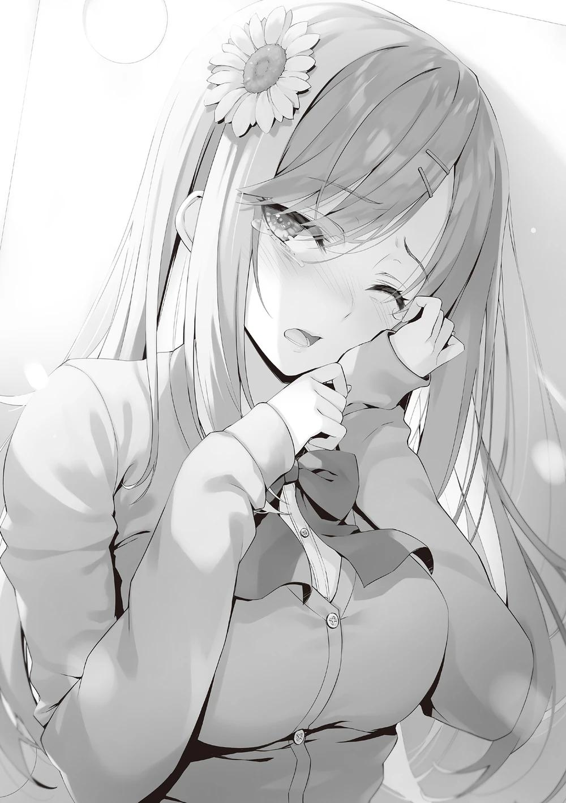
Luego esperamos en silencio unos minutos hasta que Asahina recuperó la compostura.
―...Sí. Ya estoy bien ―Contestó Asahina, tosiendo una vez y murmurando tímidamente.
―Lo siento.
―No te disculpes. Fue culpa mía por asustarte.
―No me refería a eso. Te mostré lo mal que me veo.
No indagué en el motivo de las lágrimas porque no quería entrar en algo irrelevante. Sin embargo, tal vez esto la molestó. Asahina empezó a hablar ella misma del motivo.
―Esta mañana fue Succhii- Mejor dicho, Moeka quien dejó la escuela.
Suchi Moeka de la Clase C". [2]
(TL Nota : Succhii se escribe con Katakana ( スッチー ), lo que implica que se trata de un apodo)[2]
―¿Se va a dar de baja en esta época del año? No es una sanción por un examen extraordinario, ¿verdad? ¿Se retiró voluntariamente?
No debió haber ningún examen especial entre los estudiantes de tercer año en los últimos dos días.
Sin embargo, Asahina negó con la cabeza.
―La razón, dijo, fue que cometió una falta grave. Dijo que la estaban castigando por su comportamiento disruptivo. Quería conocer los detalles, así que pregunté a la profesora, pero insistió en que no podía decírmelo.
Así que por eso estuvo en la sala de profesores.
En cuanto a Asahina, que estaba en la clase A, no le importaba que expulsaran de la escuela a alguien de la clase C. Sin embargo, no hacía falta decir que eran amigas más allá de los límites de sus clases, a juzgar por la forma en que hablaba.
―¿No pudiste hablar con ella?
―Moeka se fue ayer y, cuando me avisaron esta mañana, ya no estaba en la residencia. No hemos tenido ningún contacto con ella... He estado preguntando por ahí desde entonces para ver si alguno de los alumnos de la clase C sabía algo, pero al final, no me enteré de nada.
O nadie sabe la razón por la que Suchi se fue, o alguien lo sabe y lo está ocultando.
La generación de Horikita Manabu, la generación de Nagumo, la generación de Horikita Suzune, y estudiantes de primer año como Nanase y Amasawa.
Sólo sabía un poco de cada uno de los grados escolares, pero era obvio que la generación de Nagumo era la más propensa a sufrir el expulsiones.
Aun así, resultaba un poco preocupante ver que los alumnos se retiraban por motivos ajenos al examen especial. La escuela no daba detalles, seguramente porque lo consideraba una infracción tan grave que podría tener repercusiones negativas.
―Sólo estoy haciendo conjeturas, y no tengo ni idea de qué tipo de norma infringió, pero tengo la sensación de saber por qué lo hizo. Todos los alumnos de la clase B e inferiores piensan constantemente en formas de colarse en la clase A todos los días. Estoy segura de que Moeka hizo algo que no debería haber hecho.
―En tu generación, Asahina-senpai. ¿No es Nagumo-senpai quien está a cargo de todo?
Si Nagumo los reconocía, estaban en la Clase A. Si no, serían eliminados.
Esa era la forma de sobrevivir de los estudiantes de tercer año, como se había demostrado hasta ahora.
Sin embargo, la cara nublada de Asahina sugería que había algo más.
―¿Así que hay otra forma que permitiría a los de tercer año ascender a la Clase A?
―...Yo diría que es más bien una laguna jurídica. ¿Cómo es tu relación con Nagumo... Ayanokouji-kun?
―¿Qué quieres decir con 'cómo'? Normalmente no es buena, y no ha cambiado.
―Esto es algo que los otros estudiantes del grado no saben...
―Ah, ya veo. No se lo diré a nadie ni nada por el estilo.
Cuando le dije esto para tranquilizarla, se sintió aliviada y empezó a hablar de la realidad de su tercer año.
Quizá sentía la necesidad de desahogarse porque su amiga fue expulsada de la escuela.
―El año pasado, cuando Nagumo se convirtió en el presidente del consejo estudiantil, se dijo que la clase A iba a ganar seguro, y que no había esperanza para la clase B e inferiores. Por eso todo el mundo se alegró cuando Nagumo hizo la promesa de que los subiría a la clase A si tenían éxito y capacidad.
Sin embargo, no era un trato tan amable. En este sistema escolar, muy pocos alumnos podían pasar a otra clase aunque acumularan suficientes puntos de clase.
En medio de la conversación, Asahina exhaló y sacudió ligeramente el cuerpo al mismo tiempo.
Tenía la esperanza de graduarse junto con Moeka en la clase A.
Ese sueño no se hizo realidad y ella dejó la escuela antes de graduarse.
―¿Qué dijo Nagumo-senpai sobre la retirada de Sachi?
―Nada. De hecho, puede que ni siquiera le importe. Hubo un anuncio del profesor, pero existe la posibilidad de que ni siquiera se diera cuenta.
Así que no presta atención a los insignificantes que se van.
No me desagrada la forma de pensar de Nagumo.
―Si no te importa, ¿podemos cambiar de sitio un rato? Está haciendo un poco de frío.
Por lo visto, la adrenalina que recorrió su organismo durante el rato que estuvo en la sala de profesores se calmó, y su cuerpo recordó el frío.
A diferencia de las aulas con calefacción y de la sala de profesores, en el pasillo hacía frío.
La temperatura empezaba a bajar a medida que se acercaba la noche.
Como tenía muchas preguntas para Asahina, decidimos ir a un café del centro comercial Keyaki, aunque estaba un poco lejos.
PARTE 4
Asahina, que había pedido té caliente, sostuvo la taza con ambas manos y se la llevó a la boca de forma exquisita.
―Así que, para continuar con lo que hablábamos antes, dices que el descontento y la oposición a Nagumo-senpai son cada día más activos, ¿verdad?
―Sí. No sé exactamente cuánta gente está involucrada. Básicamente, esa información no se revela a la Clase A. No sabes nada del contrato que Nagumo firmó con los estudiantes de tercer año, ¿verdad?
―Pensé que estaban usando algún método para unir a los de tercer año, pero nada concreto.
―Entonces empecemos por ahí.
Dicho esto, Asahina se tomó un momento para mirar a su alrededor y asegurarse de que no había nadie cerca antes de explicar los detalles del contrato.
Por primera vez, el contrato de Nagumo Miyabi con muchos de los estudiantes de tercer año fue revelado.
● La transferencia personalmente a Nagumo Miyabi del 75% de los puntos privados ganados cada mes.
● Cumplir las instrucciones de Nagumo Miyabi y no tener un comportamiento hostil.
● Para ganarse el derecho a adquirir entradas, uno debe reunir un cierto número de puntos que haya ganado y por los que haya sido reconocido.
● Los fondos a transferir deben ser entregados el día anterior a la finalización de la clase.
● Si una persona desobedece Nagumo incluso después de ganar un boleto, su derecho será revocado.
● Los estudiantes que cumplan las cinco condiciones anteriores podrán optar a los billetes por valor de 20 millones de puntos.
Y una cosa más.
―Nagumo abandonará decenas de millones de puntos y dejará que los estudiantes que firmaron el contrato lo sorteen al final.
Esto significa que, aunque no consiguieran un boleto a través de este contrato, todavía tenían la oportunidad de ir a la Clase A con una lotería.
El contrato que Nagumo firmó con los alumnos de las clases inferiores a la suya era seguro porque el estatus de la Clase A, que Nagumo lideraba, era bueno...
Como era imposible que un individuo acumulara 20 millones de puntos, se reunían puntos privados de muchos otros y se convertían en billetes de traslado de clase.
Los estudiantes de la clase B e inferiores solían tener un cero por ciento de posibilidades de graduarse dentro de la clase A, pero con esta redistribución de
la riqueza, sus posibilidades aumentarían, aunque sólo fuera en un pequeño porcentaje.
El hecho de que algunos alumnos, como Kiriyama, ya se hubieran ganado el derecho a hacerlo sugería que estaba teniendo algún efecto. Un porcentaje del 75% era muy alto, pero esto era importante para la propuesta de dar entrada al mayor número posible de estudiantes. Al mismo tiempo, era ventajoso para Nagumo. Al no permitirles manejar grandes sumas de dinero, Nagumo les disuadió de iniciar una rebelión.
―Así que obligó a esto a la clase B e inferiores.
―Sí. Sólo Nagumo sabe exactamente cuántos estudiantes firmaron el contrato. Pero creo que la mayoría de los estudiantes estuvo de acuerdo. Y
nosotros, la Clase A, también le dimos el 50% de nuestros puntos, aunque no sea por contrato.
Sólo los alumnos de la clase A que estaban seguros de ganar podían utilizar libremente cada mes la totalidad de sus puntos privados. Era un derecho natural, pero los de las clases inferiores podían sentirse insatisfechos.
Nagumo comprendió esta parte de la situación, por lo que fue capaz de ajustarla y controlarla.
En el tercer año, la clase A era la única líder. Por lo tanto, aunque se pagara la parte del 50%, sería más que la cantidad total del 75% recaudada de las otras tres clases. Nagumo, que tenía el poder de decidir a su antojo los resultados de los exámenes especiales, era el rey que lo controlaba todo.
―Resulta que me colocaron en la misma clase B en la que Nagumo estaba originalmente. Trabajó duro para ascenderme a la clase A y creó el ambiente en el que estoy ahora. Sé que no estoy cualificada para decir esto, pero me he estado aprovechando de ello todo este tiempo...
Tenía miedo de decirlo, pero sacó las palabras del fondo de su garganta.
―Me enteré de que Moeka dejó la escuela por el ambiente que creó Nagumo, aunque fuera indirectamente. Cuando pensé en eso, se me saltaron las lágrimas...
Esa era la causa, sin duda, de la cara de llanto que Asahina mostró antes en el edificio de la escuela.
No creía que hubiera una relación directa entre Suchi y Kiryuuin, pero lo que Asahina dijo sobre Nagumo siendo 'indirectamente' la causa podría haberlo implicado.
―Asahina-senpai, ¿puedes ayudarme?
―¿Ayudar? ¿Con qué?
―¿Cuál es tu relación con Yamanaka-senpai en la Clase 3-D?
―¿Yamanaka-san? He hablado con ella, pero no nos llevamos especialmente bien. No creo que pueda ayudarte...
"No nos llevamos especialmente bien". Escuchar esas palabras fue bastante conveniente para mí.
―Ya que eres una estudiante de tercer año, es más importante para mí que hables objetivamente sobre Yamanaka.
―¿En serio?
Saqué mi celular y mostré la OAA de Ikuko Yamanaka, una estudiante de tercer año de la Clase D. Era la típica estudiante de clase D: por debajo de la media en todas las habilidades. Nada digno de mención.
―¿Tiene un círculo social amplio?
―Bueno, no lo sé. Creo que se lleva bien con sus compañeras de clase, pero no es muy extrovertida. No es popular entre todo el mundo.
No quería fiarme sólo de la evaluación de Asahina, pero me pareció seguro decir que no tenía más de lo que indicaba la OAA.
―Lo que voy a decirte es extraoficial, por favor.
―Tiene gracia. Los dos estamos hablando en secreto.
―Sí.
Le conté a Asahina la situación de Kiryuuin, a quien casi acusan de robar en una tienda. Al principio, Asahina se sorprendió, pero pronto empezó a entender la situación.
―Ya veo. Así que querías hablar conmigo para hacer una investigación sobre los estudiantes de tercer año.
―Eres la única persona en la que pensé que podía confiar.
―Me alegro un poco. Cuando estoy mucho con Nagumo, es más probable que sospechen que sé más.
Bueno, si lo piensas, no es irrazonable suponerlo cuando ella tiene una conexión cercana con Nagumo.
―¿Qué piensas de este caso desde tu punto de vista?
―Sólo he hablado con Kiryuuin-san unas pocas veces en los últimos tres años, así que no sé mucho sobre ella. Sin embargo, seguramente es exactamente como te la imaginas.
―Sí, eso es cierto.
―No digo que no haya ninguna posibilidad de que Kiryuuin-san y Yamanaka-san se guarden rencor, pero otra cosa es pensar en inculparla por robar en una tienda por venganza. Si se descubriera, podrían expulsarte de la escuela, ¿verdad?
―Kiryuuin-senpai se dio cuenta enseguida, y Yamanaka-senpai acabó fracasando. Si se hubiera comunicado inmediatamente a la escuela, como dijiste, la posibilidad de expulsión podría no haber sido nula.
En otras palabras, algo inexplicable estaba ocurriendo desde el principio de este incidente.
―Pero... Ya veo. Creo que recuerdo algo.
―¿Lo recuerdas?
―Sí. Creo que fue justo después de que casi la acusaran de robar en una tienda. Vi a Kiryuuin-san pisoteando a un chico de camino a casa después de que ella lo hiciera caer.
―¿Lo pisoteó?
Kiryuuin-san era normalmente elegante y serena. Era difícil de imaginar, pero...
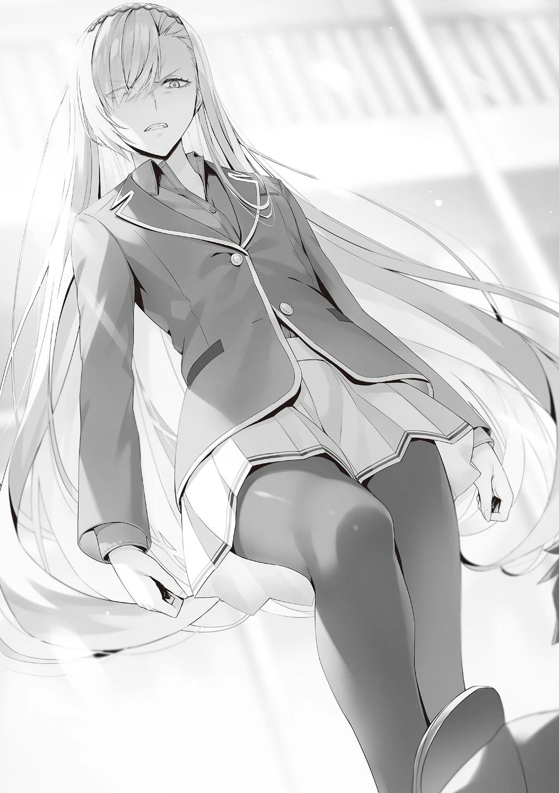
―Probablemente estaban obstaculizando el intento de Kiryuuin-san de ir tras Yamanaka-san. Estaba bastante enfadada y lo empujaba como si quisiera interrogarlo. No sé por qué el chico intentaba proteger a Yamanaka-san, pero no pude evitar sentirme mal. Debió de tener una experiencia aterradora.
―Por cierto, ¿a quién estaba presionando?
―¿Era Anazai-kun de la clase D, creo?
Un nombre nuevo. ¿Estaba manipulando a Yamanaka y tratando de sabotearla, o sólo trataba de protegerla de Kiryuuin como compañero de clase?
Todavía había que averiguarlo.
―Quiero hablar con Yamanaka-senpai, ¿puedes contactar con ella por mí?
―¿Qué? Eh, sí. No es tan difícil...
―Entonces, por favor...
En cuanto se puso en contacto con Yamanaka a través del chat, el mensaje se marcó como leído.
―¿Puedo decirle que quieres verla?
Asentí con la cabeza y le dije que no había problema y entonces envió otro mensaje.
―Me leyó pero no me contestó.
Asahina-senpai se quedó mirando su teléfono un rato, pero después de unos minutos, recibió un mensaje.
―Si no te importa esperar, ella dijo que estará aquí en unos 30 minutos.
―No hay problema, esperaré. Gracias.
―No pasa nada. Yo también tengo curiosidad por saber la verdad.
Como tenía tiempo, decidí preguntarle un rato a Asahina-senpai sobre su vida escolar, exámenes especiales, etc.
PARTE 5
Faltaban pocos minutos para la hora acordada. Justo cuando me quedé sin bebida en la taza, un estudiante varón se acercó a nosotros.
―Asahina, ¿eres Ayanokouji?
―¿Qué? ¿Tachibana? Sí, pero...
―Voy a molestarlos un rato.
Un estudiante llamado Tachibana sacó bruscamente una silla y se sentó con las manos vacías. Luego puso inmediatamente los brazos sobre la mesa y se inclinó hacia delante para hablarme.
―¿Qué quieres con Yamanaka?
Tachibana Kento. Es compañero de Yamanaka en la clase 3-D.
Esperaba que apareciera Anazai, pero resultó ser otra cara nueva.
―Espera un segundo, ¿eh? ¿Por qué dices eso...?
Asahina-senpai estaba visiblemente confundida ante esta repentina aparición.
―Supongo que recibiste un mensaje de Yamanaka-senpai, ¿verdad? ¿Te pidió que comprobaras las cosas?
―¿Eh? Yo soy el que hace las preguntas aquí, ya sabes.
No mostró ningún signo de flaquear en su postura agresiva, tal vez porque es mayor. Quizá fuera alguien superior a Anazai en términos de fuerza física y mental.
―Se trata de Kiryuuin-senpai, ¿sabes?
―¿Qué tiene que ver contigo?
―No estoy directamente involucrado, pero Kiryuuin-senpai me pidió que averiguara la verdad.
―¿Eres una especie de detective o algo así? Si es así, dile lo que Yamanaka-san le dijo antes.
―Que Nagumo-senpai te envió para incriminarla por robar, ¿verdad?
―Cierto.
―Eh, ¿eso es verdad, Tachibana? No puedo creer que Nagumo la dejara hacer algo así.
―¿No lo puedes creer? Nagumo siempre es el que nos obliga a hacer esas cosas. Nos esclaviza y nos usa como si fuéramos sus extremidades.
Por su aspecto, al menos parecía que eran diferentes de la facción que apoyaba a Nagumo. No estaría fuera de lugar que se llamaran a sí mismos una facción anti-Nagumo.
―No tengo más remedio que seguirlo, por mucho que no me guste. Igual que Yamanaka.
Tachibana exhaló aburrido e inclinó ligeramente la cabeza.
―Si lo entiendes, no vuelvas a involucrarte con Yamanaka. ¿De acuerdo?
―Mis disculpas, pero tampoco puedo hacer eso. Nagumo-senpai no aprobó este asunto.
―Puedes dudar de mí todo lo que quieras, pero es la verdad. No podemos ir contra Nagumo.
―Tienes un contrato con Nagumo-senpai, ¿verdad?
Tachibana miró fijamente a Asahina y le lanzó una mirada como preguntando:
"¿Se lo dijiste incluso a él?".
―Entonces sabes de lo que hablo.
―Estoy seguro de que podrías haber reunido puntos privados y redistribuirlos en grandes sumas de dinero que pudieran transferirse a diferentes clases. ¿Por qué tanta gente se tomó la molestia de seguir las instrucciones de Nagumo?
―Tú no lo entiendes. A nosotros, la clase D y C, no nos quedaban puntos de clase antes de que se hiciera el contrato. Aunque toda la clase trabajara junta durante un año, nunca habríamos reunido 20 millones. Pero si firmas un contrato, te dejan ganar algunos exámenes especiales. Eso significa que obtienes puntos de la clase. ¿Qué opción tendríamos si no firmáramos? Y si toda la clase ignorara el contrato de Nagumo, tendríamos que luchar contra él a cada paso.
¿Y entonces qué? Nos habrían quitado los puntos de clase restantes y los puntos privados mensuales habrían estado en cero durante mucho, mucho tiempo.
Aprovechando la oportunidad, Nagumo sacó el máximo partido de la fuerza y la ventaja de su clase.
―A ella le dieron una vida escolar estable e incluso la oportunidad de graduarse con la clase A si era aceptada por Nagumo. Sólo una idiota como Kiryuuin podría rechazar esto.
Estando bajo el control de Nagumo, podías mantener tus puntos de clase hasta cierto punto.
Aunque fueras explotado por el pago del 75%, siempre podías mantener tu asignación cada mes.
Una vez hecho el contrato, sería difícil romperlo.
Aunque se rebelaran una o dos personas, alguien las descubriría por algún soplón.
―Incluso si Nagumo gastara mucho dinero, nadie podría quejarse.
―Bueno... No digo que no haya nada por lo que estar descontento. Pero como dijiste, no podemos quejarnos. Está bien para los que tienen la capacidad, pero para los que como yo no tienen esperanza de llegar a la clase A sin depender de alguien, el último recurso es confiar en la lotería.
Aunque los puntos privados se exprimieran sin cesar hasta la graduación, siempre quedaba la lotería a la que apostar.
Aunque sólo tuvieras un boleto, había una posibilidad entre 100 de ganar.
No estaba mal, ¿verdad?
―¿Una de sus instrucciones fue incriminar a Kiryuuin-senpai por robar en una tienda?
Tachibana mantuvo la mirada baja por un momento, luego asintió en silencio.
―Soy uno de los intermediarios. Si consigo que Kiryuuin confiese que robó en una tienda, dijo que me dará el billete de traslado.
―No entiendo eso de 'intermediario'. Cuanta más gente pongas por medio, más se filtrará el hecho de que intentaste hacerla robar en una tienda. Además, si un gran número de personas se enfrentan juntas a un mismo evento, la contribución de cada uno se dividirá de forma natural.
Era menos arriesgado para Nagumo acercarse a una chica como Yamanaka desde el principio.
¿Dónde estaba la necesidad de pasar las riendas de Nagumo a Tachibana y de Tachibana a Yamanaka?
Este punto estaba atascado en el fondo de mi mente y no se soltaba.
Y si me preguntaran si vale la pena confiar en todas las declaraciones de Tachibana, diría que no. En el fondo, parecía decir la verdad, pero hablaba con demasiada franqueza.
―Nagumo-senpai te dijo que no se lo contaras a nadie, ¿verdad?
―Por supuesto. Sin embargo, cuando estamos en problemas, no se nos puede culpar si tenemos que usar su nombre. No creo que Yamanaka y yo seamos... responsables, si se me permite decirlo, o...
Cuando lo presionaron, simplemente confesó el crimen. La primera vez que apareció en escena, era todo altanería, pero puede que tuviera una parte de él que no quería que le pincharan o una parte de él que tenía un lado débil atisbándose.
―Tachibana-senpai, puede que no seas el autor directo, pero si esto se hace público, la escuela también te juzgará.
―¿Eh? No hay forma de que Nagumo-san haga esto público.
―Nagumo-senpai puede tener la culpa, pero Kiryuuin-senpai está enojada.
Se puede decir de verla durante los últimos tres años que si quisiera, mordería a quienquiera que se enfrentara a ella, ¿no?
―Eso es... Anazai también estaba bastante asustado...
―Recibiste instrucciones del Presidente del Consejo Estudiantil Nagumo y consultaste con Yamanaka-senpai, una chica que podía acercarse a Kiryuuin-senpai. Te dijo que si tenías éxito, te daría reconocimiento. Esa fue toda la verdad. ¿Puedes jurarme que estás completamente seguro?
Puse el celular en modo vídeo y acerqué la cámara a los ojos de Tachibana.
―Es por eso que...
―¿Puedes jurármelo?
Cuando volví a acercarle el celular como para recordárselo, Tachibana lo apartó con fuerza.
A continuación, detuvo la grabación bruscamente.
―Te digo que estoy seguro.
―Entonces no hay por qué asustarse. ¿Por qué no quieres que lo grabe?
―Es... que... ¡Dame un respiro!
―¡Eh, Tachibana-kun!
Asahina intentó detenerlo, pero se fue sin mirar atrás.
―Creo que quería decir algo. Me pregunto qué era...
―No pasa nada. Por su reacción pude hacerme una idea aproximada de lo que hablaba.
―¿Ah, sí? ¿Quieres decir que sabes quién ordenó a Tachibana-kun y a los demás?
Tachibana acató obedientemente la orden y la llevó a cabo.
Cuando falló y Kiryuuin lo interrogó, mencionó el nombre de Nagumo.
Aun a riesgo de desestabilizar su posición, se negó a admitir nada más salvo el hecho de que lo había efectuado.
―Muchas gracias por lo de hoy, Asahina-senpai.
―Ummm... Me alegro de que lo hayas descubierto Ayanokouji-kun...
¿Puedes contármelo...?
―No hagamos eso ahora. No quiero involucrarte.
Aquello la molestaba de principio a fin, pero era mejor guardarlo para mí por el momento.
PARTE 6
Aunque me llevó algún tiempo, pude obtener información importante que me llevó a la verdad del caso del hurto.
Con la ayuda de Asahina, no perdí el tiempo, pero por eso quise detenerme un momento.
El hecho era que estuve a punto de encontrar una solución el mismo día en que me embarqué en mi investigación.
Por supuesto, podía atribuirlo a mi buena suerte, incluidas las coincidencias involuntarias.
Por eso no estaba satisfecho.
No era que los demás -Asahina, Yamanaka y Tachibana- mintieran ni nada por el estilo.
¿Qué pasará si le comunico los resultados a Kiryuuin?
¿Y cuál es el objetivo de la persona que orquestó este escenario?
Dependiendo de la decisión y el resultado, existía la posibilidad de que afectara al tercer semestre.
Decidí enviar un mensaje a Kiryuuin sobre lo que encontré, excluyendo el quid de la cuestión.
A continuación, le sugerí qué hacer a continuación. La cuestión era si Kiryuuin estaría de acuerdo o no, pero como quería una solución, seguramente lo estaría.
De regreso del centro comercial Keyaki, llegué al dormitorio.
Como esperaba, no había ninguna llamada de Kei en mi celular, y no me esperaba en el vestíbulo.
Me pregunto si Kei será capaz de mantener las distancias conmigo y disminuir su relación conmigo.
No, eso era algo en lo que no tenía que pensar todavía.
Mientras ella siguiera actuando como un parásito del huésped, no sería capaz de escapar y actuar de forma independiente.
El ascensor llegó al primer piso, así que planeé subir e ir al cuarto.
Debería concentrarme en el caso de Kiryuuin más que en el de Kei. Ese era el plan, pero entonces me topé con una página web, que encontré en mitad de la noche.
Eso fue lo que pensé...
―Bienvenido de nuevo, Ayanokouji-kun.
Al salir del ascensor, vi a Ichinose con un abrigo y sonriéndome, con algo de frío.
Parecía que me estaba esperando delante de mi habitación.
―¿Qué pasa?
―¿Hm? Sólo quería verte. ¿Te molesto?
―No, para nada. Es sólo que has estado esperando mucho tiempo, ¿no?
Normalmente habría llegado a casa a las cinco, pero ya eran cerca de las seis porque tuve que dar un rodeo para ver a Asahina y a los demás alumnos de tercero.
Ichinose sacó el celular con curiosidad para ver la hora.
―¿Qué? ¿Cuándo se hizo tan tarde? No me había dado cuenta.
Pensé que lo que dijo podría deberse a su preocupación por mí, pero no fue así.
―¿Cuánto tiempo llevas ahí?
―Uh, un poco después de la escuela. Así que eso sería un poco después de... las 4:30, supongo.
Así que estuvo de pie por lo menos una hora y media.
Dijo que quería venir a hablar conmigo pero no lo hizo porque no quería interrumpirme.
―Deberías haberme avisado antes.
Aunque no pudiera verla de inmediato, al menos podría haberle dicho cuándo llegaría.
―No, no quería molestarte.
No creía que eso fuera una cuestión de bien o mal, pero si a ella no le molestaba esperarme, no había nada más que decir.
―Oye, no hay nada de lo que particularmente necesite hablar contigo, pero... ―Preguntó vacilante―. ¿Te reconciliaste con Karuizawa-san?
―No, no me he reconciliado.
Cuando contesté, Ichinose murmuró:
―Ya veo.
La expresión de Ichinose era alegre, triste o algo más.
Su rostro reflejaba cualquiera de estas expresiones, pero era difícil ver sus verdaderos sentimientos.
―Entonces... ¿puedo ser egoísta un momento? Me gustaría tener una pequeña charla contigo. Sólo si no te importa...
Estoy seguro de que no era sólo para saludar, ya que se tomó el tiempo de esperarme.
―Me parece bien. Si no te importa, ¿quieres pasar a mi habitación?
―¿Estás seguro?
No había razón para negarme. Como Kei no se puso en contacto conmigo, no tenía otro sitio donde estar el resto del día. Este tampoco es un lugar en el que pueda obligarla a estar fuera y hablar.
No podía dejar que su cuerpo se enfriara más de lo que ya estaba, así que giré la llave en la cerradura y abrí la puerta principal.
―Estoy un poco nerviosa. Perdona que te moleste.
Cuando Ichinose entró en la habitación diciendo eso, debió notar inmediatamente la diferencia con respecto a antes.
―La última vez que viniste a mi habitación fue en un día lluvioso.
―Gracias por aquella vez. Estaba empapada por la lluvia...
Me quité los zapatos primero, luego Ichinose, y entró en la habitación ordenadamente.
Cuando se encendieron las luces y toda la habitación quedó brillantemente iluminada, Ichinose hizo un ruido.
―Ah-Es una habitación muy bonita, ¿verdad?
La mirada de Ichinose se fijó en los cambios de la cama y sus alrededores mientras contestaba.
No había grandes cambios, como comprar muebles o redecorar.
Sólo peluches, espejos, cojines, etc., que estaban un poco fuera de lugar en la habitación de un hombre.
Aquí había muchas más cosas pequeñas que antes.
Todas habían sido traídas y dejadas por Kei, que entraba y salía de la habitación.
Si alguien que no conociera la situación de esta escuela las viera, no le extrañaría que nos confundiera con dos personas viviendo juntas.
Si mirabas en la cocina, te dabas cuenta fácilmente de que las tazas y los palillos eran de colores diferentes.
Ella sabía que Kei y yo somos novios, y debió suponer que la situación en la habitación había cambiado. De hecho, no se le veía ninguna confusión en la cara.
―Por favor, siéntese tranquilamente. Te serviré una bebida caliente.
¿Cacao?
―Sí. Gracias.
Ichinose sonrió feliz mientras le ofrecía la misma bebida de aquel día.
La mejor forma de calentar un cuerpo frío es desde el interior.
Sin embargo, en la habitación estaba haciendo bastante frío, así que encendí la calefacción y activé el humidificador.
―Creo que pronto se calentará.
Asintiendo, Ichinose se quitó el abrigo y lo puso a sus pies.
―Las chicas son impresionantes, ¿verdad? Siempre van y vienen de la escuela con faldas. Debe de hacer frío.
―Desde luego que hace frío, pero estoy tan acostumbrada a llevar falda que no le he prestado mucha atención.
Después de contestar, miró un marco con una foto de Kei y mía que había en mi habitación, se acercó a él y se quedó mirándolo un buen rato.
―¿Puedo preguntarte cómo te enamoraste de Karuizawa-san?
―¿Te interesa?
―Sí. No tenía mucho contacto con ella, pero sabía que salía con Hirata-kun durante nuestro primer año. Nunca pensé que saldría contigo.
Hasta muchos estudiantes de la clase de Horikita seguían desconcertados. Si fuera otra clase, sería más difícil averiguar por qué.
―No es que no quiera contestar, pero es difícil hacerlo. Nunca me había enamorado, y aunque quisiera hablar de ello en detalle, no podría. Quizá fue una progresión natural de conocernos en clase.
No podía hablar de cosas concretas, así que me limité a usar palabras comunes y corrientes.
―Karuizawa-san es linda, ¿no?
―No lo niego.
El agua de la olla estaba hirviendo, así que vertí el agua caliente y mezclé el polvo con una cuchara para hacer cacao.
―Toma.
―Está caliente.
Envolvió la taza con las manos, que habían estado frías, y exhaló.
―El otro día te arrastré al gimnasio y esas cosas por mi egoísmo. ¿Te importó?
―Al principio te propuse la idea pidiéndote el día libre. Y...
Abrí el cajón de mi escritorio y saqué un papel.
―La experiencia fue tan buena que estoy pensando en sacar esto en mi próximo día libre.
―Ah, una suscripción al gimnasio...
Ya había rellenado el formulario con mi nombre, mi número de identificación de estudiante y mi selección mensual de cursos.
―Siempre llevo una vida de complacencia propia. Pensé en hacer algo de ejercicio.
―Ya veo. Me alegra oírlo.
Hasta el viaje escolar, Ichinose mostraba a menudo un rostro abatido.
Sin embargo, desde la última vez que pasamos el descanso juntos, había sonreído mucho más.
―Probablemente nos veamos más a menudo en el gimnasio a partir de ahora, así que cuento contigo.
―¡Sí! Yo también cuento contigo... Ah, claro. También podremos vernos en el gimnasio, ¿eh?
Ichinose bebió cacao y entrecerró los ojos alegremente.
―En realidad, ya sabes, yo...
―¿Hmm?
Ichinose me miró a los ojos como si hubiera estado pensando en algo.
―No te estaba esperando delante de la habitación sólo porque quisiera verte. Tenía algo que realmente necesito decirte... ¿Puedes sentarte a mi lado?
Dio unas ligeras palmaditas con la mano en el espacio vacío de la cama.
Sabía que hablaba en serio, así que me senté junto a ella para cumplir su deseo.
―La razón por la que me reuní contigo el domingo pasado fue para ponerle fin.
―¿Poner fin?
―Poner fin a mis sentimientos por ti.
Decidida, Ichinose no hizo ademán de apartar la mirada.
―Tienes a alguien a quien quieres, Karuizawa-san, así que pensé que ese día sería nuestra primera y última cita.
No había rastro de tristeza en el rostro de Ichinose al decir esto.
¿Era eso lo que Ichinose estaba pensando el día que compartimos nuestro tiempo en el gimnasio?
―Se acabó.
Ichinose asintió enfáticamente.
―No nos veremos más en privado. Pensé que era lo correcto.
―Si es así, entraría en contradicción con el momento que tenemos hoy aquí.
Aunque no fuera un día libre, es innegable que es un momento privado.
―Pero estaba equivocada. Esa forma de pensar no era correcta. Me di cuenta de que nada cambiaría si seguía haciendo eso.
Todavía no sé a qué conclusión llegó.
Pero supongo que ese cambio de pensamiento es la razón de la Ichinose brillante que tenemos ahora.
―No sé qué debo hacer. ¿Qué debo hacer a partir de ahora...?
La sonrisa parecía ser la misma de siempre, pero también parecía ser diferente.
Hasta ahora, interpretaba a Ichinose como una persona relativamente fácil de entender, cuya sonrisa era fácilmente visible en su rostro.
Por supuesto, a veces mostraba bien su cara de póquer en los exámenes, pero al menos en su vida privada, eso me había parecido.
Sin embargo, actualmente, Ichinose mostraba a menudo una cara que no se podía leer.
―Ese día, me hice a la idea de que nunca te preguntaría por tu novia, Karuizawa-san, delante de ti.
―¿Por qué?
―Porque me dolería en el corazón y me oprimiría el pecho. Pensé que si preguntaba, me dolería ―murmuró Ichinose, eligiendo cuidadosamente sus palabras como si se estuviera exponiendo ante mí.
―Pero después del gimnasio, no pude resistirme a preguntarte cuál de los dos se enamoró primero.
Así es, me lo preguntó. Sabía cómo se sentía Ichinose en ese momento.
―¿Fue difícil?
―Por extraño que parezca, no lo fue. Fue en ese momento cuando me di cuenta de que estaba equivocada.
―¿De qué te diste cuenta? ¿Qué era lo correcto para ti?
―¿Quieres saberlo? Te lo diré.
Ichinose respiró lentamente y me miró a los ojos mientras me sentaba a su lado.
―Todavía te quiero.
Ichinose no salió corriendo. No quería atraparme para luego dejarme ir. Me miró con esos ojos.
―En ese momento, me di cuenta de lo mucho que te quiero.
Fue la primera y última cita que aceptó con la idea de apartarse.
Sin embargo, Ichinose llegó a la conclusión contraria.
―Al mismo tiempo, pensé que no podía quedarme en la oscuridad. Tenía que cambiar desde la base.
Ese fue el momento que cambió a Ichinose para dejar de estar en la oscuridad.
―Eh... ¿Puedo tocarte la cara?
―No recibirás ningún premio por tocarme.
Cuando dije eso en broma, Ichinose rio suavemente y asintió con la cabeza.
Entonces extendió la mano derecha y me tocó la mejilla.
Con un ligero esfuerzo, giró mi cara hacia ella.
―Nunca le he hecho esto a nadie. Nunca había sentido esto por nadie. He estado nerviosa todo el tiempo y, en algún lugar de mi interior, siento dolor...
pero ahora soy tan feliz. Sólo tener a mi lado a la persona que amo me llena el corazón.
Quería preguntarle a Ichinose, que me lo dijo con tanta sinceridad.
―Te lo pregunté en el viaje de estudios, ¿verdad? Te pregunté si querías algo.
―Sí. Lo que quería... era llegar a la clase A. Una meta que pudiera alcanzar con mis amigos. Perdí de vista eso, y casi me quebré y dije que no podía hacerlo más. No, estaba destrozada. Llegué a pensar que no me quedaba más remedio que dejar esta escuela.
―Ya no, ¿eh?
―Ya no. Quiero quedarme. Quiero aspirar a la clase A. Quiero lograrlo.
Una mano en mi mejilla.
―Y quiero una cosa más. A quien amo... Ayanokouji-kun.
―Creo que lo sabes, pero yo...
―Sí. Tienes a Karuizawa-san. Lo sé, así que no te pediré nada más que eso ahora, pero...
―¿Pero?
―Las cosas serán diferentes a partir de ahora. Voy a convertirme en la clase de persona en la que te fijes.
Aunque sus mejillas se sonrojaron, su mirada inquebrantable permaneció fija en mí. No dio ese paso final que iría en contra de su moral a pesar de estar enamorada de alguien que ya tiene pareja. Si hubiera cruzado esa línea, habría tenido que detenerla, pero fue capaz de contenerse.
Este es el núcleo de Ichinose Honami.
―Ayanokouji-kun, obsérvame a partir de ahora.
―Iba a observarte, aunque no quisieras.
―Es... al final del año escolar.
―Sí. Entonces, cuando nos volvamos a ver, te diré una cosa.
―Mi determinación se rompió una vez, pero ahora está absolutamente bien.
No necesito interrogarte sobre eso.
Mientras me sentaba a su lado, pude sentir la pasión y la fuerza que desprendía Ichinose.
No sé cómo será el resultado, pero sin duda Ichinose experimentó un gran cambio mental.
Se basa en una intensa dependencia que era diferente de la de Karuizawa Kei.
Esta dependencia, que podía ser un arma de doble filo, sin duda le dio a Ichinose una gran fuerza.
Por naturaleza, deseamos que la persona a la que amamos nos responda.
Aunque fuera la primera vez, queremos que nos digan "te amo".
Queremos tocarlos y saber qué pasa después.
Pero Ichinose no rogó.
Quedó claro que está decidida a ganarse esta afirmación para sí misma.
Lentamente, su mano me abandonó.
―Me voy a casa.
―Te acompaño.
―Tienes que reconciliarte con Karuizawa-san lo antes posible.
―Yo me encargo.
Ichinose, con su abrigo en las manos, se puso los zapatos y abrió la puerta principal con pasos ligeros.
Luego agitó suavemente la mano y la puerta se cerró.
Quedó el silencio y un ligero aroma a cacao y cítricos.
Me preguntaba qué clase de mundo crearía Ichinose.
Cómo influirá en la gente que la rodea y cómo cambiará mis propios pensamientos.
Espero con más impaciencia la vida escolar.
LO ESPERADO Y LO INESPERADO
SÓLO QUEDABAN DOS DÍAS del segundo semestre. Hoy era por fin el día del examen especial de redacción global colaborativa, que suponía un enfrentamiento directo con la clase A. Aunque había normas especiales, eran las mismas que las del examen parcial y final habitual.
Por la mañana, muchos de los alumnos que tenían la calificación académica C o inferior se reunieron en el aula y se esforzaron por estudiar hasta el final, todo lo que el tiempo les permitió.
Keisei y Horikita, que ya habían completado todos sus estudios con antelación, vigilaban a estos alumnos, dándoles consejos mientras realizaban minuciosas comprobaciones finales.
Muchos estudiantes podían pensar que llegaba la parte más difícil del examen, pero no era cierto.
Como dice el refrán, eran dos partes de trabajo por ocho de preparación, y la mayor parte del trabajo ya se había hecho para preparar el examen. La actitud antes de estudiar, la concentración para estudiar. El examen en sí era sólo una quinta parte del trabajo comparado con la preparación.
Y cuando termina, te das cuenta de que la mayoría de las cosas no eran para tanto.
El procedimiento del examen se basaba en una hoja que Horikita había entregado a Chabashira-sensei la noche anterior, en la que figuraba el orden en el que todos los de la clase harían el examen.
Dado que en el examen todos podían resolver cualquier número de preguntas de un total de 100, algunos podrían pensar que el orden no era tan importante.
Sin embargo, el orden era muy importante. Cada participante disponía de 10
minutos, incluyendo la entrada y salida del aula.
Era tiempo suficiente para resolver un problema, pero definitivamente no era suficiente para leer y comprender las 100 preguntas.
Si un estudiante con poca capacidad académica se esforzaba por leer y comprender las preguntas, no sólo no sería capaz de encontrar cinco problemas fácilmente solucionables ni de anotar el número ideal de respuestas, sino que además cometería errores fácilmente por el pánico a quedarse sin tiempo.
Por lo tanto, el orden en que resolvían los problemas era la clave para reducir la probabilidad de cometer errores fáciles.
Quedaban menos de cinco minutos para que sonara el timbre que indicaba el comienzo del examen.
Mientras todos estaban muy tensos, Koenji seguía igual que siempre.
Se miraba la cara cuidadosamente con su espejo y de vez en cuando navegaba por internet en su celular, libre de hacer lo que le daba la gana.
Horikita confirmó de antemano que Koenji no dijo si se tomaba el examen en serio o no. Sólo contestó que tenía derecho a hacer lo que quisiera.
Horikita, dándose cuenta de que su estrategia se iría al traste si Koenji la desbarataba él solo, ofreció una inteligente sugerencia.
Koenji debería ser el último alumno en el orden para resolver.
En ese momento, 98 de las 100 preguntas ya estarían completadas, quedando sólo dos.
Aunque Koenji, con una calificación académica B, no consiguiera responder a las dos preguntas, la pérdida sería sólo de 4 puntos, y era poco probable que supusiera un revés importante.
Además, como eran las dos últimas preguntas, si las dejaba en blanco, era posible hacerlo pasar como que no era capaz de resolverlas en lugar de no haberlas resuelto, sin violar las reglas.
No había ningún riesgo de que resolviera los problemas por capricho, los dejara en blanco o cometiera errores.
Koenji aceptó de buen grado esta propuesta. Como la clase recibiría 50 puntos si ganaba, casi no se negaría a responder correctamente a las preguntas.
De hecho, si perdíamos 50 puntos porque él no contestaba, sólo perdería el ingreso de puntos privado que desea.
Como no podíamos predecir las acciones de Koenji con el sentido común, Horikita no tuvo más remedio que utilizar esa estrategia.
Esta era una prueba que no sería fácil.
Aunque no podíamos ser optimistas, las condiciones para la victoria estaban a nuestro favor.
La presión sobre los estudiantes con menor capacidad académica de la clase A sería grande.
La líder de su clase, Sakayanagi, podría tener sus propios trucos bajo la manga, pero el hecho de que cada estudiante realizaría la prueba en una sala separada, combinado con la naturaleza de la vigilancia, haría imposible que los estudiantes lucharan de forma poco convencional.
Por ejemplo, no era posible hacer que los alumnos más débiles obtuvieran un gran número de puntos, o caminar por la cuerda floja poniendo trampas.
Lo que sí podían hacer todas las clases era elevar su nivel de competencia actual y organizar el orden de su clase de modo que pudieran maximizar su rendimiento. O, como Ryuuen, podían acosar indirectamente fuera del examen.
Había algunas formas astutas, como llegar a un acuerdo secreto para equivocarse a propósito, pero los resultados de este examen se harían públicos.
Existía el riesgo de que te descubrieran si cometías un error flagrante y, sobre todo, no había ninguna garantía de que uno o dos sobornos te llevaran a la victoria.
En una escuela llena de estudiantes que básicamente daban lo mejor de sí mismos, era inesperado que hubiera gente como Koenji y yo, que no habíamos sido evaluados adecuadamente en la OAA.
No era ridículo recibir unos puntos extra por haber obtenido una puntuación baja en lugar de la puntuación real.
Hasta ahora, es seguro decir que varias condiciones estaban a favor de la clase de Horikita.
Chabashira-sensei apareció al sonar la campana y, bajo su dirección, todos nos trasladamos al edificio especial y esperamos allí. A continuación, fuimos al aula de al lado uno por uno y resolvimos los problemas en nuestras tabletas según el orden determinado por Horikita. Este proceso se repitió hasta el último alumno, Koenji.
En esta aula, bajo la supervisión de un profesor, los alumnos no podían traer herramientas ni utilizar sus celulares. También estaba prohibido hablar, así que todos esperaron su turno en silencio.
Lo único que quedaba por ver era si los alumnos serían capaces o no de mostrar lo que habían conseguido hasta el momento, sin dejarse abrumar por el nerviosismo.
PARTE 1
Los alumnos se mostraron aliviados por haber superado el examen especial, que incluyó un largo periodo de espera.
―Gracias a todos por su duro trabajo. Los resultados se anunciarán mañana, pero hoy es el último día de clase. Pasado mañana empiezan las vacaciones de invierno, así que no se entusiasmen demasiado. Eso es todo por hoy.
Las palabras de agradecimiento de Chabashira-sensei por el duro trabajo de los alumnos nos llevaron al final de la jornada escolar. Sólo quedaba esperar a la ceremonia de clausura de mañana.
Muchos de los alumnos se librarían de la pesada temporada de exámenes y podrían volar libremente. Algunos de los alumnos discutían sobre lo bien o mal
que habían resuelto los problemas, pero Horikita no tomó la iniciativa de organizar sus opiniones y evaluarlas. La cuestión de cuántos puntos se podrían haber conseguido también se la planteó el oponente. Decidieron que no tenía sentido averiguarlo, ya que los resultados se anunciarían mañana.
―¿Sabes?
Kei se acercó tranquilamente y me habló en voz baja.
―¿Qué pasa?
―Bueno, creo que ya es hora de que te perdone...
Ella sacó el tema vacilantemente.
Pero poco después, Horikita se acercó a mi asiento.
―Ayanokouji-kun, ¿podemos hablar?
―Lo siento, Horikita-san, ¿podemos hacerlo más tarde?
―Desearía poder hacerlo, pero desafortunadamente, es un asunto del consejo estudiantil. Kiriyama quiere que nos reunamos en la sala del consejo estudiantil ahora mismo.
Como para confirmar que era cierto, Horikita me mostró el mensaje en su celular.
Detrás de Horikita estaba un sonriente Kushida.
―Lo siento Kei, hablaremos cuando esto acabe. Llámame cuando quieras.
―Umm... sí. Que tengas un buen día.
Dejé atrás a Kei y salí del aula con Horikita y Kushida.
―No puedo creer que justo cuando pensaba que el examen especial había terminado, el consejo estudiantil vuelve a la carga.
―Nagumo-Senpai también está ahí. Ellos no tienen que cumplir con las reglas, ¿verdad?
―No lo creo. Aunque ya no participen en el consejo estudiantil, siguen siendo alumnos mayores. Y esta vez, se trata de Kiryuuin-senpai. Te refieres a ese caso, ¿verdad?
―Ya veo. De eso se trata.
Me di cuenta de que este era un acontecimiento esperado que había discutido con Kiryuuin varias veces la noche anterior. Sin embargo, fue un hecho sorprendente que Kiriyama viniera a contarle esto a Horikita.
El plan original era que fuéramos sólo Kiriyama, Nagumo y yo a instancias de Kiryuuin.
―Oigan, oigan, oigan. No sé de qué están hablando.
―Bueno, Kushida-san y...
―Bueno, déjame explicarte esta vez. Yo también tengo algo que decirle a Horikita.
―¿Algo que decirme?
―Tengo un testimonio de un tercero en este caso de robo en una tienda.
Cuando llegué frente a la sala del consejo estudiantil, encontré a dos estudiantes de primer año.
Aga de la clase A, y Nanase, que se había unido al consejo estudiantil con Kushida, también estaban allí.
Por lo visto, todo el Consejo Estudiantil había aumentado hasta el número más bajo de personas que yo había previsto, y que el incidente se había mezclado con un escenario diferente que alguien más había imaginado.
―Es mi primer trabajo para el Consejo Estudiantil, así que me presenté como secretaria.
Sostenía su cuaderno con aire de importancia.
―¿Es para los registros?
―Sí. He oído que el trabajo del secretario era apuntarlo todo.
―Sí, pero el cuaderno para las reuniones se guarda en la sala del consejo estudiantil, ¿no?
―¿Ah, sí? Lo compré yo misma...
Parece que estaba tan entusiasmada por servir al consejo estudiantil que se adelantó a los acontecimientos.
―Bueno, no es un gran problema, si tienes un recibo, por favor preséntalo más adelante. Yo lo pagaré.
―Bien, lo siento.
Horikita le dijo a Nanase que pagaría el cuaderno con el presupuesto del consejo estudiantil.
―¿Entramos de todos modos?
Nagumo parecía haber llegado ya a la oficina del consejo estudiantil y estaba esperando dentro con Kiriyama.
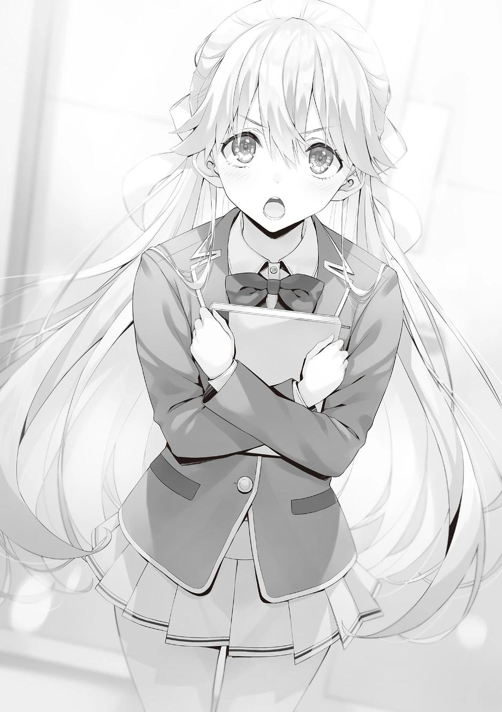
Nagumo no estaba en el asiento del presidente, donde siempre se sentaba, sino que estaba de pie.
―Lo siento, Horikita. Los de segundo año deben estar cansados después del Examen Especial.
―Eso está bien. ¿Pero mencionaste a Kiryuuin-senpai...?
Preguntó Horikita a Nagumo, sin mencionar lo que yo le había explicado, ya que él no sabía nada al respecto.
―Sí, Kiriyama se puso en contacto conmigo y me dijo que preparara el lugar, ya que Kiryuuin va a presentar una queja contra el consejo estudiantil.
―¿Kiryuuin quiere presentar una queja contra el consejo estudiantil...?
Eso es nuevo para mí. ¿Presentar una queja contra el consejo estudiantil? Me pregunto por qué Kiryuuin tomó ese camino.
―Aún así, ¿también invitaste a Ayanokouji, Kiriyama?
―Él fue una de las personas que estuvo allí, así que decidí que era necesario. Tomé la decisión porque no quería que la gente difundiera rumores sobre mí sin saber de qué estaban hablando.
―Bueno, da igual. Es un golpe de suerte poder observar la primera actuación de Suzune.
Diciendo esto, Nagumo instó a Horikita a sentarse en la silla del presidente del consejo estudiantil.
―... Con permiso.
Inclinándose cortésmente, Horikita se sentó.
―Supongo que elegiste a Kushida como vicepresidenta.
―Sí. Había pensado en pedírselo a Aga, estudiante de primer año que ya está matriculado, pero decidí que Kushida-san, que conoce mejor la escuela, sería más apropiada. ¿Hay algún problema?
―No, no tengo ninguna queja sobre la selección del consejo estudiantil, presidenta.
Horikita tomó asiento como presidenta del consejo estudiantil, y Kushida, la recién nombrada vicepresidenta, se sentó con semblante serio.
―Pero tiene muchas agallas para llegar tarde después de convocarnos aquí.
Unos minutos después, Kiryuuin Fuuka entró en la sala como la última persona en asistir a la deliberación.
―Siento haberte hecho esperar, nueva presidenta del consejo estudiantil.
―Por favor, toma asiento.
―No, gracias. Hablaré contigo de pie. Está bien, ¿no?
―De acuerdo. Ahora me gustaría hacerte unas preguntas.
―Pregúntame lo que quieras.
―Tengo entendido que decidiste presentar una queja contra el consejo estudiantil.
Horikita prosiguió con la conversación, actuando como si no le hubieran dicho nada.
―¿Queja?
Kiryuuin ladeó la cabeza con curiosidad, pero Kiriyama la instó inmediatamente a continuar.
―Ya estamos retrasándonos por tu tardanza. Quiero que procedas sin perder tiempo.
―Vaya, qué impaciente eres. Bueno, déjame explicarte el trasfondo de nuevo.
Kiryuuin casi fue acusada de ser una ladrona por Yamanaka, una estudiante de tercer año de la clase D, mientras Kiryuuin estaba de compras en el centro comercial Keyaki después de la escuela.
Afortunadamente, Kiryuuin se dio cuenta y detuvo a la ladrona cuando estaba a punto de introducir la bolsa en su bolsillo. El robo terminó en un intento fallido.
―No puedo creer que Yamanaka actuara por resentimiento personal.
Kiryuuin miró de reojo a Nagumo.
―Cuando interrogué a Yamanaka, confesó que cierta persona le dio instrucciones para cometer el delito.
―¿Quién es esa persona?
―Nagumo Miyabi, el antiguo presidente del consejo estudiantil aquí presente.
Los miembros del consejo estudiantil de primer año, que acababan de enterarse de esto por primera vez, miraron a Nagumo con asombro.
Hubo varios incidentes en torno a Kiryuuin Fuuka.
O, mejor dicho, actos que deberían llamarse "incidentes", tanto si los cometió la propia Yamanaka como si no.
Si fue lo primero, tenemos que enterarnos de lo sucedido y castigarla. Si es lo segundo, aún tendríamos que encontrar al verdadero culpable.
Deberíamos dejarles ver si puede o no enfrentarse a su primera tempestad sin problemas como presidenta del consejo estudiantil.
―Kiryuuin-senpai dijo esto, ¿pero Nagumo-senpai tiene alguna objeción?
―Por supuesto que sí. Desafortunadamente, Kiryuuin, no le di a Yamanaka tales instrucciones. Si ese incidente sale a la luz, mi credibilidad se verá dañada. No hay ni una sola ventaja.
―No lo sé. Sé que siempre has querido tener una pelea seria conmigo, pero hace tres años que no peleo contigo. Me pregunto si estás resentido conmigo por eso. O puede que hayas querido incitarme a aceptar el combate.
Hasta ahora, como antes, estábamos en un camino paralelo.
―Es cierto que yo estaba interesado en un combate contigo. Pero mi interés por ti hace tiempo que desapareció.
―Je-je. ¿Realmente es así?
No aceptaban las afirmaciones del otro.
―Kiriyama-senpai es compañero de clase de Kiryuuin-senpai, y ha apoyado a Nagumo-senpai durante mucho tiempo como vicepresidente. ¿Qué opinas de ambas partes de la discusión?
Horikita preguntó a Kiriyama, a quien había elegido como un tercero conocido.
―Entiendo que Kiryuuin esté disgustada porque casi la hicieron parecer una ladrona, pero no creo que Nagumo esté involucrado en este caso. Si Nagumo fuera en serio con esto, habría elegido una forma mejor y más efectiva.
―¿No crees que eso es simplemente porque le crees demasiado a Nagumo?
Kiryuuin sonrió con desgana, puso las manos en las caderas y rebatió a Kiriyama.
―Teniendo en cuenta lo que Nagumo ha conseguido en esta escuela, es obvio que no se trata de un exceso de confianza.
―Entonces, ¿por qué Yamanaka-senpai intentó causar este incidente?
¿Se resintió con Kiryuuin-senpai sin darse cuenta, y entonces decidió hacerlo?
Si es así, ¿por qué intentó culpar a Nagumo-senpai? ¿Qué piensas de eso?
―No sé la verdad, pero es difícil creer que Yamanaka lo hiciera sola.
―No creo que lo hiciera sola.
―La posición de Yamanaka es bastante baja entre los estudiantes de tercer año. Aunque no fuera Nagumo, es muy posible que la manipularan para actuar a cambio de puntos privados, por ejemplo.
Kiriyama afirmó que ni Nagumo ni Yamanaka, sino alguien más estaba al acecho en la oscuridad.
―Si esto es cierto, significa que tenemos que empezar a identificar al verdadero culpable.
―Sí, pero será difícil de identificar. Cuando Kiryuuin le pidió que confesara, no dijo la verdad y mencionó el nombre de Nagumo. Esto es algo que sólo puede hacer si está preparada para ello.
―¿Sabes por qué, Kushida-san?
En ese momento, Horikita preguntó a Kushida, que estaba escuchando la conversación.
―Tratar de culpar a Nagumo-senpai en el tercer año es sólo una desventaja para Yamanaka-san. Y sin embargo, si ella lo dijo... significa que está empeñada en proteger al verdadero culpable.
―Así es. Significa que tiene más miedo del verdadero culpable que de Nagumo, a quien debería temer más.
―No lo entiendo. No se me ocurre ningún alumno que dé más miedo que Nagumo. Sólo quieren obligarnos a creer que hay un verdadero culpable, ¿no?
Para Kiryuuin, que seguía sospechando de Nagumo, Kiriyama no era más que otra persona del bando de Nagumo.
El hecho de que Kiryuuin dijera que era difícil identificar al verdadero culpable sólo hizo que desconfiáramos cada vez más de ella.
―Tú eres la que está asumiendo que yo soy el culpable, ¿verdad?
―No hay candidatos, así que no me queda más remedio.
―Voy a pedirles a los dos que por favor se callen. Es obvio que ustedes no van a resolver ningún problema hablando.
Como señaló Horikita, la discusión de Kiryuuin y Nagumo era interminablemente paralela.
―¿Y tú, Kiriyama-senpai, cómo manejarías este asunto?
―Creo que deberíamos evitar más indagaciones y persecuciones. Sin embargo, lo que hizo Yamanaka fue un acto imperdonable, aunque sólo fuera un intento. Una vez más, debería disculparse ante Kiryuuin y pagarle la mayor indemnización posible. Creo que tales medidas son aceptables.
―¿Entonces no hay necesidad de informar de esto a la escuela?
―Si Yamanaka cometió el crimen sola, deberíamos hacerlo. Pero si no se encuentra al verdadero culpable, aunque lo denuncies a los superiores, sólo Yamanaka cargará con toda la culpa. ¿Estoy en lo cierto?
―Así es. Aunque la escuela investigue, el verdadero culpable no saldrá necesariamente a la luz.
Ya se había llegado a la conclusión de que Nagumo era inocente, pero quizás este era uno de los lugares apropiados para llegar a un punto de equilibrio.
―Todo lo que quiero es una disculpa del verdadero culpable.
―Sólo digo que sabía que no serás capaz de hacerlo, ¿o crees que llegarás al verdadero culpable? No recuerdo haber oído nada nuevo en las últimas semanas. ¿O conseguiste buena información de Anazai, a quien amenazaste con atacar?
Kiryuuin se encogió de hombros en respuesta a la declaración de Kiriyama. No creo que sufriera heridas ni nada por el estilo, pero no cabía duda de que la forma de atacar era bastante gris. Aunque había cierto margen para la compasión, a Kiryuuin no le haría ninguna gracia que sus sentimientos fueran cuestionados.
―Ayanokouji-kun, escuché que contactaste con Asahina-senpai el otro día.
En ese momento, Horikita cambió el tema a lo que le acababa de decir.
―A través de Asahina-senpai, pregunté a los alumnos de tercer año sobre toda la situación. Intenté averiguar qué tipo de contrato obligaba Nagumo-senpai a firmar a los alumnos de tercer año y qué tipo de relaciones tenían.
―Antes de venir a la sala del consejo estudiantil, recibí un informe de Ayanokouji-kun. Y hablando con Asahina-senpai, también investigó a Yamanaka-senpai en detalle.
―¿Oh? Ese es Ayanokouji, no me extraña que le pusiera mi confianza y me apoyara en él.
Ya había informado de esto a Kiryuuin, pero ella afirmó a propósito no haber oído hablar de ello antes.
―¿Influiste en Ayanokouji, Kiryuuin?
―¿Estás insatisfecho, Nagumo?
―No, pero si ese es el caso...
Nagumo intentó continuar como si tuviera algo en mente, pero rápidamente cerró la boca.
―Lo siento, este es tu primer caso como presidenta del consejo estudiantil.
Volvió a mostrar su ojo vigilante, diciendo que no haría nada imprudente.
―Parece que Ayanokouji-kun no pudo reunirse con Yamanaka-senpai, pero en su lugar apareció otra persona delante de él. Era Tachibana-senpai, de la misma clase D de tercer año. ¿Por qué apareció, cuando se suponía que no tenía nada que ver con esto? Era para evitar que Yamanaka-senpai dijera la verdad.
―¿Yamanaka y Tachibana están relacionados?
Nagumo preguntó a Horikita, actuando como si no supiera nada al respecto.
―Ayanokouji-kun dijo que cuando le preguntó a Tachibana-senpai la verdad, obtuvo la misma respuesta: que Nagumo-senpai le ordenó meter la mercancía en la bolsa de Kiryuuin-senpai.
―Por supuesto, yo no tuve esa conversación con Tachibana. De hecho, ni siquiera recuerdo haberlo oído hablar en el último mes. El verdadero culpable podría ser Tachibana.
―Bueno, no tienes más remedio que decir eso.
Es inevitable que Kiryuuin responda así a Nagumo.
―¿Tiene Kiryuuin-senpai alguna conexión profunda con Tachibana-senpai?
―Prácticamente ninguna. Puedo decir que no tiene más relación que Nagumo.
―En otras palabras, tiene menos motivos que Yamanaka-senpai para ser el verdadero culpable.
―¿Significa esto que Tachibana-senpai, al igual que Yamanaka-senpai, recibió órdenes de otra persona?
Nanase, que había estado tomando notas de los procedimientos hasta este punto, le hizo esta pregunta a Horikita.
Sin embargo, ésta no respondió y permaneció en silencio.
Todos debieron sorprenderse, ya que esperaban una respuesta inmediata.
―Ese no es el final del informe que recibiste, ¿verdad? Por favor, cuénteme el resto de la historia, señorita presidenta del Consejo Estudiantil.
Kiryuuin la instó a continuar, pero Horikita no contestó.
Es comprensible. Porque no le he contado el quid de la cuestión.
Sólo le di el mismo nivel de información que a Asahina, que estaba en la misma estancia que Tachibana el otro día.
Si quieres pedir ayuda, te ayudaré.
Pero primero, quiero ver a dónde conducen los pensamientos de Horikita.
―Nagumo-senpai dice que él no es el culpable. Por otro lado, Yamanaka-senpai y Tachibana-senpai dicen constantemente que recibieron órdenes de Nagumo-senpai. Esto es una clara contradicción.
―Uno de ellos debe estar mintiendo.
―Es normal pensar así. Pero antes que nada, me gustaría creer ambas versiones de la historia.
―Me parece difícil creer las contradicciones de las declaraciones.
Nanase, que seguía tomando nota de las actas de la reunión, detuvo su bolígrafo y murmuró.
―Normalmente eso es cierto, pero ¿y si ambas partes no están mintiendo realmente? ¿No habría contradicción si se añadiera cierta condición?
En el transcurso de la conversación, a Horikita pareció ocurrírsele una posibilidad.
―El verdadero culpable le dijo a Tachibana-senpai que le pidieron que hiciera un trabajo por orden de Nagumo-senpai. Tachibana-senpai y Yamanaka-senpai creyeron las palabras de esta misteriosa persona, y por eso siguen reclamándole, pero la petición es un acto criminal. Normalmente, se empezaría pidiendo a Nagumo-senpai que confirmara si las órdenes que estaban recibiendo eran ciertas o no.
Es normal querer garantías de que recibirías algo a cambio.
―Pero no lo hicieron. ¿Por qué? Creo que es porque Yamanaka-senpai y Tachibana-senpai pensaban que el verdadero culpable también era digno de su confianza. Un portavoz de Nagumo-senpai, y alguien que tiene poder.
Sólo hay una persona en esta escuela que podría hacer tal declaración.
―La verdadera persona detrás de este caso no es Nagumo-senpai, sino Kiriyama-senpai, el vicepresidente.
Todos los ojos se volvieron a Kiriyama a la vez.
―¿Yo? ¿Cómo llegaste a esa conclusión?
Kiriyama expresó con calma sus dudas sobre la mención de su nombre.
―¿No entendiste lo que acabo de explicar? Esa conclusión es la más obvia cuando organizas la información.
―No hay garantía de que la información que te dio Ayanokouji sea cierta.
Tengo un billete garantizado a la Clase A de Nagumo. Nunca haría nada para provocar una rebelión.
Mientras Kiriyama explicaba su posición, una persona inesperada le tendió la mano.
―Creo que la teoría de la presidenta del consejo estudiantil es interesante, pero Kiriyama tiene razón. Esta es la razón principal por la que no dudo de Kiriyama. Ningún perro domesticado se atrevería a morder a su amo.
―Entonces, ¿puedo llamar a Yamanaka-senpai y Tachibana-senpai como testigos ahora?
Horikita intentó confirmar la negativa de Nagumo.
―Tú eres la presidenta del consejo estudiantil. Puedes hacer lo que quieras.
―Ya veo.
―Espera.
Entonces Kiriyama la interrumpió.
―¿Saben ya los testigos que van a ser llamados aquí?
―No. Me pondré en contacto con ellos ahora y negociaré.
Kiriyama fulminó con la mirada a Horikita, y luego a mí, que ahora estaba involucrado en el caso.
Si no hubiera sido por la teoría de que Kiriyama era el verdadero culpable, probablemente habría podido sobrevivir sin llamar la atención.
Sin embargo, para despejar estas sospechas que surgieron, no podría evitar un aluvión de preguntas.
Me pregunto si ambos podrán ocultar la implicación de Kiriyama sin ninguna discusión previa en una reunión en la que estén presentes todos los actores principales. No es fácil seguir mintiendo en esta situación.
―¿Hay algo de malo en llamarlos? ―preguntó Horikita a Kiriyama.
Si no quieren ser arrastrados a la luz pública, arrástralos a pesar de todo.
Es la forma más rápida y sencilla.
―Bueno...
―¿A qué viene tanto pánico, Kiriyama? No estás involucrado en esto, así que quédate quieto.
Nagumo preguntó a Kiriyama de forma desenfadada, pero pude ver la voluntad en sus ojos. No parecía sospechar de Kiriyama hasta ahora, pero daba la sensación de que el viento había cambiado de dirección.
―...Entendido. Detengamos esto ahora.
Kiriyama, dándose cuenta de que no hay nada más que hacer, hace un gesto como si se hubiera rendido.
―¿Qué quieres decir con eso?
―Significa que no hay necesidad de llamar a testigos. Admito que fui yo quien instruyó a Tachibana esta vez.
―No sabía que hubieras sido tú. Escuchemos tus razones. ¿Por qué hiciste esto?
Kiriyama parecía haber entrado en razón y no mostraba signos de pánico.
―Lo siento Kiryuuin, pero tenías que ser tú, para lograr mi objetivo.
―¿Tenía que ser yo?
―Nagumo me envió un mensaje, diciéndome que hiciera un trabajo para ganar puntos, y Tachibana aceptó de buena gana. Se acercaba el final del segundo semestre y tenía mucha prisa. Él ni siquiera lo sospechaba.
No era de extrañar que le creyera Kiriyama, el antiguo vicepresidente, que también era un estrecho colaborador de Nagumo.
―El argumento de la mentira es el siguiente: si fuera posible inculpar a Kiryuuin por hurto en una tienda sin que se diera cuenta, le daría a Yamanaka un billete para la clase A. Si ella fallaba, por supuesto, no sería válido, pero seguiría ganando puntos.
―Eso es una mentira descarada. Si Yamanaka hubiera tenido éxito, tu mentira se habría descubierto inmediatamente.
Nagumo tenía razón. Tachibana y Yamanaka habrían ido inmediatamente a exigir sus boletos de recompensa. Y el falso mensaje de Kiriyama habría sido conocido por todos en un santiamén.
―Estuvimos en la misma clase durante 3 años, conozco muy bien el carácter y la habilidad de Kiryuuin. Era imposible para alguien del calibre de Yamanaka plantar el objeto sin ser notada.
Por eso tenía que ser Kiryuuin. Eligió a alguien con quien sin duda no funcionaría.
―Así que sabían desde el principio que serían descubiertos. Pero no lo entiendo. Es demasiado elaborado con el único propósito de hacerme enojar, y no te beneficia.
―El objetivo era inculpar a Kiryuuin-senpai como ladrona de tiendas. Así que te equivocaste con esa idea.
Nanase asintió repetidamente con la cabeza mientras escribía en el cuaderno.
―Así es. Cuando interrogaste a Yamanaka y surgió el nombre de Nagumo, sabía que primero concertarías una cita conmigo, un compañero de clase, para ir directamente a ver a Nagumo. Mi verdadero objetivo era concertar la hora de la cita y llegar a cierto punto en el tiempo.
Como yo estaba presente en ese momento y dadas las circunstancias, el objetivo de Kiriyama se hizo evidente de inmediato.
―Parece que el objetivo de Kiriyama-senpai era destruir la elección del consejo estudiantil anticipadamente.
―Así es Ayanokouji. No me extraña que Horikita-senpai confiara en él.
Nagumo, que había estado resolviendo la situación, también estaba de acuerdo con el objetivo y propósito de Kiriyama.
―Quería ahondar en las heridas de Honami, que tiene un historial de hurto, para que se retirara.
―Sí, podría haber señalado personalmente los problemas de su pasado, pero decidí que era demasiado delicado. Kiryuuin odia esos pecados, y sabía que escupiría palabras que atravesarían sin piedad el corazón de la desinformada Ichinose.
Kiryuuin dio a Kiriyama un ligero aplauso a pesar de su disgusto.
―Parece que he estado bailando contigo, Kiriyama. Te agarré por los cuernos.
Parecía que Kiriyama, que había estudiado con Horikita Manabu y servía de mano derecha de Nagumo como vicepresidente, estaba seguro de su puntería y predicción. La habilidad de Kiryuuin era tan fuerte como la de Horikita Manabu, pero es una persona excéntrica y solitaria que no tiene amigos. Por lo tanto, es muy frágil en términos de guerra de información.
―Lo más inesperado fue la decisión de Ichinose de abandonar la elección del consejo estudiantil en ese momento. Si lo hubiera sabido antes, no me habría arriesgado.
La elección habría sido para Horikita, aunque no se hubiera sacado a relucir el robo en la tienda.
―¿Por qué, Kiriyama? ¿Por qué corriste este riesgo para intentar influir en las elecciones?
―No podía soportar tu egoísmo. ¿Qué habría pasado si Ichinose no hubiera querido dimitir del consejo estudiantil y se hubiera celebrado la elección para el consejo estudiantil tal y como estaba? Te hubieras peleado con Ayanokouji y apostado muchos de tus puntos privados en ello. Además, no habrías dudado en comprar votos con puntos para ganar.
Nagumo ciertamente tenía mucho dinero. No sería de extrañar que hubieran adoptado una estrategia de compra de votos si sabía que tenía dificultades.
―No sé. Tú eres quien decide quién gana, así que ¿por qué importa lo que hagas con el dinero que tienes?
―¿No importa? Desde luego, tú me has dado mi billete a la clase A, pero
¿sabes la carga mental que eso ha supuesto para mí? Mis compañeros de clase me envidian y me guardan rencor todos los días. Es insoportable.
La mirada que dirigió a Nagumo contenía un serio enfado que Kiriyama nunca había mostrado antes.
―Los puntos privados que pones en tu espectáculo paralelo podrían gastarse mejor en tus compañeros, para que más estudiantes pudieran ascender a la Clase A. Sin embargo, ¿pones todos los puntos privados, que están empapados con la sangre y el sudor de los estudiantes de tercer año, sólo por tu propia codicia y deseo de luchar? Déjalo ya, tonto.
El objetivo de Kiriyama era evitar la salida innecesaria de puntos privados.
―No sabía que estabas pensando en los demás. Pensaba que todas las personas a las que he dado entradas eran egocéntricos meritocráticos, que piensan que no pasa nada mientras se gradúen en la clase A.
Nagumo elogió a Kiriyama, como si estuviera impresionado.
Si todo el mundo se lo tomaría como un cumplido o no, es otra cuestión.
―Simplemente es desagradable ver más peleas innecesarias entre estudiantes de tercer año.
―Entiendo lo que tratas de decir, pero ¿estás listo para traicionarme, Kiriyama?
Nagumo tenía la autoridad para revocar sus derechos. Ningún boleto a la clase A quedaría en la mano de Kiriyama si desobedece.
―Es una acción basada en un contrato. Haz lo que quieras.
―Que Nagumo decida el castigo para Kiriyama. Eso será suficiente como castigo.
Kiryuuin concluyó y salió rápidamente de la sala del consejo estudiantil.
―Espera, Kiryuuin-senpai.
―¿Pensé que habíamos terminado, presidenta del consejo estudiantil?
―No, no funciona de esa manera. No creo que Nagumo-senpai personalmente tenga derecho a juzgar a Kiriyama-senpai. Además, todavía hay un misterio.
―¿Misterio? ¿Queda algo?
―Kiriyama-senpai intentó inculparte por robar en una tienda. Y, cuando eso se descubrió, trataste de llamar la atención del consejo estudiantil. El propósito era forzar la suspensión de las elecciones al consejo estudiantil, y hacer que Ichinose-san recordara el trauma del hurto y se retirara de las elecciones.
Esta suposición, incluyendo su confesión, no estaría equivocada.
―Sin embargo, no había necesidad de correr tal riesgo. Si querían detener las elecciones, había muchas otras formas. Si querían aprovecharse de su pasado como ladrona, podían haberse acercado a Ichinose-san y pedirle que se retirara de la elección; fuera de su vista, fuera de su mente. De ese modo, habría sido más seguro.
―Cuesta creer que a Kiriyama no se le ocurriera esto, ¿verdad?
Kiryuuin, intrigada, volvió a su posición original.
―Me pregunto por qué se arriesgó tanto. ¿Quizás Kiriyama-senpai estaba preparado para ser identificado como el verdadero culpable?
Kiriyama no contestó, sino que se limitó a mirar a Horikita, la presidenta del consejo estudiantil.
―Pensé que querías hacer público este asunto y plantear la cuestión. El hecho de que se hayan reunido aquí hoy, no sólo yo, sino también todos los
miembros del consejo estudiantil y Ayanokouji-kun... Dijiste al principio que todo esto estaba dirigido por Kiriyama-senpai, ¿verdad?
Pensé que fue Kiryuuin quien sugirió la idea de apelar al consejo estudiantil, pero cuando Horikita le preguntó inmediatamente después de entrar en la habitación, ella ladeó la cabeza, probablemente porque fue idea de Kiriyama.
Fue Kiriyama quien la animó a hablar, con el fin de difundir estas dudas.
―Horikita. Es extraño que, por un momento, haya visto tu presencia solaparse con la de Horikita-senpai.
Como para elogiar lo acertado de su conjetura, Kiriyama se lo transmitió.
―No estaba seguro de lo bien que funcionaría, pero tienes razón. El número de alumnos que se quejan de Nagumo aumenta día a día. Cuando se lo conté, no quiso escuchar lo que tenía que decir. ¿Me equivoco?
―Puede ser.
Nagumo no negó, sino que afirmó.
―Nagumo-senpai, creo que hubo muchas cosas mal en la forma en que lo hizo, pero la verdad es la verdad.
―¿Qué opinas, Nagumo? ¿Vas a echarle toda la responsabilidad de tu egoísmo a Kiriyama?
―Supongo que sí. Suponía que yo no tenía nada que ver con esto, pero por lo que he oído no puedo decir eso.
Nagumo apartó la mirada de Kiriyama y miró a Horikita, preguntándose qué conclusión sacaría.
―Entonces, como se trata de un asunto del consejo estudiantil, tú eres la juez y el jurado.
―...¿Seguro que no te importa que tome esta decisión?
―No eres sólo una decoración sentada ahí, ¿verdad? Estaré de acuerdo con tu decisión.
¿Qué clase de juicio puede emitir Horikita, que lo ha presenciado todo?
―Entonces, como presidenta del consejo estudiantil, me gustaría decir lo siguiente: en primer lugar, Kiriyama-senpai, me gustaría que pidieras una profunda disculpa a Kiryuuin-senpai por este incidente. Cualesquiera que hayan sido las circunstancias de fondo, el hecho de que intentaras culpar del crimen a Yamanaka-senpai y Tachibana-senpai, que no tenían ninguna relación con esto, debería tomarse en serio. Sin embargo, dado que es inevitable que un informe a la escuela acarree graves consecuencias, nos gustaría que reflexionaras sobre tus actos suspendiéndote voluntariamente de la escuela durante una semana más o menos.
El Consejo Estudiantil no tenía derecho a suspender o expulsar a un alumno. La aprobación de la escuela era esencial para tomar tal decisión. La suspensión voluntaria se ajustaba a ese propósito.
No importaba si había fingido estar enfermo o no, sólo tenía que quedarse en el dormitorio y reflexionar sobre su comportamiento.
―Sé que tienes potestad para privar a Kiriyama-senpai del derecho a cambiarse de clase, pero, por favor, prométeme que no lo harás.
―Es una petición atrevida.
―Puedes negarte, pero acatarás mi decisión, ¿verdad?
―Tampoco puedo culpar a Kiriyama esta vez, ¿pero eso es todo?
―No, si acabamos así, no podemos estar seguros de que no vuelva a ocurrir algo similar. A partir de ahora, los puntos privados recogidos de los estudiantes de tercer año deben ser utilizados sólo para los de tercer año. Me gustaría añadir también esta condición.
Hasta ahora, Nagumo había hecho lo que quiso desde su trono.
Debió utilizar muchos puntos privados sin nuestro conocimiento, y gastó mucho dinero jugando con fuego contra Horikita Manabu y otros grados. El consejo estudiantil decidió prohibírselo en el futuro.
―Si esa es la voluntad del consejo estudiantil, la aceptaré.
―Pensé que no aceptarías esa condición.
―Básicamente, lo que dice Suzune, o más bien la presidenta del consejo estudiantil, es razonable.
¿Es una presidenta del consejo estudiantil mucho más capaz de lo que pensaba?
―¿Estás realmente convencido de eso, Nagumo?
―Tienes el poder de socavarme.
O quizás Nagumo se creyó la verdadera naturaleza de Kiriyama, al menos el aspecto que mostraba.
―¿De verdad vas a dejar que lo que pasó termine así?
―Yo también aprendí mucho de esto. Aparentemente, no tengo suerte.
El rostro de Nagumo parecía aburrido, como si se hubiera dado por vencido en algo. Sin embargo, no quiso decir nada más. Por otro lado, la expresión de Kiriyama no mostraba ningún rastro de resignación o sensación de alivio ante la revelación de la verdad.
Algo más le preocupaba. No era difícil ver que miraba hacia el futuro.
―Este es el final del asunto. Por favor, no le cuenten a nadie más sobre este incidente.
Con la declaración de la presidenta del consejo estudiantil, toda esta serie de incidentes está resuelta. Sin embargo, no sé si esto es realmente el final de todo.
¿Qué significaba la expresión de Kiriyama al final?
PARTE 2
Terminaron los exámenes especiales y al día siguiente se celebró la ceremonia de clausura del segundo semestre.
Tras escuchar los discursos de los profesores en el gimnasio, los alumnos volvieron a sus aulas para una breve entrega de premios. Los que destacaron en
las actividades de los clubes y otras competiciones obtuvieron sus recompensas, y también recibimos un recordatorio para las vacaciones de invierno.
A continuación, Chabashira-sensei anunció los resultados de los exámenes especiales.
Mientras todos conteníamos la respiración, nos dijeron que nuestra clase había ganado.
En ese momento, los alumnos lanzaron un grito de alegría que resonó en las clases vecinas.
Sólo se concedían o restaban 50 puntos de clase por la victoria o la derrota de cada clase, respectivamente.
Sin embargo, ganamos un gran número de ellos.
Casi al mismo tiempo, recibí dos mensajes en mi celular.
Uno era de Ichinose, felicitándome por mi victoria.
El otro era de...
―Las vacaciones de invierno empiezan mañana. Es importante que se lo tomen con calma el primer día, y que se refresquen después de que se les haya calentado la cabeza de tanto estudiar.
Chabashira-sensei nos dijo que ya podíamos irnos de la clase, mientras el júbilo de todos aún persistía.
Era impresionante ver los ojos entrecerrados de felicidad de Chabashira-sensei mientras abandonaba el aula.
Como ya se había anunciado, este examen especial contaba con un sistema que permitía a cada alumno de cada clase conocer con detalle quién había resuelto qué problema, cuántas preguntas habían respondido correctamente, el orden en que habían respondido a las preguntas, y también se revelaba la cantidad de tiempo empleado.
Observando estos datos, no sólo sabíamos quién se había esforzado, sino también la estrategia de cada clase.
Sin duda, iban a ser datos útiles tanto para aliados como para rivales.
Más tarde comprobaré los detalles, ya que puedo hacerlo desde el celular.
Salí del aula antes que los demás alumnos, que estaban armando alboroto por los resultados.
Kei me estuvo observando todo el tiempo.
Después de perder la oportunidad ayer, no había sabido nada de Kei hasta ahora.
Sin embargo, parecía estar intentando establecer contacto conmigo, ya que me miró justo antes de irme.
Si es difícil hablar en un lugar tan concurrido como éste, deberíamos desplazarnos.
De momento, Kei sigue inestable y le falta un factor decisivo para que yo actúe.
No puedo esperar que crezca si seguimos distanciados, así que no se puede evitar.
Con esto en mente, decidí abandonar el aula por un tiempo, pero...
―¿Te vas solo a casa?
Salí al pasillo y quien vino corriendo detrás de mí no fue Kei, sino Horikita.
―¿Te parece bien? La persona que jugó un papel clave en nuestra victoria abandonó el aula tan rápido.
―Volveré más tarde. Pensé en charlar un poco contigo.
Con eso, me alcanzó y empezamos a caminar juntos. Efectivamente, Horikita no llevaba ninguna mochila en la mano, y parecía seguro que volvería al aula más tarde.
―Has utilizado una estrategia interesante para este examen especial.
―No sé si mi método fue el más eficaz o no.
La estrategia de Horikita comenzó haciendo que Keisei fuera el bateador principal para resolver los problemas. Como es uno de los mejores alumnos de nuestro curso, le hizo resolver rápidamente los dos problemas mínimos requeridos. Después utilizó el tiempo restante para concentrarse en leer las demás preguntas.
El objetivo de este plan era permitir que los siguientes alumnos clasificados más abajo resolvieran los problemas más fáciles.
La estrategia consistía en alternar entre los alumnos mejor clasificados y los peor clasificados.
Sin embargo, esta estrategia no podía utilizarse en circunstancias normales, porque estaba prohibido hablar durante el examen. No se permitían celulares, bolígrafos ni notas.
Sin embargo, si se preguntaba si no había ningún vacío, la respuesta era no.
Mientras el alumno de delante resolvía un problema a solas en el aula, el siguiente esperaba en el pasillo.
En otras palabras, cuando alguien salía del aula después de resolver un problema, había un momento en el que se cruzaban, aunque sólo brevemente.
Había dos entradas a las aulas, así que si los alumnos tenían que usar la delantera al entrar y la trasera al salir, se creaba una distancia, pero Horikita ideó una solución para eso.
Bastaba con mirarse un momento. La idea era que cada alumno se comunicara con el siguiente mediante signos con las manos, para indicar qué problemas debían resolver.
Por ejemplo, si la sugerencia era el problema 55, mostrarían su mano derecha con dos pares de dedos cruzados dos veces. Si la sugerencia era el problema 69, mostraban ambas manos con seis dedos en total y luego extendían nueve dedos.
Horikita confirmó de antemano que las normas no le permitían decir nada sobre las respuestas a los problemas, pero que no iba en contra de las reglas utilizar los signos de las manos para decir qué problema había que resolver.
La instrucción de decir simplemente al alumno qué problema debe resolver no constituía hacer trampas, y también se mantenía la norma de no hablar.
Repitiendo esto, los alumnos menos expertos podían concentrarse en resolver sus problemas con más cuidado, sin tener que buscarlos.
―La clase de Sakayanagi también estuvo muy reñida, incluso con nuestros muchos alumnos de baja capacidad académica, sólo pudimos ganar en términos de puntos totales, no en términos de porcentaje de respuestas correctas.
La clase de Horikita obtuvo un 72% de aciertos, mientras que la clase de Sakayanagi obtuvo un 86%.
Si la competición se hubiera disputado en las mismas condiciones y con la misma distribución de puntuaciones, Horikita habría perdido.
―No estará contenta. Hizo lo que tenía que hacer y perdió.
Siempre había quedado primera en los parciales y en los exámenes escritos, y esta vez volvió a demostrarlo.
―Una victoria es una victoria, aunque el porcentaje de respuestas correctas no sea tan bueno como el de ella. No hay que ser pesimista.
De hecho, fue la clase de Horikita la que ganó puntos de clase y la de Sakayanagi la que los perdió.
Y un 72% de respuestas correctas no es menos que excelente.
―Por supuesto, no soy pesimista. Sólo estaba frustrada.
Supongo que no era necesario, parece que su rivalidad es mucho más fuerte de lo que esperaba.
―Por cierto, Karuizawa-san no ha estado bien últimamente. Ella ha estado trabajando duro en sus estudios, pero ¿hay algo mal?
―Nada. Si tuviera que decirlo, puede que estemos en algo parecido a una guerra fría.
―Yo no lo llamaría nada. Es raro verlos pelear.
―Sucede cuando un hombre y una mujer llevan mucho tiempo juntos. Lo sé bien por experiencia.
Horikita levantó las cejas y puso cara de duda, como si no le gustara mi respuesta.
―Es bueno que haya podido obtener resultados en las sesiones de estudio y en la competición, a pesar de que se encontraba en un estado mental inestable.
―Dicen que estaba tan acorralada mentalmente que se dedicó a estudiar lo que no le gusta... La moral de Karuizawa-san puede afectar fácilmente también al resto de nuestra clase. Haz las paces con ella lo antes posible.
Como líder, quieres mantener la clase estable.
Me despedí de Horikita mientras ella volvía al aula y decidí marcharme.
PARTE 3
El hecho de que Horikita ganara este examen especial, derrotando a Sakayanagi, pronto sería la comidilla de todos. Aunque no se trataba de un concurso puramente académico, también había un elemento de rivalidad que implicaba a la OAA. Sin embargo, el hecho es que Horikita ganó este enfrentamiento directo.
La diferencia entre las clases de Sakayanagi y Horikita se había reducido en 100
puntos antes de los exámenes finales. Por otro lado, la clase de Ryuuen lo pasó mal. Intentaron perturbar la competición con estrategias basadas en la presión externa, pero Ichinose las aceptó con calma y cosechó una sólida victoria.
Puede que se la considerara mentalmente inestable debido a su dimisión del consejo estudiantil, pero Ryuuen no fue capaz de doblegarla.
Aun así, no se puede decir que la decisión de Ryuuen fuera un error.
Puede haber opiniones de que Ryuuen debería haber ordenado a sus compañeros que estudiaran como Horikita, pero a diferencia de ésta, que había sentado las bases ampliamente, la clase de Ryuuen no tenía mucho margen para crecer en este sentido. Habría sido difícil para ellos ponerse al día en un corto periodo de tiempo.
Al lograr una ajustada victoria, Ichinose todavía tenía una pequeña posibilidad de llegar a la clase A, y la batalla entre las cuatro clases se prolongaría hasta el tercer semestre, y más allá.
Cuando me puse los zapatos en la entrada y salí del edificio de la escuela, ya había alguien esperándome.
―Me disculpo por llamarte en el último día de clases.
Inmediatamente después de que se anunciaran los resultados, cierta persona se puso en contacto conmigo, pidiendo reunirse.
―No sabía que Ichinose también vendría.
Fue una coincidencia que las dos personas que me enviaron los mensajes terminaran en el mismo lugar.
―¿Qué pasa, Sakayanagi-san?
Parecía que Ichinose tampoco se había enterado de mi participación y me miró extrañada.
―Caminemos, aquí llamaremos la atención.
Era inevitable que la entrada de la escuela estuviera llena de estudiantes que se disponían a salir después de clase.
―En primer lugar, Ayanokouji-kun, felicidades por tu victoria en este examen especial.
―Esta vez fue una victoria que se me permitió cosechar. Sin embargo, si hubiera sido un examen escrito normal, habría perdido.
―¿Te refieres al porcentaje de respuestas correctas? Eso no cambia el hecho de que perdí.
Más que humilde, parece que acepta el resultado después de haber hecho todo lo posible. También se puede sentir la compostura de la Clase A debido a su ventaja en puntos de clase.
―E Ichinose-san, que venció a Ryuuen-kun, también estuvo brillante.
―Sólo hicimos lo que debíamos hacer. No hicimos nada especial.
―También es admirable que no cedieras ante la obstrucción de Ryuuen-kun y su equipo. Para ser honesta, en mi estimación inicial, pensé que el resultado sería 50-50. Sin embargo, la clase de Ichinose-san ganó el examen por poco. Probablemente fue el resultado de las tranquilas y precisas instrucciones de la líder.
Sakayanagi también parecía haber leído que Ichinose estuvo luchando.
Aprecio su victoria, no solo por su diferencia en capacidad académica, sino también por la manera fría y calmada con la que se enfrento a Ryuuen.
―¿Ah, sí? Pero no me siento mal cuando Sakayanagi-san me elogia.
―Sólo puedo suponer que ha pasado algo recientemente.
Sakayanagi no era capaz de reunir información por sí misma, así que siempre intentaba recabarla utilizando a muchos estudiantes como si estuviera tendiendo una tela de araña.
Días libres pasados en el gimnasio. Tiempo pasado en cafés. En el camino de ida y vuelta.
El día que ella esperó fuera de mi habitación. No me sorprendería que viera algo de eso.
―Te conté una historia parecida en el barco, ¿recuerdas?
Sakayanagi le dijo estas palabras a Ichinose, no a mí.
―Demasiada idolatría puede tener repercusiones dolorosas. ¿No fue algo así?
―Así es. Los llamé a los dos hoy para decirles que estoy aquí para darle un ultimátum a Ichinose-san, que tiene un débil enamoramiento de Ayanokouji-kun.
Ella ya parecía entender que Ichinose siente algo por mí, lo que en sí mismo no es sorprendente.
―Deberías distanciarte de Ayanokouji-kun ahora.
―¿Ese es tu ultimátum?
Aunque ya se lo has dicho otra vez, una tercera persona te ha contado lo que sientes por él aquí y ahora.
Normalmente, esperaría que Ichinose mostrara al menos un atisbo de inquietud, pero no parecía disgustada en absoluto.
―Sí.
―No lo entiendo. ¿Por qué debería distanciarme de Ayanokouji-kun? Sean cuales sean los sentimientos que tengo por él, no hay nada malo en tratarle como a un amigo.
―Veo que la erosión ya ha avanzado considerablemente. Si realmente pudieran ser amigos, sería otra historia. Pero por lo que veo, no creo que Ichinose-san esté satisfecha con eso. Pero a menos que Ayanokouji-kun se niegue a aceptarlo, no tengo intención de cambiar de opinión. Estás siendo controlada por él. ¿Te das cuenta de que si sigues así, acabarás siendo destruida?
―Ja, ja, ja. Dices las cosas más graciosas.
―Estoy seriamente preocupada. No puedo ver cómo pierdes los sesos y quedarme satisfecha.
―No hay necesidad de preocuparse, Sakayanagi-san. No soy controlada por Ayanokouji-kun.
Ella tiene una mirada tan fría en sus ojos.
Mientras esos pensamientos cruzaban por mi mente, Ichinose estaba de pie a mi lado, con una mirada en su rostro que nunca había visto antes.
―Sakayanagi-san. Quieres controlarme y utilizarme para tu propia conveniencia, ¿verdad? Por eso intentas detenerme así.
―Ya veo. Esa es una posible interpretación.
―En realidad, una cosa más, Sakayanagi-san es muy consciente de que Ayanokouji-kun es una persona especial, y mi presencia se ha convertido en una molestia...
El movimiento de Sakayanagi se detuvo por un momento mientras Ichinose le sonreía.
Éste era un disgusto raro demostrado por Sakayanagi, que siempre había estado parada en una posición por encima de Ichinose.
―Ciertamente lo miro de una manera especial, pero no es la misma que la tuya.
―No sé. Yo creo que sí, aunque no te des cuenta.
Ichinose se enfrentó frontalmente a la negación de Sakayanagi.
―Está bien. Si insistes hasta ese punto, no tengo nada más que decir.
Sólo te diré que no puedo ayudarte si te arrepientes en el futuro.
Concluyó Sakayanagi, pero es posible que su cautela aumentara gradualmente tras escuchar sus intenciones. Tal vez fuera porque creía que entregarse ciegamente al amor y montar en cólera tras caer bajo aquella enfermedad era algo bonito.
Pero las cosas han empezado a cambiar más de lo que imaginaba.
El bien que se dirige hacia dentro es el mismo que antes, y el que se dirige hacia fuera se ha transformado completamente en maldad.
La clase de Ichinose, que se había estado hundiendo, era ahora lo suficientemente fuerte como para contraatacar.
Sakayanagi debió sentirlo en carne propia.
¿Por qué pienso eso? Porque eso es exactamente lo que estoy recordando ahora mismo.
―Tendremos una fiesta por la victoria en el Centro Comercial Keyaki después. ¿Puedo volver a los dormitorios ahora? ―Respondió Ichinose.
―Sí. No sería prudente retenerte más tiempo, ¿verdad?
Ichinose me saludó con la mano y se dirigió a los dormitorios.
Sakayanagi y yo éramos los únicos que quedábamos.
―Nunca pensé que volvería a evaluar a Ichinose-san de esta manera.
Sakayanagi tampoco parecía ser capaz de leer los cambios hasta ahora.
Un efecto secundario, o más bien un subproducto, de los poderosos cambios.
―Es una pena, porque Ichinose-san, que se ha ganado mi confianza, habría sido una excelente extremidad para mí.
―Me temo que no has entendido.
He estado ampliando mi perspectiva y haciendo cálculos sobre el panorama general del movimiento de los seres humanos, pero todavía hay áreas que ni siquiera yo comprendo.
El concepto de amor tiene el potencial de influir en nuestra razón y nuestra naturaleza.
Esto significa que podrían producirse fácilmente acontecimientos inesperados.
Es difícil de creer, pero sin duda es uno de los sentimientos más misteriosos y trascendentes.
¿Es Ichinose Honami una buena o mala líder; una buena o mala estratega?
Esta es una historia diferente desde esas perspectivas.
Originalmente, las habilidades de Ichinose no eran bajas.
Recuerdo que su actuación en la prueba del zodiaco también fue excelente.
Con su habilidad individual, ella tiene el potencial para resistir contra Horikita, Ryuuen, y Sakayanagi.
O, dependiendo de la situación, superarlos inesperadamente.
―No tenía ni idea de que tuviera una habilidad tan oculta. Pero es lo mismo si te dejas llevar por ese poder. Las consecuencias serán desastrosas.
―¿Creías que podrías evitarlo?
―No. No tengo intención de detenerla. La única diferencia es quién la destruye.
Sakayanagi no consideraba a Ichinose como una aliada.
Simplemente la hubiera utilizado como un peón útil y se hubiera deshecho de ella cuando terminara de ser un artículo inservible.
―Volveré a visitar tu habitación en un futuro próximo.
Sakayanagi, que también estaba en posesión de información sobre Ichinose, deliberadamente mostró su mano y dio su respuesta.
UN TOQUE DE ANSIEDAD
ESTE DÍA, tras la ceremonia de clausura del segundo semestre, los exámenes especiales terminaron.
Llegó el momento tan esperado por los estudiantes.
Aunque no tan largo como las vacaciones de verano, seguía siendo un tiempo de alegría para la mayoría de los estudiantes. El duro trabajo de estudiar día y noche se vio recompensado con una victoria frente a la clase A. Las vacaciones de invierno comenzarán mañana, y nos esperan muchos días felices.
Seguro que será una época de diversión para todos.
Eso es lo que todos piensan, excepto una persona de la clase.
La única excepción es Karuizawa Kei, que llegó al centro comercial Keyaki con su mejor amiga, Satou Maya, con un suspiro de melancolía. Buena para darse aires de grandeza por naturaleza, mantenía la calma en la escuela y se concentraba en sus estudios incluso después de la pelea con Ayanokouji.
Por lo tanto, la gente a su alrededor no tenía forma de saber que Karuizawa había estado sufriendo. Su mejor amiga Satou era una de ellas, pero Satou era una observadora cercana no sólo de Karuizawa, sino también de Ayanokouji. Se dio cuenta de que los dos parecían estar bastante distantes, a pesar de que siempre habían estado muy unidos.
Sin embargo, ella pensó que la causa de su comportamiento no era debido a una pelea, sino porque estaban manteniendo su distancia para concentrarse en sus estudios.
―Aah...
―Has estado suspirando mucho. Acabamos de terminar nuestros estudios y cada vez es más fácil. ¿Qué pasa?
―¿Hmm? Oh, no es nada...
Karuizawa, que había estado intentando evitar que se fijaran en ella hasta ese momento, se dio cuenta de que estuvo suspirando repetidamente sin darse cuenta, tal vez porque se relajó tras liberarse de los estudios y los exámenes, que eran sus áreas débiles.
―... ¿De verdad?
―De verdad, de verdad.
Karuizawa contestó con firmeza y actuó así, pero las sospechas de Satou siguieron sin respuesta.
―Voy a hacerte una pregunta insensible, pero ¿no vas a hacer planes con Ayanokouji-kun hoy?
―Eh...
―Porque mañana son vacaciones. Normalmente, ¿no salen dos personas a divertirse? Shinohara e Ike estaban abrazados y emocionados por ir a ver una película, ¿verdad?
Karuizawa sabía que era extraño que invitara a Satou a salir sin cita previa.
Aunque sentía que había cometido un error, mostraba esa actitud porque en algún lugar de su corazón quería pedirle algún consejo a Satou.
Karuizawa hizo un pequeño gesto con la cabeza y atravesó la cafetería, que se estaba llenando de gente. Se sentaron juntas en una banca cerca del área de descanso en el segundo piso del Centro Comercial Keyaki.
―Oye, Maya-chan. ¿Puedo hablar contigo de algo...?
―Sí, no hay problema.
Satou no se mostró reacia, sino entusiasmada, demostrando que lo esperaba desde hacía tiempo.
―Creo que mi relación con Kiyotaka podría estar en problemas...
―¿Qué...? ¿En serio?
Karuizawa, tras asegurarse de que no había nadie cerca, reveló sus sentimientos reprimidos. Satou, que no esperaba que le soltaran una bomba, se sobresaltó hasta el punto de desplomarse.
―¿Problemas en la relación significa... que podrían romper?
―Me gustaría pensar que no es cierto, pero... últimamente no puedo evitar sentirme así.
El hecho de que su expresión pareciera más seria de lo esperado hizo que Satou se atragantara con sus palabras, incapaz de ocultar su agitación.
Pese a todo, Satou trató sabiamente de encontrar las palabras adecuadas para no enrarecer el ambiente.
―Tuviste una pelea con Ayanokouji-kun, pero ustedes dos no pueden reconciliarse y ya lleva un tiempo... ¿es eso?
Si sólo se trataba de una pequeña riña, la relación volvería a la normalidad en unas horas como mucho.
Karuizawa parecía seria. Satou no pudo ocultar su confusión, ya que pensaba que ambos se habían llevado bien desde que empezaron a salir.
―Creía que sólo había sido una pequeña pelea, pero quizá no para Kiyotaka.
Karuizawa suspiró sombríamente y asintió en silencio.
―¿Han hablado desde aquella pelea?
Karuizawa le dijo que la pelea no se produjo ni ayer ni hoy.
Sin embargo, no estaba dispuesta a hablar del contenido de la pelea, ni de la causa de la misma.
―¿No son ya las vacaciones de invierno? Me centré en los estudios en los que Kiyotaka me dijo que me esforzara, y respondí correctamente a 3 de las 4
preguntas del examen. Pensé que podía hacerlo... así que ayer después del examen me atreví y me acerqué a él...
―¿Y?
―Nagumo-senpai lo llamó y se fueron. Iba a llamarlo después de la ceremonia de clausura de hoy, pero Horikita-san volvió a llamarlo...
Satou se apretó la frente ante la repetición de las malas sincronizaciones.
―Así que no tuviste oportunidad de hablar con él y ahora estamos aquí.
―Sí.
―Pero no podría decir si Ayanokouji-kun estaba enfadado o irascible.
―Siempre está inexpresivo y su actitud nunca cambia.
Esto también hizo que el juicio de Karuizawa fuera poco claro. Si él hubiera mostrado una reacción explícitamente enfadada, ella habría podido disculparse antes.
―No te ofendas por esto, pero ¿no hay muchas peleas en las relaciones?
Es una palabra que aparece con regularidad entre las chicas a las que les hace especial ilusión hablar de amor, y no es inusual en sí mismo.
Además, hay muchos casos que no pueden llamarse "peleas", como cuando un problema menor empieza a poner las cosas incómodas. Satou quería asegurarse de que la situación no entraba en esta categoría, pero no podía preguntarlo de inmediato.
―No me imagino a Ayanokouji-kun enfadado para nada, pero ¿se enfadó aquella vez?
Satou preguntó temerosa, pero Karuizawa inmediatamente sacudió la cabeza de lado a lado.
―Fui yo quien se enfadó.
―Oh, hm, ya veo.
Satou pensó que estaba a punto de escuchar un lado inesperado de la historia, pero rápidamente borró ese pensamiento.
―¿Así que sigues enfadada con él?
Si es así, la forma de acabar con la pelea es sencilla. Satou pensó que si Karuizawa sonríe y perdona a Ayanokouji, las cosas volverán a la normalidad.
―Eso no... pero...
―Si no te importa que te pregunte, ¿puedes... decirme de qué trató la pelea?
Sin saberlo, no podía entenderlo del todo.
Karuizawa confió en que Satou la escuchaba con seriedad y decidió contarle el origen de la pelea.
Todo empezó un sábado por la noche, cuando ella lo invitó a ir a comprar los regalos de Navidad. Cuando se enteró de que Ayanokouji iba a salir con Ichinose durante el día libre
Karuizawa no pudo imaginarse que él tuviera una buena razón para salir con ella.
Satou, terminando de escuchar la situación, cerró los ojos en silencio.
Luego se golpeó fuertemente las rodillas con las palmas de las manos.
―Ya veo... ¡definitivamente es culpa de Ayanokouji-kun!
Satou expuso sus pensamientos y opiniones como una chica pura, sin prejuicios.
Ella respondió con confianza.
―¿Verdad?
Teniendo a su amiga como aliada, la expresión de Karuizawa se volvió un poco más alegre.
―Así es. Está fuera de los límites salir con alguien que no sea tu novia en un día libre, ¡sin importar las circunstancias! Tienes que decir que no, ¡o al menos que te acompañe Kei-chan o algún otro chico o chica! Tienes todo el derecho a enfadarte. Al contrario, deberías estar enfadada. Me sorprendió que te reunieras con Ichinose-san sin ofenderte... y te mantuvieras firme tanto tiempo.
Desde que le dijeron que Ayanokouji había salido con Ichinose hasta hoy, Karuizawa estuvo preocupada y ansiosa. Aún así, se dedicó a sus estudios como se le había ordenado y perseveró hasta hoy.
―Ichinose-san no está saliendo con alguien, ¿verdad?
Esta era una fuente de inquietud que Karuizawa no podía cargar sola.
" Alguien". No es una referencia a Ayanokouji, sino al deseo de Karuizawa de que alguien más esté en una relación con Ichinose.
―...No sé si has oído hablar de ella. Es bastante popular y famosa en la escuela, así que si saliera con alguien, lo sabrías enseguida...
―...Claro.
Karuizawa bajó la mirada, confirmando una vez más que lo había entendido.
―¡Uhhh...!
Satou no pudo contenerse más y abrazó a Karuizawa.
―¡Eh, Maya-chan!
―¡No es culpa de Kei-chan!
―...Gracias. Pero yo también tengo mis defectos. Si hubiera escuchado a Kiyotaka con más sinceridad y hubiera entendido lo que decía, no habríamos acabado en una... pelea. Debería haber sonreído y haberle dicho: "Vayamos a comprar los regalos de Navidad la semana que viene"... y haberlo agarrado del brazo. Si pudiera volver atrás en el tiempo, lo habría arreglado; lamento no poder hacerlo.
Desde el punto de vista de Satou, Karuizawa es linda. Es una de las mejores chicas por su aspecto.
Cuando entré por primera vez en la escuela, hubo un tiempo en que me disgustaba por ser una chica fácil que se pegaba a Hirata. Una chica prepotente, dominante, sedienta de poder y con una personalidad desagradable. Pero ahora que nos enamoramos de la misma persona y llegamos a conocernos, me he dado cuenta de que esa chica sólo estaba siendo testaruda. A pesar de su aspecto exterior, tiene una personalidad encantadora.
Puedo decir con seguridad que aunque otras chicas intenten conquistar a Ayanokouji, no hay forma de que puedan vencerla.
Sin embargo, es una historia diferente si se trata de Ichinose Honami.
Supongamos que Ichinose está enamorada de Ayanokouji.
No podía eliminar la posibilidad de que Ayanokouji cambiara de Karuizawa a Ichinose.
―Eh... Investiguemos un poco... con la gente de la clase de Ichinose-san.
Es posible que vean cosas que temen, pero aunque Karuizawa pueda hacer las paces con Ayanokouji después de esto, la preocupación y la ansiedad resurgirán si algo así vuelve a suceder. Sin embargo, si Ichinose no tuviera ninguna intención de hacerlo...
―No... no lo creo.
Aun así, la ansiedad de Karuizawa pudo con ella y rechazó la oferta de Satou.
Luego, como para sacudirse sus malos sentimientos, se levantó con entusiasmo.
―Intentaré no pensar más en ello. Ahora voy a divertirme mucho con Maya-chan e iré a ver a Kiyotaka por la noche. Entonces seguro que nos reconciliamos.
―¡Ese es el espíritu! ¡Te apoyaré!
Justo después se rieron juntas, y el celular en la mano de Karuizawa vibró. Por un momento, Karuizawa pensó que era una llamada de Ayanokouji, y abrió su chat.
―¿Qué?
―¿Qué pasa?
La expresión de Karuizawa se congeló mientras miraba la pantalla del teléfono.
Satou la miró al instante con preocupación.
―¿Kei-chan?
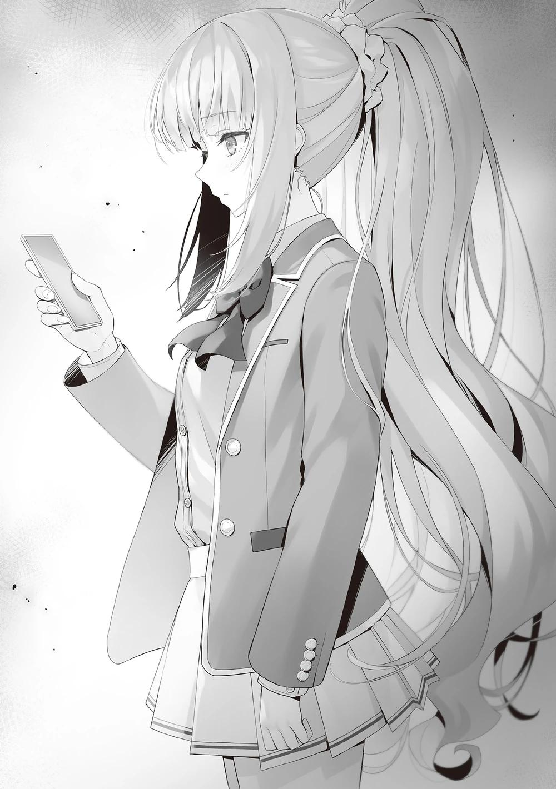
Volvió a pronunciar su nombre, pero Karuizawa seguía mirando la pantalla como si el tiempo se hubiera detenido. Satou se preguntó qué estaba pasando y miró la pantalla de reojo.
―...
Satou vio la imagen en la pantalla y se puso rígida.
―¿Quién te mandó eso?
―Nene-chan...
Y es que las dos personas de las que acababan de hablar aparecían en la foto adjunta al texto enviado por Mori Nene.
Eran Ayanokouji e Ichinose saliendo del gimnasio mientras hablaban.
La foto mostraba la entrada del gimnasio donde los dos estaban caminando frente a un banco.
―¿Cuándo fue tomada?
―Pregúntale...
Rápidamente le pidió a Mori que confirmara la fecha y descubrió que fue la tarde de hace dos días.
Fue cuando Karuizawa y los suyos estaban estudiando con Horikita y su grupo para el impulso final.
―Por qué...
―Tal vez por casualidad estaban juntos por aquí o algo así.
Contestó Satou en un intento desesperado de consolarla, pero obviamente él acababa de salir del gimnasio.
―¿Ayanokouji-kun va al gimnasio?
―No lo sé...
―Hola Karuizawa-san.
―¿¡…!?
Como para empujarla a un estado mental inestable, frente al gimnasio se le acercó Ichinose.
Ichinose estaba con su ropa casual.
―¿Eh? ¿Por casualidad viniste al gimnasio?
―No, no, es que... simplemente estábamos aquí por casualidad... ¿verdad?
―Ajá.
Satou asintió repetidas veces para respaldar a Karuizawa y dijo que estaba descansando en el banco.
―Ya veo. Creía que Ayanokouji-kun y tú habían empezado a ir juntos al gimnasio.
Ichinose respondió con una sonrisa indiferente, como si fuera algo natural.
―¿Eh...?
―¿Eh? ¿Qué pasa?
―...¿Ichinose-san sabía que Kiyotaka va al gimnasio?
Apagando la pantalla, Karuizawa guardó el teléfono en su bolsillo.
―Se lo conté a Ayanokouji-kun y probamos juntos el gimnasio. Le gustó y decidió empezar.
―Ya veo...
Murmuró Karuizawa con voz apagada.
―¿Ichinose-san se dirige ahora al gimnasio?
―Vamos a celebrar con toda la clase ya que ganamos el examen especial.
Vamos a vernos en la cafetería, pero olvidé algo el otro día cuando vine al gimnasio, así que pensé en pasar a recogerlo.
Ichinose sonrió.
―Oye Ichinose-san, ¿es verdad que tú y Ayanokouji-kun se encontraron el otro día?
Si Karuizawa no podía preguntarle, Satou no tenía más remedio que hacer su movimiento.
―¿Qué?
―No pasa nada entre Ichinose-san... y Ayanokouji-kun, ¿verdad?
―Oh no. No hay nada entre Ayanokouji-kun y yo.
Ella agitó su mano ligeramente y lo negó.
―...¿En serio?
Aún así, las sospechas de Satou no se confirmaron, y ella mostró una actitud más agresiva en su persecución.
Intentó detener a Satou tirando de sus mangas, pero la resistencia de Karuizawa no fue lo suficientemente fuerte.
―Sí. Yo no mentiría sobre algo así. Sólo le estaba pidiendo consejo a Ayanokouji-kun sobre mi clase... ¿Acaso te estaba confundiendo?
Ichinose estaba desconcertada por los ojos brillantes de Satou y la mirada inquieta de Karuizawa.
―Estoy pensando que tal vez Karuizawa-san está disgustada.... lo siento.
Ichinose puso cara de disculpa e inclinó la cabeza.
Al ver esto, Karuizawa también tuvo el valor de expresar sus pensamientos no expresados.
―...¿Fue cosa de Kanzaki-kun?
La mención del nombre de Kanzaki por parte de Karuizawa permitió a Ichinose deducir la situación, a pesar de que no tenía conocimiento personal de ello
―No tenía ni idea de ello, pero pude adivinar la situación con sólo oírlo.
Nuestra clase quedó reducida a la clase D y no podíamos permitirnos perder
más tiempo. No teníamos fuerzas para reconstruirnos y estábamos luchando.
Ayanokouji-kun vio eso y dijo que intentaría ayudarnos. Me pregunto si has oído hablar de otros nombres, como Mako-chan.
―¿Mako-chan?, ¿te refieres a Amikura-san? No estoy segura... ¿pero Himeno-san se enteró?
Cuando las sospechas alrededor de Ayanokouji e Ichinose se desvanecieron ligeramente, el tono de Karuizawa se aligeró.
―Sí, Himeno-san va a ayudarnos a reconstruir la clase. Lo estamos discutiendo juntos. Hay otras personas que lo saben, así que no te preocupes.
Ichinose, que no parecía saber mucho del tema, dijo esto para tranquilizar a Karuizawa.
―Pero no entiendo por qué Kiyotaka está ayudando a la clase de Ichinose-san.
―Lo sé. Debe haber alguna extraña razón...
Las dos, aún no del todo satisfechas con la información recibida, se miraron y expresaron sus preocupaciones.
Ichinose asintió y cerró los ojos.
―Es una cuestión de interés mutuo.
―¿Interés mutuo?
―Últimamente nos cuesta ganar. Estábamos en un aprieto con el examen especial al final del segundo semestre contra Ryuuen-kun, donde si perdíamos, la brecha entre nosotros y la Clase A se ampliaría de nuevo. Es más conveniente para Ayamokoji-kun que nosotros, la clase peor clasificada, ganemos contra Ryuuen-kun, que aspira al segundo puesto, en vez de que perdamos. Por eso nos ayudó.
Esta es la respuesta más plausible a por qué Ayanokouji ayudó a Ichinose, su rival. Hizo hincapié en que Ayanokouji era sólo un ayudante temporal para colaborar en la derrota de un rival fuerte.
―Realmente, no pasa nada entre... Kiyotaka y tú, ¿verdad?
―No tengo nada que ver con él en ese sentido.
Con los ojos bien abiertos, Ichinose afirmó claramente que no tenía nada que ver con Kiyotaka.
Karuizawa y Satou sólo pudieron asentir con la cabeza repetidamente ante esta actitud que no podía considerarse una mentira.
―Creo que Ayanokouji-kun es un poco imbécil por no poder comunicarse con su preciada novia. Pero si fui yo quien causó la ruptura, entonces sí, asumiré la responsabilidad de arreglar las cosas.
―Está bien. Ahora que sé lo que pasa, ¡seguro que hoy podemos hacer las paces! Gracias por aclarar las cosas, Ichinose-san.
―De nada. Si tienes más problemas, avísame.
Ichinose les dijo amablemente y vigiló sus espaldas mientras se marchaban del gimnasio.
―Te estoy diciendo la verdad, todavía no pasa nada con Ayanokouji-kun.
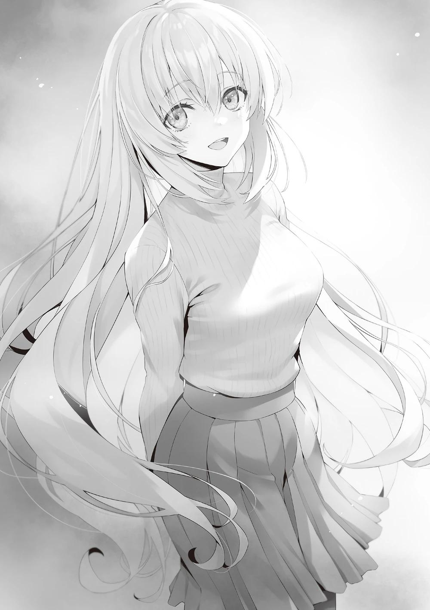
Mientras Karuizawa y Satou se alejan, se oye una vocecita a sus espaldas que no pueden oír.
Ichinose murmura algo para sí misma.
―Todavía no, ¿sabes?
Dejando atrás el aroma del perfume que llevaba, Ichinose se alejó.
PARTE 1
El primer día de las vacaciones de invierno. El cielo estaba cubierto de espesas nubes y llevaba lloviendo a cántaros desde la mañana.
Unos 10 minutos después de la hora acordada, Ryuuen se acercó con un paraguas en la mano. Ichinose, que lo había estado esperando desde antes, lo miró a la cara en silencio.
Se detuvieron cuando estuvieron lo suficientemente lejos el uno del otro como para poder oírse a través del ruido de la lluvia.
―El clima ha estado así últimamente, ¿verdad?
Ichinose se dirigió a Ryuuen sin preguntarle por su retraso.
―¿No te vas a quejar del retraso?
―Estaba preparada para esperar 30 minutos. Si no aparecías para entonces, iba a marcharme sin dudarlo.
Ichinose, que contestó con actitud relajada, parecía más preocupada por el cielo que por Ryuuen. Inclinó el paraguas y miró un poco al cielo lluvioso.
―No parará en lo que queda de día.
―Eres una blandengue por tomarte la molestia de responder a mi llamada.
Ignorando el murmullo de Ichinose, Ryuuen le dijo eso.
―No sé si Ryuuen-kun estaría satisfecho si dijera que somos amigos, pero creo que es normal que conteste cuando me llamas. No tenía ningún plan en este momento. Entonces, ¿qué quieres?
―Mi agenda se ha estropeado un poco. Pensé en ver si podía averiguar por qué.
―¿Es el examen especial del que hablas? Estaba un poco confundida con lo del acoso.
―Sé que piensas que no es algo artístico hacer eso, pero se ajusta a nuestras necesidades. Si es la forma más fácil y efectiva, ¿por qué no repetirlo?
Ryuuen dio instrucciones a sus compañeros para que presionaran y sabotearan sin descanso a los compañeros de Ichinose. Se metía a la fuerza en las aulas, bibliotecas o salas de karaoke donde los compañeros de Ichinose se reunían para estudiar, e interrumpía sus estudios haciendo mucho ruido.
Sin que Ayanokouji y los demás lo supieran, Ryuuen también daba instrucciones peligrosas. Ofrecía dinero a los alumnos con gran capacidad académica y los recompensaba si se equivocaban en todas las preguntas. O los amenazaba con que responder correctamente a todas las preguntas causaría problemas a algunos de sus compañeros.
La estrategia se basaba en la idea de que una clase débil podría abrir un agujero en una clase muy unida.
―Seguro que todos estaban molestos.
―Supongo.
Sin embargo, al final no causó mucho daño.
En la competición académica, Ryuuen no tenía muchas posibilidades de ganar aunque jugaran directamente.
Sabiendo esto, Ryuuen planeó luchar contra ellos fuera del ring.
―¿Pero de verdad creías que podrías ganar así?
―Sí.
Sin embargo, resultó que ninguna de las estrategias funcionó contra Ichinose.
―Pensé que tu clase se desmoronaría después de algo así, pero por lo visto has crecido desde el primer año.
Ishizaki y los demás que se acercaron a Ryuuen informaban de que el sabotaje de la clase de Ichinose había sido un éxito. Aunque algunos de los alumnos no aceptaban las tentaciones y amenazas, eran conscientes de su eficacia, como evidenciaba la agitación que podía verse en los estudiantes.
Sin embargo, los alumnos de la clase de Ichinose sólo mostraban exteriormente que tenían problemas. En secreto, no dejaban de sacar tiempo para estudiar y actuaban como si estuvieran asustados por las amenazas.
―¿De dónde salió esta sabiduría? Si hubieran sido ustedes en el pasado, habrían cancelado inmediatamente las sesiones de estudio y se habrían encerrado antes en lugar de malgastar energías. Habrías rechazado de plano nuestras amenazas. Sin embargo, te tomaste la molestia de fingir que seguías cayendo en nuestra estrategia.
Si hubiera sido Sakayanagi o Ayanokouji, Ryuuen no se habría sorprendido.
En cambio, habría considerado hacer un movimiento más fuerte como contramedida natural.
Una rata acorralada muerde al gato. El acorralado y débil contraataca.
Para averiguarlo de primera mano, Ryuuen invitó a Ichinose a hablar.
―Ahí no hay sabiduría, Ryuuen-kun. Nos limitamos a seguir estudiando en medio del ruido. Las palabras amenazadoras simplemente asustaron a todos. Lo que pasa es que no surtieron mucho efecto.
―No hay necesidad de modestia aquí. Obviamente, algo debe haber cambiado en tu clase.
―Ryuuen-kun y los demás deberían habérselo tomado en serio como nosotros y las demás clases. Debieron estudiar y sumar puntos... igual que Horikita-san y su clase vencieron a Sakayanagi-san.
―Estás hablando desde un lugar muy alto sólo porque obtuviste una victoria en un examen favorable. Bueno, este examen especial fue el colmo de la tibieza. Sin riesgo de que nadie fuera expulsado, sólo un agarre firme del bolígrafo y movimiento de brazos. A mí tampoco me importaba lo suficiente como para tomármelo en serio.
―¿Por qué no podías haberlo hecho de la forma normal como todo el mundo?
―Llevo una o dos semanas enseñando a estos idiotas, pero no creo que mejoren mucho. Es más fácil y rápido darles una patada.
Ryuuen se rio mientras se enfrentaba a Ichinose bajo la lluvia torrencial.
―Pero esa decisión fue un error, ¿no?
―Me derrotaron ustedes, cuyo único mérito es la seriedad, pero la próxima vez tendré que sabotearlos todavía más.
―¿Así que no vas a cambiar tu forma de actuar si se repite el mismo examen especial?
―Sí, no voy a cambiar. Te voy a hundir en el acto.
Respondió Ryuuen con seguridad, como si esa fuera su manera de hacer las cosas.
―Ya veo. Parece que no importa lo que digamos, ya no podemos estar de acuerdo en nada.
―Vuelves a la clase C por un estrecho margen durante un tiempo. Pero no creas que eso te va a ayudar a ganar de nuevo. Eres una patética oveja que hace tiempo que fue derrotada. Por mucho que te esfuerces en el fango, al final estás condenada a hundirte. ¿No estás de acuerdo?
―Últimamente perdemos mucho. Me duelen los oídos.
―Lo diré otra vez, esta vez sólo te salva el contenido del examen especial.
―No voy a negar eso.
Ryuuen tenía sus propias razones para morder implacable y forzadamente a Ichinose.
Pensó que podría entender a la otra parte hablando de esta manera.
Sin embargo, él no podía percibirlo. Las aperturas que Ichinose hubiera mostrado en el pasado no aparecieron en lo más mínimo.
―La clase a la que te enfrentarás en el examen final es la clase de Ayanokouji. Es un dolor en el trasero, ¿sabes? Incluso más que Sakayanagi, la clase a la que pienso aplastar. Así que la derrota es inevitable para ti. No soy el único que lo piensa. Sakayanagi debe estar pensando lo mismo. Estarás acabada al final del año escolar. Esta vez no pudimos ganar. Te pido que no te hagas ilusiones.
Ichinose no contestó inmediatamente, sino que se quedó quieta y escuchó a Ryuuen continuar.
―Es fácil para Ayanokouji y los demás. Consiguen puntos de clase por luchar contra insignificantes como tú sin tener que vérselas conmigo y con Sakayanagi. Nada podría ser más afortunado.
Atacó implacablemente a Ichinose, ignorando su falta de respuesta y tratando de arrinconarla.
―En efecto... Si perdemos en el examen final, podemos estar acabados.
Si la brecha se ensancha para la nueva Clase C en un enfrentamiento directo, les será casi imposible recuperarla en un año.
―Así que te diré cómo graduarse en la Clase A.
―¿Existe tal cosa?
―El examen de fin de año cortará tu camino a la Clase A. Entonces la única manera de graduarse en la Clase A es reunir puntos privados.
―Se necesitaría una gran suma de puntos para salvar a 40 personas. No creo que sea posible.
―No podemos salvarlos a todos. Pero, ¿y a una persona? Sólo 20
millones de puntos. Tienen la posibilidad de reunir puntos de la bondad de los corazones de su clase. Te depositarán 1 millón, 2 millones, lo que quieras como garantía de su confianza. Al final sólo tienes que gastar el dinero.
―Usar el dinero que te han confiado para cambiarte de clase es malversación. La escuela no lo permitirá.
―No lo sé. Desde luego, si gente como Sakayanagi o yo hiciéramos lo mismo, nos castigarían. Nos expulsarían sin dudarlo. Pero no es probable que eso te ocurra a ti.
―¿Por qué?
―Porque los buenos tendrán en cuenta tus sentimientos. Aunque sepas que has estado malversando, puedes decirle a la escuela que 'el dinero te lo dieron de alguna manera'. No es cierto al 100%, pero es una posibilidad lo suficientemente buena como para apostar que pasarás directamente a la clase A.
―Interesante historia. Pero creo que ya he tenido bastante.
Ichinose, que había averiguado el motivo de la invitación, no tenía motivos para seguir allí.
―Creo que es hora de terminar esta conversación.
―Iba a jugar con Suzune y Sakayanagi a partir de ahora, pero si hay una batalla que implique la expulsión de la escuela en el futuro, tu clase será un objetivo. Eliminaré a tus amigos que tanto se han esforzado por protegerte.
Desde el punto de vista de Ryuuen, Ichinose todavia no es reconocida como un obstaculo y trato de amenazarla.
Ichinose tomó la amenaza de frente y sonrió.
―Entonces te detendré antes de que lo hagas. Si es necesario, haré que te expulsen.
―Kuku. ¿Crees que puedes hacerme desaparecer a mí, o a cualquiera?
Ichinose, que es una persona bondadosa, está muy en contra de que se haga daño a otras personas. Esta ha sido la impresión uniforme no sólo de Ryuuen, sino también de todos los que la rodean desde hace dos años.
―Sin duda te has vuelto más hábil mintiendo, ¿verdad?
―¿Qué necesidad tienen tú y Sakayanagi-san de ser tan cautelosos conmigo ahora? No me importa lo que digan. No soy la clase de persona por la que debas preocuparte.
Gruesas nubes cubrieron el cielo y el sonido de la lluvia se hizo más fuerte.
Antes de darse cuenta, la sonrisa de Ryuuen desapareció y se quedó pensando en las palabras de Ichinose.
'La mujer que tengo delante no merece la pena'. Pensaba que la había estado tratando así.
Sin embargo, cuando lo recordé con calma, me di cuenta de que estaba siendo muy terco.
―En el futuro no me resistiré a nadie. No elegiré un medio para un fin.
―No es propio de ti tirarte un farol.
―Me acabo de dar cuenta de que ya no tengo tiempo para preocuparme por eso. Eso es todo.
Los pensamientos precipitados de Ryuuen se alejaron silenciosamente de su mente.
―No vas a tener piedad con nadie, ¿eh? Parece que estás bastante obsesionada con Ayanokouji estos días. Si ese es el caso, lo primero de lo que deberías deshacerte es de la existencia de Karuizawa, ¿verdad?
Una broma. Esta era la forma de acoso de Ryuuen para trastornarla mentalmente.
Incluso después de decir esto, Ichinose no cambió su cara dulce y sonriente.
―¿Qué quieres decir con 'obsesionada'?
―Los rumores viajan rápido en esta pequeña escuela.
Ryuuen ya era consciente del creciente contacto entre ambas partes en el proceso de recopilación de información. Ryuuen también estaba convencido de los sentimientos no correspondidos de Ichinose, aunque sólo puede hacer conjeturas.
―¿Por qué no te mueves más calculadamente? Si quieres, puedo ayudarte a deshacerte de Karuizawa.
'Impaciencia, ira, frustración o disgusto'. Sean cuales sean tus sentimientos, muéstramelos.
Este es el objetivo de Ryuuen en esta incitación.
―Si Ryuuen-kun ya lo sabe. Entonces no hay necesidad de ocultarlo.
Ichinose, con una leve sonrisa en su rostro, miro a Ryuuen a los ojos y contesto sin titubear.
―No quiero expulsar a Karuizawa-san por mis sentimientos personales.
Eso es otra historia.
A pesar de sus atrevidas palabras, después de todo es una buena persona.
Entonces Ryuuen trató de interponer esto, pero...
―Pero Ryuuen-kun se equivoca. Soy una persona bastante calculadora.
Diciendo esto, Ichinose puso su mano en su pecho y sonrió.
―Si no puedes resolver un problema, piénsalo y busca una respuesta. Si sigues sin encontrar la respuesta, pasa a la acción. Así es como se abren la mayoría de los caminos.
―¿Qué quieres decir?
―Quien sabe...
Ichinose volvió a pensar... en la noche de la excursión escolar.
Fue entonces cuando mi destino empezó a cambiar.
Hay una ligera posibilidad. No, fue un resultado derivado del instinto que ni siquiera consideró la posibilidad.
La situación a medianoche cuando todos estaban en la posada. Una ventisca.
Un yo desvanecido.
¿Cómo reaccionarán mis compañeros y qué les pasará si se convierte en una conmoción?
Lo que Ayanokouji descubrió para mí no fue una sorpresa en absoluto.
Todo en ese momento, en ese instante, era inevitable.
Algo desagradable se aferró a la mano de Ryuuen que sujetaba el paraguas, y luego se extendió por todo su cuerpo.
―Tengo que ir al gimnasio ahora. No quiero desperdiciar ni un segundo de felicidad.
Todo el análisis sobre Ichinose que había estado manteniendo hasta entonces, todo, fue negado. Ichinose ya no estaba interesada en Ryuuen para nada.
Comenzó a caminar, pasando junto a él y dirigiéndose al centro comercial Keyaki.
―Me retracto, Ichinose.
Ryuuen se dio la vuelta y se dirigió a Ichinose.
―Puede que tengamos suerte de no encontrarnos contigo en el examen de fin de curso.
Era una corazonada.
Era una palabra de respeto por su presencia, que le hacía pensar que era más problemática que Sakayanagi, aunque sólo fuera por un momento.
PALABRAS DEL AUTOR
Feliz Año Nuevo 2023, soy Kinugasa y espero que sigamos teniendo un gran año juntos. El año pasado fue bastante agitado, con la segunda temporada del anime y otras cosas que me mantuvieron ocupado. Este año, con la tercera temporada en el horizonte, espero que las cosas sigan siendo emocionantes.
A nivel personal, tengo una rutina para los días laborables: elijo una de las tres cafeterías y voy andando o en bici a buscar ideas mientras me tomo un café hasta la hora de comer. Después trabajo en mi despacho hasta la noche y repito esta rutina cinco días a la semana.
Los fines de semana paso la mitad del día con mis hijos y la otra mitad trabajando.
Aunque los días entre semana parecen pasar volando, los fines de semana parecen tres veces más largos y pueden ser un reto. Sin embargo, a menudo se me ocurren ideas interesantes durante esos ratos, lo cual es un pequeño misterio para mí.
Lo que me preocupa últimamente es que, cuando me resfrío, tardo mucho en recuperarme. Desde antes de Navidad, sufro de tos persistente y goteo nasal, y ni los medicamentos de venta libre ni los recetados me han ayudado mucho. Me da vergüenza toser con frecuencia mientras hago las compras en el supermercado, incluso con mascarilla. Espero que pronto haga más calor para poder recuperarme y estar sano.
Ahora, volvamos al tema principal. El arco argumental del segundo semestre terminó en el volumen 9, y me gustaría dar las gracias a aquellos que lo han seguido hasta ahora. Ayanokouji y otros personajes se están preparando para el tercer semestre y su tercer año de preparatoria.
Puede que el tercer semestre sea un poco más difícil que el segundo, así que vayan preparándose. Como siempre, el próximo volumen será el arco de las vacaciones de invierno. Teniendo en cuenta que nuestro tiempo de relajación será limitado por el momento, este puede ser un volumen valioso y agradable.
Tendré que despedirme por un tiempo, pero espero volver a verlos antes del verano.
HISTORIAS CORTAS
ICHINOSE HONAMI
CELOS
AH, ESTABA nerviosa.
Había dejado a Ayanokouji-kun y Mako-chan con la excusa de ir a buscar agua.
Últimamente, me acostumbré al recorrido de 30 minutos y sudaba lo suficiente como para sentirme satisfecha, pero ahora...
Un sudor extraño y un ritmo cardíaco elevado.
Esto no era normal.
No es una enfermedad repentina o algo así. Estaba claro que era debido a ellos dos.
―Mako-chan dijo algo extraño...
Intenté no recordar para estabilizar mi respiración, pero fue un esfuerzo inútil.
No pude evitar acordarme de lo que pasó antes.
―Quiero decir, eres bastante simpática Honami-chan.
Mako-chan me susurró esas palabras después de mirarnos tanto a mí como a Ayanokouji-kun.
―Probablemente no sea nada fuera de lo normal, pero ¿te has dado cuenta de que estás vestida de forma bastante atrevida?
―¿¡...!?
Había estado demasiado ocupada pensando en otras cosas como para preocuparme por mi propia apariencia.
Pensé en ir al gimnasio como de costumbre y disfrutar de la paz.
―¿Así que no te diste cuenta, Honami-chan?
―¿Qué pasa...?
―Oh, bueno, es que llevar ese tipo de ropa puede ser embarazoso cuando no estás acostumbrada, ¿verdad?
―Ya veo...
Mako-chan transmitió cuidadosamente sus sentimientos.
Probablemente pensó que siendo directa lo haría más fácil, pero tuvo el efecto contrario.
Debido a su gentil intromisión, ahora quería esconderme para siempre.
Por eso, durante los últimos 30 minutos, me había centrado únicamente en correr en la caminadora.
Sin embargo, esta era la situación en la que me encontraba.
―Ugh... Es tan vergonzoso.
Quería cambiarme de ropa inmediatamente, pero no podía.
Si me ponía una camisa modesta sólo porque estaba sudando un poco, se revelarían mis intenciones.
Si la otra persona era lo suficientemente ingenua, podría ser diferente, pero Ayanokouji-kun sin duda se daría cuenta.
De repente se me secó la garganta.
Puede que solo fuera un motivo para escapar, pero decidí hidratarme.
―Me calmé un poco.
Beber un poco de agua fría me ayudó a recuperar la compostura.
―...Bien. Hagámoslo.
Sólo tenía que concentrarme en mi entrenamiento en el gimnasio y todo iría bien.
Sin embargo, cuando volví al abarrotado gimnasio, me pesaban los pies.
Mientras miraba a lo lejos, Ayanokouji-kun y Mako-chan parecían estar divirtiéndose.
―...Parece que su charla está tomando ritmo.
No sabía de qué estaban hablando, pero su conversación continuaba sin problemas.
La actitud de Mako-chan era idéntica a cuando hablaba con un compañero de clase.
Era por el tiempo que estuvo junto a Ayanokouji-kun durante el viaje escolar.
Parecía que se llevaban bien.
Aunque era bueno que mis amigos se llevaran bien, no podía calmarme mientras mi corazón se sentía inquieto.
Sentía como si algún tipo de emoción vil se aferrara a mí.
Mis pies, que debían sentirse pesados, volvían a ser ligeros.
La sensación de estar encadenada había desaparecido.
Más bien, quería deshacerme rápidamente de este malestar en mi pecho.
No podía pensar en otra cosa.
―Supongo que soy un poco rara después de todo, pero hoy saldré de ésta.
Respiré hondo como para impulsarme hacia adelante.
Y entonces, decidí volver con los dos como mi yo de siempre.
KUSHIDA KIKYO
NI LOCA ME UNIRÉ
PENSABA QUE me acababa de llamar al pasillo, ¿pero quería que me uniera al consejo estudiantil?
Y para colmo, con Horikita como presidenta del mismo, ¿trabajaría a sus órdenes? No bromees conmigo.
Por muchos méritos que eso tuviera, no podía aceptar.
Justo cuando estaba a punto de rechazarla con firmeza, sentí una extraña presencia a mis espaldas.
―Bueno, está decidido. Si te unes al consejo estudiantil, Kushida-senpai, aunque haya gente a la que le caigas mal, no podrán ponerte las manos encima~.
La que se aferraba a mí era Amasawa, de primer año.
Era una de las personas que odiaba tanto hasta el punto de querer asesinarla.
Era la última persona que quería tener cerca en ese momento.
Horikita también consideraba a Amasawa como un obstáculo para esta reunión e intentaba deshacerse de ella.
―No fue nadie en particular. Si tuviera que elegir, diría Kushida-senpai.
―¿Yo? O-Oh, ya veo. ¿Qué clase de asunto es?
―¿Eh? ¿Qué podría ser~? ¿Qué crees que quiero?
Esta mujer. Definitivamente vino aquí sólo para meterse conmigo. En serio quiero asesinarla.
Pero ya que no podía tomar ninguna acción en este momento, tuve que soportar esto con una mente tranquila.
Además, Ayanokouji-kun está aquí.
No, no, no importaba si él está aquí o no...
Sentí una emoción incomprensible por un instante, así que la aparté y la forcé a desaparecer.
Mientras Amasawa seguía participando en la conversación, yo seguía pensando en una forma de salir de esta.
―Lo siento, no puedo estar a la altura de tus expectativas. El consejo estudiantil no es para mí...
―¿Por qué no te unes al consejo estudiantil en vez de decir eso?
De nuevo, Amasawa interfirió diciendo eso.
Además, se pegó a mí, tocó mi cuerpo sin permiso, y se dejó llevar aún más.
Incluso me tocó las mejillas, pero, sabiendo que había más gente allí, tuve que seguir sonriendo.
―Kushida-senpai es un poco bonita, tiene una figura un poco agradable y es un poco lista, ¿verdad?
No podía seguir así, estaba al límite.
―Oye, ¿sabes?... Si vamos a seguir hablando, ¿podemos cambiar de lugar, por favor?
Si no cambiábamos de lugar, podría acabar con la vida de Amasawa inmediatamente.
Tras mi desesperada súplica, Horikita pareció comprender y accedió.
Dios mío, ¿por qué tengo que pasar el tiempo rodeada de gente a la que odio?
De ninguna manera me uniré al consejo estudiantil.
Acabemos con esto para poder irme a casa, me prometí mientras seguía acumulando estrés.
HIMENO YUKI
UN CHICO AL QUE NO ENTIENDO MUY BIEN
LA NOCHE en que estaba en el karaoke con Kanzaki-kun, me quedé en el centro comercial Keyaki hasta tarde. Ayanokouji-kun, que estaba pasando el tiempo de una manera similar, me llamó.
―¡Huh! ...Estaba aturdido. ¿Iba a la tienda de comestibles y me dirigía a la entrada del cine sin motivo?
Respondí por qué había permanecido en el centro comercial hasta altas horas de la noche, y mencioné lo que se me ocurrió.
―Ya que estamos los dos aquí, si quieres, ¿quieres que volvamos juntos?.
No podía decir que entendiera a mis compañeros de clase, pero Ayanokouji-kun era aún más desconocido.
Por eso pensé que sería bueno entender qué clase de persona era, aunque sólo fuera un poco.
Desde luego, hablar con la gente no era mi fuerte, y tampoco me gustaba. No podía contar las veces que me sentí molesta al hacerlo.
Pero antes de darme cuenta, estaba manteniendo una animada conversación con el chico a mi lado.
No es que me sintiera atraída por él como miembro del sexo opuesto, simplemente tenía la sensación de que nuestras longitudes de onda o algo así coincidían.
Pero realmente no sabía la razón. Era un chico difícil de entender.
―Me di cuenta de que no podía hacer nada comparado con lo que había imaginado. Tenía esta infundada confianza de que estaba haciendo algo asombroso al darme cuenta de que Ichinose-san estaba en peligro, a diferencia de los que me rodeaban que no se dieron cuenta. Siento que me humillaron.
Me habría enfadado si otra persona me hubiera dicho algo así, pero sus palabras se me quedaron grabadas.
―Siento haber dicho algo tan negativo.
―No es algo por lo que tengas que disculparte. Más bien, lo que dijiste fue correcto.
Aunque pensé que sería mejor ser más sincera conmigo misma a su lado, seguía teniendo miedo.
Sin embargo, alguien así no sería yo. Sentía que me convertiría en una existencia completamente diferente.
―Pensé que sería más fácil hacer algo increíble... Pasar a la acción es difícil.
―Todo el mundo se siente así. Hasta a Ichinose y a mí nos cuesta pasar a la acción.
―En este momento estamos buscando el camino correcto a seguir. Pero tal y como están las cosas, estoy perdiendo la fe en que continuar con Kanzaki-kun y Hamaguchi-kun mejore las cosas.
―Tener dudas no es algo malo. Sin embargo, no es un problema que pueda resolverse si no haces nada.
Eso es verdad. Es un razonamiento válido, pero...
No sabía si los esfuerzos que estábamos haciendo para cambiar la clase iban en la dirección correcta.
―Sí, pero... aunque empecé a moverme para salvar la clase, no puedo evitar sentir que los engranajes invisibles están empezando a desaparecer poco a poco.
Lo que sentía era que la situación empeoraría aún más de lo que ya estaba.
Quería pensar que no iba a ser así, pero no tenía las pruebas necesarias para sentirme tranquila.
Espero que mi ansiedad se deba sólo a que pienso demasiado.
ICHINOSE HONAMI
DEBO SEGUIR ADELANTE
Anoche estuve tumbada en la cama pensando hasta que me quedé dormida cerca de medianoche.
Me desperté un poco después de las 5 de la mañana. Sólo dormí 5 horas.
Normalmente duermo 7 u 8 horas... Quizá fue porque estaba pensando demasiado.
Tenía una reunión con Ayanokouji-kun a las 10 am en el centro comercial Keyaki.
Consideré la posibilidad de volver a dormir, pero no tenía ganas de permitirme mi pasatiempo favorito -dormir hasta tarde- hoy.
Cuando cerré los ojos, lo único que me vino a la mente fue lo que iba a pasar a partir de ahora.
Desde ayer, cuando Ayanokouji-kun me pidió que nos viéramos, mis latidos aumentaron.
Aunque sabía que esto no era realmente una especie de cita entre novio y novia.
Ayanokouji-kun ya tenía a alguien especial para él, y yo solo era alguien de su mismo año escolar.
Así que debía de haber otra razón para que me invitara a salir, pero no era necesario preguntar.
Supuse que tenía que ver con mi renuncia al consejo estudiantil.
Nagumo-senpai me ordenó que guardara silencio, pero ya habían empezado a correr rumores. El resto de la clase debía de sentir curiosidad por saber por qué abandoné el consejo estudiantil.
Seguí pensando en cosas así mientras me movía de izquierda a derecha en la cama.
Entonces, después de grandes esfuerzos, hacia las nueve y media, empecé a llegar al límite de mi permanencia ociosa en mi habitación.
La previsión anunciaba lluvia por la tarde, así que agarré mi paraguas.
Caminé despacio hacia el centro comercial Keyaki, evitando el contacto con el mayor número posible de personas. Hacía frío afuera, pero eso me ayudó a mantener la compostura.
Pensando que había tomado la decisión correcta al salir temprano, llegué al lugar de la reunión y comencé a hacer preparativos mentales para cuando Ayanokouji-kun llegara.
Primero, no parecer molesta ni mostrar nada negativo.
Después, no preguntar por Karuizawa-san.
Y por último, no mostrar ninguna emoción peculiar.
Soy amiga de Ayanokouji-kun, amiga, amiga, amiga, amiga.
Sí, estoy bien. Todo irá bien.
Apreté mi paraguas mientras creía esto.
La razón por la que decidí reunirme con Ayanokouji-kun hoy... es para seguir adelante.
Tenía que estar preparada para avanzar.
―Buenos días, Ayanokouji-kun.
Lo llamé mientras él caminaba hacia mí.
Al final de ese día, me olvidaría de todo. Mantuve ese sentimiento oculto en mi corazón


VISÍTANOS EN NUESTROS
DIFERENTES SITIOS
http://gladheimtranslations.blogspot.mx/
https://twitter.com/GladheimT
https://mastodon.social/@GladheimT
Si alguien desea hacer una donación
https://ko-fi.com/gladheimtranslation
https://www.buymeacoffee.com/gladheimtls
https://patreon.com/GladheimT